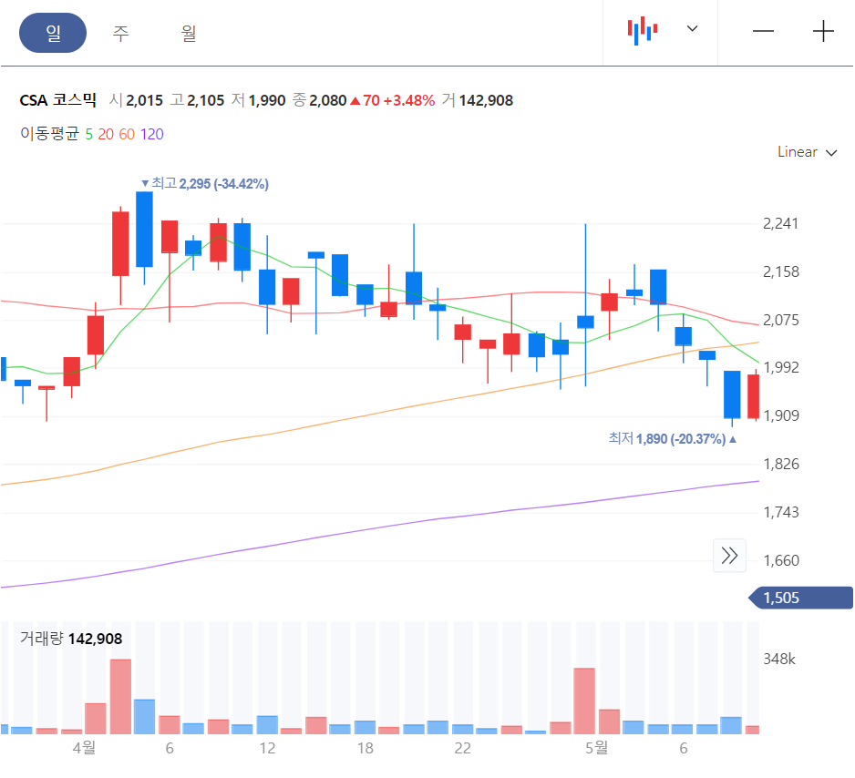
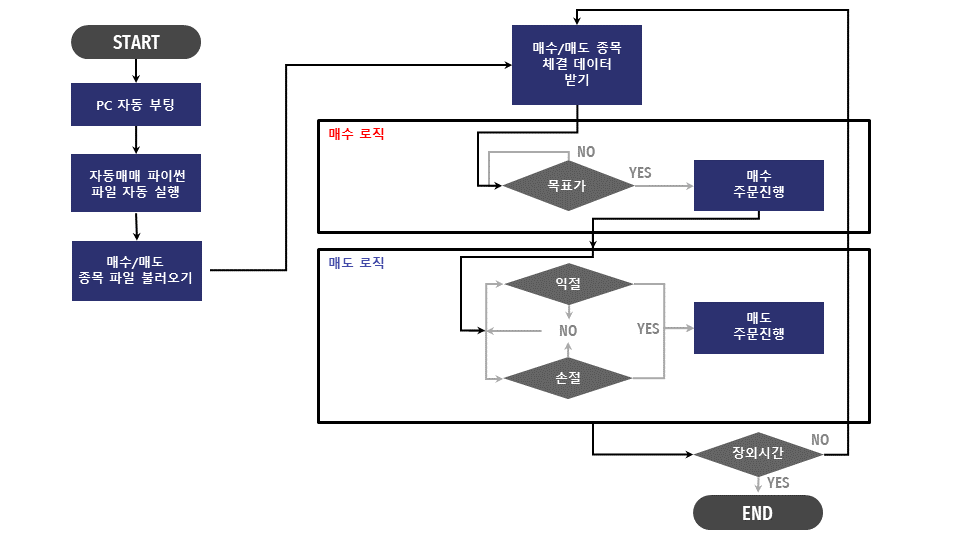
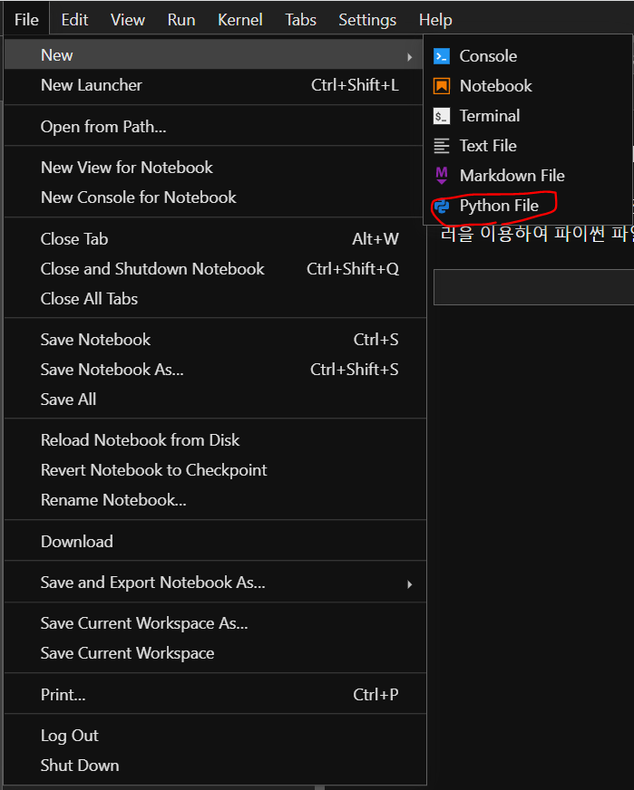
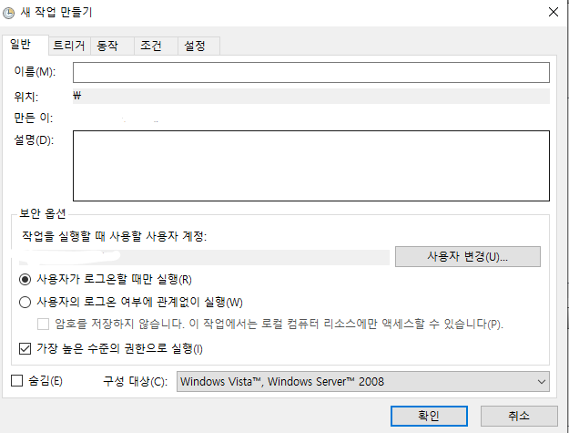

나만의 추천 시스템
Contents
나만의 추천 시스템#
(주식데이터로 데이터분석 배우기)#
책을 시작하면서#
약 2년의 코로나 팬데믹 기간 동안 재택근무를 하면서 저녁시간에는 새로운 관심사를 찾아볼 시간적인 여유가 있었습니다. 저처럼 체력이 약한 사람은 퇴근 후 집에 오면, 보통 육체적 정신적 에너지가 하나도 남아있지 않았지만, 재택 기간동안은 저녁에 새로운 것들을 시도할 정신적 여유가 있었습니다. 그 중에 하나가 주식데이터 분석이였습니다. 시장에 많은 돈이 풀리면서 유동성이 증가했고, 코스피 지수는 3000 이 넘어가기도 했습니다. 많은 분들이 주식에 관심을 가지게 되었고, 저도 그 중 한 명입니다. 투자로 많은 수익을 얻은 분들은 “이런 시그널이 있으면 주가가 상승한다” 등의 실용적인 콘텐츠를 유투브에 많이 올려주셨습니다. 유투브로 많은 정보를 얻었습니다. 코로나 팬데믹 전까지는 한 번도 주식투자를 해 보지 않았는데요, 재택기간 동안 주위에 주식으로 돈을 많이 번 사람들을 만나면서, 나도 한 번 해볼까 하는 욕심이 생겼습니다. 하지만, 데이터 분석을 오랫동안 업으로 한 직장인으로서 다른 사람이 설명해주는 이론에 솔깃해서 투자하고 싶지는 않았습니다. 직접 데이터 분석으로 주가가 상승할 종목을 예측하는 알고리즘을 하나 만들어보고 싶었습니다. 그리고 그 과정들을 나름대로 요약하여 책에 담기로 했습니다. 책을 집필하면서 다시 코드를 정리해보는 기회가 되었고, 새로운 아이디어도 얻었습니다. 혹자는 “좋은 알고리즘이 있으면 당신이 혼자 사용해서 돈을 벌지, 왜 책으로 대중에게 공개하느냐?” 하는 질문이 있으실텐데요. 이 책에서 제안하는 알고리즘도 나름 저의 노하우가 많이 들어가 있지만, 더 좋은 알고리즘을 많이 만들 수 있습니다. 이 책의 중요한 목적은 데이터 분석을 배우고 싶은 분들에게 대중적 관심도가 높은 주식데이터를 이용함으로써 좀 더 흥미롭게 데이터분석을 배우는 것입니다. 이 책에서는 데이터 수집 - 가공 -예측모델링 - 활용 - 실행까지 전 머신러닝의 전 과정을 주식데이터로 진행하게 됩니다. 무엇보다도 중요한 것은 데이터 분석을 통해 수익을 만드는 경험을 해 보는 것입니다. 그것이 주식이여도 좋고, 부동산이여도 좋습니다. 데이터분석이 직접 수익으로 연결되는 과정을 주식데이터를 이용해서 증명하고 싶었습니다.
데이터분석 환경의 변화#
1990년대 데이터 분석(혹은 데이터 사이언스)는 주로 데이터베이스 마케팅에 분야에 활용이 되었습니다. 데이터베이스 마케팅이란 고객과 회사와 접점에서 발생하는 데이터를 데이터베이스화하고 마케팅에 활용하자는 아이디어입니다. 여러번 구매할 수 있는 상품의 경우 데이터베이스 마케팅이 효과가 좋습니다. 주로 트랜잭션(구매이력) 을 RFM (Recently, Frequceny and Monetary) 등의 인자로 고객을 세분화하고 세분된 고객군별로 별도의 마케팅을 함으로써 더 효과적인 캠페인을 할 수 있었습니다.
2000년 초반에는 CRM(Customer Relationship Management) 이 업계의 화두였습니다. 특히 데이터베이스마케팅을 할 수 있는 소프트웨어가 인기가 좋았습니다. 오라클(Oracle), 시불(Siebel) 등은 CRM 소프트웨어와 컨설팅을 경쟁적으로 시장에 팔았습니다. CRM 은 “신규고객 1 명 획득에 따른 비용 대비 수익보다, 기존 고객을 유지하는 비용 대비 수익이 훨씬 좋다”라는 기본 철학을 바탕으로 합니다. 하지만 고객 분석과 전략보다는 벤더의 소프트웨어 판매에 치중이 되다보니, 효과를 입증하기 어려웠고 무용론이 대두되었습니다.
또한 데이터분석은 개인 신용평가에도 활용이 많이 되었습니다. 과거 IMF (1997년) 이전에는 대출 신용한도나 신용카드 한도를 대출 담당직원이 심도있는 데이터 분석 없이 결정했습니다. 데이터에 근거하지 않고, 과거 경험으로 결정했습니다. IMF 이후, 많은 신용불량자가 생성되자 은행에서는 연체관리의 중요성을 인식하기 시작했습니다. 데이터에 근거한 통계적인 접근을 시작했습니다. 예를 들어, “이 고객은 통계적으로 연체할 확률이 70% 이므로, 예상되는 손실이 오백만원이 될때까지 신용한도를 낮춰야한다. 이런 식의 접근입니다”
데이터 분석은 회사에서 중요한 업무를 담당했지만, 대우를 잘 받지는 못 했습니다. 똑똑한 신입이나 대리급에서 하는 일이라고 생각하는 임원이 대부분이였습니다. 따라서 지원부서의 역할이 강했고 승진과 성과급은 영업부서의 독차지였죠.
하지만, 시대가 변했습니다. 인터넷/모바일의 발달로 온라인 시장이 급격히 커졌습니다. 온라인은 영업부서의 역할을 축소시켰습니다. 은행은 점포보다는 모바일 채널을 통하여 고객에게 더 저렴하고 다양한 서비스를 제공할 수 있게 되었습니다. 딥러닝 기술의 발달로 사람의 판단이 필요없는 단순한 업무는 자동화가 가능해졌습니다. 즉 분석된 결과가 비용절감과 영업의 결과로 곧바로 연결이 되는 시대가 되어 가고 있습니다. 구글은 유투브 광고를 통하여 많은 수익을 올리고 있습니다. 데이터 분석(추천 알고리즘) 이 영업결과가 되는 대표적인 케이스라고 말씀드릴 수 있습니다.
제조업도 센서기술과 빅데이터 저장 기술의 발달로 데이터분석의 혜택을 보기 시작했습니다. 전체 프로세스에서 발생되는 데이터를 연결하여 불량 원인분석, 비용절감 및 생산증대에 데이터를 활용하고 있습니다. 특히, 데이터를 활용하여 최적으로 기계를 제어하는 부분까지 발전하고 있습니다.
분석 툴과 용어도 많은 변화가 있습니다. 과거에는 SAS 라는 통계분석툴을 주로 사용했습니다. 개인적으로도 SAS 를 이용하여 20년이상 일을 했습니다. 아침에 출근하면 왼쪽 모니터에는 엑셀, 오른쪽 모니터에는 SAS 가 있었습니다. 개인적으로 애착이 깊은 소프트웨어입니다. 요즘에는 파이썬이 대세입니다. 두가지 툴 사이에 큰 차이점은 SAS 는 분석에 특화되어 있지만, 파이썬은 분석뿐 아니라 자동화와 배포(예를 들면 웹서비스)까지 모든 서비스를 가능하게 합니다. 따라서 분석의 결과를 구현해서 성과로 보여주고 싶다면 파이썬이 좋은 툴입니다.
데이터분석이라고 부르던 업무 영역들이 확장되어 이제는 데이터사이언스라고 불리고 있습니다. 일부는 데이터분석가과 데이터사이언티스트를 구분하고 업무영역을 다르게 보는 시각이 있으나, 제 경험으로는 차이가 크게 없습니다. 요즘 데이터사이언티스트를 하시는 분들은 컴퓨터 혹은 소프트웨어 전공자 분들이 많으셔서 소프트웨어 개발도 잘 하십니다. 분석결과가 실행되어 결과가 되는 속도가 더욱 가속되고 있습니다.
파이썬 데이터분석 기초#
이번 장에서는 데이터 분석에 꼭 필요한 부분만 다룰 수 있도록 하겠습니다. 파이썬 기초 학습은 유튜브에서 좋은 강의를 쉽게 찾으실 수 있습니다. 이 장에서는 주가데이터 분석에 필요한 기술만 우선적으로 익히고, 배운 기술을 이용하여 래리 윌리암스의 변동성 돌파전략을 구현해 보겠습니다. 알고리즘 개발을 위한 파이썬 코드는 쥬피터노트북 환경에서 작성하고 실행을 하였습니다. 주피터노트북은 대화형으로 코딩을 할 수 있는 파이썬 에디터이기 때문에 데이터분석가 가장 선호하는 에디터입니다. 아나콘다를 설치하면 데이터분석을 위한 여러 패키지와 함께 주피터노트북이 설치됩니다. 아나콘다 설치 관련하여 다양한 유투브 동영상과 온라인 자료가 있습니다. 본서에는 7장(자동매매)에서 아나콘다 설치를 위한 가이드를 제공합니다. 아나콘다를 설치 못하신 독자는 아나콘다 설치 완료하시고 진행하시면 되겠습니다.
Data Type#
먼저 데이터 타입에 대한 이해가 필요합니다. 주식 데이터 분석에서 활용할 데이터 타입은 숫자(Number), 문자열(String), 날짜(Date), 딕셔너리(Dictionary), 리스트(List), 시리즈(Series), 데이터프레임(DataFrame) 등이 있습니다. 각 타입의 형식은 아래와 같습니다.
# Number
n1 = 123
n2 = 234
# String
s1 = 'string'
s2 = 'I am Tom'
# Date
import datetime
d1 = datetime.datetime(2021, 1, 3, 0, 0)
yymmdd = '2021-01-03'
d2 = datetime.datetime.strptime(yymmdd, '%Y-%m-%d')
# Dictionary
dic1 = {'a':11, 'b':12, 'c':13}
# List
l1 = [1,2,3]
l2 = ['a','b','c']
# Series
import pandas as pd
ss1 = [11,12,13,14,15]
ss2 = pd.Series(ss1)
# DataFrame
c_1 = [1,2,3]
c_2 = ['a','b','c']
df1 = pd.DataFrame({'col1': c_1, 'col2': c_2})
String#
문자열의 첫 글자부터 0, 1, 2 번째 문자 해당합니다. 예를 들어, ‘String’ 이란 문자열을 s1 이란 변수에서 저장한 경우, s1[0] 은 ‘s’ 에 해당하고, s1[1] 은 ‘t’ 에 해당합니다.
# String
s1 = 'string'
s2 = 'I am Tom'
print(s1)
print(s2[0], s2[5]) # I am Tom 의 첫번재[0], 6번째[5] 글자 반환. 대부분의 컴푸터 언어는 0 부터 시작.
string
I T
List#
리스트는 여러 개의 원소를 대괄호 [] 에 넣은 형태입니다. 리스트도 문자열과 동일하게 0 부터 시작합니다. 아래 l1 에서 0 번째 원소는 1 이고, l2 에서는 ‘a’ 입니다. 그리고 [start_point:end_point] 를 형식으로 원소의 일부만 가져올 수 있습니다. 단, [start_point:end_point] 에서 원소는 end_point 전까지 가져오는 사실만 유의하시면 됩니다.
# List
l1 = [1,2,3]
l2 = ['a','b','c','d']
print(l1[0])
print(l2[0])
print(l2[:2]) # 0 ~ 1 번째 문자를 가져옴. 2 번째 포함되지 않음.
print(l2[1:3]) # 1 ~ 2 번째 문자를 가져옴. 3 번째는 포함되지 않음
1
a
['a', 'b']
['b', 'c']
Number#
숫자형은 정수형, 소숫점형으로 나눌 수 있으나, 아래와 같이 곧바로 사칙연산이 가능합니다.
# Number
n1 = 123
n2 = 234
print(n1*n2)
28782
Date#
날짜형 데이터는 주식데이터 분석에 중요한 데이터형식입니다. 활용도가 아주 높습니다. 날짜 데이터를 활용하기 위해서는 먼저 datetime 패키지를 import 합니다. datetime 는 날짜 데이터를 다루기 위한 여러 메소드를 가지고 있습니다. 첫 번째 d1 변수에서 datetime.datetime 함수는 년, 월, 시 등의 숫자를 파이썬 날짜로 변형할 수 있게 해 줍니다. d2 변수는 문자열로 되어 있는 날짜를 파이썬 날짜로 변형하는 한 후 저장을 합니다. strptime 은 문자열을 파이썬 날짜로 변경해주는 메소드입니다. strptime 은 두 개의 인수가 필요한데요. 이 함수의 첫 번째 인자는 날짜 형태의 문자열, 두번 째 인자는 형식 포맷입니다. 문자열 날짜 포맷이 %Y-%m-%d 형태라는 것을 인수로 알려줍니다. d3 는 다른 날짜 형식으로 되어 있는 문자열을 파이썬 날짜로 변경하는 법을 보여줍니다. d4 는 반대로 파이썬 날짜를 다시 문자열로 변경하는 법을 보여주고 있습니다. 이 때 함수는 strpftime 입니다. 마지막으로 timedelta 를 알아보겠습니다. timedelta 는 일정한 시간을 뒤로 이동한 결과를 반환합니다. 예를 들어 d1 에 hours=5 를 추가하면 2021년 1월 3일 0 시에서 2021년 1월 3일 5시로 변경됩니다. 아래 예시는 d1 에서 5 시간을 더 했을 때, 2 일 더했을 때 결과를 보여줍니다.
# Date
import datetime
d1 = datetime.datetime(2021, 1, 3, 0, 0)
yymmdd = '2021-01-03'
d2 = datetime.datetime.strptime(yymmdd, '%Y-%m-%d')
time_point = '2021/01/03 19:15:32'
d3 = datetime.datetime.strptime(time_point, '%Y/%m/%d %H:%M:%S')
d4 = datetime.datetime.strftime(d3, '%Y-%m-%d')
print(d1)
print(d2)
print(d3, type(d3))
print(d4, type(d4))
print(d1 + datetime.timedelta(hours=5))
print(d1 + datetime.timedelta(days=2))
2021-01-03 00:00:00
2021-01-03 00:00:00
2021-01-03 19:15:32 <class 'datetime.datetime'>
2021-01-03 <class 'str'>
2021-01-03 05:00:00
2021-01-05 00:00:00
Dictionary#
디셔너리는 key 와 value 가 있는 짝으로 있는 형태입니다. key 를 이용하여 원하는 값을 찾을 수 있어서, 프로그램에서 참조 값을 저장해 둘 때 아주 유용합니다. value 대신에 List 나 DataFrame 형식의 데이터도 넣을 수 도 있습니다. 아래 예시에서는 dic1 에서 키값 ‘a’ 에 해당하는 값은 11 입니다. 새로운 key 와 value 를 넣어서 기존의 Dictionary 에 추가할 수 있습니다. 아래 두 번째 예시는 ‘d’라는 key 에 value 14 를 추가하는 방법입니다. Dictionary 가 너무 커서 어떤 key 값들이 있는 지 알고 싶을 때는 key() 메소드를 사용합니다.
# Dictionary
dic1 = {'a':11, 'b':12, 'c':13}
print(dic1['a'])
dic1['d'] = 14
print(dic1)
print(dic1.keys())
11
{'a': 11, 'b': 12, 'c': 13, 'd': 14}
dict_keys(['a', 'b', 'c', 'd'])
Series#
Series 라는 데이터 타입을 이용하기 위해서는 Pandas 패키지를 이용합니다. Pandas 는 테이블 형태의 데이터를 다루는데 정말 강력한 패키지입니다. 먼저 ss1 이라는 리스트를 생성해 보겠습니다. ss1 이라는 리스트에 어떤 메소드를 사용할 수 있는 지 알기 위해서는 dir() 를 이용합니다. dir() 를 하면 Built-in 함수 전체를 알 수 있습니다. append 부터 sort 까지 총 11 개의 함수가 나옵니다. 이 11 개 함수가 List 에서 쓸 수 있는 메소드입니다. 이번에는 ss1 를 Series 로 변경한 후, ss2 에 저장하겠습니다. 그리고 dir() 함수로 호출해 보겠습니다. 많은 메소스가 나열됩니다. 예를 들어 List 값의 평균을 알고 싶은데, List 는 평균을 구하는 메소드가 없습니다. 하지만 Series 에는 mean() 으로 평균값을 구할 수 있습니다.
import pandas as pd
ss1 = [11,12,13,14,15]
ss2 = pd.Series(ss1)
print(dir(ss1)) # 'append', 'clear', 'copy', 'count', 'extend', 'index', 'insert', 'pop', 'remove', 'reverse', 'sort' 등 사용가능
print('\n')
print(dir(ss2))
print('\n')
''' ss1.mean() --> 에러발생 '''
print(ss2.mean()) # 평균값 13 반환
['__add__', '__class__', '__class_getitem__', '__contains__', '__delattr__', '__delitem__', '__dir__', '__doc__', '__eq__', '__format__', '__ge__', '__getattribute__', '__getitem__', '__gt__', '__hash__', '__iadd__', '__imul__', '__init__', '__init_subclass__', '__iter__', '__le__', '__len__', '__lt__', '__mul__', '__ne__', '__new__', '__reduce__', '__reduce_ex__', '__repr__', '__reversed__', '__rmul__', '__setattr__', '__setitem__', '__sizeof__', '__str__', '__subclasshook__', 'append', 'clear', 'copy', 'count', 'extend', 'index', 'insert', 'pop', 'remove', 'reverse', 'sort']
['T', '_AXIS_LEN', '_AXIS_ORDERS', '_AXIS_REVERSED', '_AXIS_TO_AXIS_NUMBER', '_HANDLED_TYPES', '__abs__', '__add__', '__and__', '__annotations__', '__array__', '__array_priority__', '__array_ufunc__', '__array_wrap__', '__bool__', '__class__', '__contains__', '__copy__', '__deepcopy__', '__delattr__', '__delitem__', '__dict__', '__dir__', '__divmod__', '__doc__', '__eq__', '__finalize__', '__float__', '__floordiv__', '__format__', '__ge__', '__getattr__', '__getattribute__', '__getitem__', '__getstate__', '__gt__', '__hash__', '__iadd__', '__iand__', '__ifloordiv__', '__imod__', '__imul__', '__init__', '__init_subclass__', '__int__', '__invert__', '__ior__', '__ipow__', '__isub__', '__iter__', '__itruediv__', '__ixor__', '__le__', '__len__', '__long__', '__lt__', '__matmul__', '__mod__', '__module__', '__mul__', '__ne__', '__neg__', '__new__', '__nonzero__', '__or__', '__pos__', '__pow__', '__radd__', '__rand__', '__rdivmod__', '__reduce__', '__reduce_ex__', '__repr__', '__rfloordiv__', '__rmatmul__', '__rmod__', '__rmul__', '__ror__', '__round__', '__rpow__', '__rsub__', '__rtruediv__', '__rxor__', '__setattr__', '__setitem__', '__setstate__', '__sizeof__', '__str__', '__sub__', '__subclasshook__', '__truediv__', '__weakref__', '__xor__', '_accessors', '_accum_func', '_add_numeric_operations', '_agg_by_level', '_agg_examples_doc', '_agg_see_also_doc', '_align_frame', '_align_series', '_arith_method', '_as_manager', '_attrs', '_binop', '_can_hold_na', '_check_inplace_and_allows_duplicate_labels', '_check_inplace_setting', '_check_is_chained_assignment_possible', '_check_label_or_level_ambiguity', '_check_setitem_copy', '_clear_item_cache', '_clip_with_one_bound', '_clip_with_scalar', '_cmp_method', '_consolidate', '_consolidate_inplace', '_construct_axes_dict', '_construct_axes_from_arguments', '_construct_result', '_constructor', '_constructor_expanddim', '_convert', '_convert_dtypes', '_data', '_dir_additions', '_dir_deletions', '_drop_axis', '_drop_labels_or_levels', '_duplicated', '_find_valid_index', '_flags', '_from_mgr', '_get_axis', '_get_axis_name', '_get_axis_number', '_get_axis_resolvers', '_get_block_manager_axis', '_get_bool_data', '_get_cacher', '_get_cleaned_column_resolvers', '_get_index_resolvers', '_get_label_or_level_values', '_get_numeric_data', '_get_value', '_get_values', '_get_values_tuple', '_get_with', '_gotitem', '_hidden_attrs', '_index', '_indexed_same', '_info_axis', '_info_axis_name', '_info_axis_number', '_init_dict', '_init_mgr', '_inplace_method', '_internal_names', '_internal_names_set', '_is_cached', '_is_copy', '_is_label_or_level_reference', '_is_label_reference', '_is_level_reference', '_is_mixed_type', '_is_view', '_item_cache', '_ixs', '_logical_func', '_logical_method', '_map_values', '_maybe_update_cacher', '_memory_usage', '_metadata', '_mgr', '_min_count_stat_function', '_name', '_needs_reindex_multi', '_protect_consolidate', '_reduce', '_reindex_axes', '_reindex_indexer', '_reindex_multi', '_reindex_with_indexers', '_replace_single', '_repr_data_resource_', '_repr_latex_', '_reset_cache', '_reset_cacher', '_set_as_cached', '_set_axis', '_set_axis_name', '_set_axis_nocheck', '_set_is_copy', '_set_labels', '_set_name', '_set_value', '_set_values', '_set_with', '_set_with_engine', '_slice', '_stat_axis', '_stat_axis_name', '_stat_axis_number', '_stat_function', '_stat_function_ddof', '_take_with_is_copy', '_typ', '_update_inplace', '_validate_dtype', '_values', '_where', 'abs', 'add', 'add_prefix', 'add_suffix', 'agg', 'aggregate', 'align', 'all', 'any', 'append', 'apply', 'argmax', 'argmin', 'argsort', 'array', 'asfreq', 'asof', 'astype', 'at', 'at_time', 'attrs', 'autocorr', 'axes', 'backfill', 'between', 'between_time', 'bfill', 'bool', 'clip', 'combine', 'combine_first', 'compare', 'convert_dtypes', 'copy', 'corr', 'count', 'cov', 'cummax', 'cummin', 'cumprod', 'cumsum', 'describe', 'diff', 'div', 'divide', 'divmod', 'dot', 'drop', 'drop_duplicates', 'droplevel', 'dropna', 'dtype', 'dtypes', 'duplicated', 'empty', 'eq', 'equals', 'ewm', 'expanding', 'explode', 'factorize', 'ffill', 'fillna', 'filter', 'first', 'first_valid_index', 'flags', 'floordiv', 'ge', 'get', 'groupby', 'gt', 'hasnans', 'head', 'hist', 'iat', 'idxmax', 'idxmin', 'iloc', 'index', 'infer_objects', 'interpolate', 'is_monotonic', 'is_monotonic_decreasing', 'is_monotonic_increasing', 'is_unique', 'isin', 'isna', 'isnull', 'item', 'items', 'iteritems', 'keys', 'kurt', 'kurtosis', 'last', 'last_valid_index', 'le', 'loc', 'lt', 'mad', 'map', 'mask', 'max', 'mean', 'median', 'memory_usage', 'min', 'mod', 'mode', 'mul', 'multiply', 'name', 'nbytes', 'ndim', 'ne', 'nlargest', 'notna', 'notnull', 'nsmallest', 'nunique', 'pad', 'pct_change', 'pipe', 'plot', 'pop', 'pow', 'prod', 'product', 'quantile', 'radd', 'rank', 'ravel', 'rdiv', 'rdivmod', 'reindex', 'reindex_like', 'rename', 'rename_axis', 'reorder_levels', 'repeat', 'replace', 'resample', 'reset_index', 'rfloordiv', 'rmod', 'rmul', 'rolling', 'round', 'rpow', 'rsub', 'rtruediv', 'sample', 'searchsorted', 'sem', 'set_axis', 'set_flags', 'shape', 'shift', 'size', 'skew', 'slice_shift', 'sort_index', 'sort_values', 'squeeze', 'std', 'sub', 'subtract', 'sum', 'swapaxes', 'swaplevel', 'tail', 'take', 'to_clipboard', 'to_csv', 'to_dict', 'to_excel', 'to_frame', 'to_hdf', 'to_json', 'to_latex', 'to_list', 'to_markdown', 'to_numpy', 'to_period', 'to_pickle', 'to_sql', 'to_string', 'to_timestamp', 'to_xarray', 'transform', 'transpose', 'truediv', 'truncate', 'tz_convert', 'tz_localize', 'unique', 'unstack', 'update', 'value_counts', 'values', 'var', 'view', 'where', 'xs']
13.0
DataFrame#
DataFrame 은 Series의 확장으로, DataFrame 에서 한 개의 Series 는 하나의 Column 이 됩니다. DataFrame 은 여러 개 Column 이 모여 있는 테이블 형태의 데이터 형식입니다. 우선 Dictionary 로 DataFrame 을 만들어 보겠습니다. 두 개의 List - c1_list 와 c2_list 가 두 개의 key - ‘c1’, ‘c2’ 대응이 되는 Dictionary, dic_c12 를 생성합니다. 그 다음 pd.DataFrame(dic_c12) 와 같이 DataFrame 으로 데이터 타입을 변경합니다. 출력해보면 테이블 형태로 변경되었음을 알 수 있습니다. 그리고 이 DataFrame 을 df 라는 변수에 저장합니다. df 에서 한 컬럼만 자르면 다시 Series 로 변경됩니다. Series 보다 더 많은 메소드를 이용할 수 있습니다.
c1_list = [11,12,13,14,15]
c2_list = ['a','b','c','d','e']
dic_c12 = {'c1': c1_list, 'c2': c2_list}
df = pd.DataFrame(dic_c12) # DataFrame 으로 변경
print(df)
print('\n')
print(df['c1'], type(df['c1']))
c1 c2
0 11 a
1 12 b
2 13 c
3 14 d
4 15 e
0 11
1 12
2 13
3 14
4 15
Name: c1, dtype: int64 <class 'pandas.core.series.Series'>
Index#
데이터 처리에 중요한 역활을 하는 Index 에 대하여 알아보겠습니다. Index 는 우리말로 색인이라고 할 수 있을 것 같은데요. 색인은 무엇을 빨리 찾기 위해 순서대로 정리되어 있는 목록입니다. Index 는 색인처럼 어떤 값을 빨리 찾을 때도 필요하지만, 두 데이터를 어떤 값을 기준으로 결합하는데도 유용하게 쓰입니다. Index 는 Series 와 DataFrame 에 주로 활용됩니다. ss2 는 바로 이전 장에서 만든 Series 입니다. 출력을 해 보면 맨 왼쪽에 0 ~ 4 까지 값이 보이는데요. 이게 Index 입니다. 특별하게 지정하지 않으면 숫자 0 부터서 순서대로 들어가게 됩니다. 다음은 알파벳 Index 를 넣어서 ss3 를 생성하고 출력 해보겠습니다. 맨 왼쪽 index 값이 숫자가 아니라 알파벳으로 바뀌었습니다.
import pandas as pd
ss1 = [11,12,13,14,15]
ss2 = pd.Series(ss1)
print(ss2)
ss3 = pd.Series(ss1, index=['a', 'b', 'c', 'd', 'e'])
print(ss3)
0 11
1 12
2 13
3 14
4 15
dtype: int64
a 11
b 12
c 13
d 14
e 15
dtype: int64
Index 활용#
Index 의 본연의 기능은 찾기입니다. ss3.loc[인덱스값] 를 이용하여 원하는 값을 찾을 수 있습니다. 인덱스 ‘c’ 에 해당하는 값은 13입니다. ss3.loc[‘c’] 를 하면 13이 출력됩니다. 만약, 인덱스 ‘a’ 와 ‘c’ 를 다 찾고 싶으면 [‘a’, ‘c’] 와 같이 List 로 넣어주면 됩니다. loc 를 하지 않아도 같은 결과를 얻으시겠지만, loc 를 넣으면 ‘a’,’c’ 를 column 이 아니라 index 에서 찾는다는 것을 명확하게 해 줍니다.
print(ss3.loc['a'], ss3['c'])
print(ss3.loc[['a','c']])
11 13
a 11
c 13
dtype: int64
DataFrame 에서도 동일하게 활용가능합니다. 먼저 df1 이라는 DataFrame 을 생성하고 출력합니다. Default Index 인 숫자 0 ~ 4 로 되어 있음을 확인할 수 있습니다. 이제 원하는 인덱스 s1 ~ s5 를 할당하고 df2 에 저장합니다. 출력 결과를 보니 df2 의 인덱스가 바뀌었습니다.
이번에는 원하는 값을 찾아보겠습니다. df2 의 index 가 ‘s3’ 인 c1 컬럼값을 알고 싶다면 df2.loc[‘s3’][‘c1’] 이라고 하면 됩니다. 만약, c1 과 c2 둘다 출력하고 싶으면 df2.loc[‘s3’][[‘c1’,’c2’]] 형태로 리스트로 입력합니다. 실수로 df2.loc[‘s3’][‘c1’,’c2’] 로 입력을 하면 Pandas 패키지는 ‘c1,’c2’ 가 하나의 column 이름이라고 착각하게 되어 에러가 발생합니다.
# DataFrame 생성
c1_list = [11,12,13,14,15]
c2_list = ['a','b','c','d','e']
df1 = pd.DataFrame({'c1': c1_list, 'c2': c2_list})
print(df1)
print('\n')
df2 = pd.DataFrame({'c1': c1_list, 'c2': c2_list}, index=['s1','s2','s3','s4','s4'])
print(df2)
print('\n')
print(df2.loc['s3']['c1']) # 13 출력
print(df2.loc['s3'][['c1','c2']]) # 13 과 c 출력
c1 c2
0 11 a
1 12 b
2 13 c
3 14 d
4 15 e
c1 c2
s1 11 a
s2 12 b
s3 13 c
s4 14 d
s4 15 e
13
c1 13
c2 c
Name: s3, dtype: object
Index 생성 및 추출#
set_index 메소드로 기존의 column 을 index 로 만들 수 있습니다. set_index(‘c2’) 처리 후, df2 를 출력하시면 df1 의 ‘c2’ 컬럼이 index 로 되어 있음을 확인할 수 있습니다. 이제 df2 의 index 값을 변경해 보겠습니다. 아래와 같이 DataFrame 의 Index를 호출하여 원하는 Index 로 교체도 가능합니다. 참고로 아래 df2 는 column 하나지만 현재 Series 가 아닌 DataFrame 입니다.
c1_list = [11,12,13,14,15]
c2_list = ['a','b','c','d','e']
df1 = pd.DataFrame({'c1': c1_list, 'c2': c2_list})
print(df1)
df2 = df1.set_index('c2') # c2 를 index 로 변경
print(df2)
print('\n')
df2.index = ['ss1', 'ss2', 'ss3', 'ss4', 'ss5']
print(df2, type(df2))
c1 c2
0 11 a
1 12 b
2 13 c
3 14 d
4 15 e
c1
c2
a 11
b 12
c 13
d 14
e 15
c1
ss1 11
ss2 12
ss3 13
ss4 14
ss5 15 <class 'pandas.core.frame.DataFrame'>
항상 두 데이터셋을 index 로 병합할 때는 index 에 중복이 있는지 확인을 할 필요가 있습니다. index 가 중복 여부를 체크하는 인수는 verify_integriry 입니다. 아래는 중복이 있는 경우 에러를 발생시킵니다.
c1_list = [11,12,13,14,15]
c2_list = ['a','a','b','c','d'] # 값에 중복이 있음
df = pd.DataFrame({'c1': c1_list, 'c2': c2_list})
df.set_index('c2', verify_integrity=True) # index 중복여부를 체크
---------------------------------------------------------------------------
ValueError Traceback (most recent call last)
~\AppData\Local\Temp\ipykernel_3484\2078573242.py in <module>
2 c2_list = ['a','a','b','c','d'] # 값에 중복이 있음
3 df = pd.DataFrame({'c1': c1_list, 'c2': c2_list})
----> 4 df.set_index('c2', verify_integrity=True) # index 중복여부를 체크
~\Anaconda3\lib\site-packages\pandas\util\_decorators.py in wrapper(*args, **kwargs)
309 stacklevel=stacklevel,
310 )
--> 311 return func(*args, **kwargs)
312
313 return wrapper
~\Anaconda3\lib\site-packages\pandas\core\frame.py in set_index(self, keys, drop, append, inplace, verify_integrity)
5508 if verify_integrity and not index.is_unique:
5509 duplicates = index[index.duplicated()].unique()
-> 5510 raise ValueError(f"Index has duplicate keys: {duplicates}")
5511
5512 # use set to handle duplicate column names gracefully in case of drop
ValueError: Index has duplicate keys: Index(['a'], dtype='object', name='c2')
For Loop#
컴퓨터를 잘 활용한다는 것의 컴퓨터의 3 가지 강점 - 기억, 반복, 계산을 잘 활용한다는 뜻입니다. 그 중에서도 인간보다 탁월한 능력이 바로 반복입니다. 컴퓨터는 수만번, 수천번의 반복도 금방 해 치웁니다. 이번에는 그 반복문을 배우겠습니다. 반복문 중에 for ~ in 구분이 가장 많이 활용됩니다. for ~ in 형식에서 in 다음에 List 를 넣으면 List 의 원소를 순서대로 꺼내어 처리합니다. 단순히 출력만 해보겠습니다. 다음에는 제곱한 값을 출력해 보겠습니다.
num_list = [1,2,3,4,5,6]
for i in num_list:
print(i)
print('\n')
for i in num_list:
print(i**2)
1
2
3
4
5
6
1
4
9
16
25
36
for 반복문에서 break 와 continue 의 활용법도 배워보겠습니다. i 가 3 일때 for 반복문을 빠져나오고 싶으면 break 를 사용하고, i 가 3 일때는 패스하고, 4 부터 다시 시작하고 싶으면 continue를 사용합니다.
# break
for i in num_list:
if i == 3:
break
print(i**2)
1
4
# continue
for i in num_list:
if i == 3:
continue
print(i**2)
1
4
16
25
36
While Loop#
While 반복문도 자주 활용됩니다. While 안의 조건이 만족하는 한, 계속 반복합니다. break 문으로 While Loop 를 빠져나올 수 있습니다.
i = 0
while(True):
i = i + 1
print(i**2)
if i == 10:
break
1
4
9
16
25
36
49
64
81
100
i = 0
while(i<10):
i = i + 1
print(i**2)
1
4
9
16
25
36
49
64
81
100
If Condition#
파이썬의 조건문 if ~ else 형식으로 다른 컴퓨터 언어와 다르지 않습니다. 단지 else if 부분은 줄여서 elif 로 씁니다. 아래 예제를 보시면 쉽게 이해가 되실 것으로 생각합니다.
a = 3
b = 2
if a > b:
print('a > b')
else:
print('a <= b')
a > b
num_list = [1,2,3,4,5,6]
for i in num_list:
if i < 3:
print(i, 'the number is less than 3')
elif i > 3:
print(i, 'The number is greater than 3')
else:
print(i, 'The number is 3')
1 the number is less than 3
2 the number is less than 3
3 The number is 3
4 The number is greater than 3
5 The number is greater than 3
6 The number is greater than 3
for i in num_list:
if i < 3:
print(i, 'the number is less than 3')
elif i > 3:
pass # 아무런 처리를 하지 않음
else:
print(i, 'The number is 3')
1 the number is less than 3
2 the number is less than 3
3 The number is 3
Functions#
파이썬의 함수는 def 로 시작하고 결과값을 return 으로 반환합니다. 결과값의 반환은 여러 개도 가능합니다. 단, 함수 호출 후 결과 값을 받을 때, 함수가 return 하는 결과 값 갯수가 동일해야 합니다. 함수도 아래 예제를 보시면 쉽게 이해가 되시리라 생각합니다.
def cal(x, y):
z = x + y
return z
result = cal(2,3)
print(result)
5
def cal(x, y):
z1 = x + y
z2 = x*y
return z1, z2
result1, result2 = cal(2,3)
print(result1, result2)
5 6
def cal(x, y):
return (x+y), (x*y), (x**y)
result1, result2, result3 = cal(2,3)
print(result1, result2, result3)
5 6 8
유용한 기능들#
이번 장에서는 유용한 데이터 핸들링 방법들을 배우겠습니다. 데이터 분석을 통해서 원하는 결과를 얻기 위해서는, 우선 분석이 가능한 형태의 데이터로 가공을 해야합니다.
Append#
append 는 반복문에서 발생하는 값을 순차적으로 모으는데 유용합니다. 아래 예제는 반복문에서 추출된 원소를 제곱한 값을 계속 v_list 리스트에 추가하는 코드입니다.
v_list = []
aa = [1, 2, 3, 4, 5]
for a in aa:
v_list.append(a**2)
print(v_list)
[1, 4, 9, 16, 25]
아래는 DataFrame 의 'c1' 컬럼을 List로 만들어, 반복을 수행합니다. 'c1' 의 제곱 값을 r_list 에 담은 후, 결과 값을 원래 DataFrame 에 'c3' Column 으로 추가하는 코드입니다.
import pandas as pd
r_list = []
c1_list = [11,12,13,14,15]
c2_list = ['a','b','c','d','e']
df1 = pd.DataFrame({'c1': c1_list, 'c2': c2_list})
for i in list(df1['c1']): # List 함수가 꼭 필요하지는 않음 df1['c1'] => [11,12,13,14,15]
r_list.append(i**2)
df1['c3'] = r_list # r_list 갯수와 df1 갯수가 동일해야 함
print(df1)
c1 c2 c3
0 11 a 121
1 12 b 144
2 13 c 169
3 14 d 196
4 15 e 225
아래와 같은 방식으로 처리를 해도 동일한 df1 가 생성됩니다.
import pandas as pd
c1_list = [11,12,13,14,15]
c2_list = ['a','b','c','d','e']
df1 = pd.DataFrame({'c1': c1_list, 'c2': c2_list})
df1['c3'] = df1['c1']**2
print(df1)
c1 c2 c3
0 11 a 121
1 12 b 144
2 13 c 169
3 14 d 196
4 15 e 225
Concat 과 Merge#
Concat 과 Merge 는 두개 이상의 DataFrame/Series 을 키 값(매칭을 위한 값)으로 합칠 때 쓰는 메소드입니다.
Concat#
먼저 concat 를 해 보겠습니다. concat 는 axis 라는 인수를 사용해서 위-아래로 합할 것인지, 좌-우로 합할 것인지 알려줍니다. 좌-우로 합치는 경우는 index(행) 를 기준으로 하고, 위-아래로 합치는 경우는 column(열) 을 기준으로 합니다. 다른 인수로는 join 이 있습니다. 주로 axis=1 로 병합(좌-우)하는 경우가 많은데요. 양쪽 데이터셋에 동시에 존재하는 index 만으로 합칠 때는 join=’inner’ 를 넣어주고, 모든 index 를 남기고 싶을 때는 join=’outer’ 를 넣어줍니다. 아래 예제에서 Series s1 과 Series s2 의 index 가 동일하므로, ‘inner’ 나 ‘outer’ 로 합쳐도 동일한 결과가 나옵니다. 두개의 데이터셋이 같은 지 체크하는 메소드는 equal 입니다. 체크한 결과 True 를 얻었습니다. 참고로 함수의 ()안에 커서를 놓고, ‘Shift+Tab’ 를 하면 활용 가능한 모든 인수와 설명이 나옵니다.
import pandas as pd
s1 = pd.Series([1,2,3,4,5], name='s1') # 두 Series를 합친 후, 어느 Series 에서 알기위해 이름 지정
s2 = pd.Series(['a','b','c','d','e'], name='s2')
horizontal = pd.concat([s1, s2], axis=1) # axis=1 이면 index (행) 기준으로 합함. 즉. 좌-우로 합함
print(horizontal)
print('\n')
vertical = pd.concat([s1, s2], axis=0) # axis=0 이면 column(열) 기준으로 합함. 즉 위-아래로 합함
print(vertical)
print('\n')
vertical_1 = pd.concat([s1, s2], axis=1, join='outer') # axis=1 인덱스 기준으로 합함. 양쪽 Series 에 존재하는 모든 index 는 남김
vertical_2 = pd.concat([s1, s2], axis=1, join='inner') # axis=1 인덱스 기준으로 합함. 양쪽 Series 에 동시에 존재하는 index 만 남김
print(vertical_1.equals(vertical_2)) # 두개의 DataFrame 이 서로 동일한지 체크. 인덱스가 동일하므로 동일 결과가 됨.
s1 s2
0 1 a
1 2 b
2 3 c
3 4 d
4 5 e
0 1
1 2
2 3
3 4
4 5
0 a
1 b
2 c
3 d
4 e
dtype: object
True
concat 에서 두 Series 의 index 가 다르경우, 원하는 결과가 안 나온다는 것의 유의합니다. 아래 예제에서 index 가 서로 다른 Series 를 합쳐보겠습니다. join=’inner’ 조건에서는 동일한 index 가 없으므로 concat 후 결과가 없습니다. 단지 좌-우로 합치는 것이 목적이라면 기존의 index 를 제거하고 default index 인 숫자를 넣어주고 concat 하면 됩니다. 기존의 index 를 제거할 때는 reset_index(drop=True) 를 합니다.
s3 = pd.Series([1,2,3,4,5], index = ['a','b','c','d','e'] , name='s3')
s4 = pd.Series([11,12,13,14,15], index = ['f','g','h','i','j'], name='s4')
print(pd.concat([s3, s4], axis=1, join='inner')) # axis=1 이면 인덱스 기준으로 합함. 즉. 좌-우로 합함
print('\n')
print(pd.concat([s3.reset_index(drop=True), s4.reset_index(drop=True)], axis=1, join='inner')) # axis=1 이면 인덱스 기준으로 합함. 즉. 좌-우로 합함
Empty DataFrame
Columns: [s3, s4]
Index: []
s3 s4
0 1 11
1 2 12
2 3 13
3 4 14
4 5 15
Merge#
Index 가 동일하고, 단순한 병합일 때는 concat 를 쓰지만, 서로 다른 컬럼으로 병합을 할 때는 Merge 를 씁니다. 만약 두 데이터셋이 있고, 고객번호로 서로 Merge 하려고 한다고 합시다. 그런데 한 데이터셋에는 고객번호가 cust_id 로 되어 있고, 다른 데이터셋에는 Cust_Number 로 되어 있으면 concat 를 활용하기 어렵습니다. 이 경우는 merge 를 쓰는 것이 편리합니다. merge 는 넣어야하는 인수가 concat 보다많아, 단순한 병합은 concat 으로 합니다. 먼저 예제 DataFrame 을 생성합니다.
cust_list = [10, 11, 12, 13, 14, 15]
product_list = ['a','b','c','d','e', 'f']
df1 = pd.DataFrame({'cust_id': cust_list, 'product': product_list})
cust_list = [12, 13, 14, 15, 16, 17]
grade_list = ['p1','p2','p3','p4','p5','p6']
df2 = pd.DataFrame({'cust_number': cust_list, 'grade': grade_list})
print(df1)
print('\n')
print(df2)
cust_id product
0 10 a
1 11 b
2 12 c
3 13 d
4 14 e
5 15 f
cust_number grade
0 12 p1
1 13 p2
2 14 p3
3 15 p4
4 16 p5
5 17 p6
Merge 로 데이터셋을 병합하는 방법에는 여러가지가 있습니다. 예제에서는 index 를 기준으로 합치는 방법을 해 보겠습니다. 일단, df1 과 df2 에서 키가 되는 고객번호가 존재합니다. 이 고객번호를 index 로 만드는 법은 아래와 같습니다.
print(df1.set_index('cust_id'))
print(df2.set_index('cust_number'))
product
cust_id
10 a
11 b
12 c
13 d
14 e
15 f
grade
cust_number
12 p1
13 p2
14 p3
15 p4
16 p5
17 p6
다음은 만들어진 index 를 이용하여 두 데이터셋을 병합(merge) 합니다. left_index=True, right_index=True 를 인수로 넣어, index 키로 병합한다는 것을 알려줍니다. 병합하는 방법은 how 인수로 알려줍니다. how='inner' 면 df1, df2 동시에 존재하는 index 만을 남기겠다는 인수입니다. 아래 예제에서 두 번째 방식으로도 가능하나, 제 생각에는 첫 번째가 직관적입니다.
df1.set_index('cust_id').merge(df2.set_index('cust_number'), left_index=True, right_index=True, how='inner')
| product | grade | |
|---|---|---|
| 12 | c | p1 |
| 13 | d | p2 |
| 14 | e | p3 |
| 15 | f | p4 |
pd.merge(left=df1.set_index('cust_id'), right=df2.set_index('cust_number'), left_index=True, right_index=True, how='inner')
| product | grade | |
|---|---|---|
| 12 | c | p1 |
| 13 | d | p2 |
| 14 | e | p3 |
| 15 | f | p4 |
Index 가 된 고객번호를 다시 DataFrame 으로 가져오고 싶으면, reset_index() 로 index 를 없앤 후, rename 메소드에서 원하는 이름으로 변경해주면 됩니다. 아래 예제와 같이 파이썬에서는 여러가지 데이터처리를 '.' (dot notation) 을 이용하여 한 줄에 처리할 수 있습니다.
df1.set_index('cust_id').merge(df2.set_index('cust_number'), left_index=True, right_index=True, how='inner').reset_index().rename(columns={'index':'cust_id'})
| cust_id | product | grade | |
|---|---|---|---|
| 0 | 12 | c | p1 |
| 1 | 13 | d | p2 |
| 2 | 14 | e | p3 |
| 3 | 15 | f | p4 |
Groupby#
Groupby 는 데이터를 요약할 때 많이 활용하는 기법입니다. 아래 예제에서 만들어진 DataFrame - df 의 ‘grp’ 컬럼을 이용하여 ‘a’, ‘b’, ‘c’ 등의 3 개의 그룹으로 나눌 수 있습니다. 먼저, 그룹을 무시하고 v1, v2 의 평균값을 알아봅니다. 그 다음, 그룹 별로 v1 과 v2 의 평균값을 알아봅니다.
import pandas as pd
g_list = ['a','a','a','b','b','b','c','c','c','c']
v1_list = [1, 2, 3, 4, 5, 6, 7, 8, 9, 10]
v2_list = [11, 12, 13, 14, 15, 16, 17, 18, 19, 20]
df = pd.DataFrame({'grp': g_list, 'v1': v1_list, 'v2': v2_list}) # 그룹핑을 할 수 있는 컬럼을 가진 DataFrame 생성
df[['v1', 'v2']].mean() # 전체 평균
v1 5.5
v2 15.5
dtype: float64
df.groupby('grp')['v1'].mean() # 그룹별 평균
grp
a 2.0
b 5.0
c 8.5
Name: v1, dtype: float64
그룹별로 여러개의 통계값도 구할 수 있습니다. v1 의 평균, 최대값, 총합을 알아봅니다.
df.groupby('grp')['v1'].agg(['mean','max','sum'])
| mean | max | sum | |
|---|---|---|---|
| grp | |||
| a | 2.0 | 3 | 6 |
| b | 5.0 | 6 | 15 |
| c | 8.5 | 10 | 34 |
그룹별로 v1 과 v2 의 평균, 최대값, 총합을 알아봅니다.
df.groupby('grp')[['v1','v2']].agg(['mean','max','sum'])
| v1 | v2 | |||||
|---|---|---|---|---|---|---|
| mean | max | sum | mean | max | sum | |
| grp | ||||||
| a | 2.0 | 3 | 6 | 12.0 | 13 | 36 |
| b | 5.0 | 6 | 15 | 15.0 | 16 | 45 |
| c | 8.5 | 10 | 34 | 18.5 | 20 | 74 |
이번에는 그룹별로 v1 은 평균, v2 는 총합을 알아봅니다.
s = {'v1':'mean', 'v2':'sum'}
df.groupby('grp').agg(s)
| v1 | v2 | |
|---|---|---|
| grp | ||
| a | 2.0 | 36 |
| b | 5.0 | 45 |
| c | 8.5 | 74 |
그룹별 최대값에서 최소값을 뺀 값을 알아봅니다. lambda 함수를 이용했습니다. lambda 함수의 자세한 활용법은 다루지 않도록 하겠습니다. Apply 함수를 이용한 경우와 Transform 함수를 이용한 경우의 차이점을 알아야 합니다. Apply 를 이용하면 생성된 그룹의 갯 수 만큼의 행을 리턴합니다. Transform 은 그룹핑하기 전의 데이터 행의 갯 수 만큼을 반환합니다. 그룹별 요약된 정보를 원래 데이터에 추가하고 싶을 때는 Transform 이 사용됩니다.
df.groupby('grp')['v1'].apply(lambda x: x.max() - x.mean())
grp
a 1.0
b 1.0
c 1.5
Name: v1, dtype: float64
df.groupby('grp')['v1'].transform(lambda x: x.max() - x.mean())
0 1.0
1 1.0
2 1.0
3 1.0
4 1.0
5 1.0
6 1.5
7 1.5
8 1.5
9 1.5
Name: v1, dtype: float64
pd.cut / pd.qcut#
이번에는 그룹핑을 하기 위해 활용되는 pd.qcut() 혹은 pd.cut() 메소드에 대하여 알아보겠습니다. 어떤 변수를 그룹 별로 분석하고 싶습니다. 예를 들어, 섹터가 그룹이라면 groupby(‘섹터’)[‘수익률’].mean() 명령으로 섹터별로 각 섹터에 속하는 종목들의 수익율 평균울 구할 수 있습니다. 하지만 그룹 변수가 없고 연속형 변수를 구간으로 나누어 그룹화하고 싶은 경우 pd.cut() 나 pd.qcut() 을 이용합니다. pd.cut 은 직접 구간을 지정해 그룹을 만들고, pd.qcut 은 분위 수를 이용하여 구간을 만듭니다.
pd.qcut(Series, q=10) # 십 분위수로 구간 생성
pd.cut(Series, bins=[a1, a2, a3]) # bins 인수를 이용하면 (a1, a2], (a2, a3]로 구간 생성
np.arange(100) 을 이용하여 0 부터 99까지 값을 생성한 후 pd.qcut 와 pd.cut 을 사용 해 보겠습니다.
import numpy as np
import pandas as pd
a_list = np.arange(100)
df = pd.DataFrame({'a': a_list})
df.head()
| a | |
|---|---|
| 0 | 0 |
| 1 | 1 |
| 2 | 2 |
| 3 | 3 |
| 4 | 4 |
10 이하의 숫자와 90 초과의 숫자는 해댱 구간이 없어서 그룹핑이 되지 않았습니다.
rank = pd.cut(df['a'], bins=[10, 25, 75, 90])
df.groupby(rank)['a'].agg(['min','max','count'])
| min | max | count | |
|---|---|---|---|
| a | |||
| (10, 25] | 11 | 25 | 15 |
| (25, 75] | 26 | 75 | 50 |
| (75, 90] | 76 | 90 | 15 |
bins 구간이 모든 값을 포함하도록 하기 위해서는 아래와 같이 bins 를 설정합니다.
rank = pd.cut(df['a'], bins=[-np.inf, 10, 25, 75, 90, np.inf])
df.groupby(rank).agg(['min','max','count'])
| a | |||
|---|---|---|---|
| min | max | count | |
| a | |||
| (-inf, 10.0] | 0 | 10 | 11 |
| (10.0, 25.0] | 11 | 25 | 15 |
| (25.0, 75.0] | 26 | 75 | 50 |
| (75.0, 90.0] | 76 | 90 | 15 |
| (90.0, inf] | 91 | 99 | 9 |
이번에는 제가 주로 활용하는 pd.qcut 입니다. pd.cut 은 bins 로 구간을 설정해야 하나, qcut 는 q 인수로 분위수를 이용하여 구간을 만듭니다. 아래 결과를 보시면 q 의 역할을 아실 수 있을 것이라고 생각합니다.
rank = pd.qcut(df['a'], q=10)
df.groupby(rank)['a'].agg(['min','max','count'])
| min | max | count | |
|---|---|---|---|
| a | |||
| (-0.001, 9.9] | 0 | 9 | 10 |
| (9.9, 19.8] | 10 | 19 | 10 |
| (19.8, 29.7] | 20 | 29 | 10 |
| (29.7, 39.6] | 30 | 39 | 10 |
| (39.6, 49.5] | 40 | 49 | 10 |
| (49.5, 59.4] | 50 | 59 | 10 |
| (59.4, 69.3] | 60 | 69 | 10 |
| (69.3, 79.2] | 70 | 79 | 10 |
| (79.2, 89.1] | 80 | 89 | 10 |
| (89.1, 99.0] | 90 | 99 | 10 |
rank = pd.qcut(df['a'], q=5)
df.groupby(rank)['a'].agg(['min','max','count'])
| min | max | count | |
|---|---|---|---|
| a | |||
| (-0.001, 19.8] | 0 | 19 | 20 |
| (19.8, 39.6] | 20 | 39 | 20 |
| (39.6, 59.4] | 40 | 59 | 20 |
| (59.4, 79.2] | 60 | 79 | 20 |
| (79.2, 99.0] | 80 | 99 | 20 |
Resample#
Resample 은 시간데이터를 다른 시간 단위로 변경하고 싶을 때 활용합니다. 예를 들면, 초 단위 데이터를 일단위 혹은 월단위 데이터로 변경 할 수 있습니다. 연습을 위하여 시간 레벨의 데이터가 필요합니다. 시간레벨 데이터는 FinanceDataReader 패키지에서 제공하는 일봉 데이터를 활용하겠습니다. FinanceDataReader 는 이승준님이 금융자료 분석을 하시는 분들을 위하여 만들어 주신 정말 유용한 패키지입니다. 자세한 내용은 아래 링크에 설명이 되어 있습니다. https://financedata.github.io/posts/finance-data-reader-users-guide.html 또한, 이승준님이 Pycon 에서 엑셀에 비하여 파이썬의 장점에 대하여 강연하시는 내용이 유투브에 있습니다. https://www.youtube.com/watch?v=w7Q_eKN5r-I
FinanceDataReader#
FinanceDataReader 를 import 합니다. DataReader 함수에 종목코드, 시작일, 종료일을 인수로 넣어주면 아래와 같이 일봉데이터를 리턴합니다. 출력해보면 Date 가 index 로 되어 있음을 알 수 있습니다.
import FinanceDataReader as fdr
code = '005930' # 삼성전자
stock_data = fdr.DataReader(code, start='2021-01-03', end='2021-12-31')
stock_data.head().style.set_table_attributes('style="font-size: 12px"') # head 메소드는 처음 5 row 만 출력합니다.
| Open | High | Low | Close | Volume | Change | |
|---|---|---|---|---|---|---|
| Date | ||||||
| 2021-01-04 00:00:00 | 81000 | 84400 | 80200 | 83000 | 38655276 | 0.024691 |
| 2021-01-05 00:00:00 | 81600 | 83900 | 81600 | 83900 | 35335669 | 0.010843 |
| 2021-01-06 00:00:00 | 83300 | 84500 | 82100 | 82200 | 42089013 | -0.020262 |
| 2021-01-07 00:00:00 | 82800 | 84200 | 82700 | 82900 | 32644642 | 0.008516 |
| 2021-01-08 00:00:00 | 83300 | 90000 | 83000 | 88800 | 59013307 | 0.071170 |
각 월별 종가의 평균, 최대값, 최소값을 알아봅니다. 월별로 요약하면 index 에는 월의 마지막 날짜가 되는 것을 유의하세요. head 메소드로 출력을 5 열로 제한합니다. pd.options 로 소숫점 이하는 보이지 않도록 합니다. 시간이 index 가 되어 있을 때 resample 이 가능합니다.
import pandas as pd
pd.options.display.float_format = '{:,.0f}'.format
stock_data.resample('M')['Close'].agg(['mean','max','min']).head().style.set_table_attributes('style="font-size: 12px"') # 처음 5개만 출력
| mean | max | min | |
|---|---|---|---|
| Date | |||
| 2021-01-31 00:00:00 | 86565.000000 | 91000 | 82000 |
| 2021-02-28 00:00:00 | 83127.777778 | 85300 | 81600 |
| 2021-03-31 00:00:00 | 82072.727273 | 84000 | 80900 |
| 2021-04-30 00:00:00 | 83586.363636 | 86000 | 81500 |
| 2021-05-31 00:00:00 | 80521.052632 | 83200 | 78500 |
주별로 요약할 수 도 있습니다. 이번에는 resample(‘W’) 라고 해 줍니다. Resample 이 정말 유용한 기능이라는 것을 직감하셨을 것으로 생각합니다. 역시 한 주(월요일 ~ 일요일)의 마지막날이 Index 로 들어가 있습니다. 디폴트는 일요일입니다.
pd.options.display.float_format = '{:,.0f}'.format
stock_data.resample('W')['Close'].agg(['mean','max','min']).head().style.set_table_attributes('style="font-size: 12px"')
| mean | max | min | |
|---|---|---|---|
| Date | |||
| 2021-01-10 00:00:00 | 84160.000000 | 88800 | 82200 |
| 2021-01-17 00:00:00 | 89800.000000 | 91000 | 88000 |
| 2021-01-24 00:00:00 | 86820.000000 | 88100 | 85000 |
| 2021-01-31 00:00:00 | 85480.000000 | 89400 | 82000 |
| 2021-02-07 00:00:00 | 83600.000000 | 84600 | 82500 |
Pickle#
Pickle 은 사전적으로 절여서 저장해 놓는다는 말인데요. 파이썬에서 데이터를 저장해 놓을 때 쓰는 패키지입니다. 파이썬 언어로 만들어진 데이터는 RAM 메모리에 존재합니다. 따라서, 컴퓨터가 꺼지면 자동으로 데이터가 사라지게 됩니다. 그래서, 저는 pickle 를 이용해서 데이터 작업 중간에 데이터를 저장합니다. 파이썬 DataFrame 의 저장은 csv, excel, json 등 다양한 형식으로 저장할 수 있으나, 파이썬의 데이터 타입을 손상시키지 않고, 원형대로 저장하고 불러올 수 있는 pickle 이 제일 편리합니다. 삼성전자 일봉데이터를 가져와서 피클로 저장해 보겠습니다.
import FinanceDataReader as fdr
code = '005930' # 삼성전자
stock_data = fdr.DataReader(code, start='2021-01-03', end='2021-12-31')
stock_data.to_pickle('stock_data.pkl') # 디렉토리를 지정하지 않으면 현재 작업 폴더에 저장이 됩니다.
이번에는 저장된 pickle 파일을 불러와 출력해 보겠습니다. read_pickle 을 이용하면 데이터가 손상되지 않고, 원형 그대로 복원되었음을 알 수 있습니다.
import pandas as pd
stock_data = pd.read_pickle('stock_data.pkl')
stock_data.head().style.set_table_attributes('style="font-size: 12px"')
| Open | High | Low | Close | Volume | Change | |
|---|---|---|---|---|---|---|
| Date | ||||||
| 2021-01-04 00:00:00 | 81000 | 84400 | 80200 | 83000 | 38655276 | 0.024691 |
| 2021-01-05 00:00:00 | 81600 | 83900 | 81600 | 83900 | 35335669 | 0.010843 |
| 2021-01-06 00:00:00 | 83300 | 84500 | 82100 | 82200 | 42089013 | -0.020262 |
| 2021-01-07 00:00:00 | 82800 | 84200 | 82700 | 82900 | 32644642 | 0.008516 |
| 2021-01-08 00:00:00 | 83300 | 90000 | 83000 | 88800 | 59013307 | 0.071170 |
pickle 모듈을 이용하여 binary 파일로 저장하는 것도 가능합니다. 특히 pickle 모듈로 파일을 저장하고 읽을 때는 저장하는 환경의 Pandas 버전과 읽는 환경의 Pandas 버전이 동일해야 에러가 발생하지 않습니다.
import pickle
with open('stock_data.pkl', 'wb') as file: # Binary 파일로 저징
pickle.dump(stock_data, file)
with open('stock_data.pkl', 'rb') as file: # 저장된 binary 파일 읽기
stock_data = pickle.load(file)
stock_data.head().style.set_table_attributes('style="font-size: 12px"')
| Open | High | Low | Close | Volume | Change | |
|---|---|---|---|---|---|---|
| Date | ||||||
| 2021-01-04 00:00:00 | 81000 | 84400 | 80200 | 83000 | 38655276 | 0.024691 |
| 2021-01-05 00:00:00 | 81600 | 83900 | 81600 | 83900 | 35335669 | 0.010843 |
| 2021-01-06 00:00:00 | 83300 | 84500 | 82100 | 82200 | 42089013 | -0.020262 |
| 2021-01-07 00:00:00 | 82800 | 84200 | 82700 | 82900 | 32644642 | 0.008516 |
| 2021-01-08 00:00:00 | 83300 | 90000 | 83000 | 88800 | 59013307 | 0.071170 |
Shift#
Shift 은 이전 row 나 이후 row 에 있는 값을 가져올 수 있는 메소드입니다. 일단 삼성전자 일봉을 가져오겠습니다.
import FinanceDataReader as fdr
code = '005930' # 삼성전자
stock_data = fdr.DataReader(code, start='2021-01-03', end='2021-12-31')
stock_data.head().style.set_table_attributes('style="font-size: 12px"')
| Open | High | Low | Close | Volume | Change | |
|---|---|---|---|---|---|---|
| Date | ||||||
| 2021-01-04 00:00:00 | 81000 | 84400 | 80200 | 83000 | 38655276 | 0.024691 |
| 2021-01-05 00:00:00 | 81600 | 83900 | 81600 | 83900 | 35335669 | 0.010843 |
| 2021-01-06 00:00:00 | 83300 | 84500 | 82100 | 82200 | 42089013 | -0.020262 |
| 2021-01-07 00:00:00 | 82800 | 84200 | 82700 | 82900 | 32644642 | 0.008516 |
| 2021-01-08 00:00:00 | 83300 | 90000 | 83000 | 88800 | 59013307 | 0.071170 |
일봉 데이터에서 전날의 종가를 당일로 가져와 보겠습니다. 아래 예제를 보시면 2021년 1월 5일 'Previous Close' 컬럼에 1월 4일 종가가 들어가 있습니다. 1월 4일은 전날이 없어서 NaN (값없음) 처리 되었습니다.
stock_data['Previous Close'] = stock_data['Close'].shift(1)
stock_data.head(6).style.set_table_attributes('style="font-size: 12px"')
| Open | High | Low | Close | Volume | Change | Previous Close | |
|---|---|---|---|---|---|---|---|
| Date | |||||||
| 2021-01-04 00:00:00 | 81000 | 84400 | 80200 | 83000 | 38655276 | 0.024691 | nan |
| 2021-01-05 00:00:00 | 81600 | 83900 | 81600 | 83900 | 35335669 | 0.010843 | 83000.000000 |
| 2021-01-06 00:00:00 | 83300 | 84500 | 82100 | 82200 | 42089013 | -0.020262 | 83900.000000 |
| 2021-01-07 00:00:00 | 82800 | 84200 | 82700 | 82900 | 32644642 | 0.008516 | 82200.000000 |
| 2021-01-08 00:00:00 | 83300 | 90000 | 83000 | 88800 | 59013307 | 0.071170 | 82900.000000 |
| 2021-01-11 00:00:00 | 90000 | 96800 | 89500 | 91000 | 90306177 | 0.024775 | 88800.000000 |
이제 아주 단순한 전략을 구현해 보겠습니다. 구현해 볼 단순 전략은 '전날 종가보다 오늘 종가가 높으면 내일 시가에 매수하고 내일 종가에 매도' 입니다. 결과가 어떨지 정말 궁금합니다. 이 전략을 구현하면 수익율이 어떻게 될 지 테스트 해보겠습니다. 먼저 전날 종가보다 오늘 종가가 높은 날을 찾아야 합니다. 전날 종가는 이미 만들어서 'Previous Close' 컬럼에 저장해 두었습니다. 오늘 종가와 전날 종가를 비교한 후, True 이면 1 되도록 하겠습니다. 조건 (stock_data['Close'] > stock_data['Previous Close']) 는 True/False 를 반환합니다. 그래서, astype(int) 를 이용해서 정수로 변환합니다.
그 다음 수익율 데이터를 만들어 보겠습니다. 내일의 시가는 stock_data[‘Open’].shift(-1), 내일의 종가는 stock_data[‘Close’].shift(-1) 로 가져오면 됩니다. 결과를 컬럼 ‘return’ 에 넣겠습니다. shift(1) 는 전날의 정보를 shift(-1) 은 다음날의 데이터를 가져옵니다.
stock_data['buy'] = (stock_data['Close'] > stock_data['Previous Close']).astype(int) # 매수 시그널 생성
stock_data['return'] = stock_data['Close'].shift(-1) / stock_data['Open'].shift(-1) # 전략의 수익율
stock_data.head(6).style.set_table_attributes('style="font-size: 12px"')
| Open | High | Low | Close | Volume | Change | Previous Close | buy | return | |
|---|---|---|---|---|---|---|---|---|---|
| Date | |||||||||
| 2021-01-04 00:00:00 | 81000 | 84400 | 80200 | 83000 | 38655276 | 0.024691 | nan | 0 | 1.028186 |
| 2021-01-05 00:00:00 | 81600 | 83900 | 81600 | 83900 | 35335669 | 0.010843 | 83000.000000 | 1 | 0.986795 |
| 2021-01-06 00:00:00 | 83300 | 84500 | 82100 | 82200 | 42089013 | -0.020262 | 83900.000000 | 0 | 1.001208 |
| 2021-01-07 00:00:00 | 82800 | 84200 | 82700 | 82900 | 32644642 | 0.008516 | 82200.000000 | 1 | 1.066026 |
| 2021-01-08 00:00:00 | 83300 | 90000 | 83000 | 88800 | 59013307 | 0.071170 | 82900.000000 | 1 | 1.011111 |
| 2021-01-11 00:00:00 | 90000 | 96800 | 89500 | 91000 | 90306177 | 0.024775 | 88800.000000 | 1 | 1.003322 |
이제 buy 시그널이 1 인 날의 수익율과 0 인 날의 수익율을 groupby 을 이용해서 비교해보겠습니다. 결과가 실망입니다. 좋은 전략이 아닌 것 같습니다. 100 원을 투자했으면 평균 기대수익율이 99.8 원입니다. 여기서 평균 수익율은 buy 가 1 인 날 중 랜덤한 날에 투자했을 때 기대할 수 있는 수익율이 0.998 (0.2% 손실) 이라는 의미입니다. describe 메소드로 수익율의 분포도 확인해 보겠습니다. buy 가 1 인 날(매수)은 0 인 날에 비하여 평균도 낮고, 변동성(std) 이 더 큽니다. 차라리 전날 종가보다 오늘 종가가 높을 때 매수하는 것이 더 좋을 것 같습니다.
import pandas as pd
pd.options.display.float_format = '{:,.3f}'.format
stock_data.dropna(inplace=True) # NaN(값 없음) 열 전부 제거
print(stock_data.groupby('buy')['return'].mean()) # 평균 비교
print('\n')
print(stock_data.groupby('buy')['return'].describe()) # 분포 비교
buy
0 0.999
1 0.998
Name: return, dtype: float64
count mean std min 25% 50% 75% max
buy
0 136.000 0.999 0.011 0.970 0.992 1.000 1.005 1.033
1 110.000 0.998 0.013 0.975 0.990 0.997 1.004 1.066
위에서 구현한 단순 전략은 손실을 보는 전략입니다. 이번에는 만약 우리가 100 원을 투자했으면 110 영업일 이후에 얼마나 손해를 보는 지 확인 해 보겠습니다. 위 describe 결과에서 buy 가 1 인 날은 110일 입니다. 이번에 쓸 메소드는 prod 입니 다. prod 는 값을 다 곱하라는 뜻입니다. 만약 당일 수익율이 0.9 이고 다음날 1.1 이면, 최종 수익율은 0.99 (=0.9 x 1.1) 가 됩니다. 아래 결과에서와 같이 단순 전략으로 2021년 초에 삼성전자에 100원을 투자하면 110 일 이후인 2021년 연말에는 잔고가 81.1 원이 됩니다. 약 19% 의 손실이 발생했습니다.
print(stock_data.groupby('buy')['return'].prod())
buy
0 0.843
1 0.811
Name: return, dtype: float64
Rolling#
주식을 하신 분들은 이동평균선에 대하여 많이 들어보셨을 것이라고 생각합니다. rolling 은 이동평균선을 간단하게 만들어줄 수 있는 메소드입니다. 예제를 보시면 금방 이해가 되 실 것이라고 생각합니다. 일단 삼성전자 일봉을 가져오겠습니다.
import FinanceDataReader as fdr
code = '005930' # 삼성전자
stock_data = fdr.DataReader(code, start='2021-01-03', end='2021-12-31')
stock_data.head().style.set_table_attributes('style="font-size: 12px"')
| Open | High | Low | Close | Volume | Change | |
|---|---|---|---|---|---|---|
| Date | ||||||
| 2021-01-04 00:00:00 | 81000 | 84400 | 80200 | 83000 | 38655276 | 0.024691 |
| 2021-01-05 00:00:00 | 81600 | 83900 | 81600 | 83900 | 35335669 | 0.010843 |
| 2021-01-06 00:00:00 | 83300 | 84500 | 82100 | 82200 | 42089013 | -0.020262 |
| 2021-01-07 00:00:00 | 82800 | 84200 | 82700 | 82900 | 32644642 | 0.008516 |
| 2021-01-08 00:00:00 | 83300 | 90000 | 83000 | 88800 | 59013307 | 0.071170 |
일봉의 종가에 대하여 5 일 이동평균선을 만들어 '5 day moving average' 라는 이름의 컬럼에 담았습니다. rolling(5) 은 5 개 row 로 만들어진 창(window) 을 한 단계씩 진행하라는 뜻이고, mean() 을 한 이유는 각 창의 평균값을 구하라는 뜻입니다. 처음 4개의 row 에는 5 일의 창이 만들어지지 않으므로 'NaN'(값 없음) 이 되고 처음으로 시작하는 '5 day moving average' 값은 2021년 1월 8일부터 시작하게 됩니다. 2021년 1월 8일의 5일 이동평균선 값 84,160 은 1월 4일 ~ 1월 8일까지 5일 종가들의 평균값입니다.
stock_data['5 day moving average'] = stock_data['Close'].rolling(5).mean()
stock_data.head(6).style.set_table_attributes('style="font-size: 12px"')
| Open | High | Low | Close | Volume | Change | 5 day moving average | |
|---|---|---|---|---|---|---|---|
| Date | |||||||
| 2021-01-04 00:00:00 | 81000 | 84400 | 80200 | 83000 | 38655276 | 0.024691 | nan |
| 2021-01-05 00:00:00 | 81600 | 83900 | 81600 | 83900 | 35335669 | 0.010843 | nan |
| 2021-01-06 00:00:00 | 83300 | 84500 | 82100 | 82200 | 42089013 | -0.020262 | nan |
| 2021-01-07 00:00:00 | 82800 | 84200 | 82700 | 82900 | 32644642 | 0.008516 | nan |
| 2021-01-08 00:00:00 | 83300 | 90000 | 83000 | 88800 | 59013307 | 0.071170 | 84160.000000 |
| 2021-01-11 00:00:00 | 90000 | 96800 | 89500 | 91000 | 90306177 | 0.024775 | 85760.000000 |
같은 방식으로 20일 이동평균선도 만들어 보겠습니다. 그리고 골든크로스(5일 이동평균선이 20일 이동평균선을 뚫고 올라가는) 지점이 어디 인지도 알아보겠습니다. 5일 이동평균선과 동일하게 20일 이동평균선은 20번째 열부터 존재합니다.
stock_data['20 day moving average'] = stock_data['Close'].rolling(20).mean()
stock_data.head(21).style.set_table_attributes('style="font-size: 12px"')
| Open | High | Low | Close | Volume | Change | 5 day moving average | 20 day moving average | |
|---|---|---|---|---|---|---|---|---|
| Date | ||||||||
| 2021-01-04 00:00:00 | 81000 | 84400 | 80200 | 83000 | 38655276 | 0.024691 | nan | nan |
| 2021-01-05 00:00:00 | 81600 | 83900 | 81600 | 83900 | 35335669 | 0.010843 | nan | nan |
| 2021-01-06 00:00:00 | 83300 | 84500 | 82100 | 82200 | 42089013 | -0.020262 | nan | nan |
| 2021-01-07 00:00:00 | 82800 | 84200 | 82700 | 82900 | 32644642 | 0.008516 | nan | nan |
| 2021-01-08 00:00:00 | 83300 | 90000 | 83000 | 88800 | 59013307 | 0.071170 | 84160.000000 | nan |
| 2021-01-11 00:00:00 | 90000 | 96800 | 89500 | 91000 | 90306177 | 0.024775 | 85760.000000 | nan |
| 2021-01-12 00:00:00 | 90300 | 91400 | 87800 | 90600 | 48682416 | -0.004396 | 87100.000000 | nan |
| 2021-01-13 00:00:00 | 89800 | 91200 | 89100 | 89700 | 36068848 | -0.009934 | 88600.000000 | nan |
| 2021-01-14 00:00:00 | 88700 | 90000 | 88700 | 89700 | 26393970 | 0.000000 | 89960.000000 | nan |
| 2021-01-15 00:00:00 | 89800 | 91800 | 88000 | 88000 | 33431809 | -0.018952 | 89800.000000 | nan |
| 2021-01-18 00:00:00 | 86600 | 87300 | 84100 | 85000 | 43227951 | -0.034091 | 88600.000000 | nan |
| 2021-01-19 00:00:00 | 84500 | 88000 | 83600 | 87000 | 39895044 | 0.023529 | 87880.000000 | nan |
| 2021-01-20 00:00:00 | 89000 | 89000 | 86500 | 87200 | 25211127 | 0.002299 | 87380.000000 | nan |
| 2021-01-21 00:00:00 | 87500 | 88600 | 86500 | 88100 | 25318011 | 0.010321 | 87060.000000 | nan |
| 2021-01-22 00:00:00 | 89000 | 89700 | 86800 | 86800 | 30861661 | -0.014756 | 86820.000000 | nan |
| 2021-01-25 00:00:00 | 87000 | 89900 | 86300 | 89400 | 27258534 | 0.029954 | 87700.000000 | nan |
| 2021-01-26 00:00:00 | 88800 | 89200 | 86500 | 86700 | 33178936 | -0.030201 | 87640.000000 | nan |
| 2021-01-27 00:00:00 | 86600 | 87700 | 85600 | 85600 | 26423070 | -0.012687 | 87320.000000 | nan |
| 2021-01-28 00:00:00 | 83200 | 85600 | 83200 | 83700 | 31859808 | -0.022196 | 86440.000000 | nan |
| 2021-01-29 00:00:00 | 84500 | 85000 | 82000 | 82000 | 39615978 | -0.020311 | 85480.000000 | 86565.000000 |
| 2021-02-01 00:00:00 | 81700 | 83400 | 81000 | 83000 | 28046832 | 0.012195 | 84200.000000 | 86565.000000 |
우선 NaN 으로 표시가 된 값이 없는 모든 열을 제거하고 싶습니다. dropna 라는 메소드도 활용할 것인데요. dropna 를 하면 NaN 가 있는 모든 열을 제거합니다. 제거한 후 자기 자신을 덮어쓰라고 명령하는 것은 inplace=True 라는 인수인데요. 새로운 DataFrame 을 만들지 않고 dropna(inplace=True) 하여 값이 없는 모든 열을 제거한 후, 자기 자신을 덮어쓰도록 하겠습니다.
stock_data.dropna(inplace=True) # NaN 이 있는 모든 row 제거
stock_data.head().style.set_table_attributes('style="font-size: 12px"')
| Open | High | Low | Close | Volume | Change | 5 day moving average | 20 day moving average | |
|---|---|---|---|---|---|---|---|---|
| Date | ||||||||
| 2021-01-29 00:00:00 | 84500 | 85000 | 82000 | 82000 | 39615978 | -0.020311 | 85480.000000 | 86565.000000 |
| 2021-02-01 00:00:00 | 81700 | 83400 | 81000 | 83000 | 28046832 | 0.012195 | 84200.000000 | 86565.000000 |
| 2021-02-02 00:00:00 | 84100 | 86400 | 83700 | 84400 | 26302077 | 0.016867 | 83740.000000 | 86590.000000 |
| 2021-02-03 00:00:00 | 84800 | 85400 | 83400 | 84600 | 22112205 | 0.002370 | 83540.000000 | 86710.000000 |
| 2021-02-04 00:00:00 | 83500 | 83800 | 82100 | 82500 | 24171688 | -0.024823 | 83300.000000 | 86690.000000 |
이제 5일 이동평균선이 20일 이동평균선보다 작았다가 커지는 지점을 찾으면 됩니다. DataFrame 의 필터링에 대하여는 아직 다루지 않았습니다. 설명을 드리면, df(DataFrame) 에서 원하는 row 를 가져오고 싶을 때는 df[조건] 처럼 대괄호 안에 조건을 넣어 주면 됩니다. 아래에서 stock_data['cross_flag'==1] 은 stock_data 에서 True 인 열과 False 인 열을 구분하는 역할을 합니다. stock_data['cross_flag'].shift(1)==0 은 전 날의 cross_flag 값이 0 인 경우를 찾는 것인데요. 결국 전날은 cross_flag 값이 0, 당일은 cross_flag 값이 1 날을 찾는 조건이 됩니다. 최종 결과를 보시면 2021년은 3월 3일에 최초 골든크로스가 일어났습니다.
stock_data['cross_flag'] = (stock_data['5 day moving average'] > stock_data['20 day moving average']).astype(int) # True/False 결과 값을 1/0 으로 바꿔줌
s = stock_data[(stock_data['cross_flag'].shift(1)==0) & (stock_data['cross_flag']==1)] # 조건 - 전날에는 5일 이평선이 20일 이평선보다 작거나 같아는데, 당일은 5일 이평선이 20일 이평선 보다 커짐
s.style.set_table_attributes('style="font-size: 12px"')
| Open | High | Low | Close | Volume | Change | 5 day moving average | 20 day moving average | cross_flag | |
|---|---|---|---|---|---|---|---|---|---|
| Date | |||||||||
| 2021-03-03 00:00:00 | 83500 | 84000 | 82800 | 84000 | 19882132 | 0.004785 | 83480.000000 | 83195.000000 | 1 |
| 2021-03-18 00:00:00 | 82800 | 83800 | 82600 | 82900 | 18585244 | 0.007290 | 82520.000000 | 82485.000000 | 1 |
| 2021-04-02 00:00:00 | 84000 | 85200 | 83900 | 84800 | 22997538 | 0.022919 | 82580.000000 | 82060.000000 | 1 |
| 2021-06-03 00:00:00 | 81300 | 83000 | 81100 | 82800 | 29546007 | 0.024752 | 80960.000000 | 80490.000000 | 1 |
| 2021-06-29 00:00:00 | 81900 | 82100 | 80800 | 81000 | 15744317 | -0.010989 | 81160.000000 | 81150.000000 | 1 |
| 2021-08-04 00:00:00 | 82200 | 83100 | 81800 | 82900 | 25642368 | 0.018428 | 80220.000000 | 79590.000000 | 1 |
| 2021-09-03 00:00:00 | 76400 | 76700 | 76000 | 76600 | 12096419 | 0.007895 | 76140.000000 | 76060.000000 | 1 |
| 2021-11-03 00:00:00 | 71700 | 71700 | 70100 | 70400 | 12770428 | -0.015385 | 70460.000000 | 70355.000000 | 1 |
| 2021-11-15 00:00:00 | 71700 | 71900 | 70900 | 71400 | 12420710 | 0.011331 | 70520.000000 | 70460.000000 | 1 |
시각화#
이번 장에서는 데이터를 시각화하는 방법등을 배워보겠습니다.
Pandas Plot#
주식에서 많이 활용할 그래프는 Line Chart 와 Bar Chart 입니다. 보통 주가의 흐름은 Line Chart 로 표시하고, 거래량은 Bar Chat 로 표시합니다. 이 두 가지를 연습해 보겠습니다. 그래프는 DataFrame 에서도 만들 수 있습니다. 복잡한 그래프를 그리려면 Matplotlib 를 이용하는데요. 이번 섹션에는 Pandas 에서 제공하는 Plot 을 이용하겠습니다. 먼저 DataFrame 에서 제공하는 plot 메소드로 간단하게 그리는 법을 연습하겠습니다. 삼성전자 일봉을 가져옵니다.
import FinanceDataReader as fdr
import pandas as pd
code = '005930' # 삼성전자
stock_data = fdr.DataReader(code, start='2021-01-03', end='2021-12-31')
stock_data.head().style.set_table_attributes('style="font-size: 12px"')
| Open | High | Low | Close | Volume | Change | |
|---|---|---|---|---|---|---|
| Date | ||||||
| 2021-01-04 | 81000 | 84400 | 80200 | 83000 | 38655276 | 0.024691 |
| 2021-01-05 | 81600 | 83900 | 81600 | 83900 | 35335669 | 0.010843 |
| 2021-01-06 | 83300 | 84500 | 82100 | 82200 | 42089013 | -0.020262 |
| 2021-01-07 | 82800 | 84200 | 82700 | 82900 | 32644642 | 0.008516 |
| 2021-01-08 | 83300 | 90000 | 83000 | 88800 | 59013307 | 0.071170 |
먼저 종가를 Line Chart 로 그려봅니다. 2021년 주가흐름이 내리막입니다.
stock_data['Close'].plot()
<AxesSubplot:xlabel='Date'>

위 그래프를 조금 크게 그리고 싶습니다. 인수에 figsize=(15,5) 라고 넣어줍니다. 차트에 제목도 추가 하고 싶습니다. 인수에 title = 'Samsung Electronics' 라고 넣어줍니다.
stock_data['Close'].plot(figsize=(15,5), title = 'Samsung Electronics')
<AxesSubplot:title={'center':'Samsung Electronics'}, xlabel='Date'>

이번에는 거래량을 Bar Chart 로 그리고 싶습니다. 인수 kind='bar' 를 넣어서 Bar Chat 를 그리고 싶다는 것을 알려줍니다.
stock_data['Volume'].plot(kind='bar', figsize=(15,5), title = 'Samsung Electronics')
<AxesSubplot:title={'center':'Samsung Electronics'}, xlabel='Date'>

Bar 별로 X 값(일) 을 표시하다 보니, X 축의 날짜가 보이질 않습니다. loc[시작일:종료일] 를 이용해서 1월의 거래량만을 보겠습니다.
stock_data.loc['2021-01-04':'2021-01-31']['Volume'].plot(kind='bar', figsize=(15,5), title = 'Samsung Electronics')
<AxesSubplot:title={'center':'Samsung Electronics'}, xlabel='Date'>

역시 X 축 값이 너무 깁니다. 년-월-일만 표시하고 싶습니다. 이번에는 stock_data 의 인덱스를 strftime 을 이용해서 년-월-일 의 문자열로 바꿔주고 다시 그래프를 그립니다.
import datetime
stock_data2 = stock_data.copy() # 새로운 DataFrame 생성하고, 새로운 DataFrame 의 index 타입을 변경
stock_data2.index = [datetime.datetime.strftime(dt, '%Y-%m-%d') for dt in stock_data.index] # Date 으로 되어 있는 index 값을 원하는 모양의 문자열로 변환
stock_data2.loc['2021-01-04':'2021-01-31']['Volume'].plot(kind='bar', figsize=(15,5), title = 'Samsung Electronics')
<AxesSubplot:title={'center':'Samsung Electronics'}>

이제 주가 Line Chart 와 거래량 Bar Chat 를 한 Chart 에 그리고 싶은 욕구가 생깁니다. Pandas Plot 에서 가능은 한데 복잡합니다. 이 부분은 matplotlib 에서 하겠습니다.
import matplotlib.pyplot as plt
%matplotlib inline
Matplotlib#
전 단원에서 Pandas 에서 제공하는 Plot 으로 Chart 를 그리는 연습을 했습니다. 이번에는 시각화 패키지인 Matplotlib 를 이용해서 Chart 를 만들어 보겠습니다. 다시 삼성전자 일봉을 가져옵니다.
import FinanceDataReader as fdr
import pandas as pd
code = '005930' # 삼성전자
stock_data = fdr.DataReader(code, start='2021-01-03', end='2021-12-31')
stock_data.head().style.set_table_attributes('style="font-size: 12px"')
| Open | High | Low | Close | Volume | Change | |
|---|---|---|---|---|---|---|
| Date | ||||||
| 2021-01-04 00:00:00 | 81000 | 84400 | 80200 | 83000 | 38655276 | 0.024691 |
| 2021-01-05 00:00:00 | 81600 | 83900 | 81600 | 83900 | 35335669 | 0.010843 |
| 2021-01-06 00:00:00 | 83300 | 84500 | 82100 | 82200 | 42089013 | -0.020262 |
| 2021-01-07 00:00:00 | 82800 | 84200 | 82700 | 82900 | 32644642 | 0.008516 |
| 2021-01-08 00:00:00 | 83300 | 90000 | 83000 | 88800 | 59013307 | 0.071170 |
Matplotlib 패키지를 import 합니다. 두번째 줄에 %matplotlib inline 같이 적어줍니다. 두번째 줄은 쥬피터노트북의 아웃풋 창에 Chart 를 볼 수 있게 해주는 기능을 합니다. 먼저 plt.figure 을 이용하여 chart 의 크기를 결정해줍니다. plt.plot() 를 해보면 박스만 있습니다. 이제 chart 를 추가하겠습니다.
import matplotlib.pyplot as plt
%matplotlib inline
plt.figure(figsize=(15,5))
plt.plot()
plt.show()

삼성전자 종가 line를 추가했습니다. plt.title 를 이용해서 제목도 넣어줍니다. color=’orangered’ 인수를 넣어 line 색상도 빨간 오렌지 색으로 바꿔줍니다.
plt.figure(figsize=(15,5))
plt.title('Samsung Electronics')
plt.plot(stock_data['Close'], color='orangered')
plt.show()

이번에는 거래량 Bar Chart 를 추가합니다. 먼저 plt.subplots 에서 fig 와 ax 객체를 받아옵니다. fig 는 그래프의 사이즈 객체이고, ax 는 축 객체입니다. 주가와 거래량은 크기가 서로 틀리므로 두 개의 Y 축이 필요합니다. 원래의 축 ax 에 ax.twinx() 를 선언해서 새로운 축 ax2 을 만들어 줍니다. Bar Chart 는 ax2 축(오른쪽)에 그립니다.
fig, ax = plt.subplots(figsize=(15,5))
plt.title('Samsung Electronics')
ax.plot(stock_data['Close'], color='orangered')
ax2 = ax.twinx()
ax2.bar(height=stock_data['Volume'], x=stock_data.index)
plt.show()

만들어진 그래프에 set_ylabel 로 왼쪽, 오른쪽 Y 축에 레이블을 추가합니다. 그리고 각 축 ax, ax2 에 legend(위치) 를 표시하도록 합니다.
fig, ax = plt.subplots(figsize=(15,5))
plt.title('Samsung Electronics')
ax.plot(stock_data['Close'], color='orangered', label='Price') # legend(범례)에 표시될 레이블 추가
ax2 = ax.twinx() # 새로운 축 만듦
ax2.bar(height=stock_data['Volume'], x=stock_data.index, label='Volume') # legend(범례)에 표시될 레이블 추가
ax.set_ylabel('Price')
ax2.set_ylabel('Volume')
ax.legend(loc=1) # 범례 표시 () 안은 위치
ax2.legend(loc=2) # 범례 표시 () 안은 위치
plt.show()

이번에는 주가와 거래량 그래프를 나누어 그려보겠습니다. plt.subplots 에서 그래프를 그릴 박스의 갯수를 정해줍니다. 아래는 한 라인에 두 개의 박스를 만들겠다는 의미입니다.
plt.subplots(1,2, figsize=(15,5))
fig, ax = plt.subplots(1,2, figsize=(15,5))

아래와 같이 2 개의 박스가 나왔습니다. 여기서 ax 는 2 개가 생성됩니다. 첫 번재 박스는 ax[0] 이고, 두 번째 박스는 ax[1] 이 됩니다. ax[0] 에 주가 그래프를 그리고 두 번째 박스 ax[1] 에 거래량 그래프를 그립니다.
fig, ax = plt.subplots(1,2, figsize=(15,5))
ax[0].plot(stock_data['Close'], color='orangered', label='Price')
ax[1].bar(height=stock_data['Volume'], x=stock_data.index, label='Volume')
<BarContainer object of 248 artists>

ax[0] 에 제목과 ylabel 를 넣어보겠습니다. 레전드도 추가합니다. 거래량 그래프도 동일하게 작업할 수 있습니다.
fig, ax = plt.subplots(1,2, figsize=(15,5))
ax[0].plot(stock_data['Close'], color='orangered', label='Price')
ax[1].bar(height=stock_data['Volume'], x=stock_data.index, label='Volume')
ax[0].set_title('Samsung Electronic Stock Price')
ax[0].set_label('Stock Price')
ax[0].legend(loc='best')
<matplotlib.legend.Legend at 0x26732dfd760>
변동성 돌파전략 구현#
여기까지 배운 내용을 토대로 래리윌리암스의 변동성 돌파전략을 구현해보겠습니다.
변동성 돌파전략 1#
변동성 돌파전략은 래리 윌리암스가 개발한 전략인데요. 이 전략으로 윌리암스는 주식투자 대회에서 많은 상을 받았다고 하네요. 심지어 딸에게 이 전략을 전수해 주었다고 합니다. 전략은 아주 간단합니다. ‘전날 고가와 저가의 차’에 상수 K (0.4 ~ 0.6) 를 곱하여 변동성 값 V 를 만듭니다. 그리고 당일 장이 시작하면 시가에 이 변동성 값 V 를 더한 값을 매수 가격으로 설정합니다. 장 중에 매수 가격을 돌파하면 무조건 매수합니다. 그리고 다음날 장 시작할 때 전량 매도하는 전략입니다. 다음 링크는 변동성 돌파전략에 관련하여 참고할만한 블로그 입니다. https://blog.naver.com/niolpa/222436997945 다시 삼성전자 일봉을 가져옵니다.
import FinanceDataReader as fdr
code = '005930' # 삼성전자
stock_data = fdr.DataReader(code, start='2021-01-03', end='2021-12-31')
stock_data.head().style.set_table_attributes('style="font-size: 12px"')
| Open | High | Low | Close | Volume | Change | |
|---|---|---|---|---|---|---|
| Date | ||||||
| 2021-01-04 00:00:00 | 81000 | 84400 | 80200 | 83000 | 38655276 | 0.024691 |
| 2021-01-05 00:00:00 | 81600 | 83900 | 81600 | 83900 | 35335669 | 0.010843 |
| 2021-01-06 00:00:00 | 83300 | 84500 | 82100 | 82200 | 42089013 | -0.020262 |
| 2021-01-07 00:00:00 | 82800 | 84200 | 82700 | 82900 | 32644642 | 0.008516 |
| 2021-01-08 00:00:00 | 83300 | 90000 | 83000 | 88800 | 59013307 | 0.071170 |
K = 0.5 라고 하고 전날의 고가와 저가를 이용하여 변동성 값 V 를 구합니다. 그리고 시가를 더하여 매수가격을 만듭니다. shift(1) 은 바로 위에 있는 row 를 참조하게 됩니다. 따라서 전날 데이터가 됩니다.
K = 0.5
stock_data['v'] = (stock_data['High'].shift(1) - stock_data['Low'].shift(1))*K # 전날 고가에서 저가를 뺀 값에 K 를 곱함
stock_data['buy_price'] = stock_data['Open'] + stock_data['v'] # 변동성 값 V 에 당일 시가를 더하여 매수가를 만듦
만약 buy_price 가 당일 고가와 저가 사이의 값이라면 매수할 기회가 있었을 것입니다. 매수 여부를 ‘buy’ 라는 컬럼에 저장합니다. 그리고 수익율 ‘return’ 을 생성합니다. 수익율은 다음날 시가를 매수가격로 나눈 값이 됩니다.
stock_data['buy'] = (stock_data['High'] > stock_data['buy_price'])*(stock_data['Low'] < stock_data['buy_price']).astype(int) # 매수 기회 있으면 1 아니면 0
stock_data['return'] = stock_data['Open'].shift(-1)/stock_data['buy_price'] # 다음 날 시가를 이용하여 수익율 계산
이제 ‘buy’ = 1 인 날의 평균 수익율을 구해봅니다. 0.2% 기대수익율(일) 을 얻을 수 있는 전략입니다. 여기서 기대 수익율이란 매수를 한 날 중 랜덤한 어떤 날의 기대 수익율입니다.
stock_data.groupby('buy')['return'].mean()
buy
0 0.985780
1 1.002018
Name: return, dtype: float64
다른 종목도 테스트할 수 있게 이 전략을 함수로 만들어 봅니다. 리턴은 평균수익율(일) 과 최대 손실율(일)로 하겠습니다.
# 위 내용을 모아서 함수로 만듦
def avg_return(code, K):
stock = fdr.DataReader(code, start='2021-01-03', end='2021-12-31')
stock['v'] = (stock['High'].shift(1) - stock['Low'].shift(1))*K
stock['buy_price'] = stock['Open'] + stock['v']
stock['buy'] = (stock['High'] > stock['buy_price'])*(stock['Low'] < stock['buy_price']).astype(int)
stock['return'] = stock['Open'].shift(-1)/stock['buy_price']
return stock[stock['buy']==1]['return'].mean(), stock[stock['buy']==1]['return'].min()
a, b = avg_return('005930', 0.5)
print(a, b)
# 참고로 아래와 같이 f-string 이용하여 출력을 이쁘게 할 수 있습니다.
print(f' 평균 수익율: {(a-1):5.2%} 최대 손실: {(b-1):5.2%}')
1.002018419449279 0.9574350469872858
평균 수익율: 0.20% 최대 손실: -4.26%
다른 종목의 결과값도 함 보겠습니다. 네이버(035420)와 현대차(005380)를 함 볼까요? 삼성전자보다 더 안 좋은 결과가 나왔습니다.
a, b = avg_return('035420', 0.5)
print(a, b)
print(f'네이버 평균 수익율: {(a-1):5.2%} 최대 손실: {(b-1):5.2%}')
print('\n')
a, b = avg_return('005380', 0.5)
print(a, b)
print(f'현대차 평균 수익율: {(a-1):5.2%} 최대 손실: {(b-1):5.2%}')
0.9902550213520191 0.9214501510574018
네이버 평균 수익율: -0.97% 최대 손실: -7.85%
0.9940220644638738 0.9295499021526419
현대차 평균 수익율: -0.60% 최대 손실: -7.05%
이번에는 누적 수익율도 궁금합니다. 즉, 2021년 1월 3일 100 원을 투자하면 2021년 12월 31일 얼마가 되어 있을까요? 함수의 리턴 값에 누적 수익율을 추가합니다.
def avg_return(code, K):
stock = fdr.DataReader(code, start='2021-01-03', end='2021-12-31')
stock['v'] = (stock['High'].shift(1) - stock['Low'].shift(1))*K
stock['buy_price'] = stock['Open'] + stock['v']
stock['buy'] = (stock['High'] > stock['buy_price'])*(stock['Low'] < stock['buy_price']).astype(int)
stock['return'] = stock['Open'].shift(-1)/stock['buy_price']
return stock[stock['buy']==1]['return'].mean(), stock[stock['buy']==1]['return'].min(), stock[stock['buy']==1]['return'].prod()
a, b, c = avg_return('005930', 0.5)
print(a, b, c)
# 참고로 아래와 같이 f-string 이용하여 출력을 이쁘게 할 수 있습니다.
print(f' 평균 수익율: {a:5.2%} 최대 손실: {b:5.2%} 누적수익율: {c:5.2%}')
1.002018419449279 0.9574350469872858 1.1843972916348044
평균 수익율: 100.20% 최대 손실: 95.74% 누적수익율: 118.44%
네이버의 누적 수익율은 58.2%, 현대차의 누적 수익율은 38.7% 입니다. 즉 2021년 초에 각 각 100 원을 투자했다면 연말에 네이버는 40원, 현대차는 56원이 되어 있습니다. 실제 장에서는 원하는 가격에 매수 매도를 할 수 없으므로 실전 수익율은 아니겠지만 예상 수익율을 추정해 볼 수 있습니다.
a, b, c = avg_return('035420', 0.5)
print(f'네이버 평균 수익율: {a:5.2%} 최대 손실: {b:5.2%} 누적수익율: {c:5.2%}')
a, b, c = avg_return('005380', 0.5)
print(f'현대차 평균 수익율: {a:5.2%} 최대 손실: {b:5.2%} 누적수익율: {c:5.2%}')
네이버 평균 수익율: 99.03% 최대 손실: 92.15% 누적수익율: 40.87%
현대차 평균 수익율: 99.40% 최대 손실: 92.95% 누적수익율: 56.69%
K 값 찾기#
이전 단원에서 래리 윌리암스의 변동성 돌파전략을 파이썬으로 구현해봤습니다. K 값을 왜 0.5 로 했을까? 다른 K 는 어떨까 궁금해 집니다. 래리윌리암스는 K 값을 0.4 ~ 0.6 으로 추천했습니다. K 가 높아지면 매수 가격이 올라가므로 매수가격에 살 수 있는 기회가 적어지는 문제가 있습니다. K 가 낮아지면 쉽게 매수를 하므로 과연 변동성 돌파를 하고 있는지 의심이 듭니다. 이 번에는 삼성전자 K 값이 얼마일 때, 가장 좋은 결과가 나오는 지 알아보겠습니다. 삼성전자 2021년 일봉과 전 단원에서 만들어 놓은 함수를 가져옵니다.
import FinanceDataReader as fdr
code = '005930' # 삼성전자
stock_data = fdr.DataReader(code, start='2021-01-03', end='2021-12-31')
stock_data.head().style.set_table_attributes('style="font-size: 12px"')
| Open | High | Low | Close | Volume | Change | |
|---|---|---|---|---|---|---|
| Date | ||||||
| 2021-01-04 00:00:00 | 81000 | 84400 | 80200 | 83000 | 38655276 | 0.024691 |
| 2021-01-05 00:00:00 | 81600 | 83900 | 81600 | 83900 | 35335669 | 0.010843 |
| 2021-01-06 00:00:00 | 83300 | 84500 | 82100 | 82200 | 42089013 | -0.020262 |
| 2021-01-07 00:00:00 | 82800 | 84200 | 82700 | 82900 | 32644642 | 0.008516 |
| 2021-01-08 00:00:00 | 83300 | 90000 | 83000 | 88800 | 59013307 | 0.071170 |
def avg_return(code, K):
stock = fdr.DataReader(code, start='2021-01-03', end='2021-12-31')
stock['v'] = (stock['High'].shift(1) - stock['Low'].shift(1))*K
stock['buy_price'] = stock['Open'] + stock['v']
stock['buy'] = (stock['High'] > stock['buy_price'])*(stock['Low'] < stock['buy_price']).astype(int)
stock['return'] = stock['Open'].shift(-1)/stock['buy_price']
return stock[stock['buy']==1]['return'].mean(), stock[stock['buy']==1]['return'].min()
a, b = avg_return('005930', 0.5)
print(f' 평균 수익율: {a:5.2%} 최대 손실: {b:5.2%}')
평균 수익율: 100.20% 최대 손실: 95.74%
이제 K 를 조금씩 올려가면서 평균 수익율이 최대가 되는 지점을 알아보겠습니다. K 늘 조금씩 증가시켜가면서 For Loop 를 이용하면 좋을 것 같습니다. 그리고 각 K 에서 평균수익율과 최대손실을 list 에 담습니다.
테스트 할 K 는 numpy 에서 제공하는 linspace(시작 값, 종료 값) 를 이용합니다. linspace 는 num(인수 중 하나) 을 지정하지 않으면 50개의 등 간격 구간으로 된 list 를 반환합니다.
# Line space Test
import numpy as np
print(np.linspace(start=0, stop=1, num=10))
print('\n')
import matplotlib.pyplot as plt
%matplotlib inline
import numpy as np
import pandas as pd
k_list = []
r_list = []
w_list = []
for k in list(np.linspace(0.2, 0.8)): # 0.2 ~ 0.8 까지 50 구간 list
r, w = avg_return('005930', k)
k_list.append(k)
r_list.append(r)
w_list.append(w)
outcome = pd.DataFrame({'k': k_list, 'return': r_list, 'worst': w_list})
[0. 0.11111111 0.22222222 0.33333333 0.44444444 0.55555556
0.66666667 0.77777778 0.88888889 1. ]
위 50 개 결과를 Pandas Plot 그려보겠습니다. 파란색 라인이 평균 기대 수익율이고 빨간색 라인이 최대 손실입니다. 둘 다 값이 높아야 좋은 전략일 것 입니다. 그래프를 보시면 K = 0.4 보다는 k = 0.6 이 더 좋은 선택으로 판단됩니다. 기대 수익율이 제일 높은 K 는 0.67 입니다.
plt.figure(figsize=(10,4))
ax = outcome.set_index('k')['return'].plot(color='blue')
ax2 = ax.twinx()
ax2 = outcome.set_index('k')['worst'].plot(color='red', style='--')
plt.title('Avergage Return vs. The Worst Return')
ax.legend(loc=1)
ax2.legend(loc=2)
ax.set_ylabel('Avg. Return')
ax2.set_ylabel('The Worst Return')
plt.show()

이번에는 위 라인을 rolling 을 이용하여 부드럽게 해 보겠습니다.
plt.figure(figsize=(10,4))
ax = outcome.set_index('k')['return'].rolling(3).mean().plot(color='blue')
ax2 = ax.twinx()
ax2 = outcome.set_index('k')['worst'].rolling(3).mean().plot(color='red', style='--')
plt.title('Avergage Return vs. The Worst Return')
ax.legend(loc=1)
ax2.legend(loc=2)
ax.set_ylabel('Avg. Return')
ax2.set_ylabel('The Worst Return')
plt.show()

2021년 데이터에서는 K 가 0.4 근처보다는 0.6 근처가 더 좋은 전략으로 관찰되었습니다. 과연 2022년도 그럴지 궁금합니다. 2022년 1분기 데이터를 이용해 보겠습니다. 다른 결과가 나왔습니다. K= 0.5 가 더 좋은 것 같습니다. 과거에 좋은 K 가 현재에도 좋은 K 가 아닌 것 같습니다. 단순이 과거 K 를 이용하는 것이 좋은 방법이 아니라는 것을 알았습니다.
def avg_return(code, K):
stock = fdr.DataReader(code, start='2022-01-03', end='2022-03-31') # 2022년 1분기 데이터
stock['v'] = (stock['High'].shift(1) - stock['Low'].shift(1))*K
stock['buy_price'] = stock['Open'] + stock['v']
stock['buy'] = (stock['High'] > stock['buy_price'])*(stock['Low'] < stock['buy_price']).astype(int)
stock['return'] = stock['Open'].shift(-1)/stock['buy_price']
return stock[stock['buy']==1]['return'].mean(), stock[stock['buy']==1]['return'].min()
k_list = []
r_list = []
w_list = []
for k in list(np.linspace(0.2, 0.8)): # 0.2 ~ 0.8 까지 50 구간 list
r, w = avg_return('005930', k)
k_list.append(k)
r_list.append(r)
w_list.append(w)
outcome = pd.DataFrame({'k': k_list, 'return': r_list, 'worst': w_list})
plt.figure(figsize=(10,4))
ax = outcome.set_index('k')['return'].rolling(3).mean().plot(color='blue')
ax2 = ax.twinx()
ax2 = outcome.set_index('k')['worst'].rolling(3).mean().plot(color='red', style='--')
plt.title('Avergage Return vs. The Worst Return')
ax.legend(loc=1)
ax2.legend(loc=2)
ax.set_ylabel('Avg. Return')
ax2.set_ylabel('The Worst Return')
plt.show()

종목 찾기#
이전 단원에서 최적의 K 를 찾아보았는데요. 이번에는 K 를 고정하고 최적의 종목을 찾아보겠습니다. 코스피로 한정해서 종목을 찾아보겠습니다. FinanceDataReaer 의 StockListing 메소드의 인수로 ‘KOSPI’ 를 넣으면 코스피 모든 종목을 반환합니다.
import FinanceDataReader as fdr
import pandas as pd
import numpy as np
kospi_df = fdr.StockListing('KOSPI')
kospi_df.head().style.set_table_attributes('style="font-size: 12px"')
| Symbol | Market | Name | Sector | Industry | ListingDate | SettleMonth | Representative | HomePage | Region | |
|---|---|---|---|---|---|---|---|---|---|---|
| 1 | 095570 | KOSPI | AJ네트웍스 | 산업용 기계 및 장비 임대업 | 렌탈(파렛트, OA장비, 건설장비) | 2015-08-21 00:00:00 | 12월 | 박대현, 손삼달 | http://www.ajnet.co.kr | 서울특별시 |
| 2 | 006840 | KOSPI | AK홀딩스 | 기타 금융업 | 지주사업 | 1999-08-11 00:00:00 | 12월 | 채형석, 이석주(각자 대표이사) | http://www.aekyunggroup.co.kr | 서울특별시 |
| 6 | 152100 | KOSPI | ARIRANG 200 | nan | nan | NaT | nan | nan | nan | nan |
| 7 | 295820 | KOSPI | ARIRANG 200동일가중 | nan | nan | NaT | nan | nan | nan | nan |
| 8 | 253150 | KOSPI | ARIRANG 200선물레버리지 | nan | nan | NaT | nan | nan | nan | nan |
nunique() 은 유니크한 종목 수를 세는 메소드입니다. 6,361 개의 종목이 있습니다. Sector 가 비어있는 종목의 경우는 일반적인 회사의 종목이 아닌 것인 것으로 보입니다. Sector 가 비어있는 종목은 제외하겠습니다. 이제 820 개의 종목만 남았습니다.
print(kospi_df['Symbol'].nunique())
print(kospi_df[~kospi_df['Sector'].isnull()]['Symbol'].nunique())
6151
821
kospi_df 에서 필요한 컬럼 ‘Symbol’ 과 ‘Name’ 두 개만 kospi_list DataFrame 에 저장합니다. 그리고 종목코드 ‘Symbol’ 과 ‘Name’ 을 각 각 ‘code’ 외 ‘name’ 으로 바꿔줍니다. 그리고 나중을 위해서 결과물을 pickle 파일로 저장도 합니다.
kospi_list = kospi_df[~kospi_df['Sector'].isnull()][['Symbol','Name']].rename(columns={'Symbol':'code','Name':'name'})
kospi_list.to_pickle('kospi_list.pkl')
kospi_list = pd.read_pickle('kospi_list.pkl')
이제 변동성 돌파 전략의 수익율을 계산하는 함수를 불러옵니다. 일단 K 는 0.5 로 고정합니다. 모든 코스피 종목을 For-Loop 하면서 가장 수익율이 좋은 종목을 찾으면 됩니다. Loop 를 돌 때마다 종목이름, 종목코드, 평균수익율, 최대손실, 누적수익율을 list 에 저장합니다. 마지막으로 모든 list 를 모아서 하나의 DataFrame 으로 저장합니다. 800 개가 넘는 종목을 Loop 로 하나 씩 하니 시간이 많이 걸립니다. time 모듈을 이용해 총 데이터 처리시간도 측정해 봅니다. 2021년 변동성 돌파전략으로 매수할 수 있는 날이 50일 미만 경우는 무시하도록 if 문을 만들었습니다. 최종 결과를 pickle 로 저장합니다.
import time
start_time = time.time()
K = 0.5
def avg_r2(code, K):
stock = fdr.DataReader(code, start='2021-01-03', end='2021-12-31')
stock['v'] = (stock['High'].shift(1) - stock['Low'].shift(1))*K
stock['buy_price'] = stock['Open'] + stock['v']
stock['buy'] = (stock['High'] > stock['buy_price'])*(stock['Low'] < stock['buy_price']).astype(int)
stock['return'] = stock['Open'].shift(-1)/stock['buy_price']
n = len(stock[stock['buy']==1])
r = stock[stock['buy']==1]['return'].mean()
w = stock[stock['buy']==1]['return'].min()
c = stock[stock['buy']==1]['return'].prod()
return n, r, w, c
code_list = []
name_list = []
return_list = []
worst_list = []
cumul_list = []
for code, name in zip(kospi_list['code'], kospi_list['name']):
n, r, w, c = avg_r2(code, K)
if n >= 50: # 최소한 50일 이상 거래일 존재해야 진행
code_list.append(code)
name_list.append(name)
return_list.append(r)
worst_list.append(w)
cumul_list.append(c)
else:
continue
outcome = pd.DataFrame({'code': code_list, 'name': name_list, 'return': return_list, 'worst': worst_list, 'cumul': cumul_list})
outcome.to_pickle('outcome.pkl')
print(f'총 프로세싱 시간 {time.time() - start_time}')
총 프로세싱 시간 125.55444192886353
저장된 결과물 outcome 을 ‘return’ 값의 내림차순으로 함 보겠습니다. 수익율이 좋은 종목 Top 3 는 ‘조일알미늄’, ‘한전기술’, ‘포스코스틸리온’ 이였습니다. Top 10 에서 최대손실율을 동시에 고려하면, 2021년에는 ‘미원화학’이 좋아 보입니다. 미원화학을 2021년 초부터 변동성 돌파전략으로 매수 매도를 했으면 2021년 연말에는 원금의 2.9배가 되어 있었을 것입니다. 하지만, 지나간 일입니다. 이 책의 4장부터는 데이터 분석으로 미래를 예측하는 방법을 다룹니다.
outcome.sort_values(by='return', ascending=False).head(10).style.set_table_attributes('style="font-size: 12px"')
| code | name | return | worst | cumul | |
|---|---|---|---|---|---|
| 570 | 018470 | 조일알미늄 | 1.017648 | 0.907132 | 4.549524 |
| 722 | 052690 | 한전기술 | 1.017243 | 0.932258 | 5.318219 |
| 645 | 058430 | 포스코스틸리온 | 1.016921 | 0.868904 | 3.838723 |
| 275 | 092200 | 디아이씨 | 1.016628 | 0.896846 | 3.478830 |
| 546 | 008500 | 일정실업 | 1.016182 | 0.928633 | 4.006988 |
| 318 | 134380 | 미원화학 | 1.015959 | 0.966864 | 2.918914 |
| 667 | 004090 | 한국석유 | 1.015428 | 0.914433 | 2.984814 |
| 773 | 010690 | 화신 | 1.014677 | 0.921250 | 3.405889 |
| 226 | 001440 | 대한전선 | 1.014668 | 0.706109 | 3.403380 |
| 594 | 001620 | 케이비아이동국실업 | 1.014626 | 0.932897 | 3.121872 |
미원화학의 2021년 주가흐름을 함 보겠습니다. 2021년 3월에 급등이 있었습니다.
code = '134380' # 미원화학
stock_data = fdr.DataReader(code, start='2021-01-03', end='2021-12-31')
stock_data['Close'].plot()
<AxesSubplot:xlabel='Date'>

변동성 돌파전략 2#
외부 데이터를 이용하여 윌리암스의 변동성 돌파전략을 개선해보겠습니다.
주가지수 데이터로 전략 개선#
변동성 돌파전략은 시장이 좋을 때 활용하면 효과가 더 좋을 것 같습니다. 아무래도 상승장에서는 전일의 변동성을 돌파할 올라갈 확률이 높지 않을까요? 코스피 주가지수 데이터를 불러와서, 전일 코스피 주가지수의 수익율(종가 기준) 2%이상 발생한 경우만 매수를 하면 어떤 결과가 나오는 지 테스트 해 보겠습니다. 매수일을 기준으로 2% 수익률이상으로 하면 더 좋을 것 같으나, 매수일의 종가 기준 수익율은 알 수 가 없기 때문에 전일을 기준으로 합니다. 먼저 지수데이터를 가져와서 종가 수익율을 계산합니다.
import FinanceDataReader as fdr
import pandas as pd
kospi_index = fdr.DataReader('KS11', start='2021-01-03', end='2021-12-31')
kospi_index['kospi_return'] = kospi_index['Close']/kospi_index['Close'].shift(1)
kospi_index.to_pickle('kospi_index.pkl')
지수 데이터를 이용하면, 조건이 추가되므로 매수할 기회가 적어집니다. 지수데이터를 이용함으로써 예상수익율(일)이 0.3% 에서 1.6% 으로 올라갔습니다. 예상 최저수익율도 올라가서 리스크를 상당히 줄일 수 가 있습니다. 단, 매수 횟 수가 낮아 누적 수익율도 낮아졌습니다.
kospi_index = pd.read_pickle('kospi_index.pkl')
kospi_list = pd.read_pickle('kospi_list.pkl')
def avg_return(code, K, deci):
stock = fdr.DataReader(code, start='2021-01-03', end='2021-12-31')
stock_data = stock.merge(kospi_index['kospi_return'], left_index=True, right_index=True, how='inner')
stock_data['v'] = (stock_data['High'].shift(1) - stock_data['Low'].shift(1))*K
stock_data['buy_price'] = stock_data['Open'] + stock_data['v']
stock_data.dropna(inplace=True) # shift함수 이용으로 생긴 빈 셀 제거
if deci == 1: # 지수 데이터를 이용한 경우
stock_data['buy'] = (stock_data['High'] > stock_data['buy_price'])*(stock_data['Low'] < stock_data['buy_price'])*(stock_data['kospi_return'].shift(1) > 1.02).astype(int)
else: # 지수 데이터를 이용하지 않은 경우
stock_data['buy'] = (stock_data['High'] > stock_data['buy_price'])*(stock_data['Low'] < stock_data['buy_price']).astype(int)
stock_data['return'] = stock_data['Open'].shift(-1)/stock_data['buy_price']
n = len(stock_data[stock_data['buy']==1])
r = stock_data[stock_data['buy']==1]['return'].mean()
w = stock_data[stock_data['buy']==1]['return'].min()
c = stock_data[stock_data['buy']==1]['return'].prod()
return n, r, w, c
print('------------- 지수 데이터를 이용하지 않은 경우 ---------------')
symbol_list = []
name_list = []
obs_list = []
return_list = []
worst_list = []
cumul_list = []
for code, name in zip(kospi_list['code'], kospi_list['name']):
n, r, w, c = avg_return(code, 0.5, 0)
if (r > 0) and (n > 0): # 수익율 값이 존재하고, 최소한 한번 이상 거래일 존재해야 진행
symbol_list.append(code)
name_list.append(name)
obs_list.append(n) # 매수 횟 수
return_list.append(r)
worst_list.append(w)
cumul_list.append(c)
else:
continue
outcome_0 = pd.DataFrame({'symbol': symbol_list, 'name': name_list, 'num_obs': obs_list, 'return': return_list, 'worst': worst_list, 'cumul': cumul_list})
print(outcome_0[['num_obs','return','worst','cumul']].describe())
print('\n')
print('------------- 지수 데이터를 이용한 경우 ---------------')
symbol_list = []
name_list = []
obs_list = []
return_list = []
worst_list = []
cumul_list = []
for code, name in zip(kospi_list['code'][:50], kospi_list['name'][:50]):
n, r, w, c = avg_return(code, 0.5, 1)
if (r > 0) and (n > 0) : # 수익율 값이 존재하고, 최소한 한번 이상 거래일 존재해야 진행
symbol_list.append(code)
name_list.append(name)
obs_list.append(n) # 매수 횟 수
return_list.append(r)
worst_list.append(w)
cumul_list.append(c)
else:
continue
outcome_1 = pd.DataFrame({'symbol': symbol_list, 'name': name_list, 'num_obs': obs_list, 'return': return_list, 'worst': worst_list, 'cumul': cumul_list})
print(outcome_1[['num_obs','return','worst','cumul']].describe())
------------- 지수 데이터를 이용하지 않은 경우 ---------------
num_obs return worst cumul
count 813.000000 813.000000 813.000000 813.000000
mean 92.398524 1.003090 0.901086 1.327235
std 15.477971 0.004127 0.143681 0.538553
min 2.000000 0.972844 0.000000 0.000000
25% 88.000000 1.000790 0.898420 1.043979
50% 94.000000 1.002838 0.931694 1.255082
75% 101.000000 1.005134 0.953390 1.514587
max 127.000000 1.017648 1.000000 5.318219
------------- 지수 데이터를 이용한 경우 ---------------
num_obs return worst cumul
count 49.000000 49.000000 49.000000 49.000000
mean 2.632653 1.016589 0.999325 1.040317
std 0.950743 0.019532 0.023266 0.044871
min 1.000000 0.975929 0.930901 0.927857
25% 2.000000 1.005605 0.984810 1.015540
50% 3.000000 1.011357 1.000000 1.029940
75% 3.000000 1.025377 1.010989 1.060224
max 4.000000 1.095283 1.066127 1.184608
데이터분석 활용사례#
데이터 분석이 현장에서 어떻게 활용되고 있는 지 산업별로 케이스를 만들어 보았습니다.
보험사 사례#
산업 분야과 관계없이 데이터분석가로 일하는 과정은 대부분 비슷한 일련의 과정을 겪습니다.
문제점 파악
정보 수집 및 전문가 인터뷰
가설 설정
가설 검증을 위한 데이터 수집 및 분석
검정과정에서 발견된 결과을 이용하여 해결책 개발
해결책 테스트 및 해결책의 효과 측정
쉬운 이해를 위하여 보험회사 사례를 들어보겠습니다. 보험회사 영업회의 시간입니다. 영업 상무님이 코로나로 대면 채널이 어려워 텔레마케팅을 시도해 볼 계획인데, 워낙 반응율이 낮아(반응율 1%, 즉 100 명에게 전화하면 1명이 보험가입), 걱정이라고 하십니다. 그리고 신입 데이터사이언티스인 홍철에게 좋은 방법이 있겠냐고 물어봅니다. 홍철은 고민하다가
(1) 문제점파악: 전화로 보험을 잘 구매할 고객 군을 타겟팅해서 텔레마케팅을 하면 어떻겠냐고 대답합니다. 상무님은 그게 된다면 좋겠지만, 가능하겠냐고 반문하셨고. 이런 저런 이야기로 회의가 마무리 되었습니다. 홍철은 회의 후 자리로 돌아와 고민에 빠졌습니다. 신입으로 데이터사이언티스의 가치를 보여줄 좋은 기회인데, 어떻게 텔레마케팅에 반응율이 좋은 고객군을 찾아낼 수 있을까?
(2) 정보 수집 및 전문가 인터뷰: 일단 전화영업 담당자 인터뷰를 통해 관련 지식과 가설 설정에 도움이 될 만한 정보를 수집해 봅니다. 전화영업 담당자는 주로 인구통계에 의한 결과를 공유해 줍니다. 고령자고, 남성이 더 반응율이 좋다고 합니다. 아주 좋은 정보를 얻었습니다. 또 다른 담당자를 만났습니다. 이 분은 누구에게 전화를 하는 것보다는 어떤 텔레마케터가 전화를 하느냐가 더 중요하다고 합니다. 성과가 좋은 텔레마케터는 연령대에 상관없이 좋은 반응율을 보인다고 합니다. 또 좋은 정보를 얻었습니다. 텔레마케터 지인이 있어, 개인적으로 만나봤습니다. 이 분은 일단 전화를 받을 시간이 있는 사람에게 전화를 해야 한다고 합니다. 아무래도 블루칼라보다는 사무직이 전화받을 시간이 있는 것 같다라고 귀띰을 해 줍니다. 홍철은 소득에 관련해서도 물어봅니다. 하지만 전화를 받는 사람의 소득은 잘 모르겠다고 합니다.
(3) 가설 설정: 현재까지 정보를 바탕으로 몇 가지 가설을 세웁니다. 여기서 가설이란 “아마 이런 이유일 때문일 것이다” 하고 추정해보는 것입니다. 예를 들어 의사가 환자를 진단하는 절차도 비슷할 것입니다. 환자가 들어왔습니다. “아랫 배 많이 아픕니다” 라고 이야기를 합니다. 그러면, 의사는 (1) 상한 음식을 먹어서 장염이 발생했나? (2) 화장실을 자주 못가서 그렇나? (3) 아랫 배에 충격이 있었나? 등 여러가지 가설을 설정하고 환자와의 대화를 통하여 해답을 얻을 것입니다.
텔레마케터 담당자와 인터뷰를 통하여 새울 수 있는 가설은 아래와 같습니다. 좋은 가설은 업무 경험에서 나옵니다.
고령자일수록, 남성일 수록 반응율이 좋다.
반응율은 연령대와 상관없이 텔레마케터의 능력에 달려있다.
전화를 받을 시간적 여유가 있는 사람이 반응율이 좋다.
소득이 많을 수록 반응율이 좋다.
위 가설을 증명하기 위해서는 데이터를 수집해야 합니다. 하지만, 신규고객을 대상으로 테스트 마케팅을 하지 않는 이상, 위 정보를 얻을 수 는 없습니다. 가장 좋은 방법은 기존 고객을 대상으로 한 과거 캠페인 데이터를 수집하는 것입니다. 과거 기존 고객을 대상으로 한 캠페인 로그파일을 추출합니다. 기존 고객을 대상으로 교차판매 캠페인이므로 반응(신규 보험가입) 여부와 고객 프로파일이 존재합니다. (4) 가설 검증을 위한 데이터 수집 및 분석: 연령별, 성별로 반응율은 분석합니다. 각 텔레마케터 별 연령, 성별 분석도 합니다. 텔레마케터의 프로파일과 대상고객사의 프로파일도 비교합니다. 시간적인 여유가 있는 고객인지는 모르겠습니다. 하지만, 직업군으로 추정해볼 수있습니다. 다행이 보험심사에 수집한 직업군 정보가 있습니다. 사무직이 현장직보다는 시간적인 여유가 있을 거라고 생각합니다. 직업군별로 반응율을 분석합니다. 또 고객의 소득은 모르겠습니다. 하지만, 거주지의 특성으로 소득을 추정해 봅니다. 상식적으로 도곡동 타워팰리스 거주자가 중소도시 아파트 거주자보다는 고소득일 확율이 높습니다.
(5) 검정과정에서 발견된 결과를 이용하여 해결책 개발: 가설 검정 분석에서 여러가지 분석결과를 얻었습니다. 연령별, 성별 평균 반응율, 직업군별 평균 반응율, 소득별 평균 반응율이 알게 되었습니다. 반응율에 유의미한 변수(피쳐) 등을 알아내었고, 반응율이 높은 고객군을 만들어보기로 하였습니다. 분류할 변수가 많아 고객군을 추출하기가 좀 어렵습니다. 이를 해결하기 위해 통계 스코어링 모델을 만들기로 합니다. 반응은 예/아니오는 이진 분류이므로 로지스틱회귀모델을 만들어서 고객 스코어링를 합니다. 그리고 스코어가 높은 순으로 마케팅 대상고객을 선정합니다.
(6) 해결책 테스트 및 해결책의 효과 측정: 로지스틱 회귀모델이 얼마나 효과있는 지 알기 위해서 약 1천명의 고객은 랜덤하게 추출하고, 1천명은 모델 스코어에 의해 추출합니다. 그리고 테스트 텔레마케팅을 하고 반응율의 차이를 비교합니다. 랜덤하게 뽑힌 대상은 이전과 동일하게 1%의 반응율을 보였고, 모델을 통하여 뽑인 대상은 2% 반응율을 보였습니다. 즉 2천명을 랜덤하게 뽑았으면 20명의 신규고객을 얻었을 것이고, 회귀 모델로 2천명을 뽑았으면 40명의 고객이 생겼을 것입니다. 이 번 캠페인에서는 천명씩 테스트 했으므로 30명(10명 + 20명) 의 고객이 생겼습니다. 즉 모델로 10명의 고객을 더 획득하였고, 한 고객이 가져오는 현금흐름의 현재가치가 100 만원이라면, 이번 테스트 마케팅에서 보여준 모델의 가치는 1천만원 됩니다.
참고로 데이터분석가 해결책을 만드는 방법은 맥킨지 컨설팅이 해결책을 제시하는 방법과 유사합니다. 맥킨지 컨설팅이 고객의 문제를 해결하기 위해서는 중요하게 생각하는 3 요소는 다음과 같습니다. 첫번째, 선입견없이 아무것도 모른다고 생각하고 문제에 접근할 것(zero based), 두 번째, 생각을 MECE(Mutually Exclusive Collectively Exhaustive) 하게 구조화할 것. 세번째, 가설기반으로 분석하고 해결책을 만들 것(Hypothesis driven). 이 중에 세번째가 빠르게 해결책을 찾는 핵심입니다. 데이터 마이닝이라는 접근법도 있습니다. 가능한 모든데이터를 한 곳에 집중시켜 분석함으로써 알 수 없었던 새로운 통찰을 알아내는 방법인데요. 대표적인 예가 월마트의 기저기와 맥주 에피소드(별도 에피소드 설명)입니다. 하지만, 이 방법은 시간이 오래걸리고, 유의미한 결과를 얻지 못하는 경우도 종종 있습니다. 사례 3 번에서 간단하게 소개하도록 하겠습니다.
신용카드사 사례#
이 번 사례는 약간 기술적인 내용을 다루어 보겠습니다. 김대리는 머신러닝 석사를 취득하고, 신용카드 사에 입사한 인재입니다. 김대리는 고객데이터 분석을 통해 신용카드 신청자의 연체가능성을 추정하고, 이에 따라 신용카드의 신용한도를 결정하는 신용관리 부서에서 일하고 있습니다. 보통 신용한도는 연체 가능성에 따라 결정하게 됩니다. 연체가능성이 낮으면 높은 신용한도를, 연체가능성이 높으면 낮은 신용한도를 받게 되는 것입니다. 연체 가능성을 파악하기 위해서 신용카드 신청자의 다양한 정보를 분석합니다. 크게 두 가지 데이터 소스가 있습니다. 카드 발급 신청서에 기입한 개인 정보와 크레딧 뷰로우(신용 금융 정보를 집중 관리 하는 기관) 데이터입니다. 신용카드 신청서에는 연령, 성별, 주소, 직업 등의 정보를 기입하도록 되어 있습니다. 크레딧 뷰로우에서는 신청자의 타 은행 신용 정보가 공유되고 있습니다. 대출을 받아보신 분은 경험하셨을 것이라고 생각합니다. 대출 신청을 하면, 담당 금융사는 타 금융사의 대출정보도 조회할 수 있습니다. 이 정보를 크레딧뷰로우가 제공하게 됩니다. 신용 대출액 혹은 카드 현금서비스 사용여부 등이 대표적인 예입니다. 신용카드사에서는 이런 모든 정보를 종합하여 정교한 연체 확률 모델을 개발, 관리하고 있으며, 신규 가입 요청이 들어오면, 신청자의 데이터가 연체 확률 예측 모델의 입력변수로 들어가게 되고, 예측 모델은 연체 확률을 추정하게 됩니다. 연체 예측 모델을 만들기 위해 신용관리 부서에서는 다양한 가설 검증과 데이터 분석으로 예측모델을 개발하고 운영하고 있습니다.
어느날, 재미교포 카스트로씨가 카드사를 방문을 했습니다. 미국에 어렸을 적에 부모님과 같이 이민을 갔다가 다시 한국에 역이민을 왔는데 신용카드가 필요하다는 것입니다. 김대리는 고민에 빠졌습니다. 카스트로씨 같은 경우는 아직 국내 신용거래가 없어, 크레딧 뷰로에 데이터가 존재하지 않습니다. 카드 신청서 개인 정보도 제한적입니다. 예를 들어, 자가 보유 여부, 주택담보대출 여부 등의 정보가 없습니다. 즉, 운용하고 있는 연체 확률 모델을 활용할 수 가 없는 것입니다.
김대리는 이 문제를 해결하기 위해 사내에 있는 통계자료를 수집했습니다. 수집된 통계자료는 연령대별, 성별, 거주지별, 직장별로 평균 연체확률(아래 그림) 이 있습니다. 카스트로씨가 제공할 수 있는 개인정보는 (1) 연령, (2) 성별, (3) 거주지, (4) 직장정보가 전부였습니다. 김대리가 수집한 통계자료는 아래와 같습니다. 그리고 카스트로씨에 해당하는 부분을 회색으로 표시했습니다. 아래 정보를 이용하여 카스트로씨의 연체 확률을 추정할 수 있을까요?

좋은 아이디어가 떠오르지 않았습니다. 김 대리는 이전 직장상사 오 부장님께 전화를 걸었습니다. 오 부장님은 신용분석으로 경력이 20년이상 되신 분이라, 비슷한 경험이 있으실 것이라고 생각했는데, 정말 좋은 해결책을 알려주셨습니다. 오즈(odds) 를 이용한 방법이였습니다. 오즈(odds)란 ‘이벤트가 일어나지 않을 확률’ 대비 ‘이벤트가 일어날 확률’을 의미합니다. 김대리의 문제에서 오즈(odds) 는 (연체할 확률 / 연체하지 않을 확률) 로 계산이 될 수 있습니다. 아래는 오즈(odds) 계산 결과입니다.

또한, 오즈비(odds ratio) 에 대한 이해가 필요합니다. 카스트로씨 연령에 대한 오즈(odds) 는 0.026 이고, 전체 오즈(odds) 는 0.027 이므로, 전체 대비 연령의 오즈비(odds ratio) 는 0.026 를 0.027 로 나눈 0.961 입니다 . 이 값을 의미는 카스트로씨의 연체에 대한 odds 는 전체 odds 대비 96.1% 낮다고 해석할 수 있습니다. 따라서 아무런 정보가 없는 카스트로씨의 오즈는 0.027 이였지만, 카스트로씨가 30대라는 사실을 알면 우리는 오즈를 조금 줄일 수 있습니다. 카스트로씨가 30대라는 정보를 입수하면, 카스트로씨의 오즈(odds) 는 0.027 * (0.026/0.027) 로 변경됩니다.
같은 방법으로 많은 정보가 많을 수록 카스트로씨의 odds 가 구체화 됩니다. 연령, 성별, 거주지, 지역 정보를 반영하면 카스트로 씨의 odds ratio 는 아래 공식으로 계산을 할 수 있습니다. 카스트로씨의 odds = (전체 odds) * (연령 odds ratio) * (성별 odds ratio) * (거주지 odds ratio) * (직장 odds ratio). 이 공식의 계산 결과는 0.029 가 됩니다. 오즈(odds) 는 P / (1-P) 즉, ‘연체할 확률’ / ‘연체하지 않을 확률’이므로 P 로 풀어쓰면, 연체 확률 P 는 odds / (1 + odds) 가 됩니다. P 를 계산하면 카스트로씨가 연체할 확률은 2.79% 가 됩니다. 따라서 김대리는 연체확률 2.79% 에 해당하는 신용한도를 부여하면 합리적인 결정이라고 할 수 있습니다. 특히 신용관리 부서는 “왜 그런 결론을 내렸는지?” 에 대하여 고객에게 설명을 할 수 있어야 합니다. 예를 들면 “내 옆집은 신용한도가 천만원인데 나는 오백만원이가요? 등의 민원이 있을 수 있습니다. 머신러닝 기반 모델 들은 명확한 해석이 불가능해서 이런 종류의 민원을 근본적으로 해결하지 못합니다. 통계 기반의 모델은 결과에 대한 설명이 가능하므로 이런 종류의 민원에 대응이 가능합니다. 따라서 많은 금융기관이 통계적인 모델링 방식을 아직 선호하고 있습니다.
이 사례에서 데이터 분석을 공부하셨던 분들은 로지스틱 회귀분석과 비슷하다고 느끼 셨을 것입니다. 맞습니다. 위 해결책은 로지스틱 회귀분석 모델링과 동일합니다. 참고로 로지스틱 회귀모델은
\( \ln(odds) \) 를 \( _X \) 의 선형조합 \( (b_0 + b_1 \cdot x_1 + b_2 \cdot x_2 + b_3 \cdot x_3 + b_4 \cdot x_4) \) 의 형태로 설명하는 모델입니다.
\( (카스트로씨 \ odds) \ 는 \ (전체 \ odds) * (연령\ odds\ ratio) * (성별\ odds\ ratio) * (거주지\ odds\ ratio) * (직장\ odds\ ratio) \)
로 추정할 수 있다고 사례에서 설명드렸습니다.
양변에 \(log\) 를 씌우면,
\( \ln(카스트로씨\ odds) = \ln(전체\ odds) + \ln(연령\ odds\ ratio) + \ln(성별\ odds\ ratio)\)
\( + \ln(거주지\ odds\ ratio) + \ln(직장\ odds\ ratio) + \ln(직장\ odds\ ratio) \)
따라서,
\( \ln(전체\ odds)\ 는 \ b_0 \), \( \ln(연령\ odds\ ratio)\ 는\ (b_1 \cdot x_1) \) 에 해당한다는 것을 알 수 있습니다.
\( x_1 \) 이 (0,1) 의 바이너리 값이라면 \( b_1 \) 은 해당 연령의 \( odds\ ratio \) 에 \( log \) 를 한 값임을 알 수 있습니다.
* 주석: 각 정보가 독립인 경우에 계산이 성립함
소매업 사례#
문제해결을 위하여 데이터분석을 하는 경우가 대부분입니다. 처음 보험사 사례에서 설명드린 것과 같이 가설을 세우고, 가설을 검증하기 위하여 데이터분석을 합니다. 검증된 가설은 문제해결의 근거가 됩니다. 다른 접근법은 데이터베이스를 알고리즘으로 분석해 패턴을 찾아내는 방법인데, 이를 데이터마이닝 접근법이라고 부릅니다. 이 번 사례에서는 데이터 마이닝 사례 두 가지를 소개하겠습니다.
월마트는 미국의 큰 소매업체입니다. 우리나라 이마트 정도가 비슷할 것 같은데요. 카트에 사고 싶은 물건을 담고, 계산대에서 일괄로 지불합니다. 그 때 구매내역이 찍힌 영수증이 발행됩니다. 이 데이터는 월마트 내부 전산시스템에도 동일하게 저장이 되게 됩니다. 데이터분석가가 어떤 상품들이 같이 판매가 되는지 궁금해 분석을 해 보았습니다. 이 분석은 장바구니 분석(Market Basket Analysis)라고도 부릅니다. 이상하게 금요일 오후에 맥주와 아기 기저귀와 같은 영수증에 동일하게 찍히는 경우가 많다는 것이 분석 결과로 도출되었습니다. 이 사실을 영업총괄 매니저에게 보고를 했고, 총괄 매니저는 맥주 옆에 기저귀를 같이 진열을 해 보았습니다. 그 결과는 맥주와 아기 기저귀 매출이 두 배로 증가했습니다. 의아하게 생각한 매니저는 금요일 진열대 옆에서 어떤 고객들이 맥주와 기저귀를 같이 구매를 하는 지 관찰 해 보았습니다. 알고 보니, 금요일 퇴근한 젊은 아빠들이 스트레스를 받은 표정(와이프의 요청으로 퇴근 후에 피곤한 몸을 이끌고 마트에 온 것으로 추정)으로 기저귀를 사러왔다가 맥주도 같이 사가는 것이였습니다. 이렇듯 데이터마이닝으로 생각하지 못했던 통찰(Insight)를 얻을 수 도 있습니다.
이번에는 타겟 사례입니다. 타겟은 미국의 카탈로그 소매업체입니다. 타겟은 임산부를 위한 특별한 프로모션을 준비했고, 임산부에게 임신기간 중 필요한 다양한 상품을 소개하는 카탈로그 준비했습니다. 일단 임신을 하게되면, 출산과 육아기간 동안 필요한 제품들이 정해져 있는데요. 타겟은 그것을 노리고 대대적인 프로모션을 계획한 것입니다. 카탈로그는 독자 이름으로 우편 배달이 되는데요. 이 임산부용 카탈로그가 어느 한 여고생 집으로 배달이 된 것이였습니다. 그 사실은 안 학생 아버지는 화가 잔뜩 나서 회사에 전화를 걸어 항의했습니다. “우리 아이가 고등학생인데, 무슨 임산부 카탈로를 보내느냐? 당장 담당자가 직접와서 사과를 하지 않으면 업체를 고소하겠다” 그런데 몇 일 후 학생은 아버지에게 이런 이런 일로 임신을 했다고 고백을 하게되었습니다. 타겟의 고객 담당자는 몇 일 후 집으로 찾아왔고, 아버지는 이 사실을 이야기 할 수 밖에 없었습니다. 그렇다면, 타겟은 이 여고생이 임신한 사실을 어떻게 알았을까요? 타겟의 데이터 분석가는 임산부의 구매특성에 대하여 분석을 했었는데요. 대부분의 고객은 임신을 하게되면, 피부 로션과 헤어 샴푸를 화학성분이 없고, 향이 강하지 않은 오가닉 제품으로 변경한다는 사실을 발견했습니다. 바로 그 여고생이 제품을 오가닉으로 갑자기 변경한 고객 중의 하나였던 것입니다. 물론 연령을 고려하지 않은 타겟팅을 한 잘못이 있다고 생각됩니다. 타겟의 에피소드 역시 구매이력 데이터베이스를 분석하다가 예상하지 못한 것을 발견하고 마케팅에 활용한 데이터마이닝 사례 중 하나입니다.
제조업 사례 (난이도 상)#
제조업의 데이터분석은 금융업이나 소매업보다 조금 더 복잡합니다. 이 제조업 사례의 문제를 풀기 위해서는 두 가지 지식이 필요한데요. 하나는 최소자승법(Least Square Method)이고 다른 하나는 선형계획법(Linear Programming) 입니다. 철강업체 A 에서 환경관리를 담당하고 있는 여과장은 용해 후에 최종적으로 납품되는 Alloy(금속합금) 의 성분에 독성이 강한 X 물질이 다량 함유 되어 있다는 것을 알았습니다. 이 독성물질 X 는 함유율이 임계점 0.05% 이상되었을 때 독성이 강하게 나타납니다. 따라서, 최종 합금 Alloy 에 독성 물질이 0.05% 이하가 되도록 관리를 하고 싶습니다. Alloy 는 10 개의 공급 업체에서 금속 Scrap (스크랩) 를 납품받은 후, 몇 개의 업체 Scrap 을 선별 후, 용해해서 만듭니다. 첫 번째 문제는 각 업체에서 공급하는 Scrap 에 함유되어 있는 X 물질의 함유율을 정확히 모르고, 두 번째 문제는 X 물질의 함유율이 낮을 수 록 Scrap 단가가 비싸다는 것입니다. X 물질 함유율이 낮은 Scrap 만을 골라서 용해를 하면 독성 물질 X 함유율을 0.05% 이하로 관리할 수 있으나, 비용 증가의 문제가 생깁니다. 결국 풀고자하는 문제는 최소한의 비용으로 독성물질의 함유율이 0.05% 이하가 되도록 Alloy 합금을 만드는 것입니다.
여과장은 아래와 같이 배치( Batch) 데이터베이스를 만들었습니다. 아래 테이블은 샘플 배치 3 개를 보여주고 있습니다. 예를 들어 첫 번째 배치 B123 에는 3 개 업체의 Scrap 이 각 13톤, 5톤, 12톤이 투입되었습니다. 최종적으로 30 톤의 Alloy 가 만들어졌는데요. 독성물질 X 의 함유량을 측정해 보니 0.07% 가 들어있었고, 이 배치는 0.05% 를 넘어갔으므로 불합격입니다. 만약 여과장이 각 업체 Scrap 의 X 함유율 P1 ~ P10 을 알고 있다면, 최소비용으로 Alloy 를 만드는 방법을 선형계획법을 풀 수 가 있습니다. 먼저 선형 계획법으로 문제를 풀어보겠습니다.

위 문제를 선형 계획법으로 도식화하면 아래와 같습니다. 배치의 총 비용을 목적함수으로 하고, 목적함수를 최소화하는 투입량 Wi 을 찾습니다. 단, 투입 후 물질 X 의 함유량이 0.05% 이하여야 한다는 제약이 있습니다. 아래에서 각 \( W,\ C,\ P \) 는 다음을 의미합니다. \( W \): Weight, \( C \): Cost, \( P \): Proportion
Minimize \( \sum\ \) \( [ W_i \) * \( C_i \ ] \) (비용 목적함수) for \( vendor = i \)
(제약식)
\( [ W_i \)* \( P_i \ ] \) \(\ <= \) \(∑ \ W_i \ * \ 0.05\% \) (물질 X 의 함유량 제약)
\( \sum\ W_i \) = (필요한 총 톤 수 제약)
이제 여과장은 각 업체의 물질 X 함유량 P 만 알면 위 선형계획법을 활용하여 최소비용으로 Alloy 를 생산하는 업체별 Scrap 투입량 W 를 알아낼 수 있습니다. 파이썬에서 선형계획법(Linear Programming) 은 PuLp 라이브러리에서 구현할 수 있습니다..
문제는 어떻게 함유량 P1 ~ P10 를 알아내는냐입니다. 사실 이 문제를 푸는 방법은 여러가지가 있습니다. 여과장은 최소자승법으로 문제를 풀었는데요. 어떻게 풀었는지 함 보겠습니다. 만약 우리가 P1 ~ P10 을 알고 있다면 각 배치별 물질 X 의 총량은 아래와 같이 추정할 수 있을 것입니다. 그렇다면 추정치 함유량과 실제 함유량의 차이가 최소가 되는 P1 ~ P10 을 찾는 것입니다.

데이터분석으로 나만의 전략 만들기#
주식 데이터로 데이터분석를 하는 과정을 보험회사 사례를 활용하여 풀어보겠습니다. 먼저 문제점은 주식으로 수익을 내고 싶은데 손실이 난다는 것입니다. 주식 투자는 기간에 따라 장기투자와 단기투자로 나눌 수 있고, 그 중 단기 투자가 데이터 분석에는 더 적합합니다. 왜냐하면 데이터 분석은 통계적인 접근이 필요한데 단기 투자가 많은 테스트 결과를 확보할 수 있기 때문입니다. 장기투자의 경우는 가치투자에 더 가까습니다. 테스트 결과을 얻는데 까지 시간이 많이 필요합니다. 데이터분석의 가치를 통계적으로 보여주기는 단기 투자가 사례로 더 적절합니다.
보험회사 사례의 과정을 따라 데이터 분석을 해 보겠습니다.
문제점 파악과 정의
정보 수집 및 전문가 인터뷰
가설 설정
가설 검증을 위한 데이터 수집 및 분석
검정과정에서 발견된 결과물을 이용하여 해결책 개발
해결책 테스트 및 해결책의 효과 측정
문제의 정의부터 해결책 개발까지의 과정을 도식화해 보았습니다. 문제를 먼저 구조화하고 가설을 만들면 각 가설 검증이 왜 필요한지 이해하기 쉽고, 가설들의 중복을 피할 수 있습니다.


문제점 파악#
주식 매매에 데이터 분석을 활용하는 이유는 간단합니다. 단기 경험으로는 주가가 상승할 종목을 찾기가 상당히 어렵다는 것입니다. 일단 종목이 수 천개 입니다. 수천 개의 종목을 수작업으로 종목별 분석은 거의 불가능할 것 같습니다. 엑셀의 도움을 받을 수 도 있겠으나, 엑셀로 수천개의 종목과 몇 년치 데이터를 다루는 것도 어렵습니다. 따라서 파이썬을 이용해 데이터를 수집하고 분석하여 확률적으로 주가가 상승할 종목을 찾는 알고리즘을 만들고자 합니다. 주식매매 관련하여 데이터분석이 의사결정에 도움을 줄 수 있는 부분은 아래와 같습니다.
매수 종목 선정
매수 및 매도 시점 결정
이 책에서는 1번을 중점적으로 다루고,. 2 번 문제는 간단하게 논의해 보도록 하겠습니다.
이제 문제점이 파악되었으면 타겟(예측할) 변수의 결정이 가능합니다.
모델링에서 예측하고자하는 변수를 타겟변수(통계모델에서는 종속변수)라고 합니다. 단기매매를 위한 예측모델에서 우리의 타겟변수는 매수 후 1 주일(5 영업일) 동안의 주가변동입니다. 타겟변수를 어떻게 정의하는냐는 예측모델의 성공과 실패를 결정하는 중요한 요소입니다. 여기서 데이터 분석의 경험이 많은 분석가와 신입 분석가의 차이가 발생하게 됩니다.
모델의 선택에 대하여 시계열 모델을 우선적으로 생각해 볼 수 있습니다. 시계열 모델은 (T-n) .. (T-3), (T-2), (T-1) 주가 정보를 이용하여 T 시점의 주가 예측하는 방법입니다. 시계열 모델의 경우는 가격 자체를 예측하기 보다는 가격의 변동성(예를 들면 수익율) 을 시계열 변수로 해야 정상성(Stationary) 를 만족하게 됩니다. 정상성은 통계 시계열 모델에서 특히 중요합니다. 또한 머신러닝 및 딥러닝 시계열 모델 등도 학습이 잘 되려면 정상적을 만족해야 합니다. (시계열 모델에서 왜 정상성을 확보해야 하는 이유에 대하여 별도 기술). 하지만 시계열모델은 과거의 주가 흐름이 미래에도 반복한다는 기본 가정이 있습니다. 문제는 주가흐름은 이 가정을 만족하기가 어렵다는 것입니다. 따라서 시계열모델 접근보다는 과거 주가정보의 특징이 요약된 피쳐를 입력변수로 활용하고 매수 후 일 주일간(5 영업일)의 수익률을 예측하는 모델을 구현할 것입니다.
가상의 익절 수익율(예를 들어 익절 5%)을 설정하고 매도를 합니다. 매도 후, 수익이 발생한 경우는 1, 나머지는 0 인 타겟변수를 생성합니다. 타겟변수의 특이값(예를 들어 10% 이상 익절) 이 모두 1 로 치환되므로 모델의 입력변수가 타겟변수의 변화에 민감하게 반응하지 않게 됩니다. 일반적으로 이진 분류 모델의 경우 타겟변수에 입력변수가 민감에게 반응하지 않기 때문에 모델 적합이 잘됩니다. 이는 오버피팅(과적합)을 피하기 위한 한 방법이기도 합니다. 예측모델링을 공부하신 분들은 잘 아시겠지만, 이진 타겟변수에 대하여 다양한 모델을 활용할 수 있습니다. 이진 분류의 문제는 로지스틱 회귀분석이 대표적인 모델입니다. 요약하면 과거의 주가 및 거래량 정보를 요약하며 피쳐를 만든 후, 피쳐들을 이용하여 수익/손해를 추정하는 모델입니다.
정보 수집 및 전문가 인터뷰#
요즘은 유투브에 전문가들이 주식관련 동영상을 많이 올려주십니다. 다시한번 감사드립니다. 유투브가 아니였으면 주식관련된 정보를 얻는데 더 많은 시간이 필요했을 겁입니다. 캔들차트를 보여주시면서 이럴 때 주가가 상승하고, 저럴 때 하락한다 설명해주십니다. 저도 주식에 대한 문외한이라 다양한 컨텐츠를 봤습니다. 이 책의 목적은 데이터분석을 배워서 자신만의 추천모델을 만는 것이므로 분봉이나 틱 데이터가 필요한 정교한 모델(정확한 매수 매도 시점이 필요한 경우) 보다는 일봉으로도 충분히 모델링을 할 수 있는 단기 매매(1 주일이내 매도) 모델을 만들어 보겠습니다. 우리 주린이는 학습을 통해서 전문가의 지식을 최대한 이용해야 합니다. 사전 지식없이 모든 데이터를 다 모아서 분석하다가 생각지도 못한 좋은 통찰을 얻을 수 도 있습니다. 앞서 언급한 것과 같이 그것을 데이터 마이닝 접근법이라고 합니다. 마이닝을 통하여 전문가도 생각하지 못한 좋은 통찰을 얻을 수 도 있으나, 많은 시간과 노력이 필요합니다. 우리는 가설 수립 및 검정으로 신속하게 해결책을 찾아낼 것입니다.
가설 설정#
유투브및 여러 블로그에서 얻은 정보를 바탕으로 몇 가지 가설을 세웠습니다. 여기서 가설이란 이런 경우 주가가 상승한다하는 가정입니다. 아래는 제가 찾은 정보입니다. 독자분들은 더 좋은 가설을 세우실 수 있을 것이라고 생각합니다. 가설의 깊이가 예측 모델의 성능을 좌우합니다.
변동성이 크고 거래량이 몰린 종목이 주가가 상승한다.
5일 이동 평균선이 오늘 종가보다 위에 위치해 있다.
위 꼬리가 긴 양봉이 자주 발생한다.
거래량이 종종 크게 터지며 매집의 흔적을 보인다.
주가지수보다 더 좋은 수익율을 자주 보여준다.
동종업계의 평균 수익률보다 좋은 수익률을 보여준다.
개인투자자보다는 투신/사모펀드 등이 매수를 많이 한다.
마지막 가설(투자자)의 경우는 증권사 API 등을 활용하여 데이터를 추출을 해야하므로 별도의 공부가 필요합니다. 모델의 입력변수로 활용하지는 않겠습니다.
아래는 몇 가지 가설에 대한 차트 예시입니다. 우리가 데이터 분석으로 증명하고 싶은 것은 “각 패턴이 통계적으로 유의미하게 자주 발생하는가?” 입니다.
5일 이동 평균선이 오늘 종가보다 위에 위치해 있다.
아래 3월 15일 노란색 부분을 매수 시점이라고 가정을 하면 5일 이동 평균선(녹색선)보다 종가가 아래에 위치해 있다가, 향후 이동평균선을 따라가는 모양을 보여주고 있습니다.
거래량이 종종 크게 터지며 매집의 흔적을 보인다.
아래 차트에서 6월 10일 매수시점이라고 하면 급 상승 전에 거래량이 크게 자주 발생한 것을 확인할 수 있습니다.
위 꼬리가 긴 양봉이 자주 발생한다.
아래 차트에서 2월 21일 매수시점이라고 하면 주가 상승전에 긴 꼬리 양봉이 자주 발생하는 것을 확인할 수 있습니다.
주가지수보다 더 좋은 수익율을 자주 보여준다.
아래 2월 14일을 매수 시점으로 본다면 주가지수가 계속 하락하는 구간에서도 지에스이의 주가는 우상향하고 있었습니다.
데이터 수집 및 분석#
이 부분이 데이터분석에서 가장 많은 시간이 필요한 부분입니다. 데이터를 수집해야하고 분석할 수 있는 모양으로 데이터 가공을 해야합니다. 다행이 일봉데이터는 데이터 크렌징은 필요없습니다. 하지만, 판다스 라이브러리를 이용하여 많은 가공이 필요합니다. 이 부분은 피쳐 엔지니어링이라고도 부릅니다.
일봉 데이터 수집은 웹크롤링으로 수집할 수 도 있고, 파이썬 라이브러리로도 수집이 가능합니다. 일봉 데이터에는 시종고저 값과 거래량 값이 기본적으로 제공됩니다. 우리는 이렇게 5개의 데이터를 이용하여 위 가설을 검정 해 볼 것 입니다.
일봉 데이터 가져오기#
FinanceDataReader 로 일봉 데이터 가져오기#
가설 분석과 수익율 예측 모델링은 변동성이 큰 코스닥 종목만을 대상으로 하겠습니다. 가설검정을 위하여 과거 수 개월치의 일봉데이터가 필요합니다. 우선 데이터를 종목별로 가져오기 위해서 FinanceDataReader 의 Stocklisting 메소드에서 코스닥의 종목 코드와 정보를 불러옵니다.
import FinanceDataReader as fdr
import matplotlib.pyplot as plt
%matplotlib inline
import os
import FinanceDataReader as fdr
import pandas as pd
import numpy as np
import requests
import bs4
pd.options.display.float_format = '{:,.3f}'.format
kosdaq_df = fdr.StockListing('KOSDAQ')
kosdaq_df.head().style.set_table_attributes('style="font-size: 12px"')
| Symbol | Market | Name | Sector | Industry | ListingDate | SettleMonth | Representative | HomePage | Region | |
|---|---|---|---|---|---|---|---|---|---|---|
| 0 | 060310 | KOSDAQ | 3S | 전자부품 제조업 | 반도체 웨이퍼 캐리어 | 2002-04-23 00:00:00 | 03월 | 김세완 | http://www.3sref.com | 서울특별시 |
| 3 | 054620 | KOSDAQ | APS홀딩스 | 기타 금융업 | 인터넷 트래픽 솔루션 | 2001-12-04 00:00:00 | 12월 | 정기로 | http://www.apsholdings.co.kr | 경기도 |
| 4 | 265520 | KOSDAQ | AP시스템 | 특수 목적용 기계 제조업 | 디스플레이 제조 장비 | 2017-04-07 00:00:00 | 12월 | 김영주 | http://www.apsystems.co.kr | 경기도 |
| 5 | 211270 | KOSDAQ | AP위성 | 통신 및 방송 장비 제조업 | 위성통신 단말기 | 2016-03-04 00:00:00 | 12월 | 류장수 | http://www.apsi.co.kr | 서울특별시 |
| 60 | 032790 | KOSDAQ | BNGT | 기계장비 및 관련 물품 도매업 | Bio 이종장기 사업, ICT 프린터 현상기 | 1997-06-26 00:00:00 | 12월 | 조상환 | http://www.mgenplus.com | 서울특별시 |
섹터가 정의되지 않은 종목과 2021년 1월 1일 이후 상장된 종목은 제외하겠습니다. 종 1422 개의 종목이 있습니다. 독자분이 책을 보시는 시점에는 종목 수가 바뀌어 있을 것입니다.
kosdaq_df 에서 필요한 컬럼 ‘Symbol’ 과 ‘Name’ 두 개만 kosdaq_list 에 저장합니다. 그리고 종목코드 ‘Symbol’ 과 ‘Name’ 을 각 각 ‘code’ 외 ‘name’ 으로 바꿔줍니다. 그리고 나중을 위해서 결과물을 pickle 파일로 저장도 합니다.
print(kosdaq_df['Symbol'].nunique())
c1 = (kosdaq_df['ListingDate']>'2021-01-01') # 2021년 1월 1일 이후 상장된 종목
c2 = (kosdaq_df['Sector'].isnull()) # 섹터 값이 비어있음
print(kosdaq_df[~c1 & ~c2]['Symbol'].nunique()) # c1 이 아니고 c2 가 아닌 종목의 갯 수
kosdaq_list = kosdaq_df[~c1 & ~c2][['Symbol','Name','Sector']].rename(columns={'Symbol':'code','Name':'name','Sector':'sector'})
kosdaq_list.to_pickle('kosdaq_list.pkl')
1582
1416
저장한 pickle 파일을 읽고, sector 가 몇개나 있는 지 세어봅니다.
kosdaq_list = pd.read_pickle('kosdaq_list.pkl')
kosdaq_list['sector'].nunique()
132
For Loop 에서 kosdaq_list 의 종목코드와 종목이름을 하나씩 불러서 DataReader 로 2021년 1월 3일부터 2022년 3월 31일까지 일봉데이터를 수집합니다.
price_data = pd.DataFrame()
for code, name in zip(kosdaq_list['code'], kosdaq_list['name']): # 코스닥 모든 종목에서 대하여 반복
daily_price = fdr.DataReader(code, start='2021-01-03', end='2022-03-31') # 종목, 일봉, 데이터 갯수
daily_price['code'] = code
daily_price['name'] = name
price_data = pd.concat([price_data, daily_price], axis=0)
price_data.index.name = 'date'
price_data.columns= price_data.columns.str.lower() # 컬럼 이름 소문자로 변경
price_data.to_pickle('stock_data_from_fdr.pkl')
저장한 pickle 파일을 다시 읽어 첫 5 라인을 head 메소드로 찍어보면 아래와 같습니다. 여기서 date가 인덱스로 처리되어 있다는 것을 기억해주시면 좋습니다. 타이핑 편의를 위해 컬럼이름을 소문자료 변경하겠습니다.
price_data = pd.read_pickle('stock_data_from_fdr.pkl')
price_data.head().style.set_table_attributes('style="font-size: 12px"')
| open | high | low | close | volume | change | code | name | |
|---|---|---|---|---|---|---|---|---|
| date | ||||||||
| 2021-01-04 00:00:00 | 2185 | 2320 | 2135 | 2260 | 588133 | 0.043880 | 060310 | 3S |
| 2021-01-05 00:00:00 | 2270 | 2285 | 2200 | 2250 | 410263 | -0.004425 | 060310 | 3S |
| 2021-01-06 00:00:00 | 2225 | 2310 | 2215 | 2290 | 570349 | 0.017778 | 060310 | 3S |
| 2021-01-07 00:00:00 | 2290 | 2340 | 2240 | 2290 | 519777 | 0.000000 | 060310 | 3S |
| 2021-01-08 00:00:00 | 2300 | 2315 | 2225 | 2245 | 462568 | -0.019651 | 060310 | 3S |
몇 개의 종목이 있고, 각 종목별 일봉의 갯 수 가 몇 개인지 확인해 보겠습니다. 종목 수는 1417 개, 307 개의 일봉이 있습니다.
print(price_data['code'].nunique())
print(price_data.groupby('code')['close'].count().agg(['min','max']))
1417
min 307
max 307
Name: close, dtype: int64
네이버 증권 웹크롤링으로 일봉 데이터 가져오기#
이 번에는 네이버 증권 차트 (네이버 차트 예시 필요) 에서 데이터를 가져오는 방법도 시도해 보겠습니다. 웹 크롤링은 코드가 복잡합니다. 첫 번째 방법인 FinanceDataReader 로 추출하는 방법을 추천드립니다.
다시 pickle 파일을 읽습니다. make_price_data 함수는 ‘종목’, ‘추출단위’, ‘데이터 건수’ 를 인자로 네이버증권에서 데이터를 가져오는 함수입니다. 인자는 작은 따옴표에 넣어야 합니다. 셀트리온 헬스케어(091990) 의 일봉 데이터를 최근 300 일 가져오고 싶다면 make_price_data(‘091990’, ‘day’, ‘300’) 와 같이 호출합니다. 이 함수를 for 문을 이용해 모든 코스닥 종목에서 대하여 호출하고, 각 결과를 price_data 라는 데이터프레임에 담습니다.
for 문을 돌리고 결과를 concat 함수로 연속으로 저장하는 방법은 자주 활용되는 기법입니다.
# 네이버 증권 차트에서 데이터 크롤링
kosdaq_list = pd.read_pickle('kosdaq_list.pkl')
def make_price_data(code, name, timeframe, count):
url = 'https://fchart.stock.naver.com/sise.nhn?symbol=' + code + '&timeframe=' + timeframe + '&count=' + count + '&requestType=0'
price_data = requests.get(url)
price_data_bs = bs4.BeautifulSoup(price_data.text, 'lxml')
item_list = price_data_bs.find_all('item')
date_list = []
open_list = []
high_list = []
low_list = []
close_list = []
trade_list = []
for item in item_list:
data = item['data'].split('|')
date_list.append(data[0])
open_list.append(data[1])
high_list.append(data[2])
low_list.append(data[3])
close_list.append(data[4])
trade_list.append(data[5])
price_df = pd.DataFrame({'open': open_list, 'high': high_list, 'low': low_list, 'close': close_list, 'volume': trade_list}, index=date_list)
price_df['code'] = code
price_df['name'] = name
num_vars = ['open','high','low','close','volume']
char_vars = ['code','name']
price_df = price_df.reindex(columns = char_vars + num_vars)
for var in num_vars:
price_df[var] = pd.to_numeric(price_df[var], errors='coerce')
price_df.index = pd.to_datetime(price_df.index, errors='coerce')
return price_df
price_data = pd.DataFrame()
for code, name in zip(kosdaq_list['code'], kosdaq_list['name']): # 코스닥 모든 종목에서 대하여 반복
daily_price = make_price_data(code, name, 'day', '307') # 종목, 일봉, 데이터 갯수
price_data = pd.concat([price_data, daily_price], axis=0)
price_data.index.name = 'date'
price_data.to_pickle('stock_data_from_naver.pkl')
저장한 pickle 파일을 다시 읽어 첫 5 라인을 head 메소드로 찍어보면 아래와 같습니다. 여기서 date가 인덱스로 처리되어 있다는 것을 기억해주시면 좋습니다.
price_data = pd.read_pickle('stock_data_from_naver.pkl')
price_data.head().style.set_table_attributes('style="font-size: 12px"')
| code | name | open | high | low | close | volume | |
|---|---|---|---|---|---|---|---|
| date | |||||||
| 2021-03-23 00:00:00 | 060310 | 3S | 2525 | 2525 | 2390 | 2410 | 245741 |
| 2021-03-24 00:00:00 | 060310 | 3S | 2410 | 2420 | 2350 | 2410 | 156213 |
| 2021-03-25 00:00:00 | 060310 | 3S | 2410 | 2510 | 2400 | 2465 | 288725 |
| 2021-03-26 00:00:00 | 060310 | 3S | 2480 | 2480 | 2400 | 2410 | 195825 |
| 2021-03-29 00:00:00 | 060310 | 3S | 2410 | 2435 | 2350 | 2385 | 194419 |
몇 개의 종목이 있고, 각 종목별 일봉의 갯 수 가 몇 개인지 확인해 보겠습니다. 종목 수는 1422 개, 307 개의 일봉이 있습니다.
print(price_data['code'].nunique())
print(price_data.groupby('code')['close'].count().agg(['min','max']))
1417
min 307
max 307
Name: close, dtype: int64
Pykrx 로 일봉 데이터 가져오기#
일봉을 가져올 수 있는 또 다른 라이브러러는 pykrx 입니다. 주피터노트북 상에서 설치할때는 !pip install pykrx 과 같이 앞이 ‘!’ 느낌표 후에 명령어를 타이핑합니다. 셀을 실행하면 주피터노트북 상에서 설치가 진행됩니다. 저는 아나콘다 프롬프트에서 설치하는 것을 선호합니다. 왜냐하면 설치 과정을 볼 수 있기 때문입니다. 아나콘다 프롬프트에서 아래와 같이 설치를 합니다. 잘 작동하는 지 삼성전자 일봉을 몇 개만 호출해 봅니다. 컬럼이 한글로 되어 있는 것이 이전 패키지와 다른 점입니다.

from pykrx import stock
df = stock.get_market_ohlcv('20220104','20220108','005930') # 메소드 작동을 확인
df.style.set_table_attributes('style="font-size: 12px"')
| 시가 | 고가 | 저가 | 종가 | 거래량 | |
|---|---|---|---|---|---|
| 날짜 | |||||
| 2022-01-04 00:00:00 | 78800 | 79200 | 78300 | 78700 | 12427416 |
| 2022-01-05 00:00:00 | 78800 | 79000 | 76400 | 77400 | 25470640 |
| 2022-01-06 00:00:00 | 76700 | 77600 | 76600 | 76900 | 12931954 |
| 2022-01-07 00:00:00 | 78100 | 78400 | 77400 | 78300 | 15163757 |
kosdaq_list = pd.read_pickle('kosdaq_list.pkl')
price_data = pd.DataFrame()
for code, name in zip(kosdaq_list['code'], kosdaq_list['name']): # 코스닥 모든 종목에서 대하여 반복
daily_price = stock.get_market_ohlcv(fromdate='2021-01-03', todate='2022-03-31', ticker=code) # 종목, 일봉, 데이터 갯수
daily_price['code'] = code
daily_price['name'] = name
price_data = pd.concat([price_data, daily_price], axis=0)
price_data.index.name = 'date'
price_data.columns= ['open','high','low','close','volume','code','name'] # 컬럼 이름 영문자로 변경
price_data.to_pickle('stock_data_from_pykrx.pkl')
price_data = pd.read_pickle('stock_data_from_pykrx.pkl')
price_data.head().style.set_table_attributes('style="font-size: 12px"')
| open | high | low | close | volume | code | name | |
|---|---|---|---|---|---|---|---|
| date | |||||||
| 2021-01-04 00:00:00 | 2185 | 2320 | 2135 | 2260 | 588133 | 060310 | 3S |
| 2021-01-05 00:00:00 | 2270 | 2285 | 2200 | 2250 | 410263 | 060310 | 3S |
| 2021-01-06 00:00:00 | 2225 | 2310 | 2215 | 2290 | 570349 | 060310 | 3S |
| 2021-01-07 00:00:00 | 2290 | 2340 | 2240 | 2290 | 519777 | 060310 | 3S |
| 2021-01-08 00:00:00 | 2300 | 2315 | 2225 | 2245 | 462568 | 060310 | 3S |
import FinanceDataReader as fdr
import pandas as pd
import matplotlib.pyplot as plt
%matplotlib inline
pd.options.display.float_format = '{:,.3f}'.format
코스닥 인덱스 데이터#
코스닥 인덱스 데이터는 FinanceDataReader 로 데이터를 수집해 보겠습니다. 사용법에 대한 설명은 아래 링크에 자세하게 되어 있습니다. https://financedata.github.io/posts/finance-data-reader-users-guide.html
FinanceDataReader 는 국내 주식 데이터 뿐만 아니라 해외 데이터도 수집이 가능합니다. 환율, 암호화폐 등의 데이터도 제공됩니다. 이승준님이 개발해서 무료로 제공해 주시는 파이썬 라이브러리입니다. 금융데이터를 쉽게 수집할 수 있게 해 주신 이승준님께 다시 한 번 깊은 감사를 드립니다.
FinanceDataReader 를 fdr 이름으로 import 하시고, fdr.DataReader 함수에서 KQ11 를 호출하시면 결과값을 얻을 수 있습니다. fdr.DataReader(‘KQ11’, ‘2021’) 에서 ‘KQ11’ 는 코스닥 지수 종목을 의미하고 ‘2021’ 은 2021 년부터 데이터를 가져오라는 뜻 입니다.
Pandas 에서 제공하는 plot 를 이용하여 2021년 부터 코스닥 지수 시계열 데이터를 그려보았습니다.
kosdaq_index = fdr.DataReader('KQ11', '2021') # 데이터 호출
kosdaq_index.columns = ['close','open','high','low','volume','change'] # 컬럼명 변경
kosdaq_index.index.name='date' # 인덱스 이름 생성
kosdaq_index.sort_index(inplace=True) # 인덱스(날짜) 로 정렬
kosdaq_index['kosdaq_return'] = kosdaq_index['close']/kosdaq_index['close'].shift(1) # 수익율 : 전 날 종가대비 당일 종가
kosdaq_index.to_pickle('kosdaq_index.pkl') # 피클로 저장
# 차트 생성
kosdaq_index['close'].plot(figsize=(20,5))
plt.title('KOSDAQ Index')
Text(0.5, 1.0, 'KOSDAQ Index')
일별 수익율 그래프도 함 그려보겠습니다. 2021년 3월부터 2021년 8월까지는 수익율의 변동성이 비교적 적어보입니다.
# 차트 생성
kosdaq_index['kosdaq_return'].plot(figsize=(20,5), color='orangered', style='--')
plt.title('KOSDAQ Index Daily Return')
Text(0.5, 1.0, 'KOSDAQ Index Daily Return')

저장된 Pickle 파일을 읽어서 첫 5 행 출력해 봅니다.
kosdaq_index = pd.read_pickle('kosdaq_index.pkl')
kosdaq_index.head().style.set_table_attributes('style="font-size: 12px"').format(precision=3)
| close | open | high | low | volume | change | kosdaq_return | |
|---|---|---|---|---|---|---|---|
| date | |||||||
| 2021-01-04 00:00:00 | 977.620 | 968.860 | 977.620 | 960.520 | 1700000000.000 | 0.009 | nan |
| 2021-01-05 00:00:00 | 985.760 | 976.430 | 985.760 | 965.530 | 1810000000.000 | 0.008 | 1.008 |
| 2021-01-06 00:00:00 | 981.390 | 987.250 | 990.880 | 977.370 | 1980000000.000 | -0.004 | 0.996 |
| 2021-01-07 00:00:00 | 988.860 | 983.280 | 993.910 | 982.270 | 2260000000.000 | 0.008 | 1.008 |
| 2021-01-08 00:00:00 | 987.790 | 990.700 | 995.220 | 978.120 | 2560000000.000 | -0.001 | 0.999 |
import FinanceDataReader as fdr
%matplotlib inline
import matplotlib.pyplot as plt
import pandas as pd
import numpy as np
pd.options.display.float_format = '{:,.3f}'.format
종목별 일봉 데이터와 코스피 지수 데이터와 결합#
앞에서 저장한 종목 리스트, 코스닥 종목별 주가 데이터와 지수 데이터를 읽습니다. 인덱스(날짜) 의 최소값과 최대값을 확인해 봅니다.
price_data = pd.read_pickle('stock_data_from_fdr.pkl') # 주가 정보
kosdaq_index = pd.read_pickle('kosdaq_index.pkl') # 지수 정보
kosdaq_list = pd.read_pickle('kosdaq_list.pkl') # 종목 정보
print(price_data.index.min(), price_data.index.max())
print(kosdaq_index.index.min(), kosdaq_index.index.max())
2021-01-04 00:00:00 2022-03-31 00:00:00
2021-01-04 00:00:00 2022-06-24 00:00:00
나중에 검정할 가설 중 하나가 “주가가 상승할 확률이 높은 종목은 마켓이 안 좋을 때(즉 지표가 빠질 때) 수익율이 좋았다” 입니다. 이 가설을 검증하기 위해 두 데이타셋을 병합합니다. 두 데이터를 종목별 날짜별로 병합을 해야 ‘종목 수익율’과 ‘코스닥 지수 수익율’을 비교할 수 있습니다.
price_data 를 기준으로 kosdaq_index 데이터의 지수 수익율을 추가합니다. price_data 에 날짜를 Index 로 left merge 를 하면 주가지수 정보를 추가할 수 있습니다.
merged = price_data.merge(kosdaq_index['kosdaq_return'], left_index=True, right_index=True, how='left')
merged.head().style.set_table_attributes('style="font-size: 12px"')
| open | high | low | close | volume | change | code | name | kosdaq_return | |
|---|---|---|---|---|---|---|---|---|---|
| date | |||||||||
| 2021-01-04 00:00:00 | 2185 | 2320 | 2135 | 2260 | 588133 | 0.043880 | 060310 | 3S | nan |
| 2021-01-04 00:00:00 | 8220 | 8270 | 7960 | 8000 | 300316 | -0.025579 | 054620 | APS홀딩스 | nan |
| 2021-01-04 00:00:00 | 25100 | 25600 | 24800 | 25500 | 415285 | 0.026157 | 265520 | AP시스템 | nan |
| 2021-01-04 00:00:00 | 7960 | 8470 | 7790 | 8330 | 424730 | 0.051768 | 211270 | AP위성 | nan |
| 2021-01-04 00:00:00 | 0 | 0 | 0 | 4075 | 0 | 0.000000 | 032790 | BNGT | nan |
가설 검정을 위해 미리 컬럼을 생성합니다. 코스닥 지수 수익율이 1 보다 적을 때, 종목의 수익율이 1 보다 크면 1, 아니면 0 을 생성합니다. 그 값을 win_market 이라는 새로운 컬럼에 저장합니다. 아래오와 같이 np.where 구문을 사용했는데요.
stock_return['win_market'] = np.where((c1&c2), 1, 0)
이 메소드는 np.where(조건, 조건이 참일 때 값, 조건이 거짓일 때 값)와 같이 처리를 합니다.
return_all = pd.DataFrame()
for code in kosdaq_list['code']:
stock_return = merged[merged['code']==code].sort_index()
stock_return['return'] = stock_return['close']/stock_return['close'].shift(1) # 종목별 전일 종가 대비 당일 종가 수익율
c1 = (stock_return['kosdaq_return'] < 1) # 수익율 1 보다 작음. 당일 종가가 전일 종가보다 낮음 (코스닥 지표)
c2 = (stock_return['return'] > 1) # 수익율 1 보다 큼. 당일 종가가 전일 종가보다 큼 (개별 종목)
stock_return['win_market'] = np.where((c1&c2), 1, 0) # C1 과 C2 조건을 동시에 만족하면 1, 아니면 0
return_all = pd.concat([return_all, stock_return], axis=0)
return_all.to_pickle('return_all.pkl')
값이 잘 들어갔는 지 head 메소드로 첫 번째 행 5 개를 출력해 봅니다.
return_all = pd.read_pickle('return_all.pkl')
return_all.head().style.set_table_attributes('style="font-size: 12px"')
| open | high | low | close | volume | change | code | name | kosdaq_return | return | win_market | |
|---|---|---|---|---|---|---|---|---|---|---|---|
| date | |||||||||||
| 2021-01-04 00:00:00 | 2185 | 2320 | 2135 | 2260 | 588133 | 0.043880 | 060310 | 3S | nan | nan | 0 |
| 2021-01-05 00:00:00 | 2270 | 2285 | 2200 | 2250 | 410263 | -0.004425 | 060310 | 3S | 1.008326 | 0.995575 | 0 |
| 2021-01-06 00:00:00 | 2225 | 2310 | 2215 | 2290 | 570349 | 0.017778 | 060310 | 3S | 0.995567 | 1.017778 | 1 |
| 2021-01-07 00:00:00 | 2290 | 2340 | 2240 | 2290 | 519777 | 0.000000 | 060310 | 3S | 1.007612 | 1.000000 | 0 |
| 2021-01-08 00:00:00 | 2300 | 2315 | 2225 | 2245 | 462568 | -0.019651 | 060310 | 3S | 0.998918 | 0.980349 | 0 |
가설 검정 시 자세히 다루겠지만, win_market 의 비율과 종목별 수익율과의 관계를 간단하게 조사하겠습니다. 이번에 scatter plot 를 함 그려보겠습니다. Scatter plot 에는 x 축의 값과 y 축의 값을 인수로 넣어주면 됩니다. 그래프를 보니 두 값 사이에 상관성이 높아 보입니다.
plt.figure(figsize=(10,6))
x = return_all.groupby('code')['win_market'].mean() # 종목별 win_market의 비율
y = return_all.groupby('code')['return'].mean() # 종목별 평균 수익율
plt.scatter(x = x , y= y, s=1, color='red')
plt.xlabel('% of Win Market')
plt.ylabel('Avg. Return')
Text(0, 0.5, 'Avg. Return')

import FinanceDataReader as fdr
%matplotlib inline
import matplotlib.pyplot as plt
import pandas as pd
import numpy as np
import datetime
pd.options.display.float_format = '{:,.2f}'.format
pd.set_option('display.expand_frame_repr', False)
가설 검증을 위한 데이터 처리#
앞서 만든 return_all (주가 데이터에 지수데이터가 추가된 파일) 을 아래와 같이 로드하고, Missing Data 는 제거합니다.
return_all = pd.read_pickle('return_all.pkl').dropna()
return_all.index = [datetime.datetime.strftime(dt, '%Y-%m-%d') for dt in return_all.index]
return_all.head().style.set_table_attributes('style="font-size: 12px"')
| open | high | low | close | volume | change | code | name | kosdaq_return | return | win_market | |
|---|---|---|---|---|---|---|---|---|---|---|---|
| 2021-01-05 | 2270 | 2285 | 2200 | 2250 | 410263 | -0.004425 | 060310 | 3S | 1.008326 | 0.995575 | 0 |
| 2021-01-06 | 2225 | 2310 | 2215 | 2290 | 570349 | 0.017778 | 060310 | 3S | 0.995567 | 1.017778 | 1 |
| 2021-01-07 | 2290 | 2340 | 2240 | 2290 | 519777 | 0.000000 | 060310 | 3S | 1.007612 | 1.000000 | 0 |
| 2021-01-08 | 2300 | 2315 | 2225 | 2245 | 462568 | -0.019651 | 060310 | 3S | 0.998918 | 0.980349 | 0 |
| 2021-01-11 | 2230 | 2275 | 2130 | 2175 | 409057 | -0.031180 | 060310 | 3S | 0.988702 | 0.968820 | 0 |
일주일(5영업일)을 수익율의 관찰 기간으로 하고, 관찰 기간 동안 주가 상승이 있으면 저희가 세운 가설들을 유의미한 가설로 판단하겠습니다. 여기서 주가 상승의 기준은 “종가 매수 일부터 다음 5 영업일 동안 최고 종가 수익율” 하겠습니다.
첫 번째 종목 060310 에 대하여 처리를 먼저 해 보겠습니다. df[‘close’] * shift(-1) 은 다음 영업일의 종가 수익율을 참조하고, df[‘close’]*shift(-2) 은 그 다음의 영업일의 종가 수익율을 참조합니다. 따라서 매수 후 2 영업일 후, 종가 수익율은 { df[‘close’] * shift(-1) } * { df[‘close’] * shift(-2) } 로 계산됩니다. 이렇게 1 영업일, 2 영업일, 3 영업일, 4 영업일, 5 영업일 후 종가 수익율을 새로운 컬럼에 생성하고, 그 중에서 가장 큰 수익율을 고르면 됩니다. 생성된 컬럼 중 가장 큰 값은 max(axis=1) 로 찾습니다. 참고로 max() 에서는 axis=0 이 Default 라서 axis=1 로 정해주지 않으면 열에서 가장 큰 값을 찾게 됩니다. 이 부분을 유의해 주세요.
s = '060310'
df = return_all[return_all['code']==s].sort_index().copy()
df['close_r1'] = df['close'].shift(-1)/df['close'] # 1 일후 종가 수익률
df['close_r2'] = df['close'].shift(-2)/df['close'] # 2 일후 종가 수익률
df['close_r3'] = df['close'].shift(-3)/df['close'] # 3 일후 종가 수익률
df['close_r4'] = df['close'].shift(-4)/df['close'] # 4 일후 종가 수익률
df['close_r5'] = df['close'].shift(-5)/df['close'] # 5 일후 종가 수익률
''' 위 코드와 같은 결과
df['return_1'] = df['return'].shift(-1)
df['return_2'] = df['return'].shift(-2)*df['return'].shift(-1)
df['return_3'] = df['return'].shift(-3)*df['return'].shift(-2)*df['return'].shift(-1)
df['return_4'] = df['return'].shift(-4)*df['return'].shift(-3)*df['return'].shift(-2)*df['return'].shift(-1)
df['return_5'] = df['return'].shift(-5)*df['return'].shift(-4)*df['return'].shift(-3)*df['return'].shift(-2)*df['return'].shift(-1)
'''
df['target'] = df[['close_r1','close_r2','close_r3','close_r4','close_r5']].max(axis=1) # 주어지 컬럼에서 최대 값을 찾고 'target' 에 저장
df.dropna(subset=['close_r1','close_r2','close_r3','close_r4','close_r5'], inplace=True) # 주어진 컬럼 중에 missing 값이 있으면 행을 제거(dropna)하고, 자신을 덮어 씀(inplace=True).
df.head(10).style.set_table_attributes('style="font-size: 12px"')
| open | high | low | close | volume | change | code | name | kosdaq_return | return | win_market | close_r1 | close_r2 | close_r3 | close_r4 | close_r5 | target | |
|---|---|---|---|---|---|---|---|---|---|---|---|---|---|---|---|---|---|
| 2021-01-05 | 2270 | 2285 | 2200 | 2250 | 410263 | -0.004425 | 060310 | 3S | 1.008326 | 0.995575 | 0 | 1.017778 | 1.017778 | 0.997778 | 0.966667 | 0.971111 | 1.017778 |
| 2021-01-06 | 2225 | 2310 | 2215 | 2290 | 570349 | 0.017778 | 060310 | 3S | 0.995567 | 1.017778 | 1 | 1.000000 | 0.980349 | 0.949782 | 0.954148 | 0.949782 | 1.000000 |
| 2021-01-07 | 2290 | 2340 | 2240 | 2290 | 519777 | 0.000000 | 060310 | 3S | 1.007612 | 1.000000 | 0 | 0.980349 | 0.949782 | 0.954148 | 0.949782 | 0.958515 | 0.980349 |
| 2021-01-08 | 2300 | 2315 | 2225 | 2245 | 462568 | -0.019651 | 060310 | 3S | 0.998918 | 0.980349 | 0 | 0.968820 | 0.973274 | 0.968820 | 0.977728 | 0.973274 | 0.977728 |
| 2021-01-11 | 2230 | 2275 | 2130 | 2175 | 409057 | -0.031180 | 060310 | 3S | 0.988702 | 0.968820 | 0 | 1.004598 | 1.000000 | 1.009195 | 1.004598 | 1.002299 | 1.009195 |
| 2021-01-12 | 2165 | 2225 | 2125 | 2185 | 244835 | 0.004598 | 060310 | 3S | 0.997020 | 1.004598 | 1 | 0.995423 | 1.004577 | 1.000000 | 0.997712 | 1.013730 | 1.013730 |
| 2021-01-13 | 2185 | 2210 | 2170 | 2175 | 127817 | -0.004577 | 060310 | 3S | 1.005556 | 0.995423 | 0 | 1.009195 | 1.004598 | 1.002299 | 1.018391 | 1.022989 | 1.022989 |
| 2021-01-14 | 2180 | 2205 | 2150 | 2195 | 174996 | 0.009195 | 060310 | 3S | 1.001185 | 1.009195 | 0 | 0.995444 | 0.993166 | 1.009112 | 1.013667 | 1.029613 | 1.029613 |
| 2021-01-15 | 2190 | 2265 | 2185 | 2185 | 345872 | -0.004556 | 060310 | 3S | 0.983831 | 0.995444 | 0 | 0.997712 | 1.013730 | 1.018307 | 1.034325 | 1.032037 | 1.034325 |
| 2021-01-18 | 2185 | 2220 | 2150 | 2180 | 251311 | -0.002288 | 060310 | 3S | 0.979501 | 0.997712 | 0 | 1.016055 | 1.020642 | 1.036697 | 1.034404 | 1.052752 | 1.052752 |
이제 모든 종목에 대하여 For loop 로 매수 종가로 매도 시 수익율을 최대값을 생성합니다. ‘max_close’ 의 분포를 보니 평균은 1.033, 최소값 0.326, 최대값 3.703 입니다. 단, max_close 는 가설 검정으로 활용할 지표입니다. 매수 후, 몇 번 째 영업일이 최고 수익율인지 알 수 없기 때문에 기간 중 최고 수익율을 이용합니다.
kosdaq_list = pd.read_pickle('kosdaq_list.pkl')
mdl_data = pd.DataFrame()
for code in kosdaq_list['code']:
df = return_all[return_all['code']==code].sort_index().copy()
df['close_r1'] = df['close'].shift(-1)/df['close']
df['close_r2'] = df['close'].shift(-2)/df['close']
df['close_r3'] = df['close'].shift(-3)/df['close']
df['close_r4'] = df['close'].shift(-4)/df['close']
df['close_r5'] = df['close'].shift(-5)/df['close']
df['max_close'] = df[['close_r1','close_r2','close_r3','close_r4','close_r5']].max(axis=1) # 주어지 컬럼에서 최대 값을 찾음
df.dropna(subset=['close_r1','close_r2','close_r3','close_r4','close_r5'], inplace=True) # 주어진 컬럼 중에 missing 값이 있으면 행을 제거(dropna)하고, 자신을 덮어 씀(inplace=True).
mdl_data = pd.concat([mdl_data, df], axis=0)
mdl_data.to_pickle('mdl_data.pkl')
‘max_close’ 의 분포를 확인합니다.
mdl_data = pd.read_pickle('mdl_data.pkl')
print(mdl_data['max_close'].describe(percentiles=[0.1, 0.2, 0.5, 0.8, 0.9]))
count 426,517.00
mean 1.03
std 0.07
min 0.33
10% 0.98
20% 0.99
50% 1.02
80% 1.06
90% 1.10
max 3.70
Name: max_close, dtype: float64
매도 전략 데이터 프로세싱#
모델 개발을 위해서는 매도 전략에 따는 수익을 계산을 할 수 있어야 합니다. 이번 장에서는 기본적인 몇 가지 전략의 수익율을 계산해보겠습니다. 저장해 둔 mdl_data pickle 파일을 읽습니다. mdl_data 는 수익률 결과값이 있는 데이터입니다.
mdl_data = pd.read_pickle('mdl_data.pkl')
매도 전략 1 - 모든 종목 종가 매수 후, 5 영업일 기간 6% 익절 매도
한가지 전략을 테스트 해 보겠습니다. 모든 종목을 같은 금액으로 매일 종가 매수합니다. 매수 후 5 영업일 동안 수익율이 6% 이상되면 곧바로 익절합니다. 나머지 종목은 5 영업일에 전부 종가 매도하면 수익율은 어떻게 될까요?
kosdaq_list = pd.read_pickle('kosdaq_list.pkl')
data_all_5 = pd.DataFrame()
ub = 1.06
for code in kosdaq_list['code']:
# 종목별 처리
data = mdl_data[mdl_data['code']==code].sort_index().copy()
# 고가, 저가, 종가 수익율
for i in [1, 2, 3, 4, 5]:
data['high_r' + str(i)] = data['high'].shift(-1*i)/data['close']
data['low_r' + str(i)] = data['low'].shift(-1*i)/data['close']
data['close_r' + str(i)] = data['close'].shift(-1*i)/data['close']
data['max_high'] = (data[['high_r1','high_r2','high_r3','high_r4','high_r5']].max(axis=1) > ub).astype(int) # 5 영업일 최고가 중 최고가
data['ub_return'] = np.where(data['max_high']==1, ub, data['close_r5']) # 종가 수익률이 6% 이면 매도, 아니면 마지막 5 영업일 수익률
data.dropna(subset=['close_r1','close_r2','close_r3','close_r4','close_r5'], inplace=True)
data_all_5 = pd.concat([data, data_all_5], axis=0)
data_all_5.to_pickle('data_all_5.pkl')
data_all_5.head().style.set_table_attributes('style="font-size: 12px"')
| open | high | low | close | volume | change | code | name | kosdaq_return | return | win_market | close_r1 | close_r2 | close_r3 | close_r4 | close_r5 | max_close | high_r1 | low_r1 | high_r2 | low_r2 | high_r3 | low_r3 | high_r4 | low_r4 | high_r5 | low_r5 | max_high | ub_return | |
|---|---|---|---|---|---|---|---|---|---|---|---|---|---|---|---|---|---|---|---|---|---|---|---|---|---|---|---|---|---|
| 2021-01-05 | 13000 | 13050 | 12750 | 12900 | 190192 | -0.011494 | 238490 | 힘스 | 1.008326 | 0.988506 | 0 | 1.015504 | 1.015504 | 1.003876 | 1.011628 | 1.038760 | 1.038760 | 1.031008 | 0.984496 | 1.034884 | 1.007752 | 1.027132 | 0.992248 | 1.011628 | 0.965116 | 1.081395 | 1.007752 | 1 | 1.060000 |
| 2021-01-06 | 13050 | 13300 | 12700 | 13100 | 287008 | 0.015504 | 238490 | 힘스 | 0.995567 | 1.015504 | 1 | 1.000000 | 0.988550 | 0.996183 | 1.022901 | 1.015267 | 1.022901 | 1.019084 | 0.992366 | 1.011450 | 0.977099 | 0.996183 | 0.950382 | 1.064885 | 0.992366 | 1.045802 | 1.003817 | 1 | 1.060000 |
| 2021-01-07 | 13200 | 13350 | 13000 | 13100 | 203149 | 0.000000 | 238490 | 힘스 | 1.007612 | 1.000000 | 0 | 0.988550 | 0.996183 | 1.022901 | 1.015267 | 1.007634 | 1.022901 | 1.011450 | 0.977099 | 0.996183 | 0.950382 | 1.064885 | 0.992366 | 1.045802 | 1.003817 | 1.019084 | 1.000000 | 1 | 1.060000 |
| 2021-01-08 | 13200 | 13250 | 12800 | 12950 | 209722 | -0.011450 | 238490 | 힘스 | 0.998918 | 0.988550 | 0 | 1.007722 | 1.034749 | 1.027027 | 1.019305 | 1.027027 | 1.034749 | 1.007722 | 0.961390 | 1.077220 | 1.003861 | 1.057915 | 1.015444 | 1.030888 | 1.011583 | 1.073359 | 1.019305 | 1 | 1.060000 |
| 2021-01-11 | 12850 | 13050 | 12450 | 13050 | 365602 | 0.007722 | 238490 | 힘스 | 0.988702 | 1.007722 | 1 | 1.026820 | 1.019157 | 1.011494 | 1.019157 | 1.038314 | 1.038314 | 1.068966 | 0.996169 | 1.049808 | 1.007663 | 1.022989 | 1.003831 | 1.065134 | 1.011494 | 1.068966 | 0.996169 | 1 | 1.060000 |
수익률의 분포를 확인합니다. 수익이 되는 전략은 아닙니다.
data_all_5 = pd.read_pickle('data_all_5.pkl')
print(data_all_5['ub_return'].describe(percentiles=[0.01, 0.1, 0.5, 0.9, 0.99]))
print(data_all_5.groupby('max_high')['ub_return'].describe())
count 419,432.00
mean 1.00
std 0.06
min 0.29
1% 0.84
10% 0.93
50% 1.00
90% 1.06
99% 1.06
max 1.06
Name: ub_return, dtype: float64
count mean std min 25% 50% 75% max
max_high
0 280,145.00 0.97 0.05 0.29 0.95 0.98 1.00 1.06
1 139,287.00 1.06 0.00 1.06 1.06 1.06 1.06 1.06
매도 전략 2 - 모든 종목을 종가 매수 후, 아래와 같은 순서로 매도
익일 고가가 당일 고가 보다 크면 2 영업일 시가 매도
1 조건 만족하지 않으면 2 영업일 종가 매도
위와 같은 매도 전략은 수익율이 어떻게 될까요?
kosdaq_list = pd.read_pickle('kosdaq_list.pkl')
data_all_5 = pd.DataFrame()
def final_r(x):
if x['high_r0'] < x['high_r1']: # (당일 고가/매수 종가) 비율이 (익일 고가/매수 종가) 비율 값이 작으면 2 영업일 시가 매도
return x['open_r2']
else:
return x['close_r2'] # 매도 안된 종목은 전부 2 영업일 종가 매도
for code in kosdaq_list['code']:
# 종목별 처리
data = mdl_data[mdl_data['code']==code].sort_index().copy()
# 최고/최저 수익율
for i in [0, 1, 2]:
data['high_r' + str(i)] = data['high'].shift(-1*i)/data['close']
data['close_r' + str(i)] = data['close'].shift(-1*i)/data['close']
data['open_r' + str(i)] = data['open'].shift(-1*i)/data['close']
data['final_return'] = data.apply(final_r, axis=1) # 각 row 에 대하여 final_r 함수를 적용
data.dropna(subset=['close_r0','close_r1', 'close_r2','high_r0', 'high_r1', 'open_r2'], inplace=True) # 데아터 처리 중 missing 값이 사용된 경우는 제거
data_all_5 = pd.concat([data, data_all_5], axis=0)
data_all_5.to_pickle('data_all_5.pkl')
수익률을 확인합니다.
data_all_5 = pd.read_pickle('data_all_5.pkl')
data_all_5['final_return'].describe(percentiles=[0.01, 0.1, 0.5, 0.9, 0.99])
count 423,683.00
mean 1.00
std 0.05
min 0.00
1% 0.89
10% 0.96
50% 1.00
90% 1.04
99% 1.15
max 1.69
Name: final_return, dtype: float64
매수 전략 데이터 프로세싱#
모델 개발을 위해서는 매수 전략에 따라 매수 종목을 결정할 수 있어야 합니다. 이번 장에서는 기본적인 매수 종목을 찾는 데이터처리를 진행해 보겠습니다. 결과 수익률 데이터가 있는 mdl_data pickle 파일을 읽습니다.
mdl_data = pd.read_pickle('mdl_data.pkl')
매수 전략 1 - 시장 수익율보다 더 좋은 수익율을 보인 종목을 매수
시장 수익율보다 더 좋은 수익율을 보인 종목을 알기 위해 4.4.5 절에 ‘win_market’ 이라는 변수를 생성했습니다. 이것을 이용할 것인데요. 더 의미있는 지표를 생성하기 위해서 과거 60일 누적 합을 보겠습니다. 수익율은 max_close(5 영업일 중 최고 종가 수익율) 이용하겠습니다.
kosdaq_list = pd.read_pickle('kosdaq_list.pkl')
data_all_6 = pd.DataFrame()
for code in kosdaq_list['code']:
# 종목별 처리
data = mdl_data[mdl_data['code']==code].sort_index().copy()
# 과거 60일 win_market 누적 합
data['win_market_sum'] = data['win_market'].rolling(60).sum() # 과거 60일 누적합
# 고가, 저가, 종가 수익율
for i in [1,2,3,4,5]:
data['high_r' + str(i)] = data['high'].shift(-1*i)/data['close']
data['low_r' + str(i)] = data['low'].shift(-1*i)/data['close']
data['close_r' + str(i)] = data['close'].shift(-1*i)/data['close']
data['max_close'] = data[['close_r1','close_r2','close_r3','close_r4','close_r5']].max(axis=1) # 5 영업일 종가 수익율 중 최고 값
data.dropna(subset=['win_market_sum','close_r1','close_r2','close_r3','close_r4','close_r5'], inplace=True) # missing 이 있는 행은 제거
data_all_6 = pd.concat([data, data_all_6], axis=0)
data_all_6.to_pickle('data_all_6.pkl')
data_all_6.head().style.set_table_attributes('style="font-size: 12px"')
| open | high | low | close | volume | change | code | name | kosdaq_return | return | win_market | close_r1 | close_r2 | close_r3 | close_r4 | close_r5 | max_close | win_market_sum | high_r1 | low_r1 | high_r2 | low_r2 | high_r3 | low_r3 | high_r4 | low_r4 | high_r5 | low_r5 | |
|---|---|---|---|---|---|---|---|---|---|---|---|---|---|---|---|---|---|---|---|---|---|---|---|---|---|---|---|---|
| 2021-04-01 | 13100 | 13650 | 13100 | 13400 | 194185 | 0.022901 | 238490 | 힘스 | 1.010051 | 1.022901 | 0 | 1.007463 | 1.022388 | 1.018657 | 1.041045 | 1.026119 | 1.041045 | 9.000000 | 1.018657 | 0.992537 | 1.029851 | 1.000000 | 1.037313 | 1.007463 | 1.041045 | 1.007463 | 1.048507 | 1.026119 |
| 2021-04-02 | 13500 | 13650 | 13300 | 13500 | 136673 | 0.007463 | 238490 | 힘스 | 1.004463 | 1.007463 | 0 | 1.014815 | 1.011111 | 1.033333 | 1.018519 | 1.022222 | 1.033333 | 9.000000 | 1.022222 | 0.992593 | 1.029630 | 1.000000 | 1.033333 | 1.000000 | 1.040741 | 1.018519 | 1.029630 | 1.014815 |
| 2021-04-05 | 13600 | 13800 | 13400 | 13700 | 219062 | 0.014815 | 238490 | 힘스 | 0.999670 | 1.014815 | 1 | 0.996350 | 1.018248 | 1.003650 | 1.007299 | 0.992701 | 1.018248 | 9.000000 | 1.014599 | 0.985401 | 1.018248 | 0.985401 | 1.025547 | 1.003650 | 1.014599 | 1.000000 | 1.010949 | 0.989051 |
| 2021-04-06 | 13800 | 13900 | 13500 | 13650 | 135914 | -0.003650 | 238490 | 힘스 | 0.998824 | 0.996350 | 0 | 1.021978 | 1.007326 | 1.010989 | 0.996337 | 1.003663 | 1.021978 | 9.000000 | 1.021978 | 0.989011 | 1.029304 | 1.007326 | 1.018315 | 1.003663 | 1.014652 | 0.992674 | 1.007326 | 0.996337 |
| 2021-04-07 | 13700 | 13950 | 13500 | 13950 | 195408 | 0.021978 | 238490 | 힘스 | 1.004739 | 1.021978 | 0 | 0.985663 | 0.989247 | 0.974910 | 0.982079 | 1.017921 | 1.017921 | 9.000000 | 1.007168 | 0.985663 | 0.996416 | 0.982079 | 0.992832 | 0.971326 | 0.985663 | 0.974910 | 1.021505 | 0.971326 |
win_market_sum 에 따른 수익률의 변화를 확인합니다. win_market_sum 이 클수록 수익률이 높아지는 경향이 있다는 것을 확인했습니다.
data_all_6 = pd.read_pickle('data_all_6.pkl')
ranks = pd.qcut(data_all_6['win_market_sum'], q=8)
print(data_all_6.groupby(ranks)['max_close'].mean())
data_all_6.groupby(ranks)['max_close'].mean().plot(figsize=(12,5))
win_market_sum
(-0.001, 4.0] 1.02
(4.0, 5.0] 1.03
(5.0, 6.0] 1.03
(6.0, 7.0] 1.03
(7.0, 8.0] 1.03
(8.0, 9.0] 1.03
(9.0, 11.0] 1.04
(11.0, 22.0] 1.04
Name: max_close, dtype: float64
<AxesSubplot:xlabel='win_market_sum'>

매수 전략 2 - 섹터 평균 수익율보다 더 높은 수익율을 보인 종목을 매수
kosdaq_list 에 있는 종목별 섹터 정보를 이용하겠습니다. 우선, 종목별 최근 60일 평균 수익율을 rolling 함수를 이용하여 으로 계산합니다. for Loop 을 이용하여 종목에 섹터 정보를 추가합니다.
kosdaq_list = pd.read_pickle('kosdaq_list.pkl')
data_all_6 = pd.DataFrame()
for code, sector in zip(kosdaq_list['code'], kosdaq_list['sector']):
# 종목별 처리
data = mdl_data[mdl_data['code']==code].sort_index().copy()
data.dropna(inplace=True)
# 최근 60일 평균 수익율
data['return_mean'] = data['return'].rolling(60).mean() # 종목별 최근 60 일 수익율의 평균
data['sector'] = sector
data.dropna(subset=['return_mean'], inplace=True)
data_all_6 = pd.concat([data, data_all_6], axis=0)
data_all_6.to_pickle('data_all_6.pkl')
data_all_6 = pd.read_pickle('data_all_6.pkl')
data_all_6.head().style.set_table_attributes('style="font-size: 12px"')
| open | high | low | close | volume | change | code | name | kosdaq_return | return | win_market | close_r1 | close_r2 | close_r3 | close_r4 | close_r5 | max_close | return_mean | sector | |
|---|---|---|---|---|---|---|---|---|---|---|---|---|---|---|---|---|---|---|---|
| 2021-04-01 | 13100 | 13650 | 13100 | 13400 | 194185 | 0.022901 | 238490 | 힘스 | 1.010051 | 1.022901 | 0 | 1.007463 | 1.022388 | 1.018657 | 1.041045 | 1.026119 | 1.041045 | 1.000755 | 특수 목적용 기계 제조업 |
| 2021-04-02 | 13500 | 13650 | 13300 | 13500 | 136673 | 0.007463 | 238490 | 힘스 | 1.004463 | 1.007463 | 0 | 1.014815 | 1.011111 | 1.033333 | 1.018519 | 1.022222 | 1.033333 | 1.001071 | 특수 목적용 기계 제조업 |
| 2021-04-05 | 13600 | 13800 | 13400 | 13700 | 219062 | 0.014815 | 238490 | 힘스 | 0.999670 | 1.014815 | 1 | 0.996350 | 1.018248 | 1.003650 | 1.007299 | 0.992701 | 1.018248 | 1.001059 | 특수 목적용 기계 제조업 |
| 2021-04-06 | 13800 | 13900 | 13500 | 13650 | 135914 | -0.003650 | 238490 | 힘스 | 0.998824 | 0.996350 | 0 | 1.021978 | 1.007326 | 1.010989 | 0.996337 | 1.003663 | 1.021978 | 1.000998 | 특수 목적용 기계 제조업 |
| 2021-04-07 | 13700 | 13950 | 13500 | 13950 | 195408 | 0.021978 | 238490 | 힘스 | 1.004739 | 1.021978 | 0 | 0.985663 | 0.989247 | 0.974910 | 0.982079 | 1.017921 | 1.017921 | 1.001556 | 특수 목적용 기계 제조업 |
최근 60 일 평균수익율 정보를 섹터 별, 일 별로 요약한 값을 추가합니다. 이때 apply 대신 Transform 함수가 이용되었습니다. apply 는 그룹의 숫자 만큼 행을 리턴하나, transform 은 그룹핑 하기 전의 행 수 를 리턴합니다. 그 값을 ‘return over sector’ 라는 변수에 저장합니다.
data_all_6['sector_return'] = data_all_6.groupby(['sector', data_all_6.index])['return'].transform(lambda x: x.mean())
data_all_6['return over sector'] = (data_all_6['return']/data_all_6['sector_return']) # 섹터의 평균 수익률 대비 종목 수익률의 비율
결과를 보니, 섹터를 이용하여 종목을 선정할 때는 섹터 평균 수익율보다 많이 높거나, 많이 낮는 종목을 선정하는 것이 수익율이 좋게 나왔습니다. 섹터 평균 수익율 대비 종목 수익율은 미래 수익율 예측에 도움이 되는 정보입니다.
pd.options.display.float_format = '{:,.3f}'.format
ranks = pd.qcut(data_all_6['return over sector'], q=10)
print(data_all_6.groupby(ranks)['max_close'].describe(percentiles=[0.01, 0.99]))
data_all_6.groupby(ranks)['max_close'].mean().plot(figsize=(12,5))
count mean std min 1% 50% 99% max
return over sector
(0.378, 0.974] 34,292.000 1.042 0.086 0.700 0.920 1.022 1.384 2.968
(0.974, 0.984] 34,291.000 1.034 0.067 0.702 0.945 1.018 1.302 2.171
(0.984, 0.99] 34,292.000 1.030 0.061 0.700 0.949 1.016 1.278 2.330
(0.99, 0.994] 34,291.000 1.028 0.059 0.701 0.952 1.014 1.265 2.269
(0.994, 0.999] 34,291.000 1.027 0.058 0.708 0.954 1.013 1.256 2.729
(0.999, 1.002] 34,291.000 1.029 0.066 0.700 0.949 1.013 1.295 3.701
(1.002, 1.007] 34,292.000 1.027 0.059 0.700 0.951 1.012 1.255 3.027
(1.007, 1.013] 34,291.000 1.028 0.062 0.700 0.949 1.013 1.276 3.380
(1.013, 1.026] 34,291.000 1.031 0.067 0.326 0.944 1.014 1.307 2.412
(1.026, 1.399] 34,292.000 1.042 0.103 0.700 0.910 1.019 1.419 3.703
<AxesSubplot:xlabel='return over sector'>

한 섹터에 최소 10 개 이상의 종목이 있어야 섹터의 평균 수익율이 의미가 있을 것 같습니다. 10개 이상의 종목이 있는 섹터만을 매수 대상으로 해서 다시 수익율을 계산해봅니다. 같은 결과를 얻었습니다. 섹터의 평균 수익율보다 아주 낮거나 높은 종목의 수익율의 상승이 높았습니다. 그래프 곡선이 더 부드러워졌습니다.
sector_count = data_all_6.groupby('sector')['code'].nunique().sort_values()
data_all_6x = data_all_6[data_all_6['sector'].isin(sector_count[sector_count>=10].index)]
ranks = pd.qcut(data_all_6x['return over sector'], q=10)
print(data_all_6x.groupby(ranks)['max_close'].describe(percentiles=[0.01, 0.99]))
data_all_6x.groupby(ranks)['max_close'].mean().plot(figsize=(12,5))
count mean std min 1% 50% 99% max
return over sector
(0.688, 0.973] 26,887.000 1.042 0.087 0.700 0.918 1.022 1.388 2.968
(0.973, 0.983] 26,886.000 1.034 0.067 0.702 0.944 1.019 1.299 2.171
(0.983, 0.989] 26,886.000 1.030 0.060 0.704 0.948 1.016 1.267 2.286
(0.989, 0.994] 26,886.000 1.028 0.060 0.700 0.952 1.014 1.269 2.194
(0.994, 0.998] 26,889.000 1.027 0.058 0.819 0.954 1.013 1.255 2.729
(0.998, 1.002] 26,883.000 1.026 0.059 0.700 0.954 1.012 1.257 2.652
(1.002, 1.007] 26,886.000 1.027 0.062 0.700 0.950 1.012 1.257 3.027
(1.007, 1.014] 26,886.000 1.028 0.062 0.700 0.949 1.013 1.285 3.380
(1.014, 1.027] 26,886.000 1.031 0.068 0.700 0.943 1.014 1.315 2.412
(1.027, 1.399] 26,887.000 1.043 0.105 0.700 0.909 1.019 1.423 3.703
<AxesSubplot:xlabel='return over sector'>
가설 검정#
이번 장에서는 아래 가설들을 하나씩 데이터를 이용하여 검정해 보시는 시간입니다. 유의미한 것으로 증명된 가설은 주가를 예측하는 모델에 입력 피쳐로 들어가게 됩니다.
변동성이 크고 거래량이 몰린 종목이 주가가 상승한다.
5일 이동 평균선이 오늘 종가보다 위에 위치해 있다.
위 꼬리가 긴 양봉이 자주 발생한다.
거래량이 종종 크게 터지며 매집의 흔적을 보인다.
주가지수보다 더 좋은 수익율을 자주 보여준다.
동종업계의 평균 수익률보다 좋은 수익률을 보여준다.
개인투자자보다는 투신/사모펀드 등이 매수를 많이 한다.
import FinanceDataReader as fdr
%matplotlib inline
import matplotlib.pyplot as plt
import pandas as pd
import numpy as np
pd.options.display.float_format = '{:,.3f}'.format
가격 변동성이 크고 거래량이 몰린 종목이 주가가 상승한다.#
“가격 변동성이 크고 거래량이 몰린 종목이 주가가 상승한다” 라는 가설을 증명하기 위해서는 “가격 변동성이 크다”, “거래량이 몰린다” 등을 표현하는 변수가 필요합니다. 먼저 일봉데이터를 불러옵니다.
mdl_data = pd.read_pickle('mdl_data.pkl')
mdl_data.head().style.set_table_attributes('style="font-size: 12px"')
| open | high | low | close | volume | change | code | name | kosdaq_return | return | win_market | close_r1 | close_r2 | close_r3 | close_r4 | close_r5 | max_close | |
|---|---|---|---|---|---|---|---|---|---|---|---|---|---|---|---|---|---|
| 2021-01-05 | 2270 | 2285 | 2200 | 2250 | 410263 | -0.004425 | 060310 | 3S | 1.008326 | 0.995575 | 0 | 1.017778 | 1.017778 | 0.997778 | 0.966667 | 0.971111 | 1.017778 |
| 2021-01-06 | 2225 | 2310 | 2215 | 2290 | 570349 | 0.017778 | 060310 | 3S | 0.995567 | 1.017778 | 1 | 1.000000 | 0.980349 | 0.949782 | 0.954148 | 0.949782 | 1.000000 |
| 2021-01-07 | 2290 | 2340 | 2240 | 2290 | 519777 | 0.000000 | 060310 | 3S | 1.007612 | 1.000000 | 0 | 0.980349 | 0.949782 | 0.954148 | 0.949782 | 0.958515 | 0.980349 |
| 2021-01-08 | 2300 | 2315 | 2225 | 2245 | 462568 | -0.019651 | 060310 | 3S | 0.998918 | 0.980349 | 0 | 0.968820 | 0.973274 | 0.968820 | 0.977728 | 0.973274 | 0.977728 |
| 2021-01-11 | 2230 | 2275 | 2130 | 2175 | 409057 | -0.031180 | 060310 | 3S | 0.988702 | 0.968820 | 0 | 1.004598 | 1.000000 | 1.009195 | 1.004598 | 1.002299 | 1.009195 |
첫 번째 종목 060310 (종목이름 3S) 에 대하여 가격 변동성 변수를 만들어 보겠습니다. 전 5일 종가의 평균(price_mean), 전 5일 종가의 표준편차(price_std)를 먼저 구합니다. 그리고, 전 5일의 평균 및 표준편차 대비 당일 종가의 수준을 표준화해서 보여주는 값이 ‘price_z’ 입니다. price_z 값이 -1.96 와 +1.96 안에 값이면 95% 신뢰구간 안에 들어갑니다. 즉 -1.96 보다 작거나, 1.96 보다 크면(100 번중 5번 미만으로 일어날 확율) 당일의 종가는 직전 5일의 움직임에 비해 아주 특별하다고 생각할 수 있습니다.
df = mdl_data[mdl_data['code']=='060310'].copy() # 종목 060310 선택
df['price_mean'] = df['close'].rolling(5).mean() # 직전 5일 종가의 평균
df['price_std'] = df['close'].rolling(5).std() # 직전 5일 종가의 표준편차
df['price_z'] = (df['close'] - df['price_mean'])/df['price_std'] # 직전 5일 종가의 평균 및 표준편차 대비 오늘 종가의 위치
df[['close','price_mean','price_std','price_z']].head(10).style.set_table_attributes('style="font-size: 12px"')
| close | price_mean | price_std | price_z | |
|---|---|---|---|---|
| 2021-01-05 | 2250 | nan | nan | nan |
| 2021-01-06 | 2290 | nan | nan | nan |
| 2021-01-07 | 2290 | nan | nan | nan |
| 2021-01-08 | 2245 | nan | nan | nan |
| 2021-01-11 | 2175 | 2250.000000 | 47.037219 | -1.594482 |
| 2021-01-12 | 2185 | 2237.000000 | 55.294665 | -0.940416 |
| 2021-01-13 | 2175 | 2214.000000 | 51.526692 | -0.756889 |
| 2021-01-14 | 2195 | 2195.000000 | 29.154759 | 0.000000 |
| 2021-01-15 | 2185 | 2183.000000 | 8.366600 | 0.239046 |
| 2021-01-18 | 2180 | 2184.000000 | 7.416198 | -0.539360 |
전 20일로 비교 구간을 바꾸고 전 종목에 대하여 동일한 계산을 합니다. 그리고 그 결과를 data_h1 에 담습니다.
kosdaq_list = pd.read_pickle('kosdaq_list.pkl')
data_h1 = pd.DataFrame()
for code in kosdaq_list['code']:
data = mdl_data[mdl_data['code']==code].sort_index().copy()
data['price_mean'] = data['close'].rolling(20).mean() # 전 20일 평균
data['price_std'] = data['close'].rolling(20).std(ddof=0) # 전 20일 표준편차
data['price_z'] = (data['close'] - data['price_mean'])/data['price_std'] # 표준화된 Z 값 생성
data['volume_mean'] = data['volume'].rolling(20).mean() # 전 20일 평균
data['volume_std'] = data['volume'].rolling(20).std(ddof=0) # 전 20일 표준편차
data['volume_z'] = (data['volume'] - data['volume_mean'])/data['volume_std'] # 표준화된 Z 값 생성
data['max_close'] = data[['close_r1','close_r2','close_r3','close_r4','close_r5']].max(axis=1) # 5 영업일 종가 수익율 중 최고 값
data.dropna(subset=['price_z','volume_z','close_r1','close_r2','close_r3','close_r4','close_r5'], inplace=True) # missing 이 있는 행은 제거
data = data[(data['price_std']!=0) & (data['volume_std']!=0)] # 0 으로 나누는 상황은 없도록 함.
data_h1 = pd.concat([data, data_h1], axis=0)
data_h1.to_pickle('data_h1.pkl')
data_h1 = pd.read_pickle('data_h1.pkl')
print(data_h1['price_z'].agg(['min','max'])) # 최소값과 최대값을 확인함
print(data_h1['volume_z'].agg(['min','max']))
min -4.359
max 4.359
Name: price_z, dtype: float64
min -2.568
max 4.359
Name: volume_z, dtype: float64
price_z 에 따른 종가 최고 수익률의 변화를 확인합니다. 최근 20일 종가의 평균 대비 오늘 종가가 낮거나 높은 경우 좋은 수익률을 기대할 수 있습니다.
rank = pd.qcut(data_h1['price_z'], q=10, labels=range(10))
data_h1.groupby(rank)['max_close'].mean().plot()
<AxesSubplot:xlabel='price_z'>

최근 20일 대비 거래량이 많을 수 록 더 좋은 수익률을 기대할 수 있습니다.
rank = pd.qcut(data_h1['volume_z'], q=10, labels=range(10))
data_h1.groupby(rank)['max_close'].mean().plot()
<AxesSubplot:xlabel='volume_z'>

종가의 표준화 값 price_z 와 거래량의 표준화 값 volume_z 이 서로 직교하는 테이블로 구성하고 평균 수익율을 보니, 가격이 변동성이 높고, 거래량이 몰리는 종목은 평균 수익율이 더 높다는 것이 확인되었습니다.
rank1 = pd.qcut(data_h1['price_z'], q=5, labels=range(5))
rank2 = pd.qcut(data_h1['volume_z'], q=5, labels=range(5))
data_h1.groupby([rank1, rank2])['max_close'].mean().unstack().style.set_table_attributes('style="font-size: 12px"')
| volume_z | 0 | 1 | 2 | 3 | 4 |
|---|---|---|---|---|---|
| price_z | |||||
| 0 | 1.031552 | 1.033693 | 1.034862 | 1.038177 | 1.039851 |
| 1 | 1.027750 | 1.029263 | 1.030943 | 1.033327 | 1.034607 |
| 2 | 1.026078 | 1.030034 | 1.029742 | 1.030575 | 1.031971 |
| 3 | 1.027799 | 1.034619 | 1.034718 | 1.035622 | 1.036636 |
| 4 | 1.029375 | 1.037509 | 1.038355 | 1.039061 | 1.043562 |
import FinanceDataReader as fdr
%matplotlib inline
import matplotlib.pyplot as plt
import pandas as pd
import numpy as np
import warnings
warnings.filterwarnings('ignore')
pd.options.display.float_format = '{:,.3f}'.format
5일 이동 평균선이 오늘 종가보다 위에 위치해 있다.#
rolling(5) 을 이용하여 이동평균선을 만듭니다. 그리고 당일의 종가보다 크면, 1 아니면 0 인 변수 ‘flag’ 을 생성합니다. 이 가설은 검증이 쉬운 것 같습니다.
mdl_data = pd.read_pickle('mdl_data.pkl') # 수익률 결과가 있는 데이터
mdl_data.head().style.set_table_attributes('style="font-size: 12px"')
| open | high | low | close | volume | change | code | name | kosdaq_return | return | win_market | close_r1 | close_r2 | close_r3 | close_r4 | close_r5 | max_close | |
|---|---|---|---|---|---|---|---|---|---|---|---|---|---|---|---|---|---|
| 2021-01-05 | 2270 | 2285 | 2200 | 2250 | 410263 | -0.004425 | 060310 | 3S | 1.008326 | 0.995575 | 0 | 1.017778 | 1.017778 | 0.997778 | 0.966667 | 0.971111 | 1.017778 |
| 2021-01-06 | 2225 | 2310 | 2215 | 2290 | 570349 | 0.017778 | 060310 | 3S | 0.995567 | 1.017778 | 1 | 1.000000 | 0.980349 | 0.949782 | 0.954148 | 0.949782 | 1.000000 |
| 2021-01-07 | 2290 | 2340 | 2240 | 2290 | 519777 | 0.000000 | 060310 | 3S | 1.007612 | 1.000000 | 0 | 0.980349 | 0.949782 | 0.954148 | 0.949782 | 0.958515 | 0.980349 |
| 2021-01-08 | 2300 | 2315 | 2225 | 2245 | 462568 | -0.019651 | 060310 | 3S | 0.998918 | 0.980349 | 0 | 0.968820 | 0.973274 | 0.968820 | 0.977728 | 0.973274 | 0.977728 |
| 2021-01-11 | 2230 | 2275 | 2130 | 2175 | 409057 | -0.031180 | 060310 | 3S | 0.988702 | 0.968820 | 0 | 1.004598 | 1.000000 | 1.009195 | 1.004598 | 1.002299 | 1.009195 |
kosdaq_list = pd.read_pickle('kosdaq_list.pkl')
data_h2 = pd.DataFrame()
for code in kosdaq_list['code']:
data = mdl_data[mdl_data['code']==code].sort_index().copy()
data['5day_ma'] = data['close'].rolling(5).mean() # 5일 이동평균선
data['flag'] = (data['close'] < data['5day_ma']).astype(int) # 5일 이동평균선이 종가보다 크면 1, 아니면 0
data['max_close'] = data[['close_r1','close_r2','close_r3','close_r4','close_r5']].max(axis=1) # 5 영업일 종가 수익율 중 최고 값
data.dropna(subset=['5day_ma','close_r1','close_r2','close_r3','close_r4','close_r5'], inplace=True) # missing 이 있는 행은 제거
data_h2 = pd.concat([data, data_h2], axis=0)
data_h2.to_pickle('data_h2.pkl')
‘flag’ 가 0 인 경우와 1 인 경우를 비교해보니 이 가설은 데이터가 강하게 뒷받침하지 못하고 있습니다.
data_h2 = pd.read_pickle('data_h2.pkl')
data_h2.groupby('flag')['max_close'].describe().style.set_table_attributes('style="font-size: 12px"').format(precision=3)
| count | mean | std | min | 25% | 50% | 75% | max | |
|---|---|---|---|---|---|---|---|---|
| flag | ||||||||
| 0 | 209501.000 | 1.032 | 0.077 | 0.326 | 1.000 | 1.012 | 1.044 | 3.703 |
| 1 | 211348.000 | 1.034 | 0.068 | 0.700 | 0.999 | 1.019 | 1.052 | 3.139 |
T-Test 를 해보겠습니다. T-Test 는 두 집단의 평균이 서로 유의미하게 다른 지 확인하는 검정입니다. 귀무가설이 “두 집단의 평균이 같다” 이기 때문에, p -value 가 유의수준(0.01) 보다 작으면 귀무가설을 기각합니다. 결과를 보니 P-Value 가 유의수준(0.01) 보다 큽니다. 따라서 귀무가설을 기각할 수 없습니다. 즉, flag 가 0 인 집단과 1 인 집단간의 차가 유의미하지 않은 것으로 판단됩니다. 왜 각 집단에서 샘플을 200 개만 뽑아서 테스트를 하는 지 궁금한 독자도 있으실 것 같습니다. 통계 검정은 샘플의 수가 많아지면 p value 가 작게 나오는 경향이 있습니다. 그렇게 되면 유의미하게 차이가 없는데도, 서로 다르다고 통계 결과가 나오게됩니다.
from scipy import stats
a = data_h2[data_h2['flag']==0]['max_close'].sample(200)
b = data_h2[data_h2['flag']==1]['max_close'].sample(200)
stats.ttest_ind(a, b, equal_var=False)
Ttest_indResult(statistic=-1.8358785283648644, pvalue=0.06714153725869931)
위 가설은 비교적 증명하기가 쉬웠습니다. 이번에는 5일선과 20일 이동평균선이 만나는 골든크로스에서 매수를 하면 어떤지 보겠습니다. 골든 크로스에서 매수한다고 더 좋은 수익율을 보장하지 않는 것 같습니다.
kosdaq_list = pd.read_pickle('kosdaq_list.pkl')
data_h2 = pd.DataFrame()
for code in kosdaq_list['code']:
data = mdl_data[mdl_data['code']==code].sort_index().copy()
data['5day_ma'] = data['close'].rolling(5).mean() # 5일 이동평균선
data['20day_ma'] = data['close'].rolling(20).mean() # 20일 이동평균선
data['golden_cross'] = (data['5day_ma'].shift(1) < data['20day_ma'].shift(1))*(data['5day_ma'] > data['20day_ma']).astype(int) # 5일선이 20일 이동평균선보다 작았다가 커지는 시점
data['max_close'] = data[['close_r1','close_r2','close_r3','close_r4','close_r5']].max(axis=1) # 5 영업일 종가 수익율 중 최고 값
data.dropna(subset=['5day_ma','20day_ma','golden_cross','close_r1','close_r2','close_r3','close_r4','close_r5'], inplace=True) # missing 이 있는 행은 제거
data_h2 = pd.concat([data, data_h2], axis=0)
data_h2.to_pickle('data_h2.pkl')
data_h2 = pd.read_pickle('data_h2.pkl')
data_h2.groupby('golden_cross')['max_close'].describe().style.set_table_attributes('style="font-size: 12px"').format(precision=3)
| count | mean | std | min | 25% | 50% | 75% | max | |
|---|---|---|---|---|---|---|---|---|
| golden_cross | ||||||||
| 0 | 387430.000 | 1.032 | 0.071 | 0.326 | 1.000 | 1.016 | 1.048 | 3.703 |
| 1 | 12164.000 | 1.033 | 0.079 | 0.700 | 0.997 | 1.015 | 1.047 | 2.852 |
import FinanceDataReader as fdr
%matplotlib inline
import matplotlib.pyplot as plt
import pandas as pd
import numpy as np
import warnings
warnings.filterwarnings('ignore')
pd.options.display.float_format = '{:,.3f}'.format
위 꼬리가 긴 양봉이 자주 발생한다.#
위 꼬리는 종가보다 고가가 더 높이 위치해 있는 양봉입니다. 따라서 고가를 종가로 나눈 값이 1 보다 상당히 크면 위꼬리 양봉이라고 할 수 있습니다. 양봉의 조건은 종가가 시가보다 큰 것입니다. 이 것을 데이터로 표현합니다.
mdl_data = pd.read_pickle('mdl_data.pkl')
mdl_data.head().style.set_table_attributes('style="font-size: 12px"')
| open | high | low | close | volume | change | code | name | kosdaq_return | return | win_market | close_r1 | close_r2 | close_r3 | close_r4 | close_r5 | max_close | |
|---|---|---|---|---|---|---|---|---|---|---|---|---|---|---|---|---|---|
| 2021-01-05 | 2270 | 2285 | 2200 | 2250 | 410263 | -0.004425 | 060310 | 3S | 1.008326 | 0.995575 | 0 | 1.017778 | 1.017778 | 0.997778 | 0.966667 | 0.971111 | 1.017778 |
| 2021-01-06 | 2225 | 2310 | 2215 | 2290 | 570349 | 0.017778 | 060310 | 3S | 0.995567 | 1.017778 | 1 | 1.000000 | 0.980349 | 0.949782 | 0.954148 | 0.949782 | 1.000000 |
| 2021-01-07 | 2290 | 2340 | 2240 | 2290 | 519777 | 0.000000 | 060310 | 3S | 1.007612 | 1.000000 | 0 | 0.980349 | 0.949782 | 0.954148 | 0.949782 | 0.958515 | 0.980349 |
| 2021-01-08 | 2300 | 2315 | 2225 | 2245 | 462568 | -0.019651 | 060310 | 3S | 0.998918 | 0.980349 | 0 | 0.968820 | 0.973274 | 0.968820 | 0.977728 | 0.973274 | 0.977728 |
| 2021-01-11 | 2230 | 2275 | 2130 | 2175 | 409057 | -0.031180 | 060310 | 3S | 0.988702 | 0.968820 | 0 | 1.004598 | 1.000000 | 1.009195 | 1.004598 | 1.002299 | 1.009195 |
kosdaq_list = pd.read_pickle('kosdaq_list.pkl')
data_h3 = pd.DataFrame()
for code in kosdaq_list['code']:
data = mdl_data[mdl_data['code']==code].sort_index().copy()
data['positive_candle'] = (data['close'] > data['open']).astype(int) # 양봉
data['high/close'] = (data['positive_candle']==1)*(data['high']/data['close'] > 1.1).astype(int) # 양봉이면서 고가가 종가보다 높게 위치 10% 이상 높은 경우
data['num_high/close'] = data['high/close'].rolling(20).sum()
data['max_close'] = data[['close_r1','close_r2','close_r3','close_r4','close_r5']].max(axis=1) # 5 영업일 종가 수익율 중 최고 값
data.dropna(subset=['num_high/close','close_r1','close_r2','close_r3','close_r4','close_r5'], inplace=True) # missing 이 있는 행은 제거
data_h3 = pd.concat([data, data_h3], axis=0)
data_h3.to_pickle('data_h3.pkl')
윗 꼬리가 긴 양봉이 많이 발생할 수 록 수익율에 좋은 영향을 주는 것으로 분석이 되었습니다.
data_h3 = pd.read_pickle('data_h3.pkl')
print(data_h3.groupby('num_high/close')['max_close'].agg(['count','mean']))
data_h3.groupby('num_high/close')['max_close'].mean().plot(kind='bar', ylim=(0.9,1.2)) # 막대그래프로 표현
count mean
num_high/close
0.000 355754 1.031
1.000 37734 1.043
2.000 5113 1.050
3.000 824 1.072
4.000 159 1.047
5.000 10 1.168
<AxesSubplot:xlabel='num_high/close'>

윗 꼬리가 긴 양봉도 궁금하지만, 장대양봉은 어떨지도 궁금합니다. 이렇게 가설을 검증하는 과정에서 새로운 가설을 테스트하기도 합니다. 장대양봉이 과거 60일 동안 몇 번 발생했는지 카운트해보고, 장대양봉의 갯 수와 수익율 사이에 상관성이 있는 지 함 보겠습니다.
kosdaq_list = pd.read_pickle('kosdaq_list.pkl')
data_h3 = pd.DataFrame()
for code in kosdaq_list['code']:
data = mdl_data[mdl_data['code']==code].sort_index().copy()
data['positive_candle'] = (data['close'] > data['open']).astype(int) # 양봉
data['long_candle'] = (data['positive_candle']==1)*(data['high']==data['close'])*\
(data['low']==data['open'])*(data['close']/data['open'] > 1.2).astype(int) # 장대 양봉을 데이터로 표현
data['num_long'] = data['long_candle'].rolling(60).sum() # 지난 20 일 동안 장대양봉의 갯 수
data['max_close'] = data[['close_r1','close_r2','close_r3','close_r4','close_r5']].max(axis=1) # 5 영업일 종가 수익율 중 최고 값
data.dropna(subset=['num_long','close_r1','close_r2','close_r3','close_r4','close_r5'], inplace=True) # missing 이 있는 행은 제거
data_h3 = pd.concat([data, data_h3], axis=0)
data_h3.to_pickle('data_h3.pkl')
과거 60일 동안 장대양봉이 2 번 발생한 경우 좋은 수익율을 보여주고 있습니다.
data_h3 = pd.read_pickle('data_h3.pkl')
print(data_h3.groupby('num_long')['max_close'].agg(['count','mean']))
data_h3.groupby('num_long')['max_close'].mean().plot(kind='bar', ylim=(0.9,1.1))
count mean
num_long
0.000 337432 1.031
1.000 5394 1.047
2.000 88 1.056
<AxesSubplot:xlabel='num_long'>
import FinanceDataReader as fdr
%matplotlib inline
import matplotlib.pyplot as plt
import pandas as pd
import numpy as np
pd.options.display.float_format = '{:,.3f}'.format
거래량이 종종 터지며, 매집의 흔적을 보인다.#
양봉이면서 거래량이 갑자기 증가하는 날을 카운트하고, 수익율과의 상관관계를 보겠습니다.
mdl_data = pd.read_pickle('mdl_data.pkl')
mdl_data.head().style.set_table_attributes('style="font-size: 12px"')
| open | high | low | close | volume | change | code | name | kosdaq_return | return | win_market | close_r1 | close_r2 | close_r3 | close_r4 | close_r5 | max_close | |
|---|---|---|---|---|---|---|---|---|---|---|---|---|---|---|---|---|---|
| 2021-01-05 | 2270 | 2285 | 2200 | 2250 | 410263 | -0.004425 | 060310 | 3S | 1.008326 | 0.995575 | 0 | 1.017778 | 1.017778 | 0.997778 | 0.966667 | 0.971111 | 1.017778 |
| 2021-01-06 | 2225 | 2310 | 2215 | 2290 | 570349 | 0.017778 | 060310 | 3S | 0.995567 | 1.017778 | 1 | 1.000000 | 0.980349 | 0.949782 | 0.954148 | 0.949782 | 1.000000 |
| 2021-01-07 | 2290 | 2340 | 2240 | 2290 | 519777 | 0.000000 | 060310 | 3S | 1.007612 | 1.000000 | 0 | 0.980349 | 0.949782 | 0.954148 | 0.949782 | 0.958515 | 0.980349 |
| 2021-01-08 | 2300 | 2315 | 2225 | 2245 | 462568 | -0.019651 | 060310 | 3S | 0.998918 | 0.980349 | 0 | 0.968820 | 0.973274 | 0.968820 | 0.977728 | 0.973274 | 0.977728 |
| 2021-01-11 | 2230 | 2275 | 2130 | 2175 | 409057 | -0.031180 | 060310 | 3S | 0.988702 | 0.968820 | 0 | 1.004598 | 1.000000 | 1.009195 | 1.004598 | 1.002299 | 1.009195 |
kosdaq_list = pd.read_pickle('kosdaq_list.pkl')
data_h4 = pd.DataFrame()
for code in kosdaq_list['code']:
data = mdl_data[mdl_data['code']==code].sort_index().copy()
data['volume_mean'] = data['volume'].rolling(60).mean() # 60일 이동평균값
data['volume_std'] = data['volume'].rolling(60).std() # 60일 이동평균값
data['volume_z'] = (data['volume'] - data['volume_mean'])/data['volume_std'] # 거래량은 종목과 주가에 따라 다르기 떄문에 표준화한 값이 필요함
data['z>1.96'] = (data['close'] > data['open'])*(data['volume_z'] > 1.65).astype(int) # 양봉이면서 거래량이 90%신뢰구간을 벗어난 날
data['num_z>1.96'] = data['z>1.96'].rolling(60).sum() # 양봉이면서 거래량이 90% 신뢰구간을 벗어난 날을 카운트
data['max_close'] = data[['close_r1','close_r2','close_r3','close_r4','close_r5']].max(axis=1) # 5 영업일 종가 수익율 중 최고 값
data.dropna(subset=['volume_mean','close_r1','close_r2','close_r3','close_r4','close_r5'], inplace=True) # missing 이 있는 행은 제거
data_h4 = pd.concat([data, data_h4], axis=0)
data_h4.to_pickle('data_h4.pkl')
거래량이 갑자기 많아지고 양봉인 날을 카운트하고 그 갯 수에 따라 수익율의 변화를 봤습니다. 전체적으로 거래량이 갑자기 증가하는 날이 많을 수 록 수익율이 증가하는 패턴을 보여줍니다. 결과의 마지막 num_z 가 15일인 경우는 수익율이 급강하했는데요. 실제로 너무 많으면 수익율이 안 좋은 것인지 여부는 해당 레코드 수(47개)가 많지 않아 신뢰하기 어렵습니다.
data_h4 = pd.read_pickle('data_h4.pkl')
print(data_h4.groupby('num_z>1.96')['max_close'].agg(['count','mean']))
data_h4.groupby('num_z>1.96')['max_close'].mean().plot(figsize=(12,5), kind='bar', ylim=(1.01, 1.05))
count mean
num_z>1.96
0.000 105320 1.027
1.000 78911 1.031
2.000 57860 1.032
3.000 39476 1.035
4.000 25244 1.035
5.000 15428 1.038
6.000 9250 1.040
7.000 4841 1.045
8.000 3210 1.048
9.000 1505 1.044
10.000 904 1.046
11.000 450 1.047
12.000 318 1.035
13.000 56 1.046
14.000 94 1.048
15.000 47 1.002
<AxesSubplot:xlabel='num_z>1.96'>

import FinanceDataReader as fdr
%matplotlib inline
import matplotlib.pyplot as plt
import pandas as pd
import numpy as np
pd.options.display.float_format = '{:,.3f}'.format
주가지수보다 더 좋은 수익율을 자주 보여준다.#
mdl_data = pd.read_pickle('mdl_data.pkl')
mdl_data.head().style.set_table_attributes('style="font-size: 12px"').format(precision=3)
| open | high | low | close | volume | change | code | name | kosdaq_return | return | win_market | close_r1 | close_r2 | close_r3 | close_r4 | close_r5 | max_close | |
|---|---|---|---|---|---|---|---|---|---|---|---|---|---|---|---|---|---|
| 2021-01-05 | 2270 | 2285 | 2200 | 2250 | 410263 | -0.004 | 060310 | 3S | 1.008 | 0.996 | 0 | 1.018 | 1.018 | 0.998 | 0.967 | 0.971 | 1.018 |
| 2021-01-06 | 2225 | 2310 | 2215 | 2290 | 570349 | 0.018 | 060310 | 3S | 0.996 | 1.018 | 1 | 1.000 | 0.980 | 0.950 | 0.954 | 0.950 | 1.000 |
| 2021-01-07 | 2290 | 2340 | 2240 | 2290 | 519777 | 0.000 | 060310 | 3S | 1.008 | 1.000 | 0 | 0.980 | 0.950 | 0.954 | 0.950 | 0.959 | 0.980 |
| 2021-01-08 | 2300 | 2315 | 2225 | 2245 | 462568 | -0.020 | 060310 | 3S | 0.999 | 0.980 | 0 | 0.969 | 0.973 | 0.969 | 0.978 | 0.973 | 0.978 |
| 2021-01-11 | 2230 | 2275 | 2130 | 2175 | 409057 | -0.031 | 060310 | 3S | 0.989 | 0.969 | 0 | 1.005 | 1.000 | 1.009 | 1.005 | 1.002 | 1.009 |
이전 장에서 일봉 데이터에 KOSDAQ 주가지수 데이터를 추가한 후, 주가지수 수익율이 1 보다 작은 날, 종목 수익율이 1 보다 크면 win_market 이라는 변수에 1 을 담아 두도록 했습니다. win_market 의 과거 60일 동안 합계와 미래 수익율과의 관계를 보겠습니다. 별도로 주가지수 수익률 대비 종목 수익율의 비율을 새로운 변수로 만들어, 미래 수익율과의 상관관계도 볼 수 있도록 하겠습니다.
kosdaq_list = pd.read_pickle('kosdaq_list.pkl')
data_h5 = pd.DataFrame()
for code in kosdaq_list['code']:
# 종목별 처리
data = mdl_data[mdl_data['code']==code].sort_index().copy()
# 과거 60일 win_market 누적 합
data['num_win_market'] = data['win_market'].rolling(60).sum() # 주가지수 수익율이 1 보다 작을 때, 종목 수익율이 1 보다 큰 날 수
data['pct_win_market'] = (data['return']/data['kosdaq_return']).rolling(60).mean() # 주가지수 수익율 대비 종목 수익율
# 고가, 저가, 종가 수익율
for i in [1,2,3,4,5]:
data['high_r' + str(i)] = data['high'].shift(-1*i)/data['close']
data['low_r' + str(i)] = data['low'].shift(-1*i)/data['close']
data['close_r' + str(i)] = data['close'].shift(-1*i)/data['close']
data['max_close'] = data[['close_r1','close_r2','close_r3','close_r4','close_r5']].max(axis=1) # 5 영업일 종가 수익율 중 최고 값
data.dropna(subset=['num_win_market','close_r1','close_r2','close_r3','close_r4','close_r5'], inplace=True) # missing 이 있는 행은 제거
data_h5 = pd.concat([data, data_h5], axis=0)
data_h5.to_pickle('data_h5.pkl')
data_h5.head().style.set_table_attributes('style="font-size: 12px"').format(precision=3)
| open | high | low | close | volume | change | code | name | kosdaq_return | return | win_market | close_r1 | close_r2 | close_r3 | close_r4 | close_r5 | max_close | num_win_market | pct_win_market | high_r1 | low_r1 | high_r2 | low_r2 | high_r3 | low_r3 | high_r4 | low_r4 | high_r5 | low_r5 | |
|---|---|---|---|---|---|---|---|---|---|---|---|---|---|---|---|---|---|---|---|---|---|---|---|---|---|---|---|---|---|
| 2021-04-01 | 13100 | 13650 | 13100 | 13400 | 194185 | 0.023 | 238490 | 힘스 | 1.010 | 1.023 | 0 | 1.007 | 1.022 | 1.019 | 1.041 | 1.026 | 1.041 | 9.000 | 1.001 | 1.019 | 0.993 | 1.030 | 1.000 | 1.037 | 1.007 | 1.041 | 1.007 | 1.049 | 1.026 |
| 2021-04-02 | 13500 | 13650 | 13300 | 13500 | 136673 | 0.007 | 238490 | 힘스 | 1.004 | 1.007 | 0 | 1.015 | 1.011 | 1.033 | 1.019 | 1.022 | 1.033 | 9.000 | 1.001 | 1.022 | 0.993 | 1.030 | 1.000 | 1.033 | 1.000 | 1.041 | 1.019 | 1.030 | 1.015 |
| 2021-04-05 | 13600 | 13800 | 13400 | 13700 | 219062 | 0.015 | 238490 | 힘스 | 1.000 | 1.015 | 1 | 0.996 | 1.018 | 1.004 | 1.007 | 0.993 | 1.018 | 9.000 | 1.001 | 1.015 | 0.985 | 1.018 | 0.985 | 1.026 | 1.004 | 1.015 | 1.000 | 1.011 | 0.989 |
| 2021-04-06 | 13800 | 13900 | 13500 | 13650 | 135914 | -0.004 | 238490 | 힘스 | 0.999 | 0.996 | 0 | 1.022 | 1.007 | 1.011 | 0.996 | 1.004 | 1.022 | 9.000 | 1.001 | 1.022 | 0.989 | 1.029 | 1.007 | 1.018 | 1.004 | 1.015 | 0.993 | 1.007 | 0.996 |
| 2021-04-07 | 13700 | 13950 | 13500 | 13950 | 195408 | 0.022 | 238490 | 힘스 | 1.005 | 1.022 | 0 | 0.986 | 0.989 | 0.975 | 0.982 | 1.018 | 1.018 | 9.000 | 1.002 | 1.007 | 0.986 | 0.996 | 0.982 | 0.993 | 0.971 | 0.986 | 0.975 | 1.022 | 0.971 |
예상한 바와 같이 주가지수가 빠질 때, 수익율이 좋았던 종목들은 미래 수익율이 좋게 나타났습니다.
data_h5 = pd.read_pickle('data_h5.pkl')
ranks = pd.qcut(data_h5['num_win_market'], q=8)
print(data_h5.groupby(ranks)['max_close'].mean())
data_h5.groupby(ranks)['max_close'].mean().plot(figsize=(12,5))
num_win_market
(-0.001, 4.0] 1.022
(4.0, 5.0] 1.031
(5.0, 6.0] 1.031
(6.0, 7.0] 1.032
(7.0, 8.0] 1.032
(8.0, 9.0] 1.034
(9.0, 11.0] 1.036
(11.0, 22.0] 1.040
Name: max_close, dtype: float64
<AxesSubplot:xlabel='num_win_market'>

주가지수 수익율 대비 종목수익율의 경우는 아주 크거나 작을 때 수익율이 좋게 나타났습니다.
ranks = pd.qcut(data_h5['pct_win_market'], q=10)
print(data_h5.groupby(ranks)['max_close'].mean())
data_h5.groupby(ranks)['max_close'].mean().plot(figsize=(12,5))
pct_win_market
(0.9747, 0.9964] 1.039
(0.9964, 0.9976] 1.029
(0.9976, 0.9985] 1.026
(0.9985, 0.9992] 1.024
(0.9992, 1.0] 1.025
(1.0, 1.0007] 1.026
(1.0007, 1.0016] 1.028
(1.0016, 1.0029] 1.031
(1.0029, 1.0052] 1.038
(1.0052, 1.0432] 1.049
Name: max_close, dtype: float64
<AxesSubplot:xlabel='pct_win_market'>

import FinanceDataReader as fdr
%matplotlib inline
import matplotlib.pyplot as plt
import pandas as pd
import numpy as np
pd.options.display.float_format = '{:,.3f}'.format
동종업계 평균 수익률보다 더 좋은 수익률을 보여준다.#
mdl_data = pd.read_pickle('mdl_data.pkl')
mdl_data.head().style.set_table_attributes('style="font-size: 12px"').format(precision=3)
| open | high | low | close | volume | change | code | name | kosdaq_return | return | win_market | close_r1 | close_r2 | close_r3 | close_r4 | close_r5 | max_close | |
|---|---|---|---|---|---|---|---|---|---|---|---|---|---|---|---|---|---|
| 2021-01-05 | 2270 | 2285 | 2200 | 2250 | 410263 | -0.004 | 060310 | 3S | 1.008 | 0.996 | 0 | 1.018 | 1.018 | 0.998 | 0.967 | 0.971 | 1.018 |
| 2021-01-06 | 2225 | 2310 | 2215 | 2290 | 570349 | 0.018 | 060310 | 3S | 0.996 | 1.018 | 1 | 1.000 | 0.980 | 0.950 | 0.954 | 0.950 | 1.000 |
| 2021-01-07 | 2290 | 2340 | 2240 | 2290 | 519777 | 0.000 | 060310 | 3S | 1.008 | 1.000 | 0 | 0.980 | 0.950 | 0.954 | 0.950 | 0.959 | 0.980 |
| 2021-01-08 | 2300 | 2315 | 2225 | 2245 | 462568 | -0.020 | 060310 | 3S | 0.999 | 0.980 | 0 | 0.969 | 0.973 | 0.969 | 0.978 | 0.973 | 0.978 |
| 2021-01-11 | 2230 | 2275 | 2130 | 2175 | 409057 | -0.031 | 060310 | 3S | 0.989 | 0.969 | 0 | 1.005 | 1.000 | 1.009 | 1.005 | 1.002 | 1.009 |
우선 과거 60일 평균 수익율 값을 return_mean 에 저장합니다. 그리고 종목에 sector 정보를 추가합니다.
kosdaq_list = pd.read_pickle('kosdaq_list.pkl')
data_h6 = pd.DataFrame()
for code, sector in zip(kosdaq_list['code'], kosdaq_list['sector']):
# 종목별 처리
data = mdl_data[mdl_data['code']==code].sort_index().copy()
data.dropna(inplace=True)
# 최근 60일 평균 수익율
data['return_mean'] = data['return'].rolling(60).mean() # 종목별 최근 60 일 수익율의 평균
data['sector'] = sector # 섹터 정보
data.dropna(subset=['return_mean'], inplace=True)
data_h6 = pd.concat([data, data_h6], axis=0)
data_h6['sector_return'] = data_h6.groupby(['sector', data_h6.index])['return'].transform(lambda x: x.mean()) # 섹터와 날짜별 평균 값
data_h6['return over sector'] = (data_h6['return']/data_h6['sector_return'])
data_h6.to_pickle('data_h6.pkl')
종목이 몇 개 없는 섹터는 평균의 의미가 없으므로 섹터에 종목이 최소한 10 개 이상이 있는 섹터만 보겠습니다.
data_h6 = pd.read_pickle('data_h6.pkl')
sector_count = data_h6.groupby('sector')['code'].nunique().sort_values() # 섹터 별로 종목 수 계산
data_h6x = data_h6[data_h6['sector'].isin(sector_count[sector_count>=10].index)].copy() # 섹터 별로 10개 이상이 있는 종목이 있는 섹터만 추출
섹터 평균 수익율 대비 종목 수익율이 아주 낮거나, 높은 경우에 미래 수익률이 높게 나왔습니다. 종목 수익률이 섹터 평균 수익률과 비슷한 경우(‘return over sector’ 값이 1 근처인 경우)는 예상 수익율이 낮게 나타나고 있습니다.
data_h6x['sector_return'] = data_h6x.groupby(['sector', data_h6x.index])['return'].transform(lambda x: x.mean())
data_h6x['return over sector'] = (data_h6x['return']/data_h6x['sector_return'])
ranks = pd.qcut(data_h6x['return over sector'], q=10)
print(data_h6x.groupby(ranks)['max_close'].describe(percentiles=[0.1, 0.9]))
data_h6x.groupby(ranks)['max_close'].mean().plot(figsize=(12,5))
count mean std min 10% 50% 90% max
return over sector
(0.688, 0.973] 26,887.000 1.042 0.087 0.700 0.974 1.022 1.126 2.968
(0.973, 0.983] 26,886.000 1.034 0.067 0.702 0.982 1.019 1.099 2.171
(0.983, 0.989] 26,886.000 1.030 0.060 0.704 0.984 1.016 1.087 2.286
(0.989, 0.994] 26,886.000 1.028 0.060 0.700 0.985 1.014 1.083 2.194
(0.994, 0.998] 26,889.000 1.027 0.058 0.819 0.985 1.013 1.080 2.729
(0.998, 1.002] 26,883.000 1.026 0.059 0.700 0.985 1.012 1.078 2.652
(1.002, 1.007] 26,886.000 1.027 0.062 0.700 0.984 1.012 1.080 3.027
(1.007, 1.014] 26,886.000 1.028 0.062 0.700 0.983 1.013 1.084 3.380
(1.014, 1.027] 26,886.000 1.031 0.068 0.700 0.980 1.014 1.093 2.412
(1.027, 1.399] 26,887.000 1.043 0.105 0.700 0.970 1.019 1.136 3.703
<AxesSubplot:xlabel='return over sector'>

해결책 개발#
가설 검증을 통하여 각 가설이 유의미한지 알아보았습니다. 가설 검정과정에서 얻은 지식을 이용하여 종목을 찾고, 매매 수익을 실현하고 싶습니다. 하지만 유미의한 가설들을 동시에 활용하여 종목을 뽑아내기는 쉬운 일이 아닙니다. 단지 2 개의 가설을 동시에 고려하는 것도 어렵습니다. 이것을 가능하게 해 주는 것이 예측 모델인데요. 가설들이 입력변수가 되는 예측 모델을 만들어 보겠습니다.
매수 후 5 영업일 이내 주가 상승 여부를 알 수 있는 예측력이 좋은 모델이 개발되면, 매일 모델을 실행시켜 종목 추천을 모델로 부터 받을 것입니다. 정규장이 3시 30에 종료되므로 3시 30분에 모델을 돌리고 종목 추천을 받겠습니다. 그리고 익일 정해진 지정가에 매수를 하겠습니다. 매수와 매도는 자동매매로 구현해볼 계획입니다.
import FinanceDataReader as fdr
%matplotlib inline
import matplotlib.pyplot as plt
import pandas as pd
import numpy as np
pd.options.display.float_format = '{:,.3f}'.format
피처 엔지니어링#
가설 검정에서 만들었던 모든 피쳐(변수)를 정리해 보겠습니다. 이제 예측 모델링을 위한 데이터가 준비되었습니다. 예측모델링에 활용한 데이터의 기간은 2021년 1월 5일부터 2022년 3월 24일까지입니다.
mdl_data = pd.read_pickle('mdl_data.pkl') # 수익률 결과값이 있는 데이터
mdl_data.head()
print(mdl_data.index.min(), mdl_data.index.max())
2021-01-05 2022-03-24
가설검정에서 만들었던 모든 피쳐를 정리합니다. 단, “5일 이동평균선이 종가보다 위에 있다” 는 유의미하지 않았으므로 제외입니다. 결과를 feature_all 이라는 데이터프레임에 저장합니다.
kosdaq_list = pd.read_pickle('kosdaq_list.pkl')
feature_all = pd.DataFrame()
for code, sector in zip(kosdaq_list['code'], kosdaq_list['sector']):
data = mdl_data[mdl_data['code']==code].sort_index().copy()
# 가격변동성이 크고, 거래량이 몰린 종목이 주가가 상승한다
data['price_mean'] = data['close'].rolling(20).mean()
data['price_std'] = data['close'].rolling(20).std(ddof=0)
data['price_z'] = (data['close'] - data['price_mean'])/data['price_std']
data['volume_mean'] = data['volume'].rolling(20).mean()
data['volume_std'] = data['volume'].rolling(20).std(ddof=0)
data['volume_z'] = (data['volume'] - data['volume_mean'])/data['volume_std']
# 위꼬리가 긴 양봉이 자주 발생한다.
data['positive_candle'] = (data['close'] > data['open']).astype(int) # 양봉
data['high/close'] = (data['positive_candle']==1)*(data['high']/data['close'] > 1.1).astype(int) # 양봉이면서 고가가 종가보다 높게 위치
data['num_high/close'] = data['high/close'].rolling(20).sum()
data['long_candle'] = (data['positive_candle']==1)*(data['high']==data['close'])*\
(data['low']==data['open'])*(data['close']/data['open'] > 1.2).astype(int) # 장대 양봉을 데이터로 표현
data['num_long'] = data['long_candle'].rolling(60).sum() # 지난 20 일 동안 장대양봉의 갯 수
# 거래량이 종좀 터지며 매집의 흔적을 보인다
data['volume_mean'] = data['volume'].rolling(60).mean()
data['volume_std'] = data['volume'].rolling(60).std()
data['volume_z'] = (data['volume'] - data['volume_mean'])/data['volume_std'] # 거래량은 종목과 주가에 따라 다르기 떄문에 표준화한 값이 필요함
data['z>1.96'] = (data['close'] > data['open'])*(data['volume_z'] > 1.65).astype(int) # 양봉이면서 거래량이 90%신뢰구간을 벗어난 날
data['num_z>1.96'] = data['z>1.96'].rolling(60).sum() # 양봉이면서 거래량이 90%신뢰구간을 벗어난 날을 카운트
# 주가지수보다 더 좋은 수익율을 보여준다
data['num_win_market'] = data['win_market'].rolling(60).sum() # 주가지수 수익율이 1 보다 작을 때, 종목 수익율이 1 보다 큰 날 수
data['pct_win_market'] = (data['return']/data['kosdaq_return']).rolling(60).mean() # 주가지수 수익율 대비 종목 수익율
# 동종업체 수익률보다 더 좋은 수익율을 보여준다.
data['return_mean'] = data['return'].rolling(60).mean() # 종목별 최근 60 일 수익율의 평균
data['sector'] = sector
data['max_close'] = data[['close_r1','close_r2','close_r3','close_r4','close_r5']].max(axis=1) # 5 영업일 종가 수익율 중 최고 값
data['mean_close'] = data[['close_r1','close_r2','close_r3','close_r4','close_r5']].mean(axis=1) # 5 영업일 종가 수익율 중 최고 값
data['min_close'] = data[['close_r1','close_r2','close_r3','close_r4','close_r5']].min(axis=1) # 5 영업일 종가 수익율 중 최저 값
data = data[(data['price_std']!=0) & (data['volume_std']!=0)]
feature_all = pd.concat([data, feature_all], axis=0)
feature_all['sector_return'] = feature_all.groupby(['sector', feature_all.index])['return'].transform(lambda x: x.mean()) # 섹터의 평균 수익율 계산
feature_all['return over sector'] = (feature_all['return']/feature_all['sector_return']) # 섹터 평균 수익률 대비 종목 수익률 계산
feature_all.dropna(inplace=True) # Missing 값 있는 행 모두 제거
# 최종 피처 및 수익률 데이터만으로 구성
feature_all = feature_all[['code', 'sector','return','kosdaq_return','price_z','volume_z','num_high/close','num_long','num_z>1.96','num_win_market','pct_win_market','return over sector','max_close','mean_close','min_close']]
feature_all.to_pickle('feature_all.pkl')
이제 모델링을 위한 데이터 준비가 끝났습니다. 간단한 프로파일을 뽑아봅니다. 평균과 표준편차 값을 보고, 피처들이 제대로 생성되었는 지 확인합니다. 그리고 price_z 와 volum_z 는 같이 분석했을 때 유의미했다는 사실을 기억하면 좋겠습니다.
feature_all = pd.read_pickle('feature_all.pkl')
feature_all.describe(percentiles=[0.05, 0.1, 0.9, 0.95]).style.set_table_attributes('style="font-size: 12px"').format(precision=3)
| return | kosdaq_return | price_z | volume_z | num_high/close | num_long | num_z>1.96 | num_win_market | pct_win_market | return over sector | max_close | mean_close | min_close | |
|---|---|---|---|---|---|---|---|---|---|---|---|---|---|
| count | 329307.000 | 329307.000 | 329307.000 | 329307.000 | 329307.000 | 329307.000 | 329307.000 | 329307.000 | 329307.000 | 329307.000 | 329307.000 | 329307.000 | 329307.000 |
| mean | 1.000 | 1.000 | -0.106 | -0.058 | 0.126 | 0.017 | 1.942 | 7.559 | 1.001 | 1.000 | 1.033 | 1.001 | 0.970 |
| std | 0.035 | 0.013 | 1.316 | 1.063 | 0.387 | 0.131 | 2.015 | 2.840 | 0.004 | 0.030 | 0.071 | 0.053 | 0.050 |
| min | 0.326 | 0.963 | -4.359 | -2.032 | 0.000 | 0.000 | 0.000 | 0.000 | 0.976 | 0.379 | 0.700 | 0.509 | 0.416 |
| 5% | 0.955 | 0.978 | -2.083 | -0.868 | 0.000 | 0.000 | 0.000 | 3.000 | 0.995 | 0.963 | 0.969 | 0.931 | 0.884 |
| 10% | 0.967 | 0.983 | -1.729 | -0.722 | 0.000 | 0.000 | 0.000 | 4.000 | 0.996 | 0.974 | 0.981 | 0.949 | 0.911 |
| 50% | 1.000 | 1.001 | -0.226 | -0.311 | 0.000 | 0.000 | 1.000 | 7.000 | 1.000 | 0.998 | 1.017 | 0.998 | 0.977 |
| 90% | 1.033 | 1.015 | 1.672 | 0.687 | 1.000 | 0.000 | 5.000 | 11.000 | 1.005 | 1.026 | 1.096 | 1.053 | 1.016 |
| 95% | 1.051 | 1.021 | 2.127 | 1.681 | 1.000 | 0.000 | 6.000 | 12.000 | 1.008 | 1.042 | 1.143 | 1.080 | 1.032 |
| max | 1.300 | 1.046 | 4.359 | 7.617 | 5.000 | 2.000 | 15.000 | 22.000 | 1.043 | 1.399 | 3.703 | 2.346 | 1.300 |
import FinanceDataReader as fdr
%matplotlib inline
import matplotlib.pyplot as plt
import pandas as pd
import numpy as np
import warnings
warnings.filterwarnings('ignore')
pd.options.display.float_format = '{:,.3f}'.format
모델링 라이브러리 소개#
모델은 가설을 활용하여 타겟변수를 예측하는 알고리즘을 만드는 것이라고 생각하시면 될 것 같습니다. 파이썬에서는 모델링을 위하여 여러개의 라이브러리(패키지)를 제공하고 있습니다. 대표적인 모델개발 라이브러리는 Statsmodels, Scikit-Learn, Keras 등이 있습니다. 책에서 종목 추천으로 사용할 모델은 일반화 가법 모형(Generalized Additive Model) 입니다. 일반화가법모형은 Statsmodels 에서도 구현할 수 있으나, pyGAM 패키지를 사용하면 더 편리합니다.
Statsmodels 는 전통적인 통계모델에 특화되어 있고, Scikit-Learn 는 머신러닝모델, Keras 는 딥러닝 모델을 개발할 때 활용할 수 있습니다. 라이브러리는 모델을 만드는 패키지가 들어가 있으므로 호출해서 사용하면 됩니다. Statsmodels 은 주로 일반화 선형모형을 구현할 때 주로 사용합니다. 통계 선형모형의 장점은 해석이 가능한 모델을 만들 수 있다는 것입니다. 예를 들면 변수 X 가 1 단위 증가하면 타겟변수는 얼마나 증가하느냐? 등의 해석을 할 수 있습니다..
Scikit-Learn 은 주로 머신러닝 모델을 만들 때 활용하는 라이브러리입니다. 머신러닝 모델은 각 피쳐의 해석보다는 예측력을 최우선으로 합니다. 특히 트리(Tree) 기반 모델은 변수간의 상호작용을 고려하므로 입력 변수사이에 상호작용이 많을 때 효과가 좋습니다. 머신러닝 모델 중에는 앙상블 모델이 인기인데요. 앙상블도 Bias 를 줄이는데 집중하는 Boosting 모델(예 Ada Boost) 계열과 Variance 를 줄이는데 집중하는 Bagging 모델(예 Random Forest) 계열로 나눌 수 있습니다. Bias 랑 Variance 는 하나를 내리면 하나는 올라가는 특징이 있습니다. 두 명의 양궁선수가 있습니다. 한 명은 과녁 중앙에 골고루 퍼지게 활을 쏘는 능력이 있고, 한 명은 일단 처음 쏜 화살에 근처에 집중에서 쏘는 능력이 있다고 하면 누구를 선택하시겠습니까? 첫 번째 양궁선수는 과녁근방에 골고루 쏘는 분이므로 큰 점수는 못 얻어도 항상 기본점수 이상은 획득하는 안전함이 있습니다. 즉 Variance 가 낮음에 해당합니다. 두 번째 양궁선수는 일단 첫 화살에 중앙에 명중하면, 나머지도 10점을 얻을 수 있습니다. 하지만, 처음 화살이 빗나가면 나머지도 다 빗나갑니다. 따라서 첫 화살이 중요합니다. Bias 가 낮기 때문에 overfitting (과대적합) 을 주의해야 합니다. 운이 안 좋아 중앙에서 먼거리에 첫 화살이 명중했다면, 나머지 화살도 그 근방으로 가므로, 우리가 원하는 해답이 아닌 곳으로 모델학습이 이루어지게 되는 것입니다.
Keras 는 딥러닝을 위한 라이브러리입니다. 데이터 수가 많지 않고, 피쳐의 디멘젼이 5 개(시종고저, 거래량) 라면 데이터 복잡성도 높지 않습니다. 구현하고자 하는 예측모델은 딥러닝이 적절하지는 않아보입니다. 굳이 일봉 데이터가 요약된 피쳐로 뉴럴네트워크 모델을 구현한다면 Multi-Layer Perceptron (다층 퍼셉트론) 모델을 생각해 볼 수 있습니다. MLP 는 비선형관계를 표현하기 위해서 Activation Function (활성화함수) 를 이용하고, Activation 함수에서 나온 값을 다시 다음 층의 입력변수로 넣는 형태입니다. 이렇게 함으로써 변수간의 상호작용과 비선형관계를 동시에 표현할 수 있습니다. 사실, 활성화 함수가 Sigmoid 함수인 뉴럴네트워크 모델은 Logistic Regression.모델을 가로 세로층으로 중첩한 것과 동일한 구조가 됩니다. 즉, Logistic Regression 의 확장형으로도 생각할 수 있습니다. 뉴럴네트워크 계통의 모델은 Loss Function (손실함수) 를 만들고 Loss Function 를 최소화하는 네트워크의 가중치를 찾도록 훈련합니다. 많이 쓰는 훈련방식은 오류 역전파(BackPropagation) 입니다. 이런 식의 접근 법은 과대적합이 항상 문제가 됩니다. 따라서 과대적합을 피하기 위해 다양한 기법이 개발 되고 있습니다.
이번절에서는 Statsmodel 과 Scikit-Learn 라이브러리가 모델 개발에 어떻게 활용되는지 경험해 보는 시간입니다.
모델링을 위해 준비한 데이터를 읽습니다. 그리고 모델의 오버피팅을 최소화하기 위하여 타겟변수를 0 과 1 로 치환합니다. 예를 들어, 5% 익절의 데이터 표현은 - ‘max_close’ 가 5% 이상일 때 1, 아니면 0 이 됩니다. ‘max_close’ 가 1 인 비율을 보니, 약 24% 입니다. 10000 개 샘플을 뽑아 예측모델을 만들고 나머지로 데이터로 테스트(혹은 백테스팅)를 하겠습니다.
feature_all = pd.read_pickle('feature_all.pkl')
feature_all['target'] = np.where(feature_all['max_close']>= 1.05, 1, 0)
target = feature_all['target'].mean()
print(f'% of target:{target: 5.1%}')
mdl_all = feature_all.set_index([feature_all.index,'code'])
train = mdl_all.sample(10000, random_state=124)
test = mdl_all.loc[~mdl_all.index.isin(train.index)]
% of target: 24.3%
Statsmodels - Logistic Regression#
아래 코드는 Statsmodels 라이브러리에 대한 이해가 목적입니다. Statsmodels 는 전통적인 통계모델을 구현하는데 주로 활용하는데요. 통계모델의 장점은 변수의 해석이 가능하다는 것입니다. 아래 코드는 랜덤해게 뽑은 5천개의 샘플로 모델을 만들고, 나머지 데이터로 모델 성능을 테스트하는 과정입니다. 모델 개발은 여기서부터 시작입니다. 결과를 보면 P Value(P>|z|) 가 0.01(유의수준) 보다 큰 변수가 많은데요. P Value(P>|z|) 가 유의수준보다 크다는 이야기는 coefficient 가 0 일 가능성이 높다는 말이고, Coefficient 가 0 이라는 말은 예측에 도움을 안 준다는 말입니다. 이런 변수들은 적절한 변형을 통하여 유의미하게 만들거나 제거해야 합니다. 가장 대표적인 방법이 Binning 입니다. 이 절은 라이브러리를 소개하는 것이 목적이라, 모델 완성을 위한 나머지 과정은 생략하도록 하겠습니다. 제가 통계모델의 장점으로 해석을 언급했는데요. 아직 모델이 완성되지 않았지만, 변수 ‘volume_z’ 를 해석해 보도록 하겠습니다. ‘volume_z’ 는 과거 20일대비 당일 거래량이 얼마나 많은 지를 의미하는 변수입니다. ‘volume_z’ 가 1 증가하면 log(odds) 는 그 변수의 계수 0.1765 만큼 증가하게 됩니다. 즉, odds 는 exp(0.1765) 증가하게 됩니다. 풀어서 이야기하면, 전일 20일 대비 당일 거래량 표준화 값 z 가 1 증가할 때마다, 5% 로 익절할 odds(=p/1-p)는 exp(0.1765) 증가한다고 말할 수 있습니다.
모델을 완성하기까지 필요한 나머지 절차는 아래와 같습니다.
각 설명변수와 타겟변수와 관계를 분석합니다 (변수간에 상호작용 강한 지 체크)
선형적인 관계가 없는 변수는 binning 등을 통해 문제를 해결합니다. 혹은 제곱근, 제곱, 로그 등의 변형으로 선형적으로 만들 수 도 있습니다.
다중 공선성이 의심되는 변수는 제거하거나 새로운 변수로 대체합니다. (다중 공선성이 높은 모델은 변수의 해석이 부정확함)
테스트 데이터셋과 예측성능을 비교합니다 (오버피팅 여부 확인).
변수를 해석하고 예측값을 만듭니다.
import statsmodels.api as sm
feature_list = ['price_z', 'volume_z', 'num_high/close', 'num_long', 'num_z>1.96', 'num_win_market', 'pct_win_market', 'return over sector']
X = train[feature_list]
y = train['target']
X = sm.add_constant(X)
model = sm.Logit(y, X)
results = model.fit()
print(results.summary())
yhat = results.predict(X)
yhat = pd.Series(yhat, name='yhat')
X_test = test[feature_list]
y_test = test['target']
X_test = sm.add_constant(X_test)
yhat_test = results.predict(X_test)
yhat_test = pd.Series(yhat_test, name='yhat')
Optimization terminated successfully.
Current function value: 0.549822
Iterations 6
Logit Regression Results
==============================================================================
Dep. Variable: target No. Observations: 10000
Model: Logit Df Residuals: 9991
Method: MLE Df Model: 8
Date: Sun, 26 Jun 2022 Pseudo R-squ.: 0.01089
Time: 05:30:08 Log-Likelihood: -5498.2
converged: True LL-Null: -5558.7
Covariance Type: nonrobust LLR p-value: 2.047e-22
======================================================================================
coef std err z P>|z| [0.025 0.975]
--------------------------------------------------------------------------------------
const -24.3868 6.812 -3.580 0.000 -37.739 -11.035
price_z -0.1266 0.021 -6.156 0.000 -0.167 -0.086
volume_z 0.1491 0.024 6.255 0.000 0.102 0.196
num_high/close 0.1396 0.058 2.411 0.016 0.026 0.253
num_long -0.1293 0.172 -0.752 0.452 -0.466 0.208
num_z>1.96 0.0257 0.013 1.982 0.047 0.000 0.051
num_win_market 0.0251 0.009 2.722 0.006 0.007 0.043
pct_win_market 23.8495 6.797 3.509 0.000 10.527 37.172
return over sector -0.8839 0.835 -1.058 0.290 -2.521 0.753
======================================================================================
개발 데이터가 아니라, 테스트데이터에서도 좋은 성능을 보이는지 확인해봅니다. 쉽게 확인하는 방법은 Decile 분석입니다. 예측값의 변별력을 알기 위해서 정렬된 예측값을 10 개 구간으로 나누고, 각 구간에서 ‘target’의 평균값을 찍어봅니다. 파란색이 개발데이터, 주황색이 테스트 데이터입니다. 모델이 예측력이 좋다면, 예측값의 십분위 수가 증가하면 5%로 익절할 확률도 같이 증가하는 형태를 보이게 됩니다. 아래 결과에서 완성되지 않은 모델이지만 단조증가하는 좋은 흐름을 보여주고 있습니다. 테스트 결과에서 제 1 십분위수(첫 번째 구간) 에서 종목을 선택한다면 19.7% 로 익절할 확률이 있지만, 제 10 분위수(마지막 구간)에서 종목을 선택한다면 34.9% 로 익절할 확률이 생깁니다.
def perf(y, yhat): # Decile 분석 함수
combined = pd.concat([y, yhat], axis=1)
ranks = pd.qcut(combined['yhat'], q=10)
print(combined.groupby(ranks)['target'].agg(['count','mean']))
combined.groupby(ranks)['target'].mean().plot()
perf(y, yhat)
perf(y_test, yhat_test)
count mean
yhat
(0.138, 0.192] 1000 0.204
(0.192, 0.206] 1000 0.173
(0.206, 0.218] 1000 0.236
(0.218, 0.227] 1000 0.225
(0.227, 0.237] 1000 0.208
(0.237, 0.248] 1000 0.228
(0.248, 0.259] 1000 0.240
(0.259, 0.275] 1000 0.266
(0.275, 0.302] 1000 0.303
(0.302, 0.637] 1000 0.359
count mean
yhat
(0.11699999999999999, 0.192] 31931 0.195
(0.192, 0.205] 31931 0.198
(0.205, 0.216] 31930 0.212
(0.216, 0.226] 31931 0.221
(0.226, 0.236] 31931 0.225
(0.236, 0.247] 31930 0.230
(0.247, 0.259] 31931 0.248
(0.259, 0.275] 31930 0.260
(0.275, 0.302] 31931 0.292
(0.302, 0.728] 31931 0.349

SK-Learn - Logistic Regression#
Scikit-Learn 에서도 Logistic Regression 을 지원합니다. 하지만 계수를 추정하는 방식이 Statsmodels 과는 다른데요. Scikit-Learn Logistic Regression 은 loss 함수를 만들고, 과대적합을 해결하기 위해 penalty term (L1/L2) 도 추가합니다. 이런 방식으로 Penalty Term 이 있는 Loss 함수를 최소화하는 방식을 계수를 찾을 때는 입력 피처의 스케일이 동일해야 의미가 있습니다. 아래 코드에서 입력 피쳐를 Scaling 하는 부분이 반드시 들어가야 합니다. 아래 Test 데이터의 결과가 Train 데이터보다 모델성능의 차이가 크지는 않습니다. 즉 overfitting(과대적합)이 심하지는 않아 보입니다.
SK-Learn 으로 만드는 모델은 절차가 아래와 같습니다.
입력 피처 스케일링 (Loss 함수 + Penalty Term 로 훈련하는 모델만 해당)
하이퍼파라미터 튜닝 (성능을 최고로 만드는 하이퍼파라미터을 찾기)
테스트 데이터셋과 예측성능을 비교합니다 (오버피팅 여부 확인)
변수의 중요도 파악과 이해
예측값 만들기
from sklearn.linear_model import LogisticRegression
from sklearn.preprocessing import StandardScaler
feature_list = ['price_z', 'volume_z', 'num_high/close', 'num_long', 'num_z>1.96', 'num_win_market', 'pct_win_market', 'return over sector']
X = train[feature_list]
y = train['target']
X_test = test[feature_list]
y_test = test['target']
# 입력 피처 표준화
scaler = StandardScaler() # 평균이 0 이고 편차가 1 가 되도록 피처 표준화
scaler.fit_transform(X)
scaler.transform(X_test)
lr = LogisticRegression(fit_intercept=True, C=1) # 정해진 하이퍼파라미터를 가진 객체를 생성, C 값은 다중 공선성을 제거하기 위한 페널티의 가중치이며 디폴트는 L2(Ridge) 페널티
lr.fit(X, y)
print(lr.coef_)
yhat = lr.predict_proba(X)[:,1]
yhat_test = lr.predict_proba(X_test)[:,1]
yhat = pd.Series(yhat, name='yhat', index=y.index)
yhat_test = pd.Series(yhat_test, name='yhat', index=y_test.index)
[[-0.10997133 0.14023527 0.15290205 -0.03634754 0.04334864 0.03748485
0.51234537 -0.51150234]]
perf(y, yhat)
perf(y_test, yhat_test)
plt.show()
count mean
yhat
(0.142, 0.194] 1000 0.175
(0.194, 0.208] 1000 0.201
(0.208, 0.219] 1000 0.224
(0.219, 0.228] 1000 0.236
(0.228, 0.238] 1000 0.217
(0.238, 0.248] 1000 0.234
(0.248, 0.26] 1000 0.270
(0.26, 0.275] 1000 0.249
(0.275, 0.3] 1000 0.294
(0.3, 0.632] 1000 0.342
count mean
yhat
(0.126, 0.194] 31931 0.187
(0.194, 0.207] 31931 0.207
(0.207, 0.218] 31930 0.217
(0.218, 0.228] 31931 0.218
(0.228, 0.237] 31931 0.226
(0.237, 0.247] 31930 0.235
(0.247, 0.259] 31931 0.254
(0.259, 0.274] 31930 0.258
(0.274, 0.299] 31931 0.289
(0.299, 0.652] 31931 0.338

SK-learn - Random Forerst#
Random Forest 는 Scikit-Learn 에서 인기있는 모델인데요. Decision-Tree(의사결정나무)의 문제점을 보완하고자 나온 개념입니다. 모델을 훈련시키기 위한 loss 함수와 Penalty term 이 없기 때문에 피쳐 스케일링이 불필요해서 쉽게 모델을 만들어 볼 수 있습니다. 보통 모델의 최소성능을 파악하기 위해 먼저 만들어보는 모델입니다. sklearn 의 ensemble(앙상블) 모델군에서 RandomForestClassifier 을 불러옵니다. 그 다음 정해진 하이퍼파라미터(hyperparameter)를 가진 객체를 하나 생성합니다. 여기서 어떤 하이퍼파라미터로 객체를 생성하는가에 따라 모델의 성능이 결정되므로, 하이퍼파라미터 튜닝이라 절차가 필요합니다. 보통 최적의 하이퍼파라미터는 Grid Search 로 찾습니다. 그리고 fit 를 이용해서 데이터를 적용하면 됩니다. 예측값 생성은 predict 함수나 predict_proba 함수로 할 수 있는데요. predict 함수는 0/1 값을 리턴하고, predict_proba 함수는 ‘0 일 확률’/’1 일 확률’을 리턴합니다. 각 피처의 중요도를 그래프로 파악해보겠습니다. 이전 모델들에 비해 예측성능이 좋습니다.
from sklearn.ensemble import RandomForestClassifier
rf = RandomForestClassifier(max_depth=4, min_samples_leaf=30) # 정해진 하이퍼파라미터를 가진 객체를 생성
feature_list = ['price_z', 'volume_z', 'num_high/close', 'num_long', 'num_z>1.96', 'num_win_market', 'pct_win_market', 'return over sector']
X = train[feature_list]
y = train['target']
rf.fit(X, y)
yhat = rf.predict_proba(X)[:,1] # 첫번째 열은 0일 확률, 두번째 열은 1 일 확률 -> 1 일 확률을 저장
yhat = pd.Series(yhat, name='yhat', index=y.index)
X_test = test[feature_list]
y_test = test['target']
yhat_test = rf.predict_proba(X_test)[:,1] # 첫번째 열은 0일 확률, 두번째 열은 1 일 확률 -> 1 일 확률을 저장
yhat_test = pd.Series(yhat_test, name='yhat', index=y_test.index)
importances = rf.feature_importances_
sorted_indices = np.argsort(importances)[::-1]
import matplotlib.pyplot as plt
plt.title('Feature Importance')
plt.bar(range(X.shape[1]), importances[sorted_indices], align='center')
plt.xticks(range(X.shape[1]), X.columns[sorted_indices], rotation=90)
plt.show()

perf(y, yhat)
perf(y_test, yhat_test)
plt.show()
count mean
yhat
(0.167, 0.203] 1000 0.131
(0.203, 0.212] 1000 0.152
(0.212, 0.218] 1000 0.182
(0.218, 0.226] 1000 0.209
(0.226, 0.233] 1000 0.221
(0.233, 0.242] 1000 0.241
(0.242, 0.255] 1000 0.263
(0.255, 0.274] 1000 0.295
(0.274, 0.304] 1000 0.313
(0.304, 0.469] 1000 0.435
count mean
yhat
(0.164, 0.203] 31932 0.155
(0.203, 0.212] 31930 0.180
(0.212, 0.218] 31930 0.187
(0.218, 0.225] 31931 0.204
(0.225, 0.233] 31931 0.225
(0.233, 0.241] 31931 0.238
(0.241, 0.254] 31930 0.268
(0.254, 0.274] 31930 0.287
(0.274, 0.304] 31931 0.308
(0.304, 0.487] 31931 0.378

import FinanceDataReader as fdr
%matplotlib inline
import matplotlib.pyplot as plt
import pandas as pd
import numpy as np
import warnings
import pickle
warnings.filterwarnings('ignore')
pd.options.display.float_format = '{:,.3f}'.format
종목 선정 모델 개발#
선형모델에 대한 중요한 가정과 설명은 다음 절에서 추가로 설명드리겠으나, 수익률에 따라 단조 증가나 감소의 형태를 보이지 않는 피쳐(설명변수)는 변형을 해야 선형모형에서 더 유의미하게 사용될 수 있습니다. 주로 Binning (오름차순으로 정렬 후, 여러개 구간으로 분리) 을 통하여 이런 비선형적인 관계를 선형적으로 변경합니다. 2차 함수나 로그함수 등을 이용해 선형적으로 변경할 수 도 있습니다. 우리는 앞서 수익율과 피쳐사이에 선형적인 관계를 가지지 않는 가설(예: 섹터의 평균 수익률 대비 종목 수익률)들 이 있었습니다. 이런 피처들에 대하여 Binning 없이 적합할 수 있는 모델이 일반화가법모형(Generalized Additive Model) 입니다. 또한 가설 검정에서는 5 영업일 동안의 최대 수익률을 예측변수로 이용했으나, 모델의 overfitting (과대적합) 문제를 최소화하기 위하여, 예측값을 이진값(0/1)으로 치환한 후, 로지스틱 일반화가법모형(Logistic Generalized Additive Model) 을 구현합니다. 로지스틱 회귀모형은 \(log(odds) = a0 + a1*x1 + a2*x2 …\) 으로 표현할 수 있는데요. 여기서 X 를 여러개의 spline 로 함수로 만든 후, 다시 합하여 X 와 \(log(odds)\) 의 비선형적관계를 표현할 수 있도록 한 것이 Logistic GAM 입니다. 이 모델의 구현은 Statsmodels 에서 가능합니다만, pyGAM 패키지는 자동으로 하이퍼파라미터를 찾는 기능이 있어 편리합니다. GAM 을 선택한 다른 이유는 피처사이에 상호작용이 크지 않을 것이라는 가정이 있습니다. 무엇보다도 좋은 점은 모델이 왜 이 종목을 선택했는지에 대한 해석이 가능합니다. 향후, 모델의 예측력이 저하되는 경우 어떤 피처가 원인인지도 파악이 가능합니다.
단순히, 스코어가 높은 모든 종목을 매수하는 것이 아니라, 오늘의 종가 수익률과 주가를 고려하여 기본적인 필터링을 합니다. 분석결과 종가 수익률은 높고, 최근 20일 대비 가격이 낮은 종목을 매수하면 리스크가 적은 것으로 판단됩니다.
이번절에서는 책에서 종목선정을 위해 사용할 GAM 모델을 개발하겠습니다. 아나콘다 프롬프트에서 conda install -c conda-forge pygam 로 설치를 해 줍니다. 관련 링크 https://anaconda.org/conda-forge/pygam
모델링을 위해 준비한 데이터를 읽습니다. 그리고 모델의 오버피팅을 최소화하기 위하여 타겟변수를 0 과 1 로 치환합니다. 5% 익절은 다음과 같이 데이터로 표현할 수 있습니다. - ‘max_close’ 가 5% 이상일 때 1, 아니면 0. 파이썬 코드는 아래와 같습니다.
np.where(feature_all['max_close']>= 1.05, 1, 0)
타겟 변수 - ‘target’ 값이 1 인 비율을 보니, 약 24% 입니다. 타겟변수의 비율이 너무 적으면 모델 트레이닝이 어렵습니다.
feature_all = pd.read_pickle('feature_all.pkl')
feature_all['target'] = np.where(feature_all['max_close']>= 1.05, 1, 0)
target = feature_all['target'].mean()
print(f'% of target:{target: 5.1%}')
% of target: 24.3%
날짜와 종목은 모델의 입력피처가 아닙니다. 편의를 위해 제거하거나 인덱스로 처리합니다. 모델 트레이닝 용도로 10,000 개 샘플을 뽑아 예측모델을 만들고, 나머지 데이터는 테스트(혹은 백테스팅)를 하겠습니다.
mdl_all = feature_all.set_index([feature_all.index,'code'])
train = mdl_all.sample(10000, random_state=124)
test = mdl_all.loc[~mdl_all.index.isin(train.index)]
print(len(train), len(test))
10000 319307
입력 피처의 갯수와 데이터타입을 확인합니다.
train.info()
<class 'pandas.core.frame.DataFrame'>
MultiIndex: 10000 entries, ('2021-10-22', '312610') to ('2021-04-28', '011320')
Data columns (total 15 columns):
# Column Non-Null Count Dtype
--- ------ -------------- -----
0 sector 10000 non-null object
1 return 10000 non-null float64
2 kosdaq_return 10000 non-null float64
3 price_z 10000 non-null float64
4 volume_z 10000 non-null float64
5 num_high/close 10000 non-null float64
6 num_long 10000 non-null float64
7 num_z>1.96 10000 non-null float64
8 num_win_market 10000 non-null float64
9 pct_win_market 10000 non-null float64
10 return over sector 10000 non-null float64
11 max_close 10000 non-null float64
12 mean_close 10000 non-null float64
13 min_close 10000 non-null float64
14 target 10000 non-null int32
dtypes: float64(13), int32(1), object(1)
memory usage: 1.2+ MB
각 변수별로 다른 ‘lambda’ (Wiggliness Penalty Weight) 을 적용해서 grid Search 를 합니다. spline 수는 20 이 default 값입니다. spline 수는 고정하고 lambda의 최적 조합을 찾거나, lambda 를 고정하고, spline 수의 최적 조합을 찾는 것이 현실적이고, 두 하이퍼파라미터를 동시에 조합하여 grid Search 하는 것은 시간이 많이 걸립니다. 다양한 시도를 통하여 더 좋은 모델을 구현할 수 있겠으나, 이 책에서는 grid search 로 변수별 최적의 lambda 를 찾는 것으로 모델을 완성합니다. P value 가 크게 나타나는 입력변수는 제거하는 것이 좋겠습니다.
from pygam import LogisticGAM, s, f, te, l
from sklearn.metrics import accuracy_score
from sklearn.metrics import log_loss
feature_list = ['price_z','volume_z','num_high/close','num_win_market','pct_win_market','return over sector']
X = train[feature_list]
y = train['target']
X_test = test[feature_list]
y_test = test['target']
# 하이퍼파라미터 설정 N 개의 변수면 (M x N) 개의 리스트로 생성함으로써 변수별로 다른 하이퍼파라미터 테스트 가능.
# M 개만 1D 리스트를 만들면 동일한 lambda 른 모든 변수에 적용함.
lam_list = [np.logspace(0, 3, 2)]*8
gam = LogisticGAM(te(0, 1, n_splines=5) + s(1) + s(2) + s(3) + s(4) + te(4, 5, n_splines=5)).gridsearch(X.to_numpy(), y.to_numpy(), lam=lam_list)
print(gam.summary())
print(gam.accuracy(X_test, y_test))
100% (256 of 256) |######################| Elapsed Time: 0:03:32 Time: 0:03:32
LogisticGAM
=============================================== ==========================================================
Distribution: BinomialDist Effective DoF: 21.7127
Link Function: LogitLink Log Likelihood: -5473.5193
Number of Samples: 10000 AIC: 10990.4639
AICc: 10990.5719
UBRE: 3.1008
Scale: 1.0
Pseudo R-Squared: 0.0197
==========================================================================================================
Feature Function Lambda Rank EDoF P > x Sig. Code
================================= ==================== ============ ============ ============ ============
te(0, 1) [1. 1.] 25 6.2 1.11e-15 ***
s(1) [1000.] 20 0.1 1.39e-04 ***
s(2) [1000.] 20 1.8 1.65e-01
s(3) [1000.] 20 2.7 4.35e-02 *
s(4) [1.] 20 8.9 1.11e-11 ***
te(4, 5) [1. 1.] 25 2.0 1.80e-01
intercept 1 0.0 2.07e-01
==========================================================================================================
Significance codes: 0 '***' 0.001 '**' 0.01 '*' 0.05 '.' 0.1 ' ' 1
WARNING: Fitting splines and a linear function to a feature introduces a model identifiability problem
which can cause p-values to appear significant when they are not.
WARNING: p-values calculated in this manner behave correctly for un-penalized models or models with
known smoothing parameters, but when smoothing parameters have been estimated, the p-values
are typically lower than they should be, meaning that the tests reject the null too readily.
None
0.7571130530379218
for i, term in enumerate(gam.terms):
print(i, term)
0 tensor_term
1 spline_term
2 spline_term
3 spline_term
4 spline_term
5 tensor_term
6 intercept_term
feature_list = ['price_z','volume_z','num_high/close','num_win_market','pct_win_market','return over sector']
for i, term in enumerate(gam.terms):
if i>=1 and i<=4:
XX = gam.generate_X_grid(term=i)
pdep, confi = gam.partial_dependence(term=i, X=XX, width=0.95)
plt.figure()
plt.plot(XX[:, term.feature], pdep)
plt.plot(XX[:, term.feature], confi, c='r', ls='--')
plt.title(feature_list[i])
plt.show()


완성된 모델을 pickle 로 binary 파일로 저장합니다.
import pickle
with open("gam.pkl", "wb") as file:
pickle.dump(gam, file)
with open("gam.pkl", "rb") as file:
gam = pickle.load(file)
print(gam.get_params())
print(gam.coef_.shape)
{'max_iter': 100, 'tol': 0.0001, 'callbacks': [Deviance(), Diffs(), Accuracy()], 'verbose': False, 'terms': te(0, 1) + s(1) + s(2) + s(3) + s(4) + te(4, 5) + intercept, 'fit_intercept': True}
(131,)
for i in range(6):
print(f'{i}: {gam._compute_p_value(i): 5.3f} {gam.generate_X_grid(term=i).shape}')
0: 0.000 (10000, 6)
1: 0.000 (100, 6)
2: 0.165 (100, 6)
3: 0.043 (100, 6)
4: 0.000 (100, 6)
5: 0.180 (10000, 6)
간단하게 십분위수 분석을 하고, 성능을 평가합니다. 안정적인 모델을 만들었습니다. 이론적으로는 마지막 Decile(제 10 십분위 수)에서 랜덤하게 종목을 골라 동일한 금액으로 매수를 한다면, 5 영업일이내 5% 익절할 확률이 37% 가 됩니다. 100% 만족스럽지는 않지만, 생성된 GAM 모델을 이용하여 종목 추천을 받도록 하겠습니다.
feature_list = ['price_z','volume_z','num_high/close','num_win_market','pct_win_market','return over sector']
X = train[feature_list]
y = train['target']
X_test = test[feature_list]
y_test = test['target']
yhat = gam.predict_proba(X.to_numpy())
yhat = pd.Series(yhat, name='yhat', index=y.index)
yhat_test = gam.predict_proba(X_test.to_numpy())
yhat_test = pd.Series(yhat_test, name='yhat', index=y_test.index)
def perf(y, yhat): # Decile 분석 함수
combined = pd.concat([y, yhat], axis=1)
ranks = pd.qcut(combined['yhat'], q=10)
print(combined.groupby(ranks)['target'].agg(['count','mean']))
combined.groupby(ranks)['target'].mean().plot(figsize=(8,5))
perf(y, yhat)
perf(y_test, yhat_test)
count mean
yhat
(0.121, 0.184] 1000 0.144
(0.184, 0.198] 1000 0.183
(0.198, 0.21] 1000 0.195
(0.21, 0.222] 1000 0.193
(0.222, 0.235] 1000 0.229
(0.235, 0.251] 1000 0.231
(0.251, 0.268] 1000 0.294
(0.268, 0.291] 1000 0.281
(0.291, 0.326] 1000 0.310
(0.326, 0.688] 1000 0.382
count mean
yhat
(0.0342, 0.184] 31931 0.156
(0.184, 0.198] 31931 0.182
(0.198, 0.209] 31930 0.192
(0.209, 0.221] 31931 0.203
(0.221, 0.234] 31931 0.224
(0.234, 0.249] 31930 0.238
(0.249, 0.267] 31931 0.259
(0.267, 0.292] 31930 0.283
(0.292, 0.327] 31931 0.320
(0.327, 0.783] 31931 0.373

Basic Filtering#
단순히 스코어가 높다고 무조건 매수했다가 큰 낙폭으로 손해를 볼 수도 있기 때문에 기본적인 필터링이 필요합니다. 오늘 종가 수익률과 가격 변동성으로 기본적인 필터를 만들어 보겠습니다.
test['yhat'] = yhat_test
test['yhat_rank'] = pd.qcut(test['yhat'], q=10)
test.groupby('yhat_rank')['target'].mean()
yhat_rank
(0.0342, 0.184] 0.156
(0.184, 0.198] 0.182
(0.198, 0.209] 0.192
(0.209, 0.221] 0.203
(0.221, 0.234] 0.224
(0.234, 0.249] 0.238
(0.249, 0.267] 0.259
(0.267, 0.292] 0.283
(0.292, 0.327] 0.320
(0.327, 0.783] 0.373
Name: target, dtype: float64
종목선정은 상위 스코어 구간에서 할 것이므로 상위 구간에서 대하여 수익률 및 표준화 가격 구간으로 분리해서 미래 수익률을 보겠습니다. 표준화된 가격이 낮고 당일 수익율이 높은 경우 미래 수익률이 높을 것으로 예상됩니다.
tops = test[test['yhat'] > 0.3].copy()
tops['return_rank'] = pd.qcut(tops['return'], q=5) # 종가 수익률
tops['price_rank'] = pd.qcut(tops['price_z'], q=5) # 가격 변동성
tops.groupby(['return_rank','price_rank'])['target'].mean().unstack().style.set_table_attributes('style="font-size: 12px"')
| price_rank | (-4.36, -1.836] | (-1.836, -0.962] | (-0.962, 0.529] | (0.529, 1.659] | (1.659, 4.359] |
|---|---|---|---|---|---|
| return_rank | |||||
| (0.325, 0.958] | 0.467728 | 0.401386 | 0.365480 | 0.402558 | 0.352185 |
| (0.958, 0.98] | 0.323312 | 0.322218 | 0.312813 | 0.371080 | 0.380762 |
| (0.98, 1.0] | 0.247881 | 0.301568 | 0.303585 | 0.335506 | 0.329555 |
| (1.0, 1.031] | 0.385084 | 0.341678 | 0.318606 | 0.339809 | 0.330736 |
| (1.031, 1.3] | 0.670000 | 0.471311 | 0.335314 | 0.379326 | 0.368984 |
참고로 groupby 로 데이터를 요약하는 방법은 직관적이나, 각 행과 열의 총계는 보여주지 않는다는 단점이 있습니다. 총계가 보고 싶을 때는 pivot_table 에서 ‘margins=True’ 를 인수로 넣어주면 총계를 볼 수 있습니다.
pd.pivot_table(data = tops, index = 'return_rank', columns = 'price_rank', values = 'target', aggfunc='mean', margins=True).style.set_table_attributes('style="font-size: 12px"')
| price_rank | (-4.36, -1.836] | (-1.836, -0.962] | (-0.962, 0.529] | (0.529, 1.659] | (1.659, 4.359] | All |
|---|---|---|---|---|---|---|
| return_rank | ||||||
| (0.325, 0.958] | 0.467728 | 0.401386 | 0.365480 | 0.402558 | 0.352185 | 0.419958 |
| (0.958, 0.98] | 0.323312 | 0.322218 | 0.312813 | 0.371080 | 0.380762 | 0.331053 |
| (0.98, 1.0] | 0.247881 | 0.301568 | 0.303585 | 0.335506 | 0.329555 | 0.302817 |
| (1.0, 1.031] | 0.385084 | 0.341678 | 0.318606 | 0.339809 | 0.330736 | 0.335920 |
| (1.031, 1.3] | 0.670000 | 0.471311 | 0.335314 | 0.379326 | 0.368984 | 0.376038 |
| All | 0.376790 | 0.343522 | 0.325730 | 0.363139 | 0.355839 | 0.353005 |
최저 수익률(리스크)도 조사합니다. 당일 수익률 높고, 표준화 된 주가가 낮은 좌하단 부분의 리스크가 낮습니다.
pd.pivot_table(data = tops, index = 'return_rank', columns = 'price_rank', values = 'min_close', aggfunc='mean', margins=True).style.set_table_attributes('style="font-size: 12px"')
| price_rank | (-4.36, -1.836] | (-1.836, -0.962] | (-0.962, 0.529] | (0.529, 1.659] | (1.659, 4.359] | All |
|---|---|---|---|---|---|---|
| return_rank | ||||||
| (0.325, 0.958] | 0.971249 | 0.955960 | 0.950540 | 0.949295 | 0.936891 | 0.959307 |
| (0.958, 0.98] | 0.968130 | 0.961449 | 0.955620 | 0.955920 | 0.948468 | 0.961134 |
| (0.98, 1.0] | 0.963653 | 0.965476 | 0.958850 | 0.955340 | 0.945676 | 0.959550 |
| (1.0, 1.031] | 0.971163 | 0.965972 | 0.958342 | 0.953141 | 0.952475 | 0.958020 |
| (1.031, 1.3] | 0.992942 | 0.970208 | 0.950858 | 0.947691 | 0.948263 | 0.950377 |
| All | 0.969054 | 0.963253 | 0.955302 | 0.952232 | 0.948584 | 0.957685 |
위 결과를 종합하면 당일 종가 수익률은 높고, 최근 20일 대비 가격이 낮은 종목을 매수하면 리스크가 적을 것으로 판단됩니다. ‘return’ 은 1.03 보다 크고, ‘price_z’ 는 0 보다 작은 종목만을 고르겠습니다.
tops[ (tops['return'] > 1.03) & (tops['price_z'] < 0)][['return','price_z']].head().style.set_table_attributes('style="font-size: 12px"')
| return | price_z | ||
|---|---|---|---|
| code | |||
| 2021-05-26 | 037440 | 1.038084 | -0.747394 |
| 2021-06-24 | 037440 | 1.050481 | -0.605273 |
| 2022-03-10 | 037440 | 1.147170 | -0.495290 |
| 2021-04-19 | 189980 | 1.031782 | -1.108919 |
| 2021-10-07 | 189980 | 1.073741 | -1.231395 |
선형모델 가정에 대한 이해#
왜 매수결정을 했는지에 대한 이유를 구체적으로 설명하기 유리한 모델은 Linear Model 입니다. 그 중 다변량 회귀모델 (Multivariate Linear Regression) 은 데이터분석을 배울 때, 가장 기초적으로 다루는 예측모델입니다. 예측하고자 하는 종속변수 Y (레이블 혹은 타겟 변수) 가 연속형이고, 이것을 설명 혹은 예측하는 독립변수 X (입력피쳐 혹은 입력변수) 들의 선형조합 Z 로 Fitting 을 하는 것인데, 충분한 이해없이 사용하면, 잘못된 결론을 내기 쉽습니다. 다변량 회귀분석 모델이 의미가 있을려면, 데이터가 상당히 강한 Assumptions 를 만족해야 합니다. 중요한 4 가지는 다음과 같습니다.
Normality - 에러(실제값 - 예측값)가 정규분포를 따라야한다. 사실 이건 Y 가 정규분포를 따라야 한다는 것과 크게 다르지 않습니다.
Weak Heteroscedasticity - 에러가 등분산성을 만족해야 한다. 즉 에러의 분산이 예측 값의 크기에 따라서 크게 변화하지 않아야 한다.
Linearity - 선형성. 이것은 추정된 베타값이 X 값의 크기에 따라서 변화하지 않아야 한다. 예를 들어, 소득을 추정하는데, 카드 사용량이 변수라면 카드 월 사용량이 백만원일 때 추정된 계수(coefficient) 가 50 이라면, 카드 사용량이 천 만원일때도 베타 계수가 50이여야 한다는 말입니다.
Weak Multicollinearity - (다중 공선성)이 크지 않아야 한다. 쉽게 이야기 하면 어떤 여러개의 X 가 Y 를 설명하는데 있어서 X 들이 같은 방향으로 움직이면 안 된다고 이해하면 될 것 같습니다. 다중 공선성이 큰 경우는 계수 값이 정확하지 않아서, 계수에 대한 해석이 불가능하게 됩니다. 아주 심한 경우는 다른 변수의 영향으로 양의 계수가 음의 계수로 바뀌게 됩니다.
위 가정 1 번과 2 번을 만족하지 않아도 Regression 을 할 수 있게 일반화 한 것이 일반화 회귀모형(Generalized Linear Model) 입니다. GLM 에서는 Y 가 갯수(count), 비율(proportion), 이진(0과 1) 등 같이 연속형 변수가 아니고 정규 분포를 따르지 않아도 선형모델을 구현할 수 있습니다. 물론 등분산성을 만족하지 않아도 됩니다. 대신에 Y 에 대한 명확한 분포 설정과 Y 에 대한 Link Function 필요합니다. 가장 많이 쓰이는 것이 Log Link 입니다. 이 부분을 쉽게 이해하기 위해서는 이렇게 생각하면 됩니다. X 의 선형조합 Z 는 음수의 값도 갖게 되는데, 비율이나, 갯수는 항상 양수입니다. 따라서 Y 에 Log 를 씌워서 음수를 갖게 할 수 있습니다. 반대로 EXP( a0 + a1x1 + a2x2 …) 로 항상 양수인 Y 를 Fitting 한다고 보시면 될 것 같습니다. 많이 다루는 로지스틱 회귀 모델은 Log(odds) 를 X 의 선형조합으로 Fitting 을 하는 일반화 선형모형의 한 예로 볼 수 있습니다. 데이터상으로는 Y 가 이항분포(Bernoulli 분포 혹은 0 과 1) 이므로 Link Function 가 Logit Link 즉, log(p/1-p) 로 하는 일반화 선형모형과 동일한 의미가 됩니다. Y 가 0 과 1 이므로 이것을 가장 잘 근사하게 따라갈 수 있는 변형은 Logit Link 인 것입니다. logit Link 를 풀면 Y = exp(z) / 1 + exp(z) 가 됩니다. 즉 Y 를 설명하기에 좋은 형태로 변경이 되는 것입니다. Y 가 개 수(count) 인 경우는 포아송 회귀분석 (Poisson regression) 입니다. 주어진 시간 혹은 범위에서 뽑은 count 샘플은 포아송 분포를 따라간다는 것이 알려져 있습니다. 예를 들면 인구 만명당 암 발생 환자 수 등이 예가 될 것 같습니다. 포아송 분포의 평균과 분산은 같습니다. 즉 평균이 증가하면 분산이 증가하는 분포입니다. 따라서 등분산성을 만족하지 않아도 Y 를 fitting 할 수 있습니다. 이 경우, Link 는 log 입니다. 즉, X 의 선형조합인 Z 에 Exponential 를 씌워서 양수가 되도록 합니다. Y 가 비율(Proportion) 인 경우도 있습니다. 그럼 비율은 어떤 분포일지 궁금합니다. 비율은 항상 0 과 1 사이 양수이므로 Link 함수는 log link 를 쓰면 될 것 같습니다. 일반적으로 비율은 분자의 특성에 따라 분포가 바뀔 수 있습니다. 위에 예시한 인구 만명 당 암환자의 비율은 GLM 으로 Fitting (Y ~ Normal 분포, Log link) 할 수 있습니다. 하지만 더 Fitting 을 잘 하려면 분자를 Y 로 하고 분모인 인구 수를 exposure 요인으로 처리하는 것입니다. 이 경우 당연히 Y 는 포아송분포가 됩니다. log(암 환수/인구 수) = Z(X 선형조합) 형태의 모델을 (암 환자수) = exp(Z)*(인구수) 이렇게 변경하는 것과 동일합니다. 그럼 여기서 인구수가 exposure 가 되고, 인구수를 고려하여 Z 에 계수값을 추정하게 됩니다. Proportion 을 Y 로 fitting 하는 것보다 훨씬 좋은 결과가 나옵니다.
마지막으로 3 번째 가정이 선형성을 만족하지 않아도 쓸 수 있는 Linear Model 이 있습니다. Generalized Additive Model (GAM) 인데, 이경우는 spline 함수를 이용하여 각 X 를 곡선으로 만들어 Y 와 fitting 합니다. 예를 들어 Y 가 그랜저를 살 확률이고, X 가 소득이라고 할 때, 소득이 증가함에 따라 그랜저를 살 확률은 증가하다가 어느 순간 다시 감소할 것 입니다. 그럼 2 차원 곡선이 되는데요. 이런 경우도 소득을 spline 함수(곡선형태)로 만들면 Y 를 잘 Fitting 할 수 있습니다.
마지막 4 번째 가정은 선형모형의 구조상 피할 수 가 없습니다. 공선성을 일으키는 입력 변수를 빼거나, 주성분등으로 공선성을 완전히 제거해야 합니다. 기본적으로 Linear 모델이라는 것은 X 의 합으로 연결이 되어 있습니다. 따라서 Fitting 된 모델에서 X1 이 1 증가할 때, X2 도 1 증가하는 구조라면, X1 와 X2 의 계수의 추정은 해석하기 어렵게 됩니다. 하지만, 이런 구조이기 때문에 잘 fitting 된 선형모델에서는 X 변화에 따른 Y 의 변화를 이해할 수 있는 장점으로 작용합니다. 요즘 관심을 받고 있는 해석가능한 모델이 되는 것입니다.
해결책의 효과 측정#
앞서 입증된 가설을 활용하며 예측모델을 구현했습니다. 이제 완성된 모델을 이용하여 종목 추천을 받는 전체 프로세스를 만들어보겠습니다. 오늘이 2022년 4월 1일라고 가정하고 어떤 종목들이 추천되는 지 보겠습니다. 4월1일 장 마감 후 프로그램을 돌려 추천 종목을 받고, 익일(4월 2일) 날 4월 1일의 종가에 매수를 하는 전략입니다.
종목 추천 프로세스#
완성된 모델을 이용하여 종목 추천을 받는 프로세스를 순서대로 만들어보겠습니다. 오늘이 2022년 4월 1일라고 가정하고 어떤 종목들이 추천되는 지 보겠습니다. 4월1일 장 마감 후 프로그램을 돌려 추천 종목을 받고, 익일(4월 2일) 날 4월 1일의 종가에 매수를 하는 전략입니다.
import FinanceDataReader as fdr
import matplotlib.pyplot as plt
%matplotlib inline
import pandas as pd
import numpy as np
import requests
import bs4
pd.options.display.float_format = '{:,.3f}'.format
오늘이 2022년 4월 1일라고 가정하고 어떤 종목들이 추천되는 지 보겠습니다. 먼저 오늘 기준으로 100 일전 날짜를 timedelta 를 이용해 찾습니다.
import datetime
today_dt = '2022-04-01'
today = datetime.datetime.strptime(today_dt, '%Y-%m-%d')
start_dt = today - datetime.timedelta(days=100) # 100 일전 데이터 부터 시작 - 피쳐 엔지니어링은 최소 60 개의 일봉이 필요함
print(start_dt, today_dt)
2021-12-22 00:00:00 2022-04-01
위 코드에서 찾은 시작일부터 오늘까지 종목별로 일봉을 가져와서 데이터셋을 구성합니다. 총 67 개의 일봉이 있습니다. 입력 피처를 생성하기 위해서는 최소한 60일의 데이터가 필요합니다.
kosdaq_list = pd.read_pickle('kosdaq_list.pkl')
price_data = pd.DataFrame()
for code, name in zip(kosdaq_list['code'], kosdaq_list['name']): # 코스닥 모든 종목에서 대하여 반복
daily_price = fdr.DataReader(code, start = start_dt, end = today_dt) # 종목, 일봉, 데이터 갯수
daily_price['code'] = code
daily_price['name'] = name
price_data = pd.concat([price_data, daily_price], axis=0)
price_data.index.name = 'date'
price_data.columns= price_data.columns.str.lower() # 컬럼 이름 소문자로 변경
print(price_data.index.nunique())
67
주가지수 데이터를 가져오고, 일봉데이터에 추가합니다. 그리고 결과물을 merge 라는 이름으로 저장합니다. FinanceDataReader 에서 지수데이터가 수집이 안 될 경우, 야후 파이낸스를 이용할 수 도 있습니다.
kosdaq_index = fdr.DataReader('KQ11', start = start_dt) # 데이터 호출
kosdaq_index.columns = ['close','open','high','low','volume','change'] # 컬럼명 변경
kosdaq_index.index.name='date' # 인덱스 이름 생성
kosdaq_index.sort_index(inplace=True) # 인덱스(날짜) 로 정렬
kosdaq_index['kosdaq_return'] = kosdaq_index['close']/kosdaq_index['close'].shift(1) # 수익율 : 전 날 종가대비 당일 종가
merged = price_data.merge(kosdaq_index['kosdaq_return'], left_index=True, right_index=True, how='left')
merged.to_pickle('merged.pkl')
야후 파이낸스에서 지수 데이터 수집은 아래와 같이 할 수 있습니다.
import yfinance as yf
kosdaq_index = yf.download('^KQ11', start = start_dt) # 데이터 호출
kosdaq_index.columns = ['open','high','low','close','adj_close','volume'] # 컬럼명 변경
kosdaq_index.index.name='date' # 인덱스 이름 생성
kosdaq_index.sort_index(inplace=True) # 인덱스(날짜) 로 정렬
kosdaq_index['kosdaq_return'] = kosdaq_index['close']/kosdaq_index['close'].shift(1) # 수익율 : 전 날 종가대비 당일 종가
merged = price_data.merge(kosdaq_index['kosdaq_return'], left_index=True, right_index=True, how='left')
merged.to_pickle('merged.pkl')
[*********************100%***********************] 1 of 1 completed
주가 지수 수익률과 종목별 수익율을 비교한 결과를 win_market 이라는 변수에 담습니다.
merged = pd.read_pickle('merged.pkl')
return_all = pd.DataFrame()
for code in kosdaq_list['code']:
stock_return = merged[merged['code']==code].sort_index()
stock_return['return'] = stock_return['close']/stock_return['close'].shift(1) # 종목별 전일 종가 대비 당일 종가 수익율
c1 = (stock_return['kosdaq_return'] < 1) # 수익율 1 보다 작음. 당일 종가가 전일 종가보다 낮음 (코스닥 지표)
c2 = (stock_return['return'] > 1) # 수익율 1 보다 큼. 당일 종가가 전일 종가보다 큼 (개별 종목)
stock_return['win_market'] = np.where((c1&c2), 1, 0) # C1 과 C2 조건을 동시에 만족하면 1, 아니면 0
return_all = pd.concat([return_all, stock_return], axis=0)
return_all.dropna(inplace=True)
데이터가 잘 생성되었는 지 확인해 봅니다.
return_all.head().style.set_table_attributes('style="font-size: 12px"').format(precision=3)
| open | high | low | close | volume | change | code | name | kosdaq_return | return | win_market | |
|---|---|---|---|---|---|---|---|---|---|---|---|
| date | |||||||||||
| 2021-12-23 00:00:00 | 3195 | 3260 | 3195 | 3220 | 104180 | -0.002 | 060310 | 3S | 1.003 | 0.998 | 0 |
| 2021-12-24 00:00:00 | 3230 | 3355 | 3220 | 3290 | 238933 | 0.022 | 060310 | 3S | 1.004 | 1.022 | 0 |
| 2021-12-27 00:00:00 | 3290 | 3380 | 3275 | 3305 | 130826 | 0.005 | 060310 | 3S | 1.004 | 1.005 | 0 |
| 2021-12-28 00:00:00 | 3355 | 3355 | 3180 | 3190 | 267316 | -0.035 | 060310 | 3S | 1.016 | 0.965 | 0 |
| 2021-12-29 00:00:00 | 3200 | 3350 | 3200 | 3330 | 115094 | 0.044 | 060310 | 3S | 1.001 | 1.044 | 0 |
모델에 입력할 변수를 생성합니다.
model_inputs = pd.DataFrame()
for code, name, sector in zip(kosdaq_list['code'], kosdaq_list['name'], kosdaq_list['sector']):
data = return_all[return_all['code']==code].sort_index().copy()
# 가격변동성이 크고, 거래량이 몰린 종목이 주가가 상승한다
data['price_mean'] = data['close'].rolling(20).mean()
data['price_std'] = data['close'].rolling(20).std(ddof=0)
data['price_z'] = (data['close'] - data['price_mean'])/data['price_std']
data['volume_mean'] = data['volume'].rolling(20).mean()
data['volume_std'] = data['volume'].rolling(20).std(ddof=0)
data['volume_z'] = (data['volume'] - data['volume_mean'])/data['volume_std']
# 위꼬리가 긴 양봉이 자주발생한다.
data['positive_candle'] = (data['close'] > data['open']).astype(int) # 양봉
data['high/close'] = (data['positive_candle']==1)*(data['high']/data['close'] > 1.1).astype(int) # 양봉이면서 고가가 종가보다 높게 위치
data['num_high/close'] = data['high/close'].rolling(20).sum()
data['long_candle'] = (data['positive_candle']==1)*(data['high']==data['close'])*\
(data['low']==data['open'])*(data['close']/data['open'] > 1.2).astype(int) # 장대 양봉을 데이터로 표현
data['num_long'] = data['long_candle'].rolling(60).sum() # 지난 60 일 동안 장대양봉의 갯 수
# 거래량이 종좀 터지며 매집의 흔적을 보인다
data['volume_mean'] = data['volume'].rolling(60).mean()
data['volume_std'] = data['volume'].rolling(60).std()
data['volume_z'] = (data['volume'] - data['volume_mean'])/data['volume_std'] # 거래량은 종목과 주가에 따라 다르기 떄문에 표준화한 값이 필요함
data['z>1.96'] = (data['close'] > data['open'])*(data['volume_z'] > 1.65).astype(int) # 양봉이면서 거래량이 90%신뢰구간을 벗어난 날
data['num_z>1.96'] = data['z>1.96'].rolling(60).sum() # 양봉이면서 거래량이 90% 신뢰구간을 벗어난 날을 카운트
# 주가지수보다 더 좋은 수익율을 보여준다
data['num_win_market'] = data['win_market'].rolling(60).sum() # 주가지수 수익율이 1 보다 작을 때, 종목 수익율이 1 보다 큰 날 수
data['pct_win_market'] = (data['return']/data['kosdaq_return']).rolling(60).mean() # 주가지수 수익율 대비 종목 수익율
# 동종업체 수익률보다 더 좋은 수익율을 보여준다.
data['return_mean'] = data['return'].rolling(60).mean() # 종목별 최근 60 일 수익율의 평균
data['sector'] = sector
data['name'] = name
data = data[(data['price_std']!=0) & (data['volume_std']!=0)]
model_inputs = pd.concat([data, model_inputs], axis=0)
model_inputs['sector_return'] = model_inputs.groupby(['sector', model_inputs.index])['return'].transform(lambda x: x.mean()) # 섹터의 평균 수익율 계산
model_inputs['return over sector'] = (model_inputs['return']/model_inputs['sector_return']) # 섹터 평균 수익률 대비 종목 수익률 계산
model_inputs.dropna(inplace=True) # Missing 값 있는 행 모두 제거
model_inputs.to_pickle('model_inputs.pkl')
모델에 입력할 변수를 생성하고 X 에 담습니다.
# 최종 피처만으로 구성
model_inputs = pd.read_pickle('model_inputs.pkl')
feature_list = ['price_z','volume_z','num_high/close','num_win_market','pct_win_market','return over sector']
X = model_inputs.loc[today_dt][['code','name','return'] + feature_list].set_index('code') # 오늘 날짜 2022년 4월 1일 데이터만
X.head().style.set_table_attributes('style="font-size: 12px"').format(precision=3)
| name | return | price_z | volume_z | num_high/close | num_win_market | pct_win_market | return over sector | |
|---|---|---|---|---|---|---|---|---|
| code | ||||||||
| 238490 | 힘스 | 0.997 | -1.290 | -0.510 | 0.000 | 6.000 | 1.000 | 1.002 |
| 037440 | 희림 | 0.981 | 0.144 | -0.839 | 0.000 | 12.000 | 1.009 | 0.970 |
| 189980 | 흥국에프엔비 | 1.004 | 0.304 | -0.555 | 0.000 | 14.000 | 1.002 | 1.000 |
| 010240 | 흥국 | 0.996 | 0.962 | 1.153 | 0.000 | 8.000 | 1.000 | 1.001 |
| 024060 | 흥구석유 | 1.011 | -0.838 | -0.591 | 0.000 | 15.000 | 1.006 | 1.012 |
저장한 GAM 모델을 불러 읽고, 입력변수를 넣어 예측값을 생성합니다. 입력변수의 순서는 모델에 사용한 입력변수와 동일해야 합니다. X 라는 데이터 프레임에 예측값 yhat 이 추가되었습니다.
import pickle
with open("gam.pkl", "rb") as file:
gam = pickle.load(file)
yhat = gam.predict_proba(X[feature_list])
X['yhat'] = yhat
X.head().style.set_table_attributes('style="font-size: 12px"').format(precision=3)
| name | return | price_z | volume_z | num_high/close | num_win_market | pct_win_market | return over sector | yhat | |
|---|---|---|---|---|---|---|---|---|---|
| code | |||||||||
| 238490 | 힘스 | 0.997 | -1.290 | -0.510 | 0.000 | 6.000 | 1.000 | 1.002 | 0.205 |
| 037440 | 희림 | 0.981 | 0.144 | -0.839 | 0.000 | 12.000 | 1.009 | 0.970 | 0.297 |
| 189980 | 흥국에프엔비 | 1.004 | 0.304 | -0.555 | 0.000 | 14.000 | 1.002 | 1.000 | 0.218 |
| 010240 | 흥국 | 0.996 | 0.962 | 1.153 | 0.000 | 8.000 | 1.000 | 1.001 | 0.237 |
| 024060 | 흥구석유 | 1.011 | -0.838 | -0.591 | 0.000 | 15.000 | 1.006 | 1.012 | 0.290 |
어떤 종목이 높은 스코어를 받았는지 궁금합니다. 스코어의 내림차순 정렬한 후 종목을 확인해 봅니다.
X.sort_values(by='yhat', ascending=False).head(5).style.set_table_attributes('style="font-size: 12px"').format(precision=3)
| name | return | price_z | volume_z | num_high/close | num_win_market | pct_win_market | return over sector | yhat | |
|---|---|---|---|---|---|---|---|---|---|
| code | |||||||||
| 056090 | 에디슨INNO | 1.080 | -1.621 | 1.764 | 3.000 | 16.000 | 1.026 | 1.064 | 0.540 |
| 145020 | 휴젤 | 0.868 | -3.379 | 7.109 | 0.000 | 6.000 | 0.997 | 0.868 | 0.497 |
| 185490 | 아이진 | 0.908 | -2.249 | 2.269 | 0.000 | 6.000 | 0.991 | 0.920 | 0.490 |
| 069920 | 아이에스이커머스 | 1.300 | 2.396 | 3.518 | 2.000 | 15.000 | 1.019 | 1.224 | 0.469 |
| 010280 | 쌍용정보통신 | 1.062 | 2.993 | 7.584 | 1.000 | 11.000 | 1.004 | 1.066 | 0.455 |
그리고 필터링을 적용해서 최종 종목을 선정합니다. 최종적으로 5 개의 종목이 선정되었습니다. 우리는 4월 1일 이후에 주가 흐름을 알고 있습니다. 4월 2일이후 데이터를 추가하여 선택된 종목들이 유의미한지 점검해 보겠습니다.
tops = X[X['yhat'] >= 0.3].copy() # 스코어 0.3 이상 종목만
print(len(tops))
select_tops = tops[(tops['return'] > 1.03) & (tops['price_z'] < 0)][['name','return','price_z','yhat','return']]
select_tops.style.set_table_attributes('style="font-size: 12px"').format(precision=3)
203
| name | return | price_z | yhat | return | |
|---|---|---|---|---|---|
| code | |||||
| 024740 | 한일단조 | 1.062 | -0.823 | 0.355 | 1.062 |
| 174880 | 장원테크 | 1.090 | -0.366 | 0.305 | 1.090 |
| 056090 | 에디슨INNO | 1.080 | -1.621 | 0.540 | 1.080 |
| 122690 | 서진오토모티브 | 1.058 | -0.114 | 0.314 | 1.058 |
| 083660 | CSA 코스믹 | 1.035 | -0.094 | 0.351 | 1.035 |
outcome_data = pd.DataFrame()
today_dt = '2022-04-01'
end_dt = '2022-04-08'
for code in list(select_tops.index): # 스코어가 생성된 모든 종목에서 대하여 반복
daily_price = fdr.DataReader(code, start = today_dt, end = end_dt) # 종목, 일봉, 데이터 갯수
daily_price['code'] = code
daily_price['close_r1'] = daily_price['Close'].shift(-1)/daily_price['Close'] # 4월 1일 종가 매수한 후, 4월 4일 수익율
daily_price['close_r2'] = daily_price['Close'].shift(-2)/daily_price['Close'] # 4월 1일 종가 매수한 후, 4월 5일 수익율
daily_price['close_r3'] = daily_price['Close'].shift(-3)/daily_price['Close'] # 4월 1일 종가 매수한 후, 4월 6일 수익율
daily_price['close_r4'] = daily_price['Close'].shift(-4)/daily_price['Close'] # 4월 1일 종가 매수한 후, 4월 7일 수익율
daily_price['close_r5'] = daily_price['Close'].shift(-5)/daily_price['Close'] # 4월 1일 종가 매수한 후, 4월 8일 수익율
daily_price['max_close'] = daily_price[['close_r1','close_r2','close_r3','close_r4','close_r5']].max(axis=1)
daily_price['mean_close'] = daily_price[['close_r1','close_r2','close_r3','close_r4','close_r5']].mean(axis=1)
daily_price['min_close'] = daily_price[['close_r1','close_r2','close_r3','close_r4','close_r5']].min(axis=1)
daily_price['buy_price'] = daily_price['Close']
daily_price['buy_low'] = daily_price['Low'].shift(-1)
daily_price['buy_high'] = daily_price['High'].shift(-1)
daily_price['buy'] = np.where((daily_price['buy_price'].between(daily_price['buy_low'], daily_price['buy_high'])), 1, 0) # 4월 2일 매수일, 4월 1일 종가에 살 수 있는 지 여부
daily_price['target'] = np.where(daily_price['max_close']>=1.05, 1, 0)
outcome_data = pd.concat([outcome_data, daily_price], axis=0)
최종 선정된 종목들의 결과가 궁금합니다. 선정된 종목 데이터에 결과 데이터를 병합합니다. 두 데이터셋의 인덱스는 종목이어야 병합이 가능합니다. 5% 익절할 확률은 83.3% 로 높게 나왔습니다. 최저 수익률의 평균은 .98 로 리스크도 비교적 낮은 것으로 보입니다. 2022년 4월 1일 매수한 종목은 수익권으로 예상이 됩니다. 물론 모든 날짜에 대하여 동일한 결과가 나오지는 않습니다.
outcome = outcome_data.loc[today_dt][['code','buy','buy_price','buy_low','buy_high','max_close','mean_close','min_close','target']].set_index('code')
select_outcome = tops.merge(outcome, left_index=True, right_index=True, how='inner')
select_outcome[['yhat','buy','max_close','mean_close','min_close']].mean()
yhat 0.375
buy 0.800
max_close 1.127
mean_close 1.055
min_close 0.983
dtype: float64
buy 는 4월 1일 종가에 4월 2일 매수할 수 있는 기회가 있는 지를 알려주는 Flag 입니다. CSA 코스믹은 4월 2일 갭상승으로 시작했습니다. 4월 1일 종가에 살 수 있는 기회가 없습니다.
select_outcome[['name','buy','buy_price', 'buy_low','buy_high','yhat','max_close','mean_close','min_close']].style.set_table_attributes('style="font-size: 12px"').format(precision=3)
| name | buy | buy_price | buy_low | buy_high | yhat | max_close | mean_close | min_close | |
|---|---|---|---|---|---|---|---|---|---|
| code | |||||||||
| 024740 | 한일단조 | 1 | 3185 | 3185.000 | 3300.000 | 0.357 | 1.057 | 1.025 | 0.983 |
| 174880 | 장원테크 | 1 | 1990 | 1985.000 | 2225.000 | 0.302 | 1.116 | 0.988 | 0.925 |
| 056090 | 에디슨INNO | 1 | 12800 | 11350.000 | 13350.000 | 0.542 | 1.273 | 1.127 | 0.930 |
| 122690 | 서진오토모티브 | 1 | 3350 | 3330.000 | 3680.000 | 0.321 | 1.103 | 1.070 | 1.037 |
| 083660 | CSA 코스믹 | 0 | 2080 | 2100.000 | 2270.000 | 0.353 | 1.087 | 1.067 | 1.041 |
2022년 4월 1일 추천받은 종목들의 일봉 차트를 보겠습니다. CSA 코스믹은 전일 종가로 당일 매수가 불가능합니다. 2022년 4월 2일 갭상승으로 시작을 했습니다. 에디슨 INNO 는 4월 2일 매수 후 익절할 기회를 제공하고 있습니다.
한일단조

장원테크

에디슨INNO

서진오토모티브

CSA 코스믹

해결책 테스트#
오늘 날짜만 입력하면 내일 매수할 종목이 추천되도록 각 프로세스를 통합하여 함수를 구현합니다. 임의 날짜를 넣어서 테스트 해 봅니다. 이 책에서는 2022년 4월 1일, 2022년 4월 18일, 2022년 5월 2일, 2022년 5월 9일, 2022년 5월 25일, 2022년 6월 2일, 6월 16일에 대하여 종목 선정 및 결과 수익률을 테스트 해 보았습니다. 모델을 개발하는데 사용한 날짜는 모델 검증 용도로 적절하지 않습니다. 왜냐하면 개발에서 사용한 데이터는 모델이 좋은 성과가 나오도록 최적화되어 있기 때문입니다. 참고로 모델 개발은 2021년 1월 4일부터 2022년 3월 24일까지 데이터가 사용되었습니다.
이제 종목을 추천하는 프로세스를 완성했습니다. 장 마감 후 종목 추천을 받아 익일 증권사 API 를 이용해서 자동매매를 구현하고 한 달 동안의 수익이 어떤지 검증해 보겠습니다. 홈트레이딩 시스템에도 자동매매가 가능합니다. 책에서 구현할 자동매매는 홈트레이딩 감시 매매 설정으로도 충분히 가능합니다.
실전에서는 HTS 에서 제공하는 예약 매수기능과 매도 감시기능을 이용하는 것리 편리합니다. HTS 를 활용하여 자동으로 매수 매도가 가능합니다.
import FinanceDataReader as fdr
import yfinance as yf
import matplotlib.pyplot as plt
%matplotlib inline
import pandas as pd
import numpy as np
import datetime
import pickle
import glob
추전 종목을 만드는 여러 개의 프로세스를 하나의 함수로 만들었습니다.
def select_stocks(today_dt):
today = datetime.datetime.strptime(today_dt, '%Y-%m-%d')
start_dt = today - datetime.timedelta(days=100) # 100 일전 데이터 부터 시작 - 피쳐 엔지니어링은 최소 60 개의 일봉이 필요함
print(start_dt, today_dt)
kosdaq_list = pd.read_pickle('kosdaq_list.pkl')
price_data = pd.DataFrame()
for code, name in zip(kosdaq_list['code'], kosdaq_list['name']): # 코스닥 모든 종목에서 대하여 반복
daily_price = fdr.DataReader(code, start = start_dt, end = today_dt) # 종목, 일봉, 데이터 갯수
daily_price['code'] = code
daily_price['name'] = name
price_data = pd.concat([price_data, daily_price], axis=0)
price_data.index.name = 'date'
price_data.columns= price_data.columns.str.lower() # 컬럼 이름 소문자로 변경
# DataReder 코스닥 인덱스 조회 실패시, 야후파이낸스로 추출
# kosdaq_index = fdr.DataReader('KQ11', start = start_dt, end = today_dt) # 데이터 호출
# kosdaq_index.columns = ['close','open','high','low','volume','change'] # 컬럼명 변경
kosdaq_index = yf.download('^KQ11', start = start_dt)
kosdaq_index.columns = ['open','high','low','close','adj_close','volume'] # 컬럼명 변경
kosdaq_index.index.name='date' # 인덱스 이름 생성
kosdaq_index.sort_index(inplace=True) # 인덱스(날짜) 로 정렬
kosdaq_index['kosdaq_return'] = kosdaq_index['close']/kosdaq_index['close'].shift(1) # 수익율 : 전 날 종가대비 당일 종가
merged = price_data.merge(kosdaq_index['kosdaq_return'], left_index=True, right_index=True, how='left')
return_all = pd.DataFrame()
for code in kosdaq_list['code']:
stock_return = merged[merged['code']==code].sort_index()
stock_return['return'] = stock_return['close']/stock_return['close'].shift(1) # 종목별 전일 종가 대비 당일 종가 수익율
c1 = (stock_return['kosdaq_return'] < 1) # 수익율 1 보다 작음. 당일 종가가 전일 종가보다 낮음 (코스닥 지표)
c2 = (stock_return['return'] > 1) # 수익율 1 보다 큼. 당일 종가가 전일 종가보다 큼 (개별 종목)
stock_return['win_market'] = np.where((c1&c2), 1, 0) # C1 과 C2 조건을 동시에 만족하면 1, 아니면 0
return_all = pd.concat([return_all, stock_return], axis=0)
return_all.dropna(inplace=True)
model_inputs = pd.DataFrame()
for code, name, sector in zip(kosdaq_list['code'], kosdaq_list['name'], kosdaq_list['sector']):
data = return_all[return_all['code']==code].sort_index().copy()
# 가격변동성이 크고, 거래량이 몰린 종목이 주가가 상승한다
data['price_mean'] = data['close'].rolling(20).mean()
data['price_std'] = data['close'].rolling(20).std(ddof=0)
data['price_z'] = (data['close'] - data['price_mean'])/data['price_std']
data['volume_mean'] = data['volume'].rolling(20).mean()
data['volume_std'] = data['volume'].rolling(20).std(ddof=0)
data['volume_z'] = (data['volume'] - data['volume_mean'])/data['volume_std']
# 위꼬리가 긴 양봉이 자주발생한다.
data['positive_candle'] = (data['close'] > data['open']).astype(int) # 양봉
data['high/close'] = (data['positive_candle']==1)*(data['high']/data['close'] > 1.1).astype(int) # 양봉이면서 고가가 종가보다 높게 위치
data['num_high/close'] = data['high/close'].rolling(20).sum()
data['long_candle'] = (data['positive_candle']==1)*(data['high']==data['close'])*\
(data['low']==data['open'])*(data['close']/data['open'] > 1.2).astype(int) # 장대 양봉을 데이터로 표현
data['num_long'] = data['long_candle'].rolling(60).sum() # 지난 20 일 동안 장대양봉의 갯 수
# 거래량이 종좀 터지며 매집의 흔적을 보인다
data['volume_mean'] = data['volume'].rolling(60).mean()
data['volume_std'] = data['volume'].rolling(60).std()
data['volume_z'] = (data['volume'] - data['volume_mean'])/data['volume_std'] # 거래량은 종목과 주가에 따라 다르기 떄문에 표준화한 값이 필요함
data['z>1.96'] = (data['close'] > data['open'])*(data['volume_z'] > 1.65).astype(int) # 양봉이면서 거래량이 90%신뢰구간을 벗어난 날
data['num_z>1.96'] = data['z>1.96'].rolling(60).sum() # 양봉이면서 거래량이 90% 신뢰구간을 벗어난 날을 카운트
# 주가지수보다 더 좋은 수익율을 보여준다
data['num_win_market'] = data['win_market'].rolling(60).sum() # 주가지수 수익율이 1 보다 작을 때, 종목 수익율이 1 보다 큰 날 수
data['pct_win_market'] = (data['return']/data['kosdaq_return']).rolling(60).mean() # 주가지수 수익율 대비 종목 수익율
# 동종업체 수익률보다 더 좋은 수익율을 보여준다.
data['return_mean'] = data['return'].rolling(60).mean() # 종목별 최근 60 일 수익율의 평균
data['sector'] = sector
data['name'] = name
data = data[(data['price_std']!=0) & (data['volume_std']!=0)]
model_inputs = pd.concat([data, model_inputs], axis=0)
model_inputs['sector_return'] = model_inputs.groupby(['sector', model_inputs.index])['return'].transform(lambda x: x.mean()) # 섹터의 평균 수익율 계산
model_inputs['return over sector'] = (model_inputs['return']/model_inputs['sector_return']) # 섹터 평균 수익률 대비 종목 수익률 계산
model_inputs.dropna(inplace=True) # Missing 값 있는 행 모두 제거
feature_list = ['price_z','volume_z','num_high/close','num_win_market','pct_win_market','return over sector']
X = model_inputs.loc[today_dt][['code','name','return','kosdaq_return','close'] + feature_list].set_index('code')
with open("gam.pkl", "rb") as file:
gam = pickle.load(file)
yhat = gam.predict_proba(X[feature_list])
X['yhat'] = yhat
tops = X[X['yhat'] >= 0.3].sort_values(by='yhat', ascending=False) # 스코어 0.3 이상 종목만
print(len(tops))
select_tops = tops[(tops['return'] > 1.03) & (tops['price_z'] < 0)][['name','return','price_z','yhat', 'kosdaq_return','close']] # 기본 필터링 조건
if len(select_tops) > 1: # 최소한 2개 종목 - 추천 리스크 분산
return select_tops
else:
return None
수익률 검정하는 프로세스도 하나의 함수로 구현합니다.
def outcome_tops(select_tops, today_dt, end_dt):
outcome_data = pd.DataFrame()
for code in list(select_tops.index): # 스코어가 생성된 모든 종목에서 대하여 반복
daily_price = fdr.DataReader(code, start = today_dt, end = end_dt) # 종목, 일봉, 데이터 갯수
daily_price['code'] = code
daily_price['close_r1'] = daily_price['Close'].shift(-1)/daily_price['Close']
daily_price['close_r2'] = daily_price['Close'].shift(-2)/daily_price['Close']
daily_price['close_r3'] = daily_price['Close'].shift(-3)/daily_price['Close']
daily_price['close_r4'] = daily_price['Close'].shift(-4)/daily_price['Close']
daily_price['close_r5'] = daily_price['Close'].shift(-5)/daily_price['Close']
daily_price['max_close'] = daily_price[['close_r1','close_r2','close_r3','close_r4','close_r5']].max(axis=1)
daily_price['mean_close'] = daily_price[['close_r1','close_r2','close_r3','close_r4','close_r5']].mean(axis=1)
daily_price['min_close'] = daily_price[['close_r1','close_r2','close_r3','close_r4','close_r5']].min(axis=1)
daily_price['buy_price'] = daily_price['Close']
daily_price['buy_low'] = daily_price['Low'].shift(-1) # 익일 저가
daily_price['buy_high'] = daily_price['High'].shift(-1) # 익일 고가
daily_price['buy'] = np.where((daily_price['buy_price'].between(daily_price['buy_low'], daily_price['buy_high'])), 1, 0) # 당일 종가로 익일 매수 가능한지 여부
outcome_data = pd.concat([outcome_data, daily_price], axis=0)
outcome = outcome_data.loc[today_dt][['code','buy','buy_price','buy_low','buy_high','max_close','mean_close','min_close']].set_index('code')
select_outcome = select_tops.merge(outcome, left_index=True, right_index=True, how='inner')
return select_outcome[['name','buy','buy_price', 'buy_low','buy_high','yhat','max_close','mean_close','min_close']]
2022년 4월 1일 - 종목 선정 및 수익률 테스트
상당이 고무적입니다. 모든 종목이 익절이 가능합니다. 단 CSA 코스믹은 전일 종가로 당일 매수가 불가능합니다. 2022년 4월 2일 갭상승으로 시작을 했습니다.
select_tops = select_stocks('2022-04-01')
if select_tops is not None:
results = outcome_tops(select_tops, '2022-04-01', '2022-04-08') # 5 영업일
results.sort_values(by='buy').style.set_table_attributes('style="font-size: 12px"').format(precision=3)
2021-12-22 00:00:00 2022-04-01
[*********************100%***********************] 1 of 1 completed
203
| name | buy | buy_price | buy_low | buy_high | yhat | max_close | mean_close | min_close | |
|---|---|---|---|---|---|---|---|---|---|
| code | |||||||||
| 083660 | CSA 코스믹 | 0 | 2080 | 2100.000 | 2270.000 | 0.351 | 1.087 | 1.067 | 1.041 |
| 056090 | 에디슨INNO | 1 | 2560 | 2270.000 | 2670.000 | 0.540 | 1.273 | 1.127 | 0.930 |
| 024740 | 한일단조 | 1 | 3185 | 3185.000 | 3300.000 | 0.355 | 1.057 | 1.025 | 0.983 |
| 122690 | 서진오토모티브 | 1 | 3350 | 3330.000 | 3680.000 | 0.314 | 1.103 | 1.070 | 1.037 |
| 174880 | 장원테크 | 1 | 1990 | 1985.000 | 2225.000 | 0.305 | 1.116 | 0.988 | 0.925 |
2022년 4월 18일 - 종목 선정 및 수익률 테스트
4 월 18일은 인성정보는 수익권, 웨이버스는 손절로 대응이 필요합니다.
select_tops = select_stocks('2022-04-18')
if select_tops is not None:
results = outcome_tops(select_tops, '2022-04-18', '2022-04-25') # 5 영업일
results.sort_values(by='buy').style.set_table_attributes('style="font-size: 12px"').format(precision=3)
2022-01-08 00:00:00 2022-04-18
180
| name | buy | buy_price | buy_low | buy_high | yhat | max_close | mean_close | min_close | |
|---|---|---|---|---|---|---|---|---|---|
| code | |||||||||
| 109820 | 진매트릭스 | 0 | 6690 | 6450.000 | 6670.000 | 0.311 | 0.978 | 0.943 | 0.903 |
| 089530 | 에이티세미콘 | 0 | 1940 | 1810.000 | 1915.000 | 0.310 | 1.134 | 1.037 | 0.951 |
| 033230 | 인성정보 | 1 | 2960 | 2930.000 | 3045.000 | 0.313 | 1.030 | 0.994 | 0.922 |
| 336060 | 웨이버스 | 1 | 2630 | 2535.000 | 2665.000 | 0.305 | 0.970 | 0.867 | 0.759 |
2022년 5월 2일 - 종목 선정 및 수익률 테스트
미래생명자원은 매수 후, 주가가 하락하는 것으로 나왔습니다. 다행이 급락 종목은 아니여서 손절로 대응하는 것이 좋을 것으로 판단됩니다.
select_tops = select_stocks('2022-05-02')
if select_tops is not None:
results = outcome_tops(select_tops, '2022-05-02', '2022-05-10') # 5 영업일 (5월 5일 어린이날)
results.sort_values(by='buy').style.set_table_attributes('style="font-size: 12px"').format(precision=3)
2022-01-22 00:00:00 2022-05-02
169
| name | buy | buy_price | buy_low | buy_high | yhat | max_close | mean_close | min_close | |
|---|---|---|---|---|---|---|---|---|---|
| code | |||||||||
| 218150 | 미래생명자원 | 1 | 9690 | 9360.000 | 9870.000 | 0.430 | 0.991 | 0.918 | 0.863 |
| 014200 | 광림 | 1 | 2515 | 2445.000 | 2950.000 | 0.370 | 1.151 | 1.083 | 1.000 |
| 258610 | 케일럼 | 1 | 4575 | 4445.000 | 5100.000 | 0.327 | 1.045 | 0.999 | 0.954 |
2022년 5월 9일 - 종목 선정 및 수익률 테스트
5월 9일은 추천종목이 없습니다.
select_tops = select_stocks('2022-05-09')
if select_tops is not None:
results = outcome_tops(select_tops, '2022-05-09', '2022-05-16') # 5 영업일 (5월 5일 어린이날)
results.sort_values(by='buy').style.set_table_attributes('style="font-size: 12px"').format(precision=3)
2022-01-29 00:00:00 2022-05-09
348
| name | buy | buy_price | buy_low | buy_high | yhat | max_close | mean_close | min_close | |
|---|---|---|---|---|---|---|---|---|---|
| code | |||||||||
| 218150 | 미래생명자원 | 1 | 9690 | 9360.000 | 9870.000 | 0.430 | 0.991 | 0.918 | 0.863 |
| 014200 | 광림 | 1 | 2515 | 2445.000 | 2950.000 | 0.370 | 1.151 | 1.083 | 1.000 |
| 258610 | 케일럼 | 1 | 4575 | 4445.000 | 5100.000 | 0.327 | 1.045 | 0.999 | 0.954 |
2022년 5월 25일 - 종목 선정 및 수익률 테스트
지더블유바이텍과 아이에스이커머스는 5영업일이내 익절이 가능할 것으로 보입니다. 조이시티와 상지카일룸은 대응이 필요합니다.
select_tops = select_stocks('2022-05-25')
if select_tops is not None:
results = outcome_tops(select_tops, '2022-05-25', '2022-06-02') # 5 영업일 (6월 1일 지방선거)
results.sort_values(by='buy').style.set_table_attributes('style="font-size: 12px"').format(precision=3)
2022-02-14 00:00:00 2022-05-25
144
| name | buy | buy_price | buy_low | buy_high | yhat | max_close | mean_close | min_close | |
|---|---|---|---|---|---|---|---|---|---|
| code | |||||||||
| 069920 | 아이에스이커머스 | 1 | 6970 | 6960.000 | 7690.000 | 0.554 | 1.070 | 1.013 | 0.950 |
| 036180 | 지더블유바이텍 | 1 | 887 | 883.000 | 1045.000 | 0.413 | 1.125 | 1.074 | 1.025 |
| 005860 | 한일사료 | 1 | 8000 | 7670.000 | 8150.000 | 0.390 | 1.211 | 1.127 | 0.966 |
| 067000 | 조이시티 | 1 | 5990 | 5800.000 | 6180.000 | 0.335 | 0.990 | 0.977 | 0.967 |
| 227100 | 에이치앤비디자인 | 1 | 4430 | 4430.000 | 5640.000 | 0.335 | 1.411 | 1.341 | 1.221 |
| 104540 | 코렌텍 | 1 | 11550 | 11350.000 | 14800.000 | 0.327 | 1.139 | 1.099 | 1.065 |
| 042940 | 상지카일룸 | 1 | 1235 | 1170.000 | 1235.000 | 0.302 | 0.992 | 0.959 | 0.923 |
2022년 6월 2일 - 종목 선정 및 수익률 테스트
토탈소프트를 제외한 모든 종목이 익절이 가능할 것으로 보입니다.
select_tops = select_stocks('2022-06-02')
if select_tops is not None:
results = outcome_tops(select_tops, '2022-06-02', '2022-06-10') # 5 영업일 (6월 6일 현충일)
results.sort_values(by='buy').style.set_table_attributes('style="font-size: 12px"').format(precision=3)
2022-02-22 00:00:00 2022-06-02
125
| name | buy | buy_price | buy_low | buy_high | yhat | max_close | mean_close | min_close | |
|---|---|---|---|---|---|---|---|---|---|
| code | |||||||||
| 069920 | 아이에스이커머스 | 1 | 7410 | 7270.000 | 7720.000 | 0.419 | 1.076 | 1.006 | 0.961 |
| 021880 | 메이슨캐피탈 | 1 | 668 | 652.000 | 685.000 | 0.323 | 1.157 | 1.087 | 1.016 |
| 014200 | 광림 | 1 | 2100 | 2040.000 | 2185.000 | 0.308 | 1.221 | 1.035 | 0.938 |
| 045340 | 토탈소프트 | 1 | 6540 | 6450.000 | 6740.000 | 0.305 | 1.031 | 0.981 | 0.945 |
2022년 6월 16일 - 종목 선정 및 수익률 테스트
2022년 6월 16일 추천종목은 20 종목이 넘습니다. 종목은 모델 스코어가 높은 5 종목만 선택하도록 하겠습니다. 한탑, 에이에프더블류, 베셀이 매수가 가능했습니다. 익절 가능할 것으로 예상됩니다.
select_tops = select_stocks('2022-06-16')
if select_tops is not None:
results = outcome_tops(select_tops, '2022-06-16', '2022-06-23') # 5 영업일 (6월 6일 현충일)
results.sort_values(by=['buy','yhat'], ascending=False).head(5).style.set_table_attributes('style="font-size: 12px"').format(precision=3)
2022-03-08 00:00:00 2022-06-16
[*********************100%***********************] 1 of 1 completed
395
| name | buy | buy_price | buy_low | buy_high | yhat | max_close | mean_close | min_close | |
|---|---|---|---|---|---|---|---|---|---|
| code | |||||||||
| 002680 | 한탑 | 1 | 3155 | 3050.000 | 3595.000 | 0.457 | 1.132 | 1.029 | 0.805 |
| 177350 | 베셀 | 1 | 7630 | 7300.000 | 8280.000 | 0.413 | 1.054 | 1.006 | 0.920 |
| 312610 | 에이에프더블류 | 1 | 3505 | 3315.000 | 4555.000 | 0.397 | 1.185 | 1.054 | 0.874 |
| 317850 | 대모 | 1 | 10950 | 10250.000 | 11700.000 | 0.373 | 1.032 | 0.986 | 0.904 |
| 067010 | 이씨에스 | 1 | 3980 | 3800.000 | 4395.000 | 0.362 | 1.062 | 0.954 | 0.812 |
import FinanceDataReader as fdr
import yfinance as yf
import matplotlib.pyplot as plt
%matplotlib inline
import pandas as pd
import numpy as np
import datetime
import pickle
추천 종목을 파일로 저장#
알고리즘으로 추천받은 종목을 딕셔너리로 저장한 후, pickle 파일로 변환하겠습니다. 저장된 pickle 파일을 읽어서 자동매매를 진행합니다.
def select_stocks(today_dt):
today = datetime.datetime.strptime(today_dt, '%Y-%m-%d')
start_dt = today - datetime.timedelta(days=100) # 100 일전 데이터 부터 시작 - 피쳐 엔지니어링은 최소 60 개의 일봉이 필요함
print(start_dt, today_dt)
kosdaq_list = pd.read_pickle('kosdaq_list.pkl')
price_data = pd.DataFrame()
for code, name in zip(kosdaq_list['code'], kosdaq_list['name']): # 코스닥 모든 종목에서 대하여 반복
daily_price = fdr.DataReader(code, start = start_dt, end = today_dt) # 종목, 일봉, 데이터 갯수
daily_price['code'] = code
daily_price['name'] = name
price_data = pd.concat([price_data, daily_price], axis=0)
price_data.index.name = 'date'
price_data.columns= price_data.columns.str.lower() # 컬럼 이름 소문자로 변경
# DataReder 코스닥 인덱스 조회 실패시, 야후파이낸스로 추출
# kosdaq_index = fdr.DataReader('KQ11', start = start_dt, end = today_dt) # 데이터 호출
# kosdaq_index.columns = ['close','open','high','low','volume','change'] # 컬럼명 변경
kosdaq_index = yf.download('^KQ11', start = start_dt)
kosdaq_index.columns = ['open','high','low','close','adj_close','volume'] # 컬럼명 변경
kosdaq_index.index.name='date' # 인덱스 이름 생성
kosdaq_index.sort_index(inplace=True) # 인덱스(날짜) 로 정렬
kosdaq_index['kosdaq_return'] = kosdaq_index['close']/kosdaq_index['close'].shift(1) # 수익율 : 전 날 종가대비 당일 종가
merged = price_data.merge(kosdaq_index['kosdaq_return'], left_index=True, right_index=True, how='left')
return_all = pd.DataFrame()
for code in kosdaq_list['code']:
stock_return = merged[merged['code']==code].sort_index()
stock_return['return'] = stock_return['close']/stock_return['close'].shift(1) # 종목별 전일 종가 대비 당일 종가 수익율
c1 = (stock_return['kosdaq_return'] < 1) # 수익율 1 보다 작음. 당일 종가가 전일 종가보다 낮음 (코스닥 지표)
c2 = (stock_return['return'] > 1) # 수익율 1 보다 큼. 당일 종가가 전일 종가보다 큼 (개별 종목)
stock_return['win_market'] = np.where((c1&c2), 1, 0) # C1 과 C2 조건을 동시에 만족하면 1, 아니면 0
return_all = pd.concat([return_all, stock_return], axis=0)
return_all.dropna(inplace=True)
model_inputs = pd.DataFrame()
for code, name, sector in zip(kosdaq_list['code'], kosdaq_list['name'], kosdaq_list['sector']):
data = return_all[return_all['code']==code].sort_index().copy()
# 가격변동성이 크고, 거래량이 몰린 종목이 주가가 상승한다
data['price_mean'] = data['close'].rolling(20).mean()
data['price_std'] = data['close'].rolling(20).std(ddof=0)
data['price_z'] = (data['close'] - data['price_mean'])/data['price_std']
data['volume_mean'] = data['volume'].rolling(20).mean()
data['volume_std'] = data['volume'].rolling(20).std(ddof=0)
data['volume_z'] = (data['volume'] - data['volume_mean'])/data['volume_std']
# 위꼬리가 긴 양봉이 자주발생한다.
data['positive_candle'] = (data['close'] > data['open']).astype(int) # 양봉
data['high/close'] = (data['positive_candle']==1)*(data['high']/data['close'] > 1.1).astype(int) # 양봉이면서 고가가 종가보다 높게 위치
data['num_high/close'] = data['high/close'].rolling(20).sum()
data['long_candle'] = (data['positive_candle']==1)*(data['high']==data['close'])*\
(data['low']==data['open'])*(data['close']/data['open'] > 1.2).astype(int) # 장대 양봉을 데이터로 표현
data['num_long'] = data['long_candle'].rolling(60).sum() # 지난 20 일 동안 장대양봉의 갯 수
# 거래량이 종좀 터지며 매집의 흔적을 보인다
data['volume_mean'] = data['volume'].rolling(60).mean()
data['volume_std'] = data['volume'].rolling(60).std()
data['volume_z'] = (data['volume'] - data['volume_mean'])/data['volume_std'] # 거래량은 종목과 주가에 따라 다르기 떄문에 표준화한 값이 필요함
data['z>1.96'] = (data['close'] > data['open'])*(data['volume_z'] > 1.65).astype(int) # 양봉이면서 거래량이 90%신뢰구간을 벗어난 날
data['num_z>1.96'] = data['z>1.96'].rolling(60).sum() # 양봉이면서 거래량이 90% 신뢰구간을 벗어난 날을 카운트
# 주가지수보다 더 좋은 수익율을 보여준다
data['num_win_market'] = data['win_market'].rolling(60).sum() # 주가지수 수익율이 1 보다 작을 때, 종목 수익율이 1 보다 큰 날 수
data['pct_win_market'] = (data['return']/data['kosdaq_return']).rolling(60).mean() # 주가지수 수익율 대비 종목 수익율
# 동종업체 수익률보다 더 좋은 수익율을 보여준다.
data['return_mean'] = data['return'].rolling(60).mean() # 종목별 최근 60 일 수익율의 평균
data['sector'] = sector
data['name'] = name
data = data[(data['price_std']!=0) & (data['volume_std']!=0)]
model_inputs = pd.concat([data, model_inputs], axis=0)
model_inputs['sector_return'] = model_inputs.groupby(['sector', model_inputs.index])['return'].transform(lambda x: x.mean()) # 섹터의 평균 수익율 계산
model_inputs['return over sector'] = (model_inputs['return']/model_inputs['sector_return']) # 섹터 평균 수익률 대비 종목 수익률 계산
model_inputs.dropna(inplace=True) # Missing 값 있는 행 모두 제거
feature_list = ['price_z','volume_z','num_high/close','num_win_market','pct_win_market','return over sector']
X = model_inputs.loc[today_dt][['code','name','return','kosdaq_return','close'] + feature_list].set_index('code')
with open("gam.pkl", "rb") as file:
gam = pickle.load(file)
yhat = gam.predict_proba(X[feature_list])
X['yhat'] = yhat
tops = X[X['yhat'] >= 0.3].sort_values(by='yhat', ascending=False) # 스코어 0.3 이상 종목만
print(len(tops))
select_tops = tops[(tops['return'] > 1.03) & (tops['price_z'] < 0)][['name','return','price_z','yhat', 'kosdaq_return','close']] # 기본 필터링 조건
if len(select_tops) > 1: # 최소한 2개 종목 - 추천 리스크 분산
return select_tops
else:
return None
select_tops = select_stocks('2022-06-16').sort_values(by='yhat', ascending=False).head(5)
2022-03-08 00:00:00 2022-06-16
[*********************100%***********************] 1 of 1 completed
395
select_tops.style.set_table_attributes('style="font-size: 12px"').format(precision=3)
| name | return | price_z | yhat | kosdaq_return | close | |
|---|---|---|---|---|---|---|
| code | ||||||
| 002680 | 한탑 | 1.031 | -1.282 | 0.457 | 1.003 | 3155 |
| 177350 | 베셀 | 1.052 | -1.346 | 0.413 | 1.003 | 7630 |
| 312610 | 에이에프더블류 | 1.035 | -1.967 | 0.397 | 1.003 | 3505 |
| 096870 | 엘디티 | 1.082 | -1.330 | 0.381 | 1.003 | 4145 |
| 311390 | 네오크레마 | 1.076 | -2.141 | 0.377 | 1.003 | 13450 |
select_dict = {}
for code in list(select_tops.index):
s = results.loc[code]
select_dict[code] = [s['name'], s['close']]
select_dict # 결과 확인
{'002680': ['한탑', 3155],
'177350': ['베셀', 7630],
'312610': ['에이에프더블류', 3505],
'096870': ['엘디티', 4145],
'311390': ['네오크레마', 13450]}
pickle 파일로 딕셔너리를 저장합니다.
# 피클파일로 저장
f = open("select_dict.pkl","wb")
pickle.dump(select_dict, f)
f.close()
저장된 피클 파일을 Load 후 원본 디셔너리 파일과 동일한지 확인해 봅니다.
f = open("select_dict.pkl","rb")
select_dict = pickle.load(f)
f.close
# 결과 확인
select_dict
{'002680': ['한탑', 3155],
'177350': ['베셀', 7630],
'312610': ['에이에프더블류', 3505],
'096870': ['엘디티', 4145],
'311390': ['네오크레마', 13450]}
자동매매를 해보자#
앞장의 예측 모델로 추천 받은 종목으로 자동매매를 해보는 시간 입니다. 자동매매 프로그래밍은 증권사 API 를 활용하여 파이썬으로 구현할 수 있습니다. 한국투자증권 API 는 기존 증권사들의 것과 완전히 다른 형태로 서비스를 제공하고 있습니다. 구동방식이 기존의 COM, OCX, DLL 과 달리 Rest API(request) 및 Websocket(실시간) 방식 입니다. 따라서, HTS 접속없이 API 호출이 가능한 서비스 입니다. 이번 장에서는 한국투자증권 API 를 활용한 자동매매 방법을 집중적으로 알아보겠습니다. 한편, 한국투자증권 API 자동매매 코드는 유투버 조코딩님의 영상(https://www.youtube.com/watch?v=2Hxfb5HT4kE) 및 깃헙(https://github.com/youtube-jocoding/koreainvestment-autotrade)을 많이 참고 했습니다. 이베스트증권 API 자동매매 코드는 유투버 프로그램동산님의 영상(https://www.youtube.com/playlist?list=PLDtzZPtOGenYAnPT-vVam534Med-dNMDf) 및 카페(https://cafe.naver.com/programgarden/2857)를 많이 참고 했습니다. 두 분 모두 정말 감사드립니다.
자동매매 프로그램의 경과를 모니터링 하기 위해서 Discord 라는 서비스를 함께 활용할 계획 입니다. Discord 는 서버를 통해 채널(채팅방)을 만들 수 있고, 해당 채널과 연동된 웹후크를 생성 할 수 있습니다. 생성된 웹후크를 활용해서 웹과 모바일 앱을 통해 간편하게 경과 메시지를 받아 볼 수 있습니다.

개발환경#
코딩 환경 설치#
아나콘다 설치#
자동매매 코딩 환경 설치를 진행하겠습니다. 먼저 수백 개의 파이썬 패키지를 한 번에 사용할 수 있는 아나콘다(Anaconda)를 설치하겠습니다. 아나콘다 홈페이지(https://www.anaconda.com/products/distribution) 하단에 있는 [Download]를 클릭합니다.
{kind=link}
Fig. 1 [Download] 클릭#
한국투자증권 API는 Bit 버전과 운영체제(윈도우, 맥, 리눅스)에 상관없이 전부 실행이 되는 서비스입니다. 만약 다른 증권사 API를 동일 PC에서 사용하고 싶으신 경우에는 호환성을 갖기 위해 windows 32-Bit 버전을 설치합니다.

Fig. 2 Windows 32-Bit 버전 다운받기#
다운로드한 아나콘다 설치 파일을 마우스 우클릭하여 관리자 권한으로 실행합니다.
{kind=link}
Fig. 3 아나콘다 설치 파일 관리자 권한으로 실행 (마우스 우클릭)#
[Next]를 클릭하여 아나콘다 설치를 시작합니다.

Fig. 4 아나콘다 설치 시작 화면 [Next] 클릭#
[I Agree]를 클릭하여 라이선스 동의서에 동의합니다.

Fig. 5 라이선스 동의서 [I Agree] 클릭#
[All Users] 체크 후, [Next]를 클릭하여 설치 타입을 정합니다.

Fig. 6 [All Users] 타입 체크 및 [Next] 클릭#
[Next]를 클릭하여 기본 설치 경로를 따릅니다.
{kind=link}
Fig. 7 기본 설치 경로 변경하지 않고 [Next] 클릭#
[Register Anaconda3 as the system Python 3.9] 체크하여 Python IDE에서 인터프리터를 자동 인식할 수 있도록 설정합니다. 체크 후, [Install] 클릭하여 설치를 시작합니다.
{kind=link}
Fig. 8 [Register Anaconda3 as the system Python 3.9] 체크 및 [Install] 클릭#
PyCharm 설치#
파이참(PyCharm) 은 파이썬 코드를 실행하고 그 결과를 확인하는 IDE 입니다. 파이참 홈페이지에서(https://www.jetbrains.com/ko-kr/pycharm/download/#section=windows) Community 버전을 다운로드합니다.
{kind=link}
Fig. 9 Community 버전 [Download] 클릭#
다운로드한 설치 파일을 실행시키고, Welcome Page 가 뜨면 [Next] 버튼을 클릭합니다.
{kind=link}
Fig. 10 Welcome Page 에서 [Next] 클릭#
설치 경로를 설정한 후, [Next] 버튼을 클릭합니다.

Fig. 11 설치 경로 설정 및 [Next] 클릭#
설치 옵션 화면에서 모든 옵션을 선택 후, [Next] 버튼을 클릭합니다.
{kind=link}
Fig. 12 모든 옵션 선택 및 [Next] 클릭#
시작 메뉴 이름 설정 후, [Install] 버튼을 클릭합니다.

Fig. 13 시작 메뉴 이름 설정 및 [Install] 클릭#
마지막으로 재부팅을 바로 실행하거나 나중에 실행하기 선택 후 [Finish] 버튼을 클릭합니다.

Fig. 14 재부팅 옵션 선택 및 [Finish] 클릭#
디스코드 설정#
자동매매 경과를 모니터링할 수 있는 디스코드 설정을 진행하겠습니다. 먼저 디스코드 홈페이지(https://discord.com/)를 방문하여 회원가입을 진행합니다. 회원가입 완료 후, [웹브라우저에서 Discord 열기]를 클릭합니다. 디스코드 웹 APP 및 모바일 APP 을 다운로드하면 메시지를 더 편리하게 받아 볼 수 있습니다.
{kind=link}
Fig. 15 회원가입 후, [웹브라우저에서 Discord 열기] 클릭#
웹브라우저에서 디스코드가 열리면, 화면의 좌측 플러스(“+”) 아이콘을 클릭합니다.

Fig. 16 화면 좌측 플러스 아이콘 클릭#
“서버만들기” 팝업이 뜨면 [직접만들기] 버튼을 클릭합니다.

Fig. 17 [직접만들기] 클릭#
이어서 [나와친구들을 위한 서버] 버튼을 클릭합니다.
{kind=link}
Fig. 18 [나와친구들을 위한 서버] 클릭#
서버 이름은 자유롭게 정하고 [만들기] 버튼을 클릭합니다.

Fig. 19 서버이름 작성 및 [만들기] 클릭#
서버가 만들어지면 채팅 채널 밑에 “# 일반” 혹은 “# general” 의 설정 아이콘(채널 편집) 을 클릭합니다.

Fig. 20 화면 좌측 “# 일반” 설정 아이콘 클릭#
이어서 왼쪽에 있는 [연동] 세션을 클릭하고 [웹후크 만들기] 버튼을 클릭합니다.

Fig. 21 화면 좌측 [연동] 클릭 후, [웹후크 만들기] 클릭#
마지막으로 [웹후크 URL 복사] 버튼을 클릭하고, 추후에 사용할 수 있도록 저장해둡니다.
한국투자증권#
계좌개설#
안드로이드 혹은 앱 스토어에서 Fig 1에서 보이는 한국투자증권 애플리케이션을 설치합니다. 앱 설치 완료 후, 비대면 계좌 개설을 진행합니다. 신분증 촬영과 간단한 인증절차를 밟으면 어렵지 않게 계좌 개설을 완료할 수 있습니다.

Fig. 22 한국투자증권 애플리케이션 설치#
Open API 인증키 발급#
이어서 한국투자증권의 Open API 키를 받아야 합니다. 국내 유일 REST API 및 Websocket 방식이어서 기존 증권사 API 처럼 프로그램 설치가 필요 없습니다. Web 을 통해서 데이터를 송/수신하기 때문에 OS(윈도우, 맥, 리눅스)에 상관없이 모두 사용 가능합니다. KIS Developers 홈페이지(http://apiportal.koreainvestment.com)로 이동한 후, API 신청을 진행합니다.
{kind=link}
Fig. 23 우측 상단 [API신청] 클릭#
[API신청] 클릭 후, Fig 3에서 보이는 스마트폰 인증을 통해 간단히 로그인을 할 수 있습니다.

Fig. 24 한국투자앱> 전체메뉴> 인증센터> PC인증#
로그인을 성공하면 모바일 [인증번호 요청] 을 클릭하고 인증번호 입력 후, [신청] 버튼을 클릭합니다.
{kind=link}
Fig. 25 번호 인증 후, [신청] 클릭#
[신청] 클릭 후, 개인정보 및 고객 이용 약관에 모두 동의한 후, [다음] 버튼을 클릭합니다.
{kind=link}
Fig. 26 개인정보 및 고객이용약관 동의 후, [다음] 클릭#
[다음] 클릭 후, 고객명, 이메일, 핸드폰 번호, 전화번호 정보가 제대로 기입되었는지 확인하고, 계좌 정보란에서 이용할 종합계좌를 선택하고 비밀번호를 입력합니다. 모의계좌도 체크하여 임의의 계좌번호를 입력합니다. API그룹란에서 모든 그룹을 선택하고 [다음] 버튼을 클릭합니다.

Fig. 27 계좌정보 기입 및 API그룹 모두 선택 후, [다음] 클릭#
[다음] 클릭 후, 스마트폰 인증을 완료하면 카톡을 통해 API 신청 완료 메시지를 받을 수 있습니다. 이로써 한국투자증권의 Open API 신청을 완료했습니다.
서비스 연결#
API 요청을 위해 “requests” 와 “json” 패키지가 필요합니다. “requests” 패키지는 HTTP 요청을 보낼 때, “json” 은 수신 받은 객체를 JSON 데이터로 만들어서 쓰기 위해 활용되는 패키지입니다. JSON 데이터는 pandas 데이터프레임으로 변환하기 쉬운 이점도 있습니다.
import requests
import json
requests는 크게 GET과 POST 방식이 있습니다. GET 방식은 현재가 혹은 주식 잔고 조회 같은 요청에서 쓰이고, POST 방식은 주로 주문/정정/취소 요청에서 쓰입니다. 아래 코드 셀은 GET 방식의 예제입니다. GET 방식의 주요 구성 요소는 URL, headers, 그리고 params입니다. 먼저 URL은 실전 또는 모의 투자에서 조회하고 싶은 요청의 경로 정보를 담고 있습니다. 다음으로 headers는 수신 데이터의 형태 및 요청자를 식별할 수 있는 인증 정보를 담고 있습니다. 마지막으로 params는 조회하고자 하는 시장(주식, ETF, ETN) 과 종목 코드 정보를 담고 있습니다. 각 구성 요소에서 어떤 구분자를 입력해야 하는지는 KIS Developers의 API 문서에 자세히 나와 있습니다. API 문서의 활용 방법은 주요 사용 함수를 정리하는 절에서 함께 들여다볼 계획입니다.
"""주식 종목 현재가 조회"""
# URL 설정
URL_BASE = "https://openapivts.koreainvestment.com:29443" # 모의 투자
PATH = "uapi/domestic-stock/v1/quotations/inquire-price" # 현재가 조회를 위한 URL 경로
URL = f"{URL_BASE}/{PATH}"
code = "005930" # 삼성전자 종목 코드
# headers 설정
headers = {
"Content-Type":"application/json",
"authorization": f"Bearer {ACCESS_TOKEN}", # 보안인증키
"appKey":APP_KEY, # API 신청으로 발금 받은 Key
"appSecret":APP_SECRET, # API 신청으로 발금 받은 Secret
"tr_id":"FHKST01010100" # 현재가 조회를 위한 거래ID
}
# params 설정
params = {
"fid_cond_mrkt_div_code":"J", # J: 주식
"fid_input_iscd":code, # 조회 하고 싶은 주식 종목의 코드 ex) 삼성전자: 005930
}
# GET request 함수 호출
res = requests.get(URL, headers=headers, params=params)
print(int(res.json()['output']['stck_prpr']))
GET 방식과 마찬가지로 POST 방식에서도 URL에 주문하고자 하는 경로 값을 설정해 줍니다. 주문 관련 요청이 있기 때문에 headers에는 hashkey(암호화) 값을 추가하여 보안 수준을 높여 줍니다. 또한, 매수/매도를 구분하는 거래ID 값을 headers에 추가해 줍니다. 마지막으로 data에 주문 요청을 처리할 수 있는 계좌번호, 매수/매도 수량 그리고 주문가격 정보들을 담아 줍니다.
"""주식 시장가 매수"""
# URL 설정
URL_BASE = "https://openapivts.koreainvestment.com:29443" # 모의 투자
PATH = "uapi/domestic-stock/v1/trading/order-cash" # cash 주문
URL = f"{URL_BASE}/{PATH}"
code = "005930" # 삼성전자 종목 코드
# data 설정
data = {
"CANO": CANO, # 계좌번호 앞자리
"ACNT_PRDT_CD": ACNT_PRDT_CD, # 계좌번호 뒷자리
"PDNO": code,
"ORD_DVSN": "01", # 시장가
"ORD_QTY": str(int(qty)), # 매수 주문 수량
"ORD_UNPR": "0", # 시장가로 매수 시, ORD_UNPR 는 0 (지정가로 매수 시, ORD_UNPR 는 원하는 지정가로 명시)
}
# headers 설정
headers = {"Content-Type":"application/json",
"authorization":f"Bearer {ACCESS_TOKEN}", # 보안인증키
"appKey":APP_KEY, # API 신청으로 발금 받은 Key
"appSecret":APP_SECRET, # API 신청으로 발금 받은 Secret
"tr_id":"VTTC0802U", # 매수 주문을 위한 거래ID
"custtype":"P", # P: 개인
"hashkey" : hashkey(data) # <<<<<<<<<
}
# POST request 함수 호출
res = requests.post(URL, headers=headers, data=json.dumps(data))
한편, 해쉬키 함수는 다음과 같이 정의 되어 있습니다.
def hashkey(datas):
"""암호화"""
PATH = "uapi/hashkey"
URL = f"{URL_BASE}/{PATH}"
headers = {
'content-Type' : 'application/json',
'appKey' : APP_KEY,
'appSecret' : APP_SECRET,
}
res = requests.post(URL, headers=headers, data=json.dumps(datas))
hashkey = res.json()["HASH"]
return hashkey
위 예제 코드의 GET 과 POST 방식 모두 headers에서 ACCESS_TOKEN 을 필요로 하는데, get_access_token() 함수에서 APP_KEY 와 APP_SECRET를 이용해서 발급받을 수 있습니다.
def get_access_token():
"""토큰 발급"""
headers = {"content-type":"application/json"}
body = {"grant_type":"client_credentials",
"appkey":APP_KEY,
"appsecret":APP_SECRET}
PATH = "oauth2/tokenP"
URL = f"{URL_BASE}/{PATH}"
res = requests.post(URL, headers=headers, data=json.dumps(body))
ACCESS_TOKEN = res.json()["access_token"]
return ACCESS_TOKEN
끝으로 headers와 data 설정에서 반복적으로 사용되는 개인 정보들은 config.yaml 파일에 일괄적으로 저장해 두면 더 간편하게 개인정보를 관리할 수 있습니다.
"""config.yaml 파일 생성"""
#홈페이지에서 API서비스 신청시 받은 Appkey, Appsecret 값 설정
APP_KEY: "xxxxxxxxxxxxxxxxxxxxxxx"
APP_SECRET: "xxxxxxxxxxxxxxxxxxxxxxxxxxxxxxxxxxxxxxxxxxxxxxxxxxxx"
#계좌번호 앞 8자리
CANO: "xxxxxxxx"
#계좌번호 뒤 2자리
ACNT_PRDT_CD: "01"
#실전투자
# URL_BASE: "https://openapi.koreainvestment.com:9443"
#모의투자
URL_BASE: "https://openapivts.koreainvestment.com:29443"
#디스코드 웹훅 URL
DISCORD_WEBHOOK_URL: "xxxxxxxxxxxxxxxxxxxxxxxxxxxxxxxxxxxxxxxxxxxxxxxxxxxxxxxxxxx"
주요 함수 정의#
현재가 조회#
원하는 시장가에 매수 주문을 넣기 위해서 해당 종목의 현재가를 조회해야 합니다. 현재가 조회 방법을 알아보기 위해서 KIS Developers 홈페이지 > API 문서 > 국내주식시세 > 주식현재가 시세(https://apiportal.koreainvestment.com/apiservice/apiservice-domestic-stock-quotations#L_07802512-4f49-4486-91b4-1050b6f5dc9d) 페이지에 접속하겠습니다.

기본정보에서 주식현재가 시세 조회가 GET 방식임을 확인할 수 있고, LAYOUT 을 통해 Request 함수의 headers 및 params의 인자 값들을 확인할 수 있습니다.

또한, 수신 받을 Response 객체의 형태도 미리 확인하고 원하는 데이터를 어떻게 추출할지도 알 수 있습니다.

Request 와 Response 문서를 참고하여 특정 종목의 현재가를 조회하는 함수는 아래와 같습니다.
def get_current_price(code="005930"):
"""현재가 조회"""
PATH = "uapi/domestic-stock/v1/quotations/inquire-price"
URL = f"{URL_BASE}/{PAH}"
headers = {"Content-Type":"application/json",
"authorization": f"Bearer {ACCESS_TOKEN}",
"appKey":APP_KEY,
"appSecret":APP_SECRET,
"tr_id":"FHKST01010100"
}
params = {
"fid_cond_mrkt_div_code":"J",
"fid_input_iscd":code,
}
res = requests.get(URL, headers=headers, params=params)
return int(res.json()['output']['stck_prpr'])
잔고 조회#
잔고 조회도 마찬가지로 KIS Developers의 API 문서를 참고하겠습니다. KIS Developers 홈페이지 > API 문서 > 국내주식주문 > 주식잔고조회(https://apiportal.koreainvestment.com/apiservice/apiservice-domestic-stock#L_66c61080-674f-4c91-a0cc-db5e64e9a5e6) 페이지에 접속하겠습니다.

앞에서의 현재가 조회와 마찬가지로 LAYOUT의 Request 문서를 참고하여 headers 및 params의 인자 값들을 확인할 수 있습니다. Response 문서에서 수신 데이터 형태를 미리 확인하고 원하는 데이터를 추출하는 코드를 작성합니다.
def get_stock_balance():
"""주식 잔고조회"""
PATH = "uapi/domestic-stock/v1/trading/inquire-balance"
URL = f"{URL_BASE}/{PATH}"
headers = {"Content-Type":"application/json",
"authorization":f"Bearer {ACCESS_TOKEN}",
"appKey":APP_KEY,
"appSecret":APP_SECRET,
"tr_id":"VTTC8434R", # 실전 투자 "TTTC8434R"
"custtype":"P",
}
params = {
"CANO": CANO,
"ACNT_PRDT_CD": ACNT_PRDT_CD,
"AFHR_FLPR_YN": "N",
"OFL_YN": "",
"INQR_DVSN": "02",
"UNPR_DVSN": "01",
"FUND_STTL_ICLD_YN": "N",
"FNCG_AMT_AUTO_RDPT_YN": "N",
"PRCS_DVSN": "01",
"CTX_AREA_FK100": "",
"CTX_AREA_NK100": ""
}
res = requests.get(URL, headers=headers, params=params)
stock_list = res.json()['output1']
evaluation = res.json()['output2']
stock_dict = {}
send_message(f"====주식 보유잔고====")
for stock in stock_list:
if int(stock['hldg_qty']) > 0:
stock_dict[stock['pdno']] = [stock['hldg_qty'], stock['evlu_pfls_rt']] # 0: 보유 수량, 1: 평가손익율
send_message(f"{stock['prdt_name']}({stock['pdno']}): {stock['hldg_qty']}주 {stock['evlu_pfls_rt']}")
time.sleep(0.1)
send_message(f"주식 평가 금액: {evaluation[0]['scts_evlu_amt']}원")
time.sleep(0.1)
send_message(f"평가 손익 합계: {evaluation[0]['evlu_pfls_smtl_amt']}원")
time.sleep(0.1)
send_message(f"총 평가 금액: {evaluation[0]['tot_evlu_amt']}원")
time.sleep(0.1)
send_message(f"=================")
return stock_dict
잔여 현금 조회#
잔여 현금 조회도 마찬가지로 KIS Developers의 API 문서를 참고하겠습니다. KIS Developers 홈페이지 > API 문서 > 국내주식주문 > 매수가능조회(https://apiportal.koreainvestment.com/apiservice/apiservice-domestic-stock#L_aade4c72-5fb7-418a-9ff2-254b4d5f0ceb) 페이지에 접속하겠습니다.

LAYOUT의 Request 문서를 참고하여 headers 및 params의 인자 값들을 확인할 수 있습니다. Response 문서에서 수신 데이터 형태를 미리 확인하고 원하는 데이터를 추출하는 코드를 작성합니다.
def get_balance():
"""현금 잔고조회"""
PATH = "uapi/domestic-stock/v1/trading/inquire-psbl-order" # <<<<<<<<<
URL = f"{URL_BASE}/{PATH}"
headers = {"Content-Type":"application/json", # <<<<<<<<<
"authorization":f"Bearer {ACCESS_TOKEN}",
"appKey":APP_KEY,
"appSecret":APP_SECRET,
"tr_id":"TTTC8908R", # <<<<<<<<<
"custtype":"P", # <<<<<<<<<
}
params = {
"CANO": CANO,
"ACNT_PRDT_CD": ACNT_PRDT_CD,
"PDNO": "005930", # <<<<<<<<<
"ORD_UNPR": "65500", # <<<<<<<<<
"ORD_DVSN": "01", # <<<<<<<<<
"CMA_EVLU_AMT_ICLD_YN": "Y", # <<<<<<<<<
"OVRS_ICLD_YN": "Y" # <<<<<<<<<
}
res = requests.get(URL, headers=headers, params=params)
cash = res.json()['output']['ord_psbl_cash'] # <<<<<<<<<
send_message(f"주문 가능 현금 잔고: {cash}원")
return int(cash)
5일 이상 보유 종목 조회#
5일 이상 보유 중인 종목을 조회하기 위해서는 주식일별주문체결 정보를 조회 해야 합니다. KIS Developers 홈페이지 > API 문서 > 국내주식주문 > 주식일별주문체결조회(https://apiportal.koreainvestment.com/apiservice/apiservice-domestic-stock#L_bc51f9f7-146f-4971-a5ae-ebd574acec12) 페이지에 접속하겠습니다.

LAYOUT의 Request 문서를 참고하여 headers 및 params의 인자 값들을 확인할 수 있습니다. Response 문서에서 수신 데이터 형태를 미리 확인하고 원하는 데이터를 추출하는 코드를 작성합니다.
def get_stock_5d_before():
def get_stock_before(date):
PATH = "uapi/domestic-stock/v1/trading/inquire-daily-ccld"
URL = f"{URL_BASE}/{PATH}"
headers = {"Content-Type":"application/json",
"authorization":f"Bearer {ACCESS_TOKEN}",
"appKey":APP_KEY,
"appSecret":APP_SECRET,
"tr_id":"VTTC8001R", # 실전 투자 "TTTC8001R"
"custtype":"P",
}
params = {
"CANO": CANO,
"ACNT_PRDT_CD": ACNT_PRDT_CD,
"INQR_STRT_DT": date,
"INQR_END_DT": date,
"SLL_BUY_DVSN_CD": "02", # 00:전체, 01:매도, 02:매수
"INQR_DVSN": "01", # 00: 역순
"PDNO": "",
"CCLD_DVSN": "01",
"ORD_GNO_BRNO":"",
"ODNO":"",
"INQR_DVSN_3": "01",
"INQR_DVSN_1": "",
"CTX_AREA_FK100": "",
"CTX_AREA_NK100": ""
}
res = requests.get(URL, headers=headers, params=params)
stock_dict = res.json()['output1']
return stock_dict
prev = 7
while prev < 15:
t_previous_5d = datetime.datetime.now().date() - datetime.timedelta(days=prev)
t_previous_5d = t_previous_5d.strftime("%Y%m%d")
bought_previous_5d_dict = get_stock_before(t_previous_5d)
if len(bought_previous_5d_dict) > 0:
break
else:
prev += 1
sell_list_5d_over = []
for stock in bought_previous_5d_dict:
sell_list_5d_over.append(stock['pdno'])
sell_list_5d_over = list(set(sell_list_5d_over))
return sell_list_5d_over
매수#
매수 주문도 마찬가지로 KIS Developers의 API 문서를 참고하겠습니다. KIS Developers 홈페이지 > API 문서 > 국내주식주문 > 주식주문(현금) (https://apiportal.koreainvestment.com/apiservice/apiservice-domestic-stock#L_aade4c72-5fb7-418a-9ff2-254b4d5f0ceb) 페이지에 접속하겠습니다.

앞의 조회 요청들과 달리 주문 요청은 기본정보에서 POST 방식임을 확인할 수 있고 보안을 위해서 headers에 hashkey 값을 입력해 줍니다.
def buy(code="005930", qty="1"):
"""주식 시장가 매수"""
PATH = "uapi/domestic-stock/v1/trading/order-cash" # <<<<<<<<<
URL = f"{URL_BASE}/{PATH}"
data = {
"CANO": CANO,
"ACNT_PRDT_CD": ACNT_PRDT_CD,
"PDNO": code,
"ORD_DVSN": "01",
"ORD_QTY": str(int(qty)), # <<<<<<<<<
"ORD_UNPR": "0", # <<<<<<<<<
}
headers = {"Content-Type":"application/json", # <<<<<<<<<
"authorization":f"Bearer {ACCESS_TOKEN}",
"appKey":APP_KEY,
"appSecret":APP_SECRET,
"tr_id":"TTTC0802U", # <<<<<<<<<
"custtype":"P", # <<<<<<<<<
"hashkey" : hashkey(data) # <<<<<<<<<
}
res = requests.post(URL, headers=headers, data=json.dumps(data))
if res.json()['rt_cd'] == '0': # <<<<<<<<< rt_cd 값이 0 이면 성공
send_message(f"[매수 성공]{str(res.json())}")
return True
else:
send_message(f"[매수 실패]{str(res.json())}")
return False
매도#
매도 주문은 매수 주문 코드와 거의 똑같습니다. 다만, 거래ID 가 다릅니다.
거래 ID |
정의 |
|---|---|
TTTC0802U |
매수 주문 |
TTTC0801U |
매도 주문 |
간단하게 headers 에서 거래 ID 만 바꿔 주겠습니다.
def sell(code="005930", qty="1"):
"""주식 시장가 매도"""
PATH = "uapi/domestic-stock/v1/trading/order-cash"
URL = f"{URL_BASE}/{PATH}"
data = {
"CANO": CANO,
"ACNT_PRDT_CD": ACNT_PRDT_CD,
"PDNO": code,
"ORD_DVSN": "01",
"ORD_QTY": qty,
"ORD_UNPR": "0",
}
headers = {"Content-Type":"application/json",
"authorization":f"Bearer {ACCESS_TOKEN}",
"appKey":APP_KEY,
"appSecret":APP_SECRET,
"tr_id":"TTTC0801U", # <<<<<<<<<
"custtype":"P",
"hashkey" : hashkey(data)
}
res = requests.post(URL, headers=headers, data=json.dumps(data))
if res.json()['rt_cd'] == '0':
send_message(f"[매도 성공]{str(res.json())}")
return True
else:
send_message(f"[매도 실패]{str(res.json())}")
return False
KIS Developers의 공식 API 문서를 참고해서 손쉽게 주요 함수들의 정의를 마쳤습니다. 이외에 더 궁금하거나 까닭 없이 에러가 발생하는 부분에 관해서는 KIS Develpers 포럼을 적극적으로 활용해 보시기 바랍니다. FAQ와 Q&A 세션에 이미 많은 질문과 응답들이 달려있습니다. 다음 절부터는 자동매매의 주요 로직과 코드를 중심적으로 설명드리겠습니다.
자동매매 로직 이해하기#
자동매매 코드는 다음과 같이 크게 네 파트로 구분되어 있습니다.
장 전
필요 변수 준비
장 중
매수
매도
장 종료 전
보유 종목 중, 5th 영업일 지난 종목 일괄 매도
장 후
매수 종목 코드 및 날짜 저장 (pickle 파일)
아래와 같이 keyring 라이브러리를 이용하여 API 앱키 값과 앱시크릿키 값을 저장합니다. 키 값을 프로그램을 시작할 때 불러올 수 있도록 합니다. 그리고 get_access_token() 함수를 통해 보안인증 토큰을 생성합니다.
import keyring
keyring.set_password('real_app_key','occam12345','XXXXXX') # API 신청 시 제공받은 개인 앱 키 값 저장
keyring.set_password('real_app_secret','occam12345','XXXXXXXXX') # API 신청 시 제공받은 개인 앱 시크릿 키 값 저장
""" 장 시작 전 정보 준비"""
import keyring
APP_KEY = keyring.get_password('real_app_key','occam12345')
APP_SECRET = keyring.get_password('real_app_secret','occam12345')
# URL_BASE = "https://openapi.koreainvestment.com:9443" # 실전 투자
URL_BASE = "https://openapivts.koreainvestment.com:29443" #모의투자서비스
CANO = 'XXXXXXX' # 계좌번호
ACNT_PRDT_CD = '01'
이어서 추천 종목이 들어 있는 “select_dict.pkl” 피클 파일을 불러오고, 매수 주문이 완료된 종목을 담아놓을 bought_list 변수를 선언합니다. 그다음, 잔고 조회 함수를 호출해서 보유 주식 정보를 balance_dict 변수에 저장합니다. 만약 추천종목 중에 보유 중인 종목이 있다면 매수하지 않기 위해서 bought_list 변수에 추가시키고, 추천 종목 딕셔너리 변수 selec_dict에서 해당 종목을 제외합니다.
""" 장 전, 매수/매도 관련 변수 선언 """
import pickle
# 추천 종목 딕셔너리 불러오기
f = open("select_dict.pkl","rb")
select_dict = pickle.load(f)
f.close()
# 매수 완료된 종목 리스트
bought_list = []
# 보유 주식 조회
balance_dict = get_stock_balance()
# 보유 중인 추천 종목을 매수 완료된 종목 리스트로 추가
for sym in select_dict.keys():
if sym in balance_dict.keys():
bought_list.append(sym)
# 보유 중인 추천 종목을 매수하지 않기 위해서 매수 딕셔너리에서 제외
for sym in bought_list:
if sym in select_dict.keys():
del select_dict[sym]
마지막으로 매수 가능한 보유 현금을 total_cash 변수에 저장하고, 매수해야 하는 종목 수를 total_buy_count에 저장합니다. 종목 당 매수 금액 비율을 산출하여 buy_percent에 저장하고, 선언된 total_cash와 buy_percent를 통해 종목별 주문 가능 금액을 buy_amount에 저장합니다.
"""장 전, 매수 금액 준비"""
# 보유 현금 조회
total_cash = get_balance()
# 매수할 종목 수
target_buy_count = len(select_dict.keys())
# 종목당 매수 금액 비율
buy_percent = 1/target_buy_count
# 종목별 주문 가능 금액 계산
buy_amount = total_cash * buy_percent
다음으로 장이 시작하는 시간과 끝나는 시간을 t_start와 t_exit에 저장합니다. 5일 이상 보유했던 종목을 장이 끝나기 5 분 전에 전량 매도하기 위해서 t_sell에 해당 시간을 저장 했습니다. 그리고 주말이면 자동매매 코드를 돌리지 않기 위해서 현재 요일 정보를 today 변수에 저장합니다.
"""장 중, 시간 변수 준비"""
while True:
t_now = datetime.datetime.now() # 현재 시간
t_start = t_now.replace(hour=9, minute=0, second=0, microsecond=0)
t_sell = t_now.replace(hour=15, minute=15, second=0, microsecond=0)
t_exit = t_now.replace(hour=15, minute=20, second=0,microsecond=0)
today = datetime.datetime.today().weekday()
if today == 5 or today == 6: # 토요일이나 일요일이면 자동 종료
send_message("주말이므로 프로그램을 종료합니다.")
break
장이 시작되고, 추천 종목 매수를 먼저 시도 합니다. 추천 종목의 현재가격이 목표가격 범위에 들어오면 매수 가능 수량을 계산하고 매수를 시도합니다. Discord 를 통해 매수 시도 알림을 보내고, 매수 성공 시, bought_list 에 해당 종목을 추가 합니다.
"""장 중, 매수"""
while True:
# 시간 변수 준비 코드 생략"
if t_start < t_now < t_sell : # AM 09:00 ~ PM 03:15
# 매수 코드
for sym, name_n_target_price_list in select_dict.items():
if len(bought_list) < target_buy_count:
if sym in bought_list:
continue
target_price = name_n_target_price_list[1] # 전날 종가
current_price = get_current_price(sym)
if target_price <= current_price < target_price * 1.05: # Max: 5% 상승 가격, Min: 전날 종가
buy_qty = 0 # 매수할 수량 초기화
buy_qty = int(buy_amount // current_price)
if buy_qty > 0:
send_message(f"{name_n_target_price_list[0]} 목표가 달성({current_price}) 매수를 시도합니다.")
result = buy(sym, buy_qty)
if result:
soldout = False
bought_list.append(sym)
get_stock_balance()
time.sleep(1)
매도 코드는 매수 코드 보다 더 간단 합니다. 계좌 잔고 조회를 통해서 보유 중인 종목의 평가수익률이 목표하는 익절 혹은 손절라인을 넘어갈 때 매도를 시도 합니다.
"""장 중, 매도"""
while True:
# 시간 변수 준비 코드 생략
if t_start < t_now < t_sell : # AM 09:00 ~ PM 03:15
# 매수 코드 생략
# 매도 코드
balance_dict = get_stock_balance()
for sym, qty_rt in balance_dict.items(): # qty_rt / [0]: qty(보유수량), [1]: rt(평가손익율)
if float(qty_rt[1]) > 5.0 or float(qty_rt[1]) < -3.0: # 익절 라인은 dynamic 하게 바꿀 수 있다
sell(sym, qty_rt[0])
time.sleep(1)
이전 장들에서 구현한 모델의 평가 기준이 5 영업일 뒤의 수익율이었기 때문에 장 종료 5분 전, 5 영업일 지난 보유 종목을 일괄 매도 합니다.
"""장 종료 5분 전, 5 영업일 지난 보유 종목 일괄 매도"""
while True:
# 시간 변수 준비 코드 생략
if t_start < t_now < t_sell : # AM 09:00 ~ PM 03:15
# 매수 코드 생략
# 매도 코드 생략
if t_sell < t_now < t_exit: # PM 03:15 ~ PM 03:20 : 5 영업일 지난 종목들 일괄 매도
send_message(f"5일된 종목을 전량 매도 합니다.")
sell_list_5d_over = get_stock_5d_before()
balance_dict = get_stock_balance()
for sym, qty_rt in balance_dict.items():
if sym in sell_list_5d_over:
sell(sym, qty_rt[0])
time.sleep(1)
장 후, 프로그램을 종료합니다.
"""장 후, 프로그램 종료"""
while True:
# 시간 변수 준비 코드 생략
if t_start < t_now < t_sell : # AM 09:00 ~ PM 03:15
# 매수 코드 생략
# 매도 코드 생략
if t_sell < t_now < t_exit: # PM 03:15 ~ PM 03:20
# 5 영업일 지난 종목들 일괄 매도
if t_exit < t_now: # PM 03:20 ~ :프로그램 종료
print("프로그램을 종료합니다.")
break
전체 코드의 로직을 볼 수 있는 플로우 차트는 아래와 같습니다.

Jupyter 환경에서 ipynb 파일로 전체 코드를 아래와 같이 순서대로 실행해 볼 수 있습니다.
f = open("select_dict.pkl","rb")
select_dict = pickle.load(f)
f.close()
select_dict
{'002680': ['한탑', 3155],
'177350': ['베셀', 7630],
'312610': ['에이에프더블류', 3505],
'096870': ['엘디티', 4145],
'311390': ['네오크레마', 13450]}
import requests
import json
import datetime
import time
import yaml
import pickle
import pandas as pd
from pathlib import Path
from os import path
import keyring
APP_KEY = keyring.get_password('real_app_key','occam12345')
APP_SECRET = keyring.get_password('real_app_secret','occam12345')
# URL_BASE = "https://openapi.koreainvestment.com:9443" # 실전 투자
URL_BASE = "https://openapivts.koreainvestment.com:29443" #모의투자서비스
CANO = 'XXXXXXX' # 계좌번호
ACNT_PRDT_CD = '01'
f = open("select_dict.pkl","rb")
select_dict = pickle.load(f)
f.close()
# Input Dict 로 엑셀 파일 만들기
def send_message(msg):
"""디스코드 메세지 전송"""
now = datetime.datetime.now()
message = {"content": f"[{now.strftime('%Y-%m-%d %H:%M:%S')}] {str(msg)}"}
requests.post(DISCORD_WEBHOOK_URL, data=message)
print(message)
def get_access_token():
"""토큰 발급"""
headers = {"content-type":"application/json"}
body = {"grant_type":"client_credentials",
"appkey":APP_KEY,
"appsecret":APP_SECRET}
PATH = "oauth2/tokenP"
URL = f"{URL_BASE}/{PATH}"
res = requests.post(URL, headers=headers, data=json.dumps(body))
ACCESS_TOKEN = res.json()["access_token"]
return ACCESS_TOKEN
def hashkey(datas):
"""암호화"""
PATH = "uapi/hashkey"
URL = f"{URL_BASE}/{PATH}"
headers = {
'content-Type' : 'application/json',
'appKey' : APP_KEY,
'appSecret' : APP_SECRET,
}
res = requests.post(URL, headers=headers, data=json.dumps(datas))
hashkey = res.json()["HASH"]
return hashkey
def get_current_price(code="005930"):
"""현재가 조회"""
PATH = "uapi/domestic-stock/v1/quotations/inquire-price"
URL = f"{URL_BASE}/{PATH}"
headers = {"Content-Type":"application/json",
"authorization": f"Bearer {ACCESS_TOKEN}",
"appKey":APP_KEY,
"appSecret":APP_SECRET,
"tr_id":"FHKST01010100"}
params = {
"fid_cond_mrkt_div_code":"J",
"fid_input_iscd":code,
}
res = requests.get(URL, headers=headers, params=params)
return int(res.json()['output']['stck_prpr'])
def get_stock_5d_before():
def get_stock_before(date):
PATH = "uapi/domestic-stock/v1/trading/inquire-daily-ccld"
URL = f"{URL_BASE}/{PATH}"
headers = {"Content-Type":"application/json",
"authorization":f"Bearer {ACCESS_TOKEN}",
"appKey":APP_KEY,
"appSecret":APP_SECRET,
"tr_id":"VTTC8001R", # 실전 투자 "TTTC8001R"
"custtype":"P",
}
params = {
"CANO": CANO,
"ACNT_PRDT_CD": ACNT_PRDT_CD,
"INQR_STRT_DT": date,
"INQR_END_DT": date,
"SLL_BUY_DVSN_CD": "02", # 00:전체, 01:매도, 02:매수
"INQR_DVSN": "01", # 00: 역순
"PDNO": "",
"CCLD_DVSN": "01",
"ORD_GNO_BRNO":"",
"ODNO":"",
"INQR_DVSN_3": "01",
"INQR_DVSN_1": "",
"CTX_AREA_FK100": "",
"CTX_AREA_NK100": ""
}
res = requests.get(URL, headers=headers, params=params)
stock_dict = res.json()['output1']
return stock_dict
prev = 7
while prev < 15:
t_previous_5d = datetime.datetime.now().date() - datetime.timedelta(days=prev)
t_previous_5d = t_previous_5d.strftime("%Y%m%d")
bought_previous_5d_dict = get_stock_before(t_previous_5d)
if len(bought_previous_5d_dict) > 0:
break
else:
prev += 1
sell_list_5d_over = []
for stock in bought_previous_5d_dict:
sell_list_5d_over.append(stock['pdno'])
sell_list_5d_over = list(set(sell_list_5d_over))
return sell_list_5d_over
def get_stock_balance():
"""주식 잔고조회"""
PATH = "uapi/domestic-stock/v1/trading/inquire-balance"
URL = f"{URL_BASE}/{PATH}"
headers = {"Content-Type":"application/json",
"authorization":f"Bearer {ACCESS_TOKEN}",
"appKey":APP_KEY,
"appSecret":APP_SECRET,
"tr_id":"VTTC8434R", # 실전 투자 "TTTC8434R"
"custtype":"P",
}
params = {
"CANO": CANO,
"ACNT_PRDT_CD": ACNT_PRDT_CD,
"AFHR_FLPR_YN": "N",
"OFL_YN": "",
"INQR_DVSN": "02",
"UNPR_DVSN": "01",
"FUND_STTL_ICLD_YN": "N",
"FNCG_AMT_AUTO_RDPT_YN": "N",
"PRCS_DVSN": "01",
"CTX_AREA_FK100": "",
"CTX_AREA_NK100": ""
}
res = requests.get(URL, headers=headers, params=params)
stock_list = res.json()['output1']
evaluation = res.json()['output2']
stock_dict = {}
send_message(f"====주식 보유잔고====")
for stock in stock_list:
if int(stock['hldg_qty']) > 0:
stock_dict[stock['pdno']] = [stock['hldg_qty'], stock['evlu_pfls_rt']] # 0: 보유 수량, 1: 평가손익율
send_message(f"{stock['prdt_name']}({stock['pdno']}): {stock['hldg_qty']}주 {stock['evlu_pfls_rt']}")
time.sleep(0.1)
send_message(f"주식 평가 금액: {evaluation[0]['scts_evlu_amt']}원")
time.sleep(0.1)
send_message(f"평가 손익 합계: {evaluation[0]['evlu_pfls_smtl_amt']}원")
time.sleep(0.1)
send_message(f"총 평가 금액: {evaluation[0]['tot_evlu_amt']}원")
time.sleep(0.1)
send_message(f"=================")
return stock_dict
def get_balance():
"""현금 잔고조회"""
PATH = "uapi/domestic-stock/v1/trading/inquire-psbl-order"
URL = f"{URL_BASE}/{PATH}"
headers = {"Content-Type":"application/json",
"authorization":f"Bearer {ACCESS_TOKEN}",
"appKey":APP_KEY,
"appSecret":APP_SECRET,
"tr_id":"VTTC8908R", # 실전 투자 : "TTTC8908R"
"custtype":"P",
}
params = {
"CANO": CANO,
"ACNT_PRDT_CD": ACNT_PRDT_CD,
"PDNO": "005930",
"ORD_UNPR": "65500",
"ORD_DVSN": "01",
"CMA_EVLU_AMT_ICLD_YN": "Y",
"OVRS_ICLD_YN": "Y"
}
res = requests.get(URL, headers=headers, params=params)
cash = res.json()['output']['ord_psbl_cash']
send_message(f"주문 가능 현금 잔고: {cash}원")
return int(cash)
def buy(code="005930", qty="1"):
"""주식 시장가 매수"""
PATH = "uapi/domestic-stock/v1/trading/order-cash"
URL = f"{URL_BASE}/{PATH}"
data = {
"CANO": CANO,
"ACNT_PRDT_CD": ACNT_PRDT_CD,
"PDNO": code,
"ORD_DVSN": "01",
"ORD_QTY": str(int(qty)),
"ORD_UNPR": "0",
}
headers = {"Content-Type":"application/json",
"authorization":f"Bearer {ACCESS_TOKEN}",
"appKey":APP_KEY,
"appSecret":APP_SECRET,
"tr_id":"VTTC0802U", # 실전 투자 : "TTTC0802U"
"custtype":"P",
"hashkey" : hashkey(data)
}
res = requests.post(URL, headers=headers, data=json.dumps(data))
if res.json()['rt_cd'] == '0':
send_message(f"[매수 성공]{str(res.json())}")
return True
else:
send_message(f"[매수 실패]{str(res.json())}")
return False
def sell(code="005930", qty="1"):
"""주식 시장가 매도"""
PATH = "uapi/domestic-stock/v1/trading/order-cash"
URL = f"{URL_BASE}/{PATH}"
data = {
"CANO": CANO,
"ACNT_PRDT_CD": ACNT_PRDT_CD,
"PDNO": code,
"ORD_DVSN": "01",
"ORD_QTY": qty,
"ORD_UNPR": "0",
}
headers = {"Content-Type":"application/json",
"authorization":f"Bearer {ACCESS_TOKEN}",
"appKey":APP_KEY,
"appSecret":APP_SECRET,
"tr_id":"VTTC0801U", # 실전 투자 : TTTC0801U
"custtype":"P",
"hashkey" : hashkey(data)
}
res = requests.post(URL, headers=headers, data=json.dumps(data))
if res.json()['rt_cd'] == '0':
send_message(f"[매도 성공]{str(res.json())}")
return True
else:
send_message(f"[매도 실패]{str(res.json())}")
return False
# 자동매매 시작
try:
ACCESS_TOKEN = get_access_token()
bought_list = [] # 매수 완료된 종목 리스트
balance_dict = get_stock_balance() # 보유 주식 조회
for sym in select_dict.keys():
if sym in balance_dict.keys():
bought_list.append(sym)
for sym in bought_list:
if sym in select_dict.keys():
del select_dict[sym]
total_cash = get_balance() # 보유 현금 조회
target_buy_count = len(select_dict.keys()) # 매수할 종목 수
buy_percent = 1/target_buy_count # 종목당 매수 금액 비율
buy_amount = total_cash * buy_percent # 종목별 주문 금액 계산
send_message("===국내 주식 자동매매 프로그램을 시작합니다===")
while True:
t_now = datetime.datetime.now()
t_start = t_now.replace(hour=8, minute=59, second=59, microsecond=0)
t_sell = t_now.replace(hour=15, minute=15, second=0, microsecond=0)
t_exit = t_now.replace(hour=15, minute=20, second=0,microsecond=0)
today = datetime.datetime.today().weekday()
if today == 5 or today == 6: # 토요일이나 일요일이면 자동 종료
send_message("주말이므로 프로그램을 종료합니다.")
break
if t_start < t_now < t_exit : # AM 09:00 ~ PM 03:15
# 매수 코드
for sym, name_n_target_price_list in select_dict.items():
if len(bought_list) < target_buy_count:
if sym in bought_list:
continue
target_price = name_n_target_price_list[1] # 전날 종가
current_price = get_current_price(sym)
if target_price <= current_price < target_price * 1.05: # Max: 5% 상승 가격, Min: 전날 종가
buy_qty = 0 # 매수할 수량 초기화
buy_qty = int(buy_amount // current_price)
if buy_qty > 0:
send_message(f"{name_n_target_price_list[0]} 목표가 달성({current_price}) 매수를 시도합니다.")
result = buy(sym, buy_qty)
if result:
soldout = False
bought_list.append(sym)
get_stock_balance()
time.sleep(1)
# 매도 코드
balance_dict = get_stock_balance()
for sym, qty_rt in balance_dict.items(): # qty_rt / [0]: qty(보유수량), [1]: rt(평가손익율)
if float(qty_rt[1]) > 5.0 or float(qty_rt[1]) < -3.0: # 익절 라인은 dynamic 하게 바꿀 수 있다
sell(sym, qty_rt[0])
time.sleep(1)
if t_sell < t_now < t_exit: # PM 03:15 ~ PM 03:20 : 5th Day 를 맞이한 종목들 일괄 매도
sell_list_5d_over = get_stock_5d_before()
balance_dict = get_stock_balance()
for sym, qty_rt in balance_dict.items():
if sym in sell_list_5d_over:
send_message(f"5일된 종목 {sym}을 전량 매도 합니다.")
sell(sym, qty_rt[0])
time.sleep(1)
if t_exit < t_now: # PM 03:20 ~ :프로그램 종료
send_message("프로그램을 종료합니다.")
break
except Exception as e:
send_message(f"[오류 발생]{e}")
time.sleep(1)
WebApp을 만들어보자#
Streamlit 는 머신러닝 결과를 손쉽게 배포할 수 있는 패키지입니다. 일반적으로 웹앱은 HTML, CSS, JavaScript 등의 기술이 있어야 원하는 웹앱을 만들 수 있습니다. 파이썬만으로 웹앱을 만들 수 있게 해 주는 패키지가 Streamlit 입니다. Steamlit 을 써보고 “바로 이거야” 하고 감탄했던 기억이 납니다. 이런 상황을 생각해 보세요. 오늘 갑자기 지방출장이 생겼습니다. 회사 노트북으로는 파이썬을 돌리지 못하니 어떤 종목을 추천받아 매수를 해야 할지 궁금합니다. 만약 웹앱을 만들어 인터넷으로 추천 종목 결과물을 받아보면 얼마나 좋을까요? streamlit 을 이용하면 아주 쉽게 할 수 있습니다. 더 나아가 매수/매도 결과 등도 웹앱을 이용해 조회 할 수 있습니다.
WebApp 로컬에서 구현하기#
이 책에서 구현하고자 하는 웹앱은 장 마감 후, 당일 날짜를 ‘YYYY-MM-DD’ 형식으로 입력하면 내일 매수 추천 종목이 뜨는 WebApp입니다. 먼저 만들어 놓은 종목 추천 함수를 테스트 해 봅니다. 추천함수에 필요한 데이터는 종목별로 Loop 를 돌리기 위한 ‘kosdaq_list.pkl’ 파일과 모델 데이터 “gam.pkl” 입니다. 이 두 파일이 같은 폴더에 있어야 됩니다.
import FinanceDataReader as fdr
import yfinance as yf
import pandas as pd
import numpy as np
import datetime
import pickle
import time
import datetime
def select_stocks(today_dt):
today = datetime.datetime.strptime(today_dt, '%Y-%m-%d')
start_dt = today - datetime.timedelta(days=100) # 100 일전 데이터 부터 시작 - 피쳐 엔지니어링은 최소 60 개의 일봉이 필요함
print(start_dt, today_dt)
kosdaq_list = pd.read_pickle('kosdaq_list.pkl')
price_data = pd.DataFrame()
for code, name in zip(kosdaq_list['code'], kosdaq_list['name']): # 코스닥 모든 종목에서 대하여 반복
daily_price = fdr.DataReader(code, start = start_dt, end = today_dt) # 종목, 일봉, 데이터 갯수
daily_price['code'] = code
daily_price['name'] = name
price_data = pd.concat([price_data, daily_price], axis=0)
price_data.index.name = 'date'
price_data.columns= price_data.columns.str.lower() # 컬럼 이름 소문자로 변경
# DataReder 코스닥 인덱스 조회 실패시, 야후파이낸스로 추출
# kosdaq_index = fdr.DataReader('KQ11', start = start_dt, end = today_dt) # 데이터 호출
# kosdaq_index.columns = ['close','open','high','low','volume','change'] # 컬럼명 변경
kosdaq_index = yf.download('^KQ11', start = start_dt)
kosdaq_index.columns = ['open','high','low','close','adj_close','volume'] # 컬럼명 변경
kosdaq_index.index.name='date' # 인덱스 이름 생성
kosdaq_index.sort_index(inplace=True) # 인덱스(날짜) 로 정렬
kosdaq_index['kosdaq_return'] = kosdaq_index['close']/kosdaq_index['close'].shift(1) # 수익율 : 전 날 종가대비 당일 종가
merged = price_data.merge(kosdaq_index['kosdaq_return'], left_index=True, right_index=True, how='left')
return_all = pd.DataFrame()
for code in kosdaq_list['code']:
stock_return = merged[merged['code']==code].sort_index()
stock_return['return'] = stock_return['close']/stock_return['close'].shift(1) # 종목별 전일 종가 대비 당일 종가 수익율
c1 = (stock_return['kosdaq_return'] < 1) # 수익율 1 보다 작음. 당일 종가가 전일 종가보다 낮음 (코스닥 지표)
c2 = (stock_return['return'] > 1) # 수익율 1 보다 큼. 당일 종가가 전일 종가보다 큼 (개별 종목)
stock_return['win_market'] = np.where((c1&c2), 1, 0) # C1 과 C2 조건을 동시에 만족하면 1, 아니면 0
return_all = pd.concat([return_all, stock_return], axis=0)
return_all.dropna(inplace=True)
model_inputs = pd.DataFrame()
for code, name, sector in zip(kosdaq_list['code'], kosdaq_list['name'], kosdaq_list['sector']):
data = return_all[return_all['code']==code].sort_index().copy()
# 가격변동성이 크고, 거래량이 몰린 종목이 주가가 상승한다
data['price_mean'] = data['close'].rolling(20).mean()
data['price_std'] = data['close'].rolling(20).std(ddof=0)
data['price_z'] = (data['close'] - data['price_mean'])/data['price_std']
data['volume_mean'] = data['volume'].rolling(20).mean()
data['volume_std'] = data['volume'].rolling(20).std(ddof=0)
data['volume_z'] = (data['volume'] - data['volume_mean'])/data['volume_std']
# 위꼬리가 긴 양봉이 자주발생한다.
data['positive_candle'] = (data['close'] > data['open']).astype(int) # 양봉
data['high/close'] = (data['positive_candle']==1)*(data['high']/data['close'] > 1.1).astype(int) # 양봉이면서 고가가 종가보다 높게 위치
data['num_high/close'] = data['high/close'].rolling(20).sum()
data['long_candle'] = (data['positive_candle']==1)*(data['high']==data['close'])*\
(data['low']==data['open'])*(data['close']/data['open'] > 1.2).astype(int) # 장대 양봉을 데이터로 표현
data['num_long'] = data['long_candle'].rolling(60).sum() # 지난 20 일 동안 장대양봉의 갯 수
# 거래량이 종좀 터지며 매집의 흔적을 보인다
data['volume_mean'] = data['volume'].rolling(60).mean()
data['volume_std'] = data['volume'].rolling(60).std()
data['volume_z'] = (data['volume'] - data['volume_mean'])/data['volume_std'] # 거래량은 종목과 주가에 따라 다르기 떄문에 표준화한 값이 필요함
data['z>1.96'] = (data['close'] > data['open'])*(data['volume_z'] > 1.65).astype(int) # 양봉이면서 거래량이 90%신뢰구간을 벗어난 날
data['num_z>1.96'] = data['z>1.96'].rolling(60).sum() # 양봉이면서 거래량이 90% 신뢰구간을 벗어난 날을 카운트
# 주가지수보다 더 좋은 수익율을 보여준다
data['num_win_market'] = data['win_market'].rolling(60).sum() # 주가지수 수익율이 1 보다 작을 때, 종목 수익율이 1 보다 큰 날 수
data['pct_win_market'] = (data['return']/data['kosdaq_return']).rolling(60).mean() # 주가지수 수익율 대비 종목 수익율
# 동종업체 수익률보다 더 좋은 수익율을 보여준다.
data['return_mean'] = data['return'].rolling(60).mean() # 종목별 최근 60 일 수익율의 평균
data['sector'] = sector
data['name'] = name
data = data[(data['price_std']!=0) & (data['volume_std']!=0)]
model_inputs = pd.concat([data, model_inputs], axis=0)
model_inputs['sector_return'] = model_inputs.groupby(['sector', model_inputs.index])['return'].transform(lambda x: x.mean()) # 섹터의 평균 수익율 계산
model_inputs['return over sector'] = (model_inputs['return']/model_inputs['sector_return']) # 섹터 평균 수익률 대비 종목 수익률 계산
model_inputs.dropna(inplace=True) # Missing 값 있는 행 모두 제거
feature_list = ['price_z','volume_z','num_high/close','num_win_market','pct_win_market','return over sector']
X = model_inputs.loc[today_dt][['code','name','return','kosdaq_return','close'] + feature_list].set_index('code')
with open("gam.pkl", "rb") as file:
gam = pickle.load(file)
yhat = gam.predict_proba(X[feature_list])
X['yhat'] = yhat
tops = X[X['yhat'] >= 0.3].sort_values(by='yhat', ascending=False) # 스코어 0.3 이상 종목만
print(len(tops))
select_tops = tops[(tops['return'] > 1.03) & (tops['price_z'] < 0)][['name','return','price_z','yhat','return', 'kosdaq_return','close']] # 기본 필터링 조건
if len(select_tops) > 1: # 최소한 2개 종목 - 추천 리스크 분산
return select_tops
else:
return None
2022년 4월 1일을 테스트 한 결과 함수가 잘 작동하는 것을 확인할 수 있습니다.
select_tops = select_stocks('2022-04-01')
select_tops.style.set_table_attributes('style="font-size: 12px"').format(precision=3)
2021-12-22 00:00:00 2022-04-01
[*********************100%***********************] 1 of 1 completed
203
| name | return | price_z | yhat | return | kosdaq_return | close | |
|---|---|---|---|---|---|---|---|
| code | |||||||
| 056090 | 에디슨INNO | 1.080 | -1.621 | 0.540 | 1.080 | 0.996 | 2560 |
| 024740 | 한일단조 | 1.062 | -0.823 | 0.355 | 1.062 | 0.996 | 3185 |
| 083660 | CSA 코스믹 | 1.035 | -0.094 | 0.351 | 1.035 | 0.996 | 2080 |
| 122690 | 서진오토모티브 | 1.058 | -0.114 | 0.314 | 1.058 | 0.996 | 3350 |
| 174880 | 장원테크 | 1.090 | -0.366 | 0.305 | 1.090 | 0.996 | 1990 |
파이썬 파일 ‘stock_selection.py’ 만들고 select_stocks() 함수를 복사해 넣습니다. 쥬피터랩을 쓰고 계신다면 File > New > Python File 에서 파일을 하나 만드시고 그 파일에 함수 select_stocks() 를 복사해서 넣으면 됩니다. stock_selection.py 파일을 동일한 폴더에 저장하신 후에, 아래와 같이 import 를 해 봅니다. 그리고 다시 함수를 호출해서 2022년 4월 1일 추천종목을 확인해 봅니다. 이상없이 함수가 호출되는 것을 확인했습니다.
import stock_selection
stock_selection.select_stocks('2022-04-01').style.set_table_attributes('style="font-size: 12px"').format(precision=3)
2021-12-22 00:00:00 2022-04-01
[*********************100%***********************] 1 of 1 completed
203
| name | yhat | close | |
|---|---|---|---|
| code | |||
| 056090 | 에디슨INNO | 0.540 | 2560 |
| 024740 | 한일단조 | 0.355 | 3185 |
| 083660 | CSA 코스믹 | 0.351 | 2080 |
| 122690 | 서진오토모티브 | 0.314 | 3350 |
| 174880 | 장원테크 | 0.305 | 1990 |
이제 main.py 파이썬 파일을 만들겠습니다. main.py 에서는 종목을 추천하는 함수(select_stock)가 있는 stock_selection.py 를 import 하고, 웹앱을 만들어주는 streamlit 도 import 할 것입니다. stock_selection 모듈은 이미 만들었으므로 streamlit 를 설치 후 import 하면 됩니다. 아래와 같이 streamlit 을 설치합니다. (참고 링크 https://anaconda.org/conda-forge/streamlit). 설치를 위해서 먼저 아나콘다 Prompt 을 실행합니다. streamlit 은 pip install streamlit 로도 설치가 가능합니다만, 아나콘다에서 배포하는 패키지를 우선적으로 설치하는 것이 좋습니다. 아래 그림과 타이핑한 후 ‘Enter’ 를 누르시면 자동으로 설치가 됩니다. 참고로 이 책에서는 가상환경에 대하여는 다루지 않도록 하겠습니다. 가상환경이란 프로젝트별로 필요한 파이썬 패키지를 간섭없이 쓸 수 있게 해 줍니다. 이 웹앱 프로젝트는 streamlit 가 필요하지만, 다른 프로젝트는 streamlit 이 필요하지 않을 수 있습니다. 따라서 가상환경을 만들고 가상환경에서 패키지를 설치함으로써 프로젝트 사이에 서로 간섭이 없도록 하는 것이 가장 큰 목적입니다.

이제는 웹앱을 만들 준비가 끝났습니다. 주피터노트북은 셀 단위 명령을 실행함으로써 결과를 빠르게 확인하고 다음 단계로 넘어가는 장점이 있었습니다. 따라서 데이터를 여러 관점으로 분석해야 하는 데이터분석가에게 안성맞춤입니다. 하지만, 큰 프로그램을 웹 브러우저 상에서 실행하는 것은 안정성 면에서 문제가 있습니다. 예를 들어 프로그램이 실행되고 있는 웹브라우저가 죽으면 프로그램도 따라서 정지하게 됩니다. 주피터노트북 상에서는 데이터분석과 모델링을 하고, 만들어진 프로그램의 실행은 PyCharm 이나 Vscode 등의 에디터를 이용을 추천드립니다. main.py 가 있는 폴더에 ‘gam.pkl’, ‘kosdaq_list.pkl’, ‘stock_selection.py’ 파일을 저장합니다. ‘gam..pkl’ 은 예측모델이 저장된 파일이고, ‘kosdaq_list.pkl’ 은 코스닥 종목 리스트가 있는 파일이며 ‘stock_selection.py’ 은 종목 추천 알고리즘이 저장되 파일입니다. main.py 를 PyCharm 에서 아래와 실행합니다. 참고로 requirements.txt 는 현재 로컬에서 작업하고 있는 환경을 다른 곳에 복사하기 위한 라이브러리 정보가 담긴 파일입니다. 로컬에서 웹앱을 테스트하는 데 필요하지는 않습니다. requirements.txt 파일의 용도에 대하여는 나중에 설명드리도록 하겠습니다.

위 코드를 실행하면 새로운 브라우저가 뜨면서 아래와 같은 창이 생깁니다. 아래 박스에 ‘YYYY-MM-DD’ 형식으로 날짜를 입력하고 엔터를 치면 프로그램을 실행합니다. 2022-04-01 를 넣어보겠습니다.

약 15분 후에 아래와 같은 결과값을 볼 수 있습니다. 로컬 호스트에서 잘 작동하는 지 확인합니다. 아래 5 종목만 추천된 이유는 main.py 의 마지막 라인에서
st.write(results.sort_values(by='yhat', ascending=False).head(5))
head(5) 로 스코어(yhat) 가 높은 5 개 종목만 제시하도록 했기 때문입니다.

WebApp을 배포하자#
로컬 환경에서 잘동하는 것을 확인했습니다. 이제 streamlit 에서 제공하는 호스팅을 이용하여 웹앱을 배포해 보겠습니다. 아래와 같은 순서대로 진행하면 됩니다.
1. requirements.txt 파일을 추가합니다
2. 만들어진 WebApp 를 Github 에 Push 합니다.
3. https://share.streamlit.io 와 본인의 github repository 를 연결하고 배포합니다.
1.’requirements.txt’ 파일 만들기
아나콘다 프롬프트에서 아래와 같이 명령어를 주면 ‘requirements.txt’ 파일이 생성됩니다. ‘requirements.txt’ 는 Webapp 이 동작하기 위한 모든 라이브러리와 버전 정보가 있습니다.

'requirements.txt' 을 열어서 보면 아래와 같습니다. 이 파일을 main.py 가 있는 폴더에 넣어줍니다. Streamlit 에 Webapp 를 배포하는 과정에 아래 버전이 존재하지 않아 에러가 나는 경우가 있습니다. 이때는 '== 버전' 제거한 후 라이브러리 이름만을 적고 다시 진행을 합니다.

2. Github 에 Push 하기
아래와 같이 ‘requirements.txt’ 파일을 작업폴더에 복사하고 github 에 push 합니다.

3. https://share.streamlit.io 에서 배포하기
share.streamlit.io 에서 github Repository 와 연결한 후, 아래와 같이 Branch 이름과 파이썬 파일을 지정해줍니다. 그리고 Deploy 버튼을 누르면 Webapp 이 만들어 집니다.


종목 추천과 자동매매를 하나로#
6 장에서 완성된 종목 추천 알고리즘과 7 장에서 완성된 자동매매 코드를 하나의 파이썬 패키지로 만들고, 아침 9시 00분아 되면 자동으로 실행이 되도록 합니다. 종목을 추천받고, 자동매매가 시작될 수 있도록 프로그램을 만들어 보겠습니다. 윈도우즈 스케줄러을 이용하여 파이썬 파일이 정해진 시간에 자동으로 실행이 될 수 있도록 합니다. 우선 아래와 같이 주피터 노트북 상에서 파이썬 파일로 종목 추천 프로세스와 자동매매 프로세스를 저장합니다. 각 파일의 이름은 ‘selection.py’ 와 ‘trading.py’ 이며 깃허브 chapter 9 에서 찾으실 수 있습니다. 깃허브 주소 - https://github.com/occam-KHS/JupyterBook/tree/master/chapter9

파이썬 프로그램 패키징#
PyCharm 에디터를 이용해 파이썬 프로그램 패키징을 진행하겠습니다. ‘selection.py’ 와 ‘trading.py’ 파이썬 파일로 된 모듈을 import 합니다. 아래와 같이 ‘main.py’ 에 임의의 영업일 입력한 후, 프로그램을 실행시킵니다. 8장에서도 설명드린 바와 같이 ‘gam.pkl’ 는 예측모델이 저장된 파일이고 ‘kosdaq_list.pkl’ 은 코스닥 종목 리스트가 있는 파일입니다. 프로그램이 추천종목을 받아, 자동매매가 되는지 테스트 해 봅니다.

별도의 가상환경 설정없이 주피터노트북으로 알고리즘을 만들었으므로, 아나콘다 Base 에 라이브러리가 모두 설치되어 있습니다. 아나콘다 base 를 아래와 같이 인터프리터로 설정해서 필요한 라이브러리를 모두 활용할 수 있도록 합니다.

본서에서 구현된 알고리즘은 자동매매를 실행하는 날과 추천 종목을 조회하는 날이 서로 다릅니다. 예를 들어 2022년 9월 26일(월요일) 자동매매를 실행하려면, 매매할 추천종목은 전 주 금요일(2022년 9월 23일) 로 조회를 해야 합니다. 또한 긴 연휴가 있을 수 있으므로 전 영업일을 알아내는 로직이 필요할 것으로 생각이 됩니다. 삼성전자의 일봉을 매매날짜까지 추출하면, 마지막에서 2번 째 레코드가 전 영업일이 될 것입니다. 코드로 간단하게 구현해보겠습니다. 아래와 같이 오늘이 2022년 9월 26일이면 직전 영업일은 2022년 9월 23일이 됩니다.
import FinanceDataReader as fdr
import datetime
today_dt = datetime.datetime.today().strftime('%Y-%m-%d') # 오늘날짜를 'YYYY-MM-DD' 형태로 변경하여 저장
prev_dt = fdr.DataReader('005930', end = today_dt).index[-2].strftime('%Y-%m-%d') # today_dt 의 전 영업일을 찾아 'YYYY-MM-DD' 로 저장
print(f' 자동매매 일: {today_dt}')
print(f' 전 영업일: {prev_dt}')
자동매매 일: 2022-09-26
전 영업일: 2022-09-23
윈도우즈 스케줄러#
오전 9시에 파이썬 프로그램이 자동으로 실행이 되게 윈도우즈 스케줄링 해 보겠습니다. 우선 실행창에 아래와 같이 타이핑하여 스케줄러를 오픈합니다.

오른쪽 ‘작업만들기’ 버튼을 클릭하여 새로운 작업을 생성합니다. 간단하 이름과 설명을 넣어주고 마지막에 ‘가장 높은 수준의 권한으로 실행’ 을 체크합니다. 이제 ‘트리거’와 ‘동작’을 설정하면 됩니다.

‘트리거’ 탭에서 [새로만들기]로 들어가 작업 설정을 해 줍니다. 매주에서 월요일부터 금요일까지 선택을 하고, 시작시간을 9시00분으로 설정해줍니다.

그 다음 동작탭으로 가서 파이썬 실행파일 위치를 지정해줍니다. ‘프로그램/스크립트’ 칸에는 우리가 사용할 python.exe 의 위치, ‘인수 추가’ 칸에는 작성한 실행코드 파일, 마지막으로 시작 위치는 ‘작성한 파이썬 코드’의 위치를 넣어줍니다. 이제 스케줄링이 끝났습니다. 매주 월요일부터 금요일까지 9시에 파이썬 코드가 자동으로 실행됩니다.